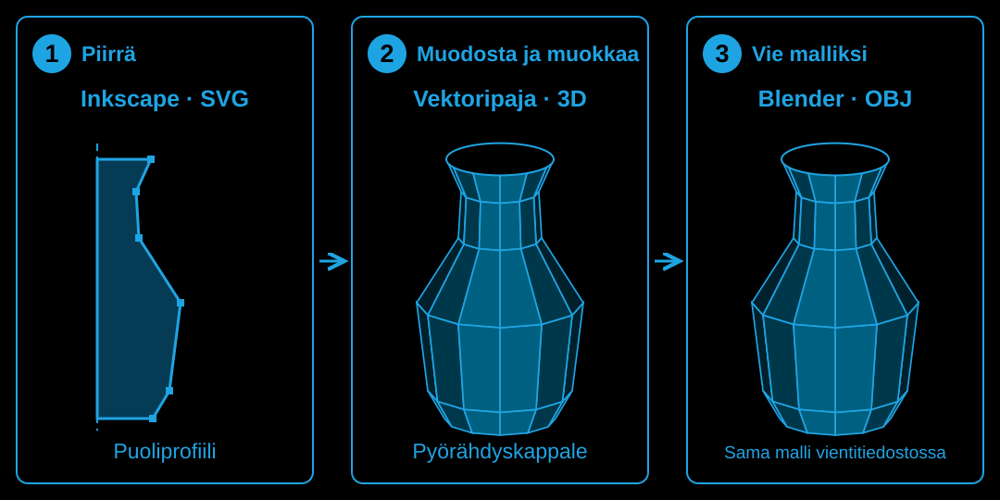

Vektoripaja
Paperinen työpaketti
Low-poly 3D-mallinnin Windows-työpöytäsovelluksena (Python): Inkscapen SVG → 3D-malli → .obj. Tekoälyavusteinen työtapa: Microsoft 365 Copilot suunnittelee ja auttaa Tiedosto-kaistalla. GitHub Copilot avustaa VS Codessa.
Vk 40/2026–vk 9/2027 · syysloma vk 42 · joululoma 18.12.–10.1. · talviloma vk 8 · luovutus pe 5.3.2027
Tämä paketti on aikataulu ja tarkistuslista tilanteisiin, joissa sivusto ei ole auki. Dokumentit kirjoitetaan VS Codessa repositoryn tiedostoihin, esimerkiksi project-docs/projektipaivakirja.md. Rasti tässä vihossa ei ole palautus: työ on aina Git-repositoryssa.
Repository on julkinen. Sinne ei laiteta henkilötietoja, testaajien nimiä eikä itsearviointia. Ne lähetetään ohjaajalle Teamsissa.
Viikkopalaveri ohjaajan kanssa on maanantaina tai tiistaina. Päivä sovitaan viikolla 40.
Dokumentit kirjoitetaan VS Codessa repositoryn project-docs-tiedostoihin, esimerkiksi project-docs/suunnitelma.md. Sivun ohjeet ovat Työtapa-näkymässä (Näin teet ja Dokumentit).
Mitä rakennat ja miten etenet
Piirrät Inkscapessa. Vektoripaja tekee piirroksesta 3D-kappaleita, joita käyttäjä voi muokata ja tallentaa. Valmis malli viedään Blenderiin .obj-tiedostona.

- 1. Piirrä lähtökuva Inkscapessa ja tallenna se SVG-tiedostona.
- 2. Avaa kuva Vektoripajassa. Muodosta 3D-kappaleet, muokkaa osia ja tallenna työ.
- 3. Vie valmis malli .obj-tiedostona Blenderiin tai toiseen 3D-ohjelmaan. .obj-tiedosto on 3D-mallin tiedostomuoto.
Projektin viisi vaihetta
1. Valmistellaan työkalut ja työtapa. Viikot 40–41: työkalut ja kuutioharjoitus. Opit tekemään, testaamaan ja julkaisemaan. Syysloma viikolla 42.
2. Rakennetaan piirroksesta 3D-malli. Viikot 43–47: piirroksen tuonti, osat, muodot ja muokkaaminen. Pakollisen ytimen toiminnot syntyvät.
3. Tehdään ensimmäinen toimiva versio. Viikot 48–51: kiertopiste, vienti, tallennus ja asiakkaiden kokeilu. Joululoma viikoilla 52–1.
4. Parannetaan asiakkaiden palautteen perusteella. Viikot 2–5: korjaukset ja sovitut jatkotoiminnot. Palaute ohjaa seuraavia muutoksia.
5. Julkaisu ja näyttö. Viikot 6–9: julkaisutesti, v1.0 ja esittely. Talviloma viikolla 8, näyttö viikolla 9.
Tee viikon työvaiheet järjestyksessä. Kun rakennat muutosta sovellukseen, tee siitä tehtäväkortti GitHub-issueen ja käytä työsykliä. Kirjaa testitulos issueen ja viikon kirjaus tiedostoon project-docs/projektipaivakirja.md.
Aikataulu
| Vko | Pvm | Viikon aihe | Vaihe |
|---|
| 40 | 28.9.–2.10. | Aloitus: työkalut ja projektin rajaus | 1 |
| 41 | 5.–9.10. | Harjoitus: pyörivä kuutio julki | 1 |
| 42 | 12.–16.10. | Syysloma – ei projektityötä | – |
| 43 | 19.–23.10. | Piirroksen tuonti (SVG) | 2 |
| 44 | 26.–30.10. | Piirroksen ryhmistä mallin osiksi | 2 |
| 45 | 2.–6.11. | Profiilista pyörähdyskappale (revolve) | 2 |
| 46 | 9.–13.11. | Viivasta putki ja mallin näkymät | 2 |
| 47 | 16.–20.11. | Osien siirto, kierto ja skaalaus | 2 |
| 48 | 23.–27.11. | Kiertopisteen säätäminen (pivot) | 3 |
| 49 | 30.11.–4.12. | Mallin vienti Blenderiin (OBJ) | 3 |
| 50 | 7.–11.12. | Tallennus ja ensimmäinen toimiva versio | 3 |
| 51 | 14.–17.12. | Asiakkaat kokeilevat ensimmäistä versiota | 3 |
| 52 | 21.–25.12. | Joululoma – ei projektityötä | – |
| 53 | 28.12.–1.1. | Joululoma – ei projektityötä | – |
| 1 | 4.–8.1. | Joululoma – ei projektityötä | – |
| 2 | 11.–15.1. | Paluu ja parannusten järjestys | 4 |
| 3 | 18.–22.1. | Muokatun piirroksen päivittäminen | 4 |
| 4 | 25.–29.1. | Puutteet ja sovitut parannukset | 4 |
| 5 | 1.–5.2. | Selkeät säätimet ja näppäimistökäyttö | 4 |
| 6 | 8.–12.2. | Julkaisun kokeilu toisella koneella | 5 |
| 7 | 15.–19.2. | Valmis sovellus v1.0 | 5 |
| 8 | 22.–26.2. | Talviloma – ei projektityötä | – |
| 9 | 1.–5.3. | Projektin esittely ja luovutus | 5 |
Palautus viimeistään pe 5.3.2027. Sivusto: tehtävien tarkat ohjeet, toteutusavut ja projektipäiväkirja.
Vaihe 1 – Valmistellaan työkalut ja työtapa
Vko 40 · 28.9.–2.10. – Aloitus: työkalut ja projektin rajaus
Yhteys kokonaisprojektiin: Vektoripajassa Inkscapella tehty piirros muuttuu muokattavaksi 3D-malliksi, jonka voi viedä Blenderiin. Tällä viikolla laitat työkalut ja oman repositoryn kuntoon. Lisäksi rajaat ensimmäisen toimivan version. Sen nimi on pakollinen ydin eli MVP. Näin seuraavien viikkojen toteutuksella on selkeä tavoite ja paikka, jossa muutokset säilyvät.
Viikon tavoite: Työkalut ovat käytössä, projektilla on oma repository ja ensimmäinen versio on rajattu.
Työvaihe 1 / 8 · Valmistele työkalut
- ☐ Sovi aloitus ohjaajan kanssa
Missä: Teams, keskustelu ohjaajan kanssa
Tee: Tekijänimi näkyy julkisesti commiteissa, ja se voi olla muu kuin oikea nimesi. Kopioi viesti, kirjoita tekstit ___-viivojen tilalle ja poista päivä, joka ei sovi. Lähetä viesti. Ohje: Lähetä viesti Teamsissa (Vektoripaja-sivusto: Työtapa → Näin teet).
Näet nyt: Viesti on lähetetty. Ohjaaja vahvistaa tekijänimen ja palaveripäivän vastauksessaan.
Hei Matti,
ehdotan tekijänimekseni: ___
Viikkopalaveri sopii minulle: maanantaina / tiistaina klo ___ - ☐ Tarkista VS Code, Inkscape ja Blender
Missä: Windowsin Käynnistä-valikko
Tee: Käynnistä VS Code, Inkscape ja Blender yksi kerrallaan.
Näet nyt: Kaikki kolme ohjelmaa aukeavat. Jos ohjelma puuttuu, lataa sen Windowsin 64-bit-asennusohjelma ja asenna se oletusvalinnoin: VS Code (https://code.visualstudio.com/download), Inkscape (https://inkscape.org/release/) tai Blender (https://www.blender.org/download/). - ☐ Tarkista Git
Missä: VS Code, terminaali. Ohje: Avaa terminaali ja tarkista (.venv) (Vektoripaja-sivusto: Työtapa → Näin teet)
Tee: Aja komento. Ohje: Kopioi ja aja komento (Vektoripaja-sivusto: Työtapa → Näin teet). Kirjoita versionumero paperille.
Näet nyt: Terminaalissa lukee git version ja numero, esimerkiksi git version 2.47.1. Viikolla 40 rivin alussa ei lue (.venv), ja se on oikein. Jos lukee git : The term 'git' is not recognized, lataa git-scm.com (https://git-scm.com/downloads/win)-sivulta 64-bit Git for Windows Setup, asenna se oletusvalinnoin ja käynnistä VS Code uudelleen. Avaa sitten terminaali ja aja komento uudelleen.
git --version - ☐ Tarkista Python
Missä: VS Code, terminaali
Tee: Aja komento. Ohje: Kopioi ja aja komento (Vektoripaja-sivusto: Työtapa → Näin teet). Kirjoita versionumero paperille.
Näet nyt: Terminaalissa lukee Python 3.13 ja numero. Jos lukee Python was not found, jos Microsoft Store aukeaa tai jos versio on muu, lataa python.org (https://www.python.org/downloads/windows/)-sivulta Python 3.13:n Windows installer (64-bit) ja asenna se kuvaohjeen (Vektoripaja-sivusto: kuvaohje) mukaan.
python --version - ☐ Varmista pip
Missä: VS Code, terminaali
Tee: Sulje VS Code ja avaa se uudelleen. Avaa terminaali (Avaa terminaali ja tarkista (.venv) (Vektoripaja-sivusto: Työtapa → Näin teet)), aja komento (Kopioi ja aja komento (Vektoripaja-sivusto: Työtapa → Näin teet)) ja kirjoita pipin versionumero paperille.
Näet nyt: Tuloste on esimerkiksi pip 24.3.1 from C:\...\pip (python 3.13). Pipin versionumero on heti sanan pip jälkeen, esimerkissä 24.3.1. Rivin lopussa lukee (python 3.13). Jos rivin lopussa lukee jokin muu versio, maalaa tuloste hiirellä, paina Ctrl+C ja lähetä se ohjaajalle. Ohje: Lähetä viesti Teamsissa (Vektoripaja-sivusto: Työtapa → Näin teet).
python -m pip --version - ☐ Tarkista Python-laajennus
Missä: VS Code, Extensions
Tee: Paina Ctrl+Shift+X. Kirjoita hakuun Python ja valitse laajennus, jonka julkaisija on Microsoft.
Näet nyt: Laajennuksen kohdalla lukee Uninstall, eli se on asennettu. Jos lukee Install, valitse Install. - ☐ Vaihda VS Coden teema
Missä: VS Code
Tee: Paina Ctrl+K ja sitten Ctrl+T. Valitse listasta Dark High Contrast.
Näet nyt: VS Coden tausta on musta, ja reunat ovat vahvat.
Valmis kun: VS Code, Inkscape ja Blender käynnistyvät, Gitin, Pythonin ja pipin versiot ovat paperilla, ja VS Coden teema on vaihdettu.
Tallenna työnäyte: Tekijänimi ja palaveripäivä ohjaajan Teams-vastauksessa. Versiot paperilla työvaihetta 5 Kirjaa työkalujen versiot varten.
Työvaihe 2 / 8 · Ota GitHub ja GitHub Copilot käyttöön
- ☐ Kirjaudu GitHubiin
Missä: Selain
Tee: Avaa GitHubin kirjautumissivu (https://github.com/login) ja kirjaudu omalla GitHub-tunnuksellasi.
Näet nyt: GitHubin oikeassa yläkulmassa on profiilikuvasi. Jos sinulla ei ole GitHub-tiliä tai kirjautuminen ei onnistu, kysy ohjaajalta Teamsissa. Ohje: Lähetä viesti Teamsissa (Vektoripaja-sivusto: Työtapa → Näin teet). - ☐ Vaihda GitHubin teema
Missä: Selain, GitHub
Tee: Avaa GitHubin ulkoasuasetukset (https://github.com/settings/appearance). Valitse kohdasta Theme vaihtoehto Dark high contrast.
Näet nyt: GitHubin tausta on musta, ja teksti on korkeakontrastinen. - ☐ Asenna GitHub Copilot
Missä: VS Code, Extensions
Tee: Paina Ctrl+Shift+X. Kirjoita hakuun GitHub Copilot Chat ja valitse laajennus, jonka julkaisija on GitHub.
Näet nyt: Laajennuksen kohdalla lukee Uninstall, eli se on asennettu. Jos lukee Install, valitse Install. - ☐ Kirjaudu GitHub Copilotiin
Missä: VS Code, alareunan tilarivin oikea reuna
Tee: Napsauta Copilot-kuvaketta: pieni pää, jolla on suojalasit. Jos VS Code pyytää kirjautumaan, valitse kirjautuminen GitHubilla ja salli se selaimessa samalla tunnuksella.
Näet nyt: Kun palaat VS Codeen, Copilot-kuvakkeen päällä ei ole viivaa. Jos kuvaketta ei ole, kysy ohjaajalta Teamsissa. Ohje: Lähetä viesti Teamsissa (Vektoripaja-sivusto: Työtapa → Näin teet). - ☐ Tarkista, että GitHub Copilot on käytössä
Missä: VS Code, alareunan tilarivin oikea reuna
Tee: Napsauta Copilot-kuvaketta uudelleen.
Näet nyt: Aukeavassa ikkunassa on rivi Included credits ja prosenttiluku, esimerkiksi 0% used. Silloin GitHub Copilot on käytössä. Jos kuvaketta ei ole tai rivi puuttuu, kysy ohjaajalta Teamsissa. Ohje: Lähetä viesti Teamsissa (Vektoripaja-sivusto: Työtapa → Näin teet).
Valmis kun: Olet kirjautunut GitHubiin, GitHubin teema on vaihdettu, ja Copilot-kuvake näyttää krediittien kulutuksen.
Tallenna työnäyte: Ei tallennettavaa: kirjautuminen ja teema ovat selaimessa ja VS Codessa.
Työvaihe 3 / 8 · Aseta Git
- ☐ Piilota sähköpostiosoite
Missä: Selain, GitHub
Tee: Avaa GitHubin sähköpostiasetukset (https://github.com/settings/emails). Valitse Keep my email addresses private.
Näet nyt: Ruudun tekstissä on osoite, joka loppuu tekstiin users.noreply.github.com. Jätä sivu auki. Kuvaohjeen (Vektoripaja-sivusto: kuvaohje) kohdat 1–3 näyttävät nämä vaiheet. Kohdan 4 teet seuraavissa osatehtävissä Kopioi-painikkeella. - ☐ Liitä sähköpostikomento terminaaliin
Missä: VS Code, terminaali. Ohje: Avaa terminaali ja tarkista (.venv) (Vektoripaja-sivusto: Työtapa → Näin teet)
Tee: Kopioi komento. Napsauta terminaalia ja paina Ctrl+V, mutta älä paina vielä Enter.
Näet nyt: Komento näkyy terminaalin rivillä. Sen lopussa on kaksi lainausmerkkiä, joiden välissä ei ole mitään.
git config --global user.email "" - ☐ Liitä noreply-osoite komentoon
Missä: Selain, GitHubin sähköpostiasetukset, ja VS Coden terminaali
Tee: Maalaa GitHubissa noreply-osoite hiirellä sen ensimmäisestä merkistä loppuun asti ja paina Ctrl+C. Napsauta terminaalia, paina nuolta vasemmalle kerran ja paina Ctrl+V ja Enter.
Näet nyt: Osoite on lainausmerkkien sisällä, esimerkiksi git config --global user.email "12345678+tunnus@users.noreply.github.com". Terminaali ei tulosta mitään. - ☐ Tarkista Gitin sähköposti
Missä: VS Code, terminaali
Tee: Aja komento. Ohje: Kopioi ja aja komento (Vektoripaja-sivusto: Työtapa → Näin teet).
Näet nyt: Terminaalissa lukee noreply-osoitteesi, joka loppuu tekstiin users.noreply.github.com. Silloin commitit eivät näytä omaa sähköpostiosoitettasi. Jos lukee jotain muuta, tee osatehtävät 2 ja 3 uudelleen.
git config --global user.email - ☐ Tarkista, että tekijänimi on vahvistettu
Missä: Teams, keskustelu ohjaajan kanssa
Tee: Lue ohjaajan vastaus työvaiheen 1 viestiisi. Jos ohjaaja ei ole vahvistanut tekijänimeä, lähetä tämä muistutus. Ohje: Lähetä viesti Teamsissa (Vektoripaja-sivusto: Työtapa → Näin teet).
Näet nyt: Ohjaaja on vahvistanut tekijänimen. Jos vastausta ei vielä ole, jatka työvaiheesta 4 Perusta projektin repository: avaa työvaihe napsauttamalla sen otsikkoa. Palaa tähän, kun vastaus tulee. Tee työvaihe 3 Aseta Git valmiiksi ennen työvaihetta 5 Kirjaa työkalujen versiot.
Hei Matti,
muistutus: ehdotin tekijänimekseni ___. Voitko vahvistaa sen? Tarvitsen nimen ennen ensimmäistä committia. - ☐ Liitä nimikomento terminaaliin
Missä: VS Code, terminaali, kun ohjaaja on vahvistanut tekijänimen
Tee: Kopioi komento. Napsauta terminaalia ja paina Ctrl+V, mutta älä paina vielä Enter.
Näet nyt: Komento näkyy terminaalin rivillä. Sen lopussa on sana Tekijänimi lainausmerkkien sisällä.
git config --global user.name "Tekijänimi" - ☐ Vaihda tekijänimi komentoon
Missä: VS Code, terminaali
Tee: Paina nuolta vasemmalle kerran ja poista sana Tekijänimi Backspace-näppäimellä. Kirjoita ohjaajan vahvistama tekijänimi ja paina Enter.
Näet nyt: Ennen Enteriä rivillä luki esimerkiksi git config --global user.name "Kuutiomestari". Lainausmerkit jäivät paikalleen. Terminaali ei tulosta mitään. Nimi on asetettu.
Valmis kun: Gitin sähköposti on GitHubin noreply-osoite, ja Gitin nimi on sovittu tekijänimi.
Tallenna työnäyte: Ei tallennettavaa tiedostoa: asetukset ovat omalla koneellasi Gitissä.
Työvaihe 4 / 8 · Perusta projektin repository
- ☐ Luo repository
Missä: Selain, GitHub
Tee: Täytä uuden repositoryn lomake (https://github.com/new): nimi Vektoripaja, Public ja Add a README file. Valitse Create repository.
Näet nyt: Repositoryn etusivu aukeaa. Siinä on tiedosto README.md. Osoiterivillä on github.com/, oma GitHub-tunnuksesi ja /Vektoripaja. - ☐ Kloonaa repository VS Codeen
Missä: VS Code, Source Control
Tee: Tee kuvaohjeen (Vektoripaja-sivusto: kuvaohje) kohdat 1–3. Valitse sitten kansioikkunassa kansio Tiedostot (englanniksi Documents) ja painike Select as Repository Destination, ja kirjoita paperille Tiedostot\Vektoripaja.
Näet nyt: VS Code kysyy, avataanko kloonattu repository (Would you like to open the cloned repository?). Jos VS Code pyytää ensin kirjautumaan GitHubiin, valitse Allow ja kirjaudu selaimessa samalla tunnuksella. - ☐ Avaa kloonattu repository
Missä: VS Code, kloonauksen jälkeinen kysymys
Tee: Valitse Open. Se on kuvaohjeen (Vektoripaja-sivusto: kuvaohje) kohdan 4 Open-painike. Jos VS Code kysyy Do you trust the authors of the files in this folder?, valitse Yes, I trust the authors.
Näet nyt: VS Coden Explorerissa lukee VEKTORIPAJA ja tiedosto README.md. - ☐ Jaa repository ohjaajalle
Missä: Selain, GitHub
Tee: Avaa repositoryn Collaborators-asetukset (oma GitHub-repositorysi, sivu settings/access). Valitse Add people ja kirjoita ohjaajan tunnus mattiseise.
Näet nyt: Ohjaaja näkyy listassa tilassa Pending invite. Voit jatkaa, vaikka ohjaaja ei ole vielä hyväksynyt kutsua. Katso kuvaohje (Vektoripaja-sivusto: kuvaohje). Sivuston GitHub-linkit vievät tähän repositoryyn. Jos osoiterivillä on eri tunnus kuin omasi tai sivulla lukee 404, lähetä ohjaajalle viesti. Ohje: Lähetä viesti Teamsissa (Vektoripaja-sivusto: Työtapa → Näin teet).
Hei Matti,
Vektoripajan sivuston GitHub-linkit vievät tunnukselle, joka ei ole minun. Oma GitHub-tunnukseni on ___. - ☐ Pyydä pull request, jos sitä ei ole
Missä: Selain, GitHub, ja Teams
Tee: Avaa repositoryn Pull requests -sivu (oma GitHub-repositorysi, sivu pulls). Jos listassa ei ole avointa pull requestia, lähetä ohjaajalle viesti. Ohje: Lähetä viesti Teamsissa (Vektoripaja-sivusto: Työtapa → Näin teet).
Näet nyt: Listassa on ohjaajan pull request, tai viesti on lähetetty. Ohjaaja tekee pull requestin, kun hän on hyväksynyt kutsusi. Odottaessasi tee työvaihe 8 Mittaa agentin krediittikulutus. Jos Gitin nimi on asetettu, tee myös työvaihe 5 Kirjaa työkalujen versiot. Avaa työvaihe napsauttamalla sen otsikkoa. Palaa tähän, kun pull request on listassa. Jos se puuttuu yhä, kun nämä työvaiheet ovat valmiit, lähetä sama viesti uudelleen.
Hei Matti,
kutsuin sinut repositoryyni Vektoripaja. Siinä ei vielä ole pull requestia, joka tuo pohjat ja dokumentit. Voitko tehdä sen? - ☐ Hyväksy ohjaajan pull request
Missä: Selain, GitHub, ja VS Code
Tee: Tarkista ja hyväksy ohjaajan pull request, joka tuo pohjat ja dokumentit. Ohje: Tarkasta ja hyväksy pull request (Vektoripaja-sivusto: Työtapa → Näin teet).
Näet nyt: Pull requestin tiedostot näkyvät Explorerissa omalla koneellasi. - ☐ Tarkista, että pull request toi nämä tiedostot
Missä: VS Code, Explorer
Tee: Avaa kansiot .github ja project-docs. Ohje: Avaa tiedosto Explorerissa (Vektoripaja-sivusto: Työtapa → Näin teet).
Näet nyt: Kansiossa .github ovat copilot-instructions.md ja kansio ISSUE_TEMPLATE. Kansiossa project-docs ovat suunnitelma.md (Vektoripaja-sivusto: Työtapa → Dokumentit), projektipaivakirja.md (Vektoripaja-sivusto: Työtapa → Dokumentit), ai-loki.md (Vektoripaja-sivusto: Työtapa → Dokumentit) ja muut dokumentit. Repositoryn juuressa eli kansioiden kanssa samalla tasolla on PROJEKTIN-TILA.md.
Valmis kun: Repository on kloonattu VS Codeen, ohjaaja on kutsuttu Collaboratoriksi, ja pull requestin pohjat ja dokumentit ovat repositoryssa.
Tallenna työnäyte: Repository ja pohjat GitHubissa. Repositoryn osoite tulee viikon kirjaukseen viikon viimeisenä työpäivänä.
Työvaihe 5 / 8 · Kirjaa työkalujen versiot
- ☐ Avaa README
Missä: VS Code, Explorer
Tee: Avaa tiedosto README.md. Ohje: Avaa tiedosto Explorerissa (Vektoripaja-sivusto: Työtapa → Näin teet).
Näet nyt: README.md on auki. Ensimmäisellä rivillä lukee # Vektoripaja. - ☐ Kirjoita työkalujen versiot
Missä: README.md, tiedoston loppu
Tee: Paina Ctrl+End ja Enter, kopioi pohja ja liitä se Ctrl+V:llä. Kirjoita ___-kohtiin paperille kirjoittamasi versionumerot. Ohje: Kirjoita Markdownia (Vektoripaja-sivusto: Työtapa → Näin teet).
Näet nyt: README:n lopussa on otsikko ## Työkalut ja kolme riviä, jotka alkavat merkillä - ja välilyönnillä. Jos versiot puuttuvat paperilta, aja työvaiheen 1 Valmistele työkalut komennot uudelleen.
## Työkalut
- Python ___
- pip ___
- Git ___ - ☐ Tee commit ja push
Missä: VS Code, Source Control
Tee: Tee commit ja push. Ohje: Tee commit ja push (Vektoripaja-sivusto: Työtapa → Näin teet).
Näet nyt: GitHubin commit-listassa ylimpänä on commit-viestisi. Kun avaat sen, näet tiedoston README.md muutokset.
Kirjaa työkalujen versiot README:hen
Valmis kun: README:ssä on Pythonin, pipin ja Gitin versiot GitHubissa.
Tallenna työnäyte: Versiot tiedostossa README.md GitHubissa.
Työvaihe 6 / 8 · Rajaa ensimmäinen versio
- ☐ Lue toimeksiannon rajaus
Missä: Selain, Vektoripajan sivu
Tee: Lue toimeksiannon kohta Ehdotettu toteutustapa (Vektoripaja-sivusto: Toimeksianto): pakollinen ydin ja tärkeä jatko.
Näet nyt: Tiedät, mitkä toiminnot kuuluvat pakolliseen ytimeen ennen joulua ja mitkä tärkeään jatkoon. - ☐ Avaa suunnitelma
Missä: VS Code, Explorer
Tee: Avaa tiedosto project-docs/suunnitelma.md (Vektoripaja-sivusto: Työtapa → Dokumentit). Ohje: Avaa tiedosto Explorerissa (Vektoripaja-sivusto: Työtapa → Näin teet).
Näet nyt: Tiedosto on auki. Siinä on osio ## A · Perustiedot ja otsikko ### MVP omin sanoin (viikko 40). - ☐ Kirjoita projektin nimi
Missä: Tiedosto suunnitelma.md (Vektoripaja-sivusto: Työtapa → Dokumentit), otsikko ### Projektin nimi (viikko 40)
Tee: Etsi otsikko. Ohje: Etsi otsikko tiedostosta (Vektoripaja-sivusto: Työtapa → Näin teet). Kirjoita ohjerivin jälkeen Vektoripaja.
Näet nyt: Otsikon ohjerivin jälkeen on rivi Vektoripaja.
### Projektin nimi (viikko 40) - ☐ Kirjoita tekijä
Missä: Tiedosto suunnitelma.md (Vektoripaja-sivusto: Työtapa → Dokumentit), otsikko ### Tekijä (viikko 40)
Tee: Etsi otsikko. Ohje: Etsi otsikko tiedostosta (Vektoripaja-sivusto: Työtapa → Näin teet). Kirjoita ohjerivin jälkeen tekijänimi, jonka sovit ohjaajan kanssa.
Näet nyt: Otsikon ohjerivin jälkeen on sovittu tekijänimi.
### Tekijä (viikko 40) - ☐ Kirjoita MVP omin sanoin
Missä: Tiedosto suunnitelma.md (Vektoripaja-sivusto: Työtapa → Dokumentit), otsikko ### MVP omin sanoin (viikko 40)
Tee: Etsi otsikko. Ohje: Etsi otsikko tiedostosta (Vektoripaja-sivusto: Työtapa → Näin teet). Kirjoita ohjerivin jälkeen pakollisen ytimen toiminnot 2–3 ryhmänä omin sanoin ja se, miksi tärkeä jatko odottaa. Malli: suunnitelma.md (Vektoripaja-sivusto: Työtapa → Dokumentit).
Näet nyt: Otsikon jälkeen on 2–5 omaa virkettä. Niissä on 2–3 toimintojen ryhmää ja sana koska. Jokaista toimintoa ei tarvitse luetella erikseen.
### MVP omin sanoin (viikko 40) - ☐ Tee commit ja push
Missä: VS Code, Source Control
Tee: Tee commit ja push. Ohje: Tee commit ja push (Vektoripaja-sivusto: Työtapa → Näin teet).
Näet nyt: GitHubin commit-listassa ylimpänä on commit-viestisi. Kun avaat sen, näet tiedoston suunnitelma.md (Vektoripaja-sivusto: Työtapa → Dokumentit) muutokset.
Kirjoita nimi, tekijä ja pakollinen ydin suunnitelmaan
Valmis kun: Oma kuvaus pakollisesta ytimestä on GitHubissa.
Tallenna työnäyte: Nimi, tekijä ja pakollinen ydin tiedostossa suunnitelma.md (Vektoripaja-sivusto: Työtapa → Dokumentit) GitHubissa.
Työvaihe 7 / 8 · Lähetä kysymykset asiakkaille
- ☐ Avaa kysymykset
Missä: VS Code, Explorer
Tee: Avaa tiedosto project-docs/kysymykset.md (Vektoripaja-sivusto: Työtapa → Dokumentit). Ohje: Avaa tiedosto Explorerissa (Vektoripaja-sivusto: Työtapa → Näin teet).
Näet nyt: Tiedosto on auki. Siinä ovat otsikot ### 1. (kirjoita kysymys), ### 2. (kirjoita kysymys) ja ### 3. (kirjoita kysymys). - ☐ Kirjoita kysymykset asiakkaille
Missä: Tiedosto kysymykset.md (Vektoripaja-sivusto: Työtapa → Dokumentit), otsikot ### 1., ### 2. ja ### 3.
Tee: Kirjoita kysymys jokaisen otsikon tekstin (kirjoita kysymys) tilalle. Jätä merkit ### ja numero paikalleen.
Näet nyt: Tiedostossa on kolme kysymystä otsikoina. Jokainen kysyy asiaa, jota Toimeksianto (Vektoripaja-sivusto) ei kerro. - ☐ Tee commit ja push
Missä: VS Code, Source Control
Tee: Tee commit ja push. Ohje: Tee commit ja push (Vektoripaja-sivusto: Työtapa → Näin teet).
Näet nyt: GitHubin commit-listassa ylimpänä on commit-viestisi. Kun avaat sen, näet tiedoston kysymykset.md (Vektoripaja-sivusto: Työtapa → Dokumentit) muutokset.
Kirjoita kysymykset asiakkaille - ☐ Liitä viestipohja Teamsiin
Missä: Teams, keskustelu, jossa ovat Matti Seise ja Antti Honkasalo
Tee: Kopioi viestipohja. Liitä se keskusteluun, jossa ovat Matti Seise ja Antti Honkasalo, mutta älä lähetä vielä. Ohje: Lähetä viesti Teamsissa (Vektoripaja-sivusto: Työtapa → Näin teet).
Näet nyt: Viestipohja on Teamsin viestikentässä. Siinä ovat rivit 1., 2. ja 3. ilman kysymyksiä.
Hei Matti ja Antti,
kysymyksiä Vektoripajasta:
1.
2.
3.
Käydäänkö vastaukset läpi viikkopalaverissa? - ☐ Liitä kysymykset viestiin
Missä: VS Code, tiedosto kysymykset.md (Vektoripaja-sivusto: Työtapa → Dokumentit), ja Teams
Tee: Napsauta VS Codessa kysymyksen 1 ensimmäisen sanan eteen ja paina Shift+End ja Ctrl+C. Napsauta Teamsissa rivin 1. loppua, paina Ctrl+V ja tee samoin kysymyksille 2 ja 3.
Näet nyt: Jokaisella numerorivillä on yksi kysymyksesi ilman merkkejä ###. Jos kysymyksiä on enemmän kuin kolme, tee uusi rivi näppäimillä Shift+Enter, koska pelkkä Enter lähettää viestin. - ☐ Lähetä kysymykset
Missä: Teams, viestikenttä
Tee: Paina Enter.
Näet nyt: Viesti näkyy keskustelussa. Vastaukset käydään läpi viikon 41 palaverissa.
Valmis kun: Kysymykset ovat GitHubissa, ja kysymyslista on lähetetty asiakkaille.
Tallenna työnäyte: Kysymykset tiedostossa kysymykset.md (Vektoripaja-sivusto: Työtapa → Dokumentit) GitHubissa.
Työvaihe 8 / 8 · Mittaa agentin krediittikulutus
- ☐ Katso kulutus ennen mittausta
Missä: VS Code, alareunan tilarivi
Tee: Katso krediittien kulutus. Ohje: Katso krediittien kulutus (Vektoripaja-sivusto: Työtapa → Näin teet). Kirjoita prosenttiluku paperille.
Näet nyt: Sinulla on luku ennen mittausta, esimerkiksi 11 %. - ☐ Avaa GitHub Copilotin chat
Missä: VS Code
Tee: Avaa repository. Ohje: Avaa repository VS Codessa (Vektoripaja-sivusto: Työtapa → Näin teet). Paina sitten Ctrl+Alt+I.
Näet nyt: Explorerissa lukee VEKTORIPAJA, ja chat aukeaa VS Coden oikeaan reunaan. - ☐ Vaihda agenttitilaan
Missä: Chat, tilavalikko viestikentän alapuolella
Tee: Chat on jo auki edellisestä osatehtävästä. Aloita kuvaohjeen (Vektoripaja-sivusto: kuvaohje) kohdasta 2 ja valitse tilaksi Agent.
Näet nyt: Tilavalikossa lukee Agent. Agenttitila muokkaa tiedostoja ja kuluttaa krediittejä. Viikolla 40 käytät sitä kerran mittausta varten. Viikosta 44 alkaen käytät sitä vain Agentti-kaistalla. - ☐ Lähetä mittausviesti
Missä: Chat, viestikenttä
Tee: Kopioi viesti. Liitä se viestikenttään ja paina Enter.
Näet nyt: GitHub Copilot ehdottaa muutosta tiedostoon README.md.
Lue README.md ja ehdota sen alkuun yksi lause, joka kertoo, mikä Vektoripaja on. Älä muuta muita tiedostoja. - ☐ Hylkää muutos valitsemalla Undo
Missä: Chat, muuttunut tiedosto
Tee: Valitse Undo, koska tämä on vain mittaus. Keep ja Undo ovat chatissa muuttuneen tiedoston kohdalla: Hyväksy tai hylkää GitHub Copilotin muutos (Vektoripaja-sivusto: kuvaohje).
Näet nyt: README.md on ennallaan. Koska tiedostot eivät muuttuneet, et tee mittauksesta committia etkä merkintää tiedostoon ai-loki.md (Vektoripaja-sivusto: Työtapa → Dokumentit). - ☐ Laske agenttipyynnön hinta
Missä: VS Code, alareunan tilarivi
Tee: Katso kulutus uudelleen. Ohje: Katso krediittien kulutus (Vektoripaja-sivusto: Työtapa → Näin teet). Laske uusi luku miinus aiempi luku.
Näet nyt: Erotus on agenttipyynnön hinta prosentteina. Kirjaat alku- ja loppulukeman ja erotuksen viikon kirjaukseen tiedostoon projektipaivakirja.md (Vektoripaja-sivusto: Työtapa → Dokumentit) kohtaan Mitä tein ja miten?. Jos luku ei muuttunut, kirjaa "odottaa käyttönäkymää".
Valmis kun: Tiedät agenttipyynnön hinnan prosentteina, tai tiedät, että luku päivittyy myöhemmin. README.md on ennallaan.
Tallenna työnäyte: Alku- ja loppulukema sekä erotus viikon kirjauksen kohtaan Mitä tein ja miten? viikon viimeisenä työpäivänä.
Viikon lopputarkistus: Ohjaaja on kutsuttu repositoryyn, pakollinen ydin on tiedostossa suunnitelma.md (Vektoripaja-sivusto: Työtapa → Dokumentit) GitHubissa, kysymyslista on lähetetty, ja tiedät agenttipyynnön hinnan.
Työnäyte Git-repositoryyn ennen rastia: repositoryn osoite, pakollinen ydin eli MVP tiedostossa project-docs/suunnitelma.md (Vektoripaja-sivusto: Työtapa → Dokumentit) GitHubissa ja agenttipyynnön hinta viikon kirjauksessa.
Vko 41 · 5.–9.10. – Harjoitus: pyörivä kuutio julki
Yhteys kokonaisprojektiin: Ennen varsinaisia mallinnustoimintoja harjoittelet koko matkan tehtäväkortista testattuun ja ladattavaan sovellukseen. Pyörivä kuutio on pieni harjoitus, jolla varmistat, että kehitysympäristö, testit ja Windows-julkaisu toimivat yhdessä. Samaa työsykliä käytät myöhemmin Vektoripajan jokaisen ominaisuuden rakentamiseen.
Viikon tavoite: Windowsissa käynnistyy ladattu harjoitussovellus, jossa kuutio pyörii.
Työvaihe 1 / 10 · Siirrä dokumentit repositoryyn
- ☐ Hyväksy ohjaajan pull request
Missä: Selain, GitHub, ja sen jälkeen VS Code
Tee: Jos hyväksyit tämän pull requestin jo viikolla 40, rastita tämä osatehtävä ja siirry osatehtävään 2. Muuten tee pull requestin ohje loppuun asti, myös sen viimeinen vaihe Git: Pull. Ohje: Tarkasta ja hyväksy pull request (Vektoripaja-sivusto: Työtapa → Näin teet).
Näet nyt: Pull requestin sivulla lukee Merged, ja VS Coden Explorerissa on kansio project-docs ja kansio .github. Ohjaajan pull request toi repositoryyn dokumentit ja pohjat. - ☐ Tarkista dokumentit
Missä: VS Code, Explorer, kansio project-docs
Tee: Napsauta kansion project-docs nimeä. Ohje: Avaa tiedosto Explorerissa (Vektoripaja-sivusto: Työtapa → Näin teet).
Näet nyt: Kansiossa ovat ai-loki.md (Vektoripaja-sivusto: Työtapa → Dokumentit), julkaisutesti.md (Vektoripaja-sivusto: Työtapa → Dokumentit), katselmointi.md (Vektoripaja-sivusto: Työtapa → Dokumentit), kirjastot.md (Vektoripaja-sivusto: Työtapa → Dokumentit), kysymykset.md (Vektoripaja-sivusto: Työtapa → Dokumentit), projektipaivakirja.md (Vektoripaja-sivusto: Työtapa → Dokumentit), saavutettavuus.md (Vektoripaja-sivusto: Työtapa → Dokumentit), suunnitelma.md (Vektoripaja-sivusto: Työtapa → Dokumentit) ja tietoturva.md (Vektoripaja-sivusto: Työtapa → Dokumentit) sekä kansio kuvat. Kansiossa voi olla myös tiedostoja, jotka olivat siellä jo ennen pull requestia, esimerkiksi oma MVP.md tai määrittelytiedosto LowPoly_Vector3D_Specification_Styled.md. Ne saavat jäädä. Jos pull requestin tiedostoja ei näy, tee pull requestin ohjeen viimeinen vaihe Git: Pull uudelleen. Tiedostot on kuvattu Työtapa-näkymän osiossa Dokumentit (Vektoripaja-sivusto: Työtapa). - ☐ Etsi otsikko MVP omin sanoin
Missä: VS Code, tiedosto project-docs/suunnitelma.md (Vektoripaja-sivusto: Työtapa → Dokumentit)
Tee: Jos sinulla ei ole omaa tiedostoa MVP.md kansiossa project-docs eikä Explorerin ylimmällä tasolla, rastita osatehtävät 3–6. Muuten avaa suunnitelma.md (Vektoripaja-sivusto: Työtapa → Dokumentit) ja etsi otsikko. Ohje: Etsi otsikko tiedostosta (Vektoripaja-sivusto: Työtapa → Näin teet).
Näet nyt: Kursori on tyhjällä rivillä otsikon ### MVP omin sanoin (viikko 40) ohjerivin jälkeen.
### MVP omin sanoin (viikko 40) - ☐ Kopioi tiedoston MVP.md teksti
Missä: VS Code, tiedosto MVP.md kansiossa project-docs tai Explorerin ylimmällä tasolla
Tee: Kopioi tiedoston MVP.md koko sisältö. Ohje: Kopioi tiedoston koko sisältö (Vektoripaja-sivusto: Työtapa → Näin teet).
Näet nyt: Koko teksti on leikepöydällä, myös rivit, jotka alkavat merkillä #. Tiedoston MVP.md teksti on ennallaan. - ☐ Liitä teksti suunnitelmaan
Missä: VS Code, välilehti suunnitelma.md (Vektoripaja-sivusto: Työtapa → Dokumentit) editorin yläreunassa
Tee: Valitse välilehti suunnitelma.md (Vektoripaja-sivusto: Työtapa → Dokumentit). Paina Ctrl+V ja sitten Ctrl+S.
Näet nyt: Tiedoston MVP.md teksti on otsikon ### MVP omin sanoin (viikko 40) ohjerivin jälkeen, ja sen #-rivit saavat jäädä. Jos otsikon jälkeen oli jo tekstiä, se jäi paikalleen. Tiedosto MVP.md jää kansioon ennalleen, etkä poista sitä. - ☐ Tee commit ja push
Missä: VS Code, Source Control
Tee: Tee commit ja push. Ohje: Tee commit ja push (Vektoripaja-sivusto: Työtapa → Näin teet). Changes-listassa on vain suunnitelma.md (Vektoripaja-sivusto: Työtapa → Dokumentit).
Näet nyt: GitHubin commit-listassa ylimpänä on commit-viestisi. Kun avaat sen, näet tiedoston suunnitelma.md (Vektoripaja-sivusto: Työtapa → Dokumentit) muutokset.
Siirrä tiedoston MVP.md teksti suunnitelmaan
Valmis kun: Dokumentit ovat repositoryssa ja omalla koneellasi. Jos sinulla oli tiedosto MVP.md, sen teksti on suunnitelmassa (Vektoripaja-sivusto: Työtapa → Dokumentit) GitHubissa.
Tallenna työnäyte: Tiedoston MVP.md teksti tiedostossa suunnitelma.md (Vektoripaja-sivusto: Työtapa → Dokumentit) GitHubissa.
Työvaihe 2 / 10 · Siirrä selaimen tekstit dokumentteihin
- ☐ Lataa sivulle kirjoittamasi teksti
Missä: Tämän työvaiheen alku, ennen osatehtävää 1
Tee: Valitse painike Lataa selaimen muistin tekstit. Valitse se vain kerran.
Näet nyt: Selain lataa tiedoston vektoripaja-selaimen-tekstit.md Lataukset-kansioon. Jos painikkeen tilalla lukee, ettei selaimen muistissa ole tekstiä, sivu on rastittanut tämän työvaiheen kaikki osatehtävät valmiiksi. Jatka silloin seuraavasta työvaiheesta. - ☐ Avaa ladattu tiedosto VS Codessa
Missä: VS Code, ylävalikko
Tee: Valitse File ja sitten Open File. Valitse vasemmasta reunasta Lataukset ja avaa tiedosto vektoripaja-selaimen-tekstit.md.
Näet nyt: Tiedosto on auki omalla välilehdellään. Jokainen ##-rivi kertoo kohdetiedoston, esimerkiksi ## 1. Tiedosto project-docs/suunnitelma.md (Vektoripaja-sivusto: Työtapa → Dokumentit), ja sen jälkeen ovat sen tiedoston kohdat. Kohta alkaa ###-rivillä, esimerkiksi ### Otsikon "MVP omin sanoin (viikko 40)" alle, ja jatkuu seuraavaan #-merkillä alkavaan riviin asti. - ☐ Etsi otsikko suunnitelmasta
Missä: VS Code, tiedosto project-docs/suunnitelma.md (Vektoripaja-sivusto: Työtapa → Dokumentit)
Tee: Valitse ladatusta tiedostosta ensimmäinen kohta, jota et ole vielä siirtänyt. Jos se kuuluu tiedostoon suunnitelma.md (Vektoripaja-sivusto: Työtapa → Dokumentit), avaa tiedosto ja etsi otsikko, joka on kohdan ###-rivillä lainausmerkkien sisällä. Ohje: Etsi otsikko tiedostosta (Vektoripaja-sivusto: Työtapa → Näin teet).
Näet nyt: Kohta kuuluu tiedostoon, jonka nimi on lähimmällä ##-rivillä kohdan yläpuolella. Kursori on tyhjällä rivillä otsikon >-ohjerivin jälkeen. Muiden tiedostojen kohdissa ohitat tämän osatehtävän. - ☐ Etsi kohta päiväkirjasta
Missä: VS Code, tiedosto project-docs/projektipaivakirja.md (Vektoripaja-sivusto: Työtapa → Dokumentit)
Tee: Jos kohta kuuluu tiedostoon projektipaivakirja.md (Vektoripaja-sivusto: Työtapa → Dokumentit), avaa se ja hae kohdan viikkoa, esimerkiksi Vko 40. Ohje: Etsi otsikko tiedostosta (Vektoripaja-sivusto: Työtapa → Näin teet), vaiheet 1–3. Paina sitten alanuolinäppäintä, kunnes kursori on tyhjällä rivillä kohdassa mainitun otsikon jälkeen.
Näet nyt: Kun kohta kuuluu tiedostoon projektipaivakirja.md (Vektoripaja-sivusto: Työtapa → Dokumentit), sen ###-rivi on esimerkiksi ### Otsikon "Vko 40 – Aloitus: työkalut ja projektin rajaus" alle, kohtaan "Mitä tein ja miten?". Hakusana on Vko ja viikon numero: viikon 40 kohdissa voit kopioida hakusanan. Jos kohdassa on toinen viikko, kirjoita hakuun Vko ja sen viikon numero. Otsikoiden ### Mitä tein ja miten?, ### Miksi tein näin? ja ### Missä työnäyte on? jälkeen ei ole >-riviä, joten kursori on suoraan otsikon jälkeisellä tyhjällä rivillä. Otsikkoa ### Mistä jatkan? ei ole: liitä kohdan Mistä jatkan? teksti otsikon ### Mitä tein ja miten? jälkeen. Jos otsikon jälkeen on jo tekstiä, paina alanuolinäppäintä, kunnes kursori on ensimmäisellä tyhjällä rivillä tekstin jälkeen. Muiden tiedostojen kohdissa ohitat tämän osatehtävän.
Vko 40 - ☐ Siirry AI-lokin loppuun
Missä: VS Code, tiedosto project-docs/ai-loki.md (Vektoripaja-sivusto: Työtapa → Dokumentit)
Tee: Jos kohta kuuluu tiedostoon ai-loki.md (Vektoripaja-sivusto: Työtapa → Dokumentit), avaa se ja paina Ctrl+End ja Enter. Kirjoita kohdan ###-rivi, esimerkiksi ### Merkintä 1, ja paina Enter.
Näet nyt: Kursori on tiedoston lopussa tyhjällä rivillä otsikkorivin ### Merkintä 1 jälkeen. Siirretty merkintä jää vanhaan muotoon, ja se on oikein: tiedostokortin ai-loki.md (Vektoripaja-sivusto: Työtapa → Dokumentit) muotoa käytät uusissa merkinnöissä. Tiedoston ai-loki.md (Vektoripaja-sivusto: Työtapa → Dokumentit) kohdissa et etsi otsikkoa. Muiden tiedostojen kohdissa ohitat tämän osatehtävän. - ☐ Kopioi kohdan teksti
Missä: VS Code, välilehti vektoripaja-selaimen-tekstit.md editorin yläreunassa
Tee: Napsauta ladatussa tiedostossa kohdan ensimmäistä tekstiriviä ja paina Home. Pidä Shift-näppäin pohjassa ja paina nuolta alas, kunnes kursori on seuraavan #-merkillä alkavan rivin alussa, ja paina Ctrl+C.
Näet nyt: Kohdan tekstirivit ovat maalattuina ja leikepöydällä, mutta ###-rivi ei ole. Jos kohta on tiedoston viimeinen, maalaa loppuun asti näppäimillä Shift+Ctrl+End ja paina Ctrl+C. - ☐ Liitä teksti kohdetiedostoon
Missä: VS Code, kohdetiedoston välilehti editorin yläreunassa
Tee: Valitse kohdetiedoston välilehti. Jos otsikon jälkeen ei ole jo samaa tekstiä, paina Ctrl+V ja sitten Ctrl+S.
Näet nyt: Teksti on siinä kohdassa, johon veit kursorin osatehtävissä 3–5. Jos sama teksti oli jo otsikon jälkeen, et liittänyt sitä uudelleen. Jos otsikon jälkeen oli muuta tekstiä, se jäi paikalleen. Seuraavaksi teet osatehtävät 3–7 ladatun tiedoston seuraavalle kohdalle. Kun jokainen kohta on siirretty, rastitat osatehtävät 3–7. - ☐ Tee commit ja push
Missä: VS Code, Source Control
Tee: Tee commit ja push. Ohje: Tee commit ja push (Vektoripaja-sivusto: Työtapa → Näin teet). Changes-listassa ovat ne dokumentit, joihin liitit tekstiä.
Näet nyt: GitHubin commit-listassa ylimpänä on commit-viestisi. Kun avaat sen, näet niiden tiedostojen muutokset, joihin liitit tekstiä. Ladattu tiedosto ei ole Changes-listassa, koska se on Lataukset-kansiossa.
Siirrä selaimen tekstit dokumentteihin
Valmis kun: Sivulle kirjoittamasi teksti on dokumenteissa GitHubissa.
Tallenna työnäyte: Siirretyt tekstit tiedostoissa suunnitelma.md (Vektoripaja-sivusto: Työtapa → Dokumentit), projektipaivakirja.md (Vektoripaja-sivusto: Työtapa → Dokumentit) ja ai-loki.md (Vektoripaja-sivusto: Työtapa → Dokumentit) GitHubissa.
Työvaihe 3 / 10 · Kirjaa asiakkaiden vastaukset
- ☐ Käy viikkopalaveri
Missä: Viikkopalaveri ohjaajan kanssa maanantaina tai tiistaina
Tee: Kerro ohjaajalle, mitä teit viikolla 40 ja mihin jäit, ja kysy, onko korteista #1 ja #2 jotain sovittavaa. Kysy sitten asiakkaiden vastaukset kysymyksiisi ja kirjoita vastaukset, vastaajat ja sopimus paperille.
Näet nyt: Jokaiseen kysymykseen on vastaus tai tieto, että asia on vielä auki. Paperilla on myös palaverin päivä ja se, mitä korteista sovittiin. Jos niistä ei sovittu mitään, teet kortit viikon työvaiheiden mukaan. Kirjoitat sopimuksen kortin #1 issueen kommentiksi Sovittu viikkopalaverissa työvaiheessa Rakenna pyörivä kuutio. Viikolla 40 ei ollut funktiota, joten kerrot vain työstäsi. Tämä palaveri on myös viikkorutiinin palaverikohta, joten rastita se viikkorutiinissa. - ☐ Avaa kysymykset
Missä: VS Code, Explorer
Tee: Avaa tiedosto project-docs/kysymykset.md (Vektoripaja-sivusto: Työtapa → Dokumentit). Ohje: Avaa tiedosto Explorerissa (Vektoripaja-sivusto: Työtapa → Näin teet).
Näet nyt: Tiedostossa on kolme otsikkoa, esimerkiksi ### 1. (kirjoita kysymys). Jokaisen otsikon jälkeen ovat rivit - Vastaus (viikko 41): ja - Vastaaja: asiakas 1 / asiakas 2. Jos kirjoitit kysymykset tähän tiedostoon jo viikolla 40, otsikoissa on kysymyksesi, ja osatehtävät 3 ja 4 ovat valmiit. - ☐ Lisää otsikot lisäkysymyksille
Missä: Tiedosto kysymykset.md (Vektoripaja-sivusto: Työtapa → Dokumentit), tiedoston loppu
Tee: Jos lähetit asiakkaille enintään kolme kysymystä, rastita tämä osatehtävä. Muuten kopioi lisäkysymyksen pohja, paina tiedostossa Ctrl+End ja Enter ja paina Ctrl+V.
Näet nyt: Tiedoston lopussa on otsikko ### 4. (kirjoita kysymys) ja sen jälkeen rivit Vastaus ja Vastaaja. Jos lähetit yli neljä kysymystä, tee tämä osatehtävä uudelleen jokaiselle lisäkysymykselle ja vaihda uuden otsikon numeroksi seuraava numero, esimerkiksi 5.
### 4. (kirjoita kysymys)
- Vastaus (viikko 41):
- Vastaaja: asiakas 1 / asiakas 2 - ☐ Kirjoita kysymyksesi tiedostoon
Missä: Tiedosto kysymykset.md (Vektoripaja-sivusto: Työtapa → Dokumentit) ja Teams-viesti, jonka lähetit asiakkaille viikolla 40
Tee: Kopioi Teams-viestistä yksi kysymys. Ohje: Lähetä viesti Teamsissa (Vektoripaja-sivusto: Työtapa → Näin teet), kohta Jos kopioit viestin Teamsista. Napsauta saman numeron otsikossa juuri ennen merkkiä ( ja paina Shift+End ja sitten Ctrl+V.
Näet nyt: Otsikon numeron perässä on kysymyksesi, eikä tekstiä (kirjoita kysymys) ole. Tee sama jokaiselle kysymykselle. Jos lähetit alle kolme kysymystä, maalaa ylimääräiset otsikot riveineen ja paina Delete. - ☐ Kirjoita vastaukset
Missä: Tiedosto kysymykset.md (Vektoripaja-sivusto: Työtapa → Dokumentit), jokaisen kysymyksen rivit Vastaus ja Vastaaja
Tee: Kirjoita rivin - Vastaus (viikko 41): perään asiakkaan vastaus. Napsauta rivillä - Vastaaja: juuri ennen sanaa asiakas, paina Shift+End ja kirjoita vastaajan rooli, asiakas 1 tai asiakas 2.
Näet nyt: Jokaisen kysymyksen jälkeen on vastaus ja rooli, esimerkiksi - Vastaaja: asiakas 2. Jos molemmat asiakkaat vastasivat samaan kysymykseen, Vastaus-rivillä ovat molempien vastaukset ja Vastaaja-rivillä lukee asiakas 1 ja asiakas 2. Asiakas 1 on Antti Honkasalo ja asiakas 2 on Matti Seise. Et kirjoita nimiä, koska repository on julkinen. Jos asia jäi auki, Vastaus-rivillä lukee auki, sovitaan viikolla ja ohjaajan kertoman viikon numero, esimerkiksi auki, sovitaan viikolla 43. Vastaaja-rivi jää silloin ennalleen. Jos ohjaaja ei kertonut viikkoa, kirjoita 43, koska viikko 42 on syysloma. - ☐ Tee commit ja push
Missä: VS Code, Source Control
Tee: Tee commit ja push. Ohje: Tee commit ja push (Vektoripaja-sivusto: Työtapa → Näin teet). Changes-listassa on vain kysymykset.md (Vektoripaja-sivusto: Työtapa → Dokumentit).
Näet nyt: GitHubin commit-listassa ylimpänä on commit-viestisi. Kun avaat sen, näet tiedoston kysymykset.md (Vektoripaja-sivusto: Työtapa → Dokumentit) muutokset.
Kirjaa asiakkaiden vastaukset
Valmis kun: Asiakkaiden vastaukset ovat tiedostossa kysymykset.md (Vektoripaja-sivusto: Työtapa → Dokumentit) GitHubissa.
Tallenna työnäyte: Vastaukset tiedostossa kysymykset.md (Vektoripaja-sivusto: Työtapa → Dokumentit) GitHubissa.
Työvaihe 4 / 10 · Kirjaa tekninen päätös ja käyttöliittymävaatimus
- ☐ Lue tekninen ehdotus
Missä: Vektoripaja-sivusto, Toimeksianto (Vektoripaja-sivusto), kohta Ehdotettu toteutustapa
Tee: Lue toimeksiannon kohta Ehdotettu toteutustapa (Vektoripaja-sivusto: Toimeksianto): tekninen ehdotus ja pakollinen ydin ennen joulua.
Näet nyt: Tiedät neljä pääkirjastoa: PySide6, PyVista, trimesh ja pytest. Kirjastot pyvistaqt, numpy ja svgelements asennetaan niiden apuna. - ☐ Etsi päätöksen otsikko
Missä: VS Code, tiedosto project-docs/suunnitelma.md (Vektoripaja-sivusto: Työtapa → Dokumentit)
Tee: Avaa tiedosto project-docs/suunnitelma.md (Vektoripaja-sivusto: Työtapa → Dokumentit). Ohje: Avaa tiedosto Explorerissa (Vektoripaja-sivusto: Työtapa → Näin teet). Etsi otsikko. Ohje: Etsi otsikko tiedostosta (Vektoripaja-sivusto: Työtapa → Näin teet).
Näet nyt: Kursori on tyhjällä rivillä otsikon ### Tekninen pohja: hyväksynkö ehdotuksen ja miksi (viikko 41) ohjerivin jälkeen.
### Tekninen pohja: hyväksynkö ehdotuksen ja miksi (viikko 41) - ☐ Kirjoita päätös teknisestä pohjasta
Missä: Tiedosto suunnitelma.md (Vektoripaja-sivusto: Työtapa → Dokumentit), otsikko Tekninen pohja: hyväksynkö ehdotuksen ja miksi (viikko 41)
Tee: Kirjoita, hyväksytkö ehdotuksen. Perustele päätös vähintään kahdella pakollisen ytimen toiminnolla ja paina Ctrl+S.
Näet nyt: Otsikon jälkeen on päätös ja peruste, jossa mainitaan pakollisen ytimen toimintoja, esimerkiksi SVG-tuonti ja .obj-vienti. - ☐ Lähetä viesti, jos et hyväksy ehdotusta
Missä: Teams, keskustelu ohjaajan kanssa
Tee: Jos hyväksyit ehdotuksen, rastita tämä osatehtävä. Muuten kopioi viesti, täydennä ___-kohdat ja lähetä se ohjaajalle. Ohje: Lähetä viesti Teamsissa (Vektoripaja-sivusto: Työtapa → Näin teet).
Näet nyt: Viesti on lähetetty. Työvaihe Asenna harjoitussovelluksen kirjastot odottaa ohjaajan vastausta. Jatka sillä välin tämän työvaiheen osatehtävästä 5 ja sitten työvaiheesta Pura harjoitussovelluksen pohja. Ohjaajan vastauksen luet osatehtävässä 8.
Hei Matti,
en hyväksy Vektoripajan teknistä ehdotusta sellaisenaan.
Syy: ___
Ehdotan tilalle: ___
Kirjoitin päätöksen ja perusteen suunnitelmaan. - ☐ Etsi käyttöliittymävaatimuksen otsikko
Missä: VS Code, tiedosto suunnitelma.md (Vektoripaja-sivusto: Työtapa → Dokumentit)
Tee: Etsi samasta tiedostosta otsikko. Ohje: Etsi otsikko tiedostosta (Vektoripaja-sivusto: Työtapa → Näin teet).
Näet nyt: Kursori on tyhjällä rivillä otsikon ### Käyttöliittymävaatimus (viikko 41) ohjerivin jälkeen.
### Käyttöliittymävaatimus (viikko 41) - ☐ Kirjoita käyttöliittymävaatimus
Missä: Tiedosto suunnitelma.md (Vektoripaja-sivusto: Työtapa → Dokumentit), otsikko Käyttöliittymävaatimus (viikko 41)
Tee: Kopioi mallirivit ja liitä ne kursorin kohtaan. Vaihda arvot omiksesi tai pidä malliarvot ja paina Ctrl+S.
Näet nyt: Otsikon jälkeen on neljä riviä. Värikoodi on #-merkki ja kuusi merkkiä, esimerkiksi #000000 on musta. Lyhenne px tarkoittaa pikseliä. Jos et ole varma arvoista, pidä malliarvot: mallin värit ovat sovelluksen pohjan värit, ja tarkistat vaatimuksen uudelleen viikolla 5. Kortin #1 hyväksymiskriteeri tulee näistä riveistä.
- Taustaväri: #000000
- Tekstin väri: #1fa4e3
- Tekstin koko: 18 px
- Painikkeiden koko: vähintään 48 × 48 px - ☐ Tee commit ja push
Missä: VS Code, Source Control
Tee: Tee commit ja push. Ohje: Tee commit ja push (Vektoripaja-sivusto: Työtapa → Näin teet). Changes-listassa on vain suunnitelma.md (Vektoripaja-sivusto: Työtapa → Dokumentit).
Näet nyt: GitHubin commit-listassa ylimpänä on commit-viestisi. Kun avaat sen, näet tiedoston suunnitelma.md (Vektoripaja-sivusto: Työtapa → Dokumentit) muutokset.
Kirjaa tekninen päätös ja käyttöliittymävaatimus - ☐ Lue ohjaajan vastaus
Missä: Teams, keskustelu ohjaajan kanssa
Tee: Jos et lähettänyt viestiä osatehtävässä 4, rastita tämä osatehtävä. Muuten lue ohjaajan vastaus ja toimi sen mukaan, ennen kuin aloitat työvaiheen Asenna harjoitussovelluksen kirjastot.
Näet nyt: Jos ohjaaja pitää ehdotetun tekniikan, jatkat työvaiheesta Asenna harjoitussovelluksen kirjastot sellaisenaan. Jos ohjaaja muuttaa tekniikkaa, hänen vastauksensa kertoo, mitä teet. Odottaessasi voit tehdä työvaiheet Pura harjoitussovelluksen pohja ja Määrittele kuution testi. Jos vastausta ei ole tullut seuraavana työpäivänä, lähetä muistutus. Ohje: Lähetä viesti Teamsissa (Vektoripaja-sivusto: Työtapa → Näin teet).
Hei Matti,
muistutan viestistäni Vektoripajan teknisestä ehdotuksesta. Tarvitsen vastauksen, ennen kuin asennan harjoitussovelluksen kirjastot.
Valmis kun: Tekninen päätös ja käyttöliittymävaatimus ovat suunnitelmassa (Vektoripaja-sivusto: Työtapa → Dokumentit) GitHubissa.
Tallenna työnäyte: Päätökset tiedostossa suunnitelma.md (Vektoripaja-sivusto: Työtapa → Dokumentit) GitHubissa.
Työvaihe 5 / 10 · Pura harjoitussovelluksen pohja
- ☐ Lataa pohja
Missä: Selain, Vektoripaja-sivusto
Tee: Lataa vektoripaja-pohja.zip (https://mattiseise.github.io/projektikoontisivu/vektoripaja/pohjat/vektoripaja-pohja.zip).
Näet nyt: Selain tallentaa tiedoston vektoripaja-pohja.zip Lataukset-kansioon. - ☐ Avaa repositoryn kansio Resurssienhallinnassa
Missä: VS Code, Explorer
Tee: Napsauta tiedostoa README.md hiiren oikealla painikkeella. Valitse Reveal in File Explorer.
Näet nyt: Resurssienhallinta aukeaa repositoryn kansioon. Siinä näkyy README.md. - ☐ Kopioi kansion polku
Missä: Resurssienhallinnan osoiterivi ikkunan yläreunassa
Tee: Napsauta osoiterivin tyhjää kohtaa kansioiden nimien oikealla puolella. Paina Ctrl+C.
Näet nyt: Osoiterivi muuttuu tekstiksi, esimerkiksi C:\Users\…\Vektoripaja. Polku on leikepöydällä. - ☐ Valitse Pura kaikki
Missä: Resurssienhallinta
Tee: Valitse vasemmasta reunasta Lataukset. Napsauta tiedostoa vektoripaja-pohja.zip hiiren oikealla painikkeella ja valitse Pura kaikki.
Näet nyt: Purkuikkuna aukeaa. Sen yläosassa lukee Valitse kohde ja pura tiedostot, ja kentässä on kohdekansion polku. Kuvaohjeen kohdat 1–3 (Vektoripaja-sivusto: kuvaohje) näyttävät saman ikkunan. - ☐ Vaihda kohdekansioksi repository
Missä: Purkuikkuna Valitse kohde ja pura tiedostot, kohdekansion kenttä
Tee: Napsauta kenttää. Paina Ctrl+A ja sitten Ctrl+V.
Näet nyt: Kentässä on repositoryn kansion polku, sama kuin osoiterivillä. - ☐ Pura pohja
Missä: Purkuikkuna Valitse kohde ja pura tiedostot
Tee: Valitse Pura. Jos Windows kysyy, korvataanko tiedostot, valitse Ohita nämä tiedostot.
Näet nyt: Windows purkaa tiedostot suoraan repositoryn kansioon. Dokumenttisi säilyvät ennallaan. - ☐ Tarkista purku
Missä: VS Code, Explorer
Tee: Katso Explorerin tiedostolistaa.
Näet nyt: Explorerissa ovat kansiot vektoripaja, tests ja esimerkit sekä tiedostot .gitignore, LUE_MINUT.txt, main.py, pytest.ini, rakenna_exe.bat, requirements.txt, tarkista_ymparisto.py ja vektoripaja.spec. Uutta alikansiota ei ole. Jos Explorerissa on uusi kansio, esimerkiksi vektoripaja-pohja, tai tiedostoja puuttuu, purku meni väärään kansioon. Tee silloin osatehtävät 2–6 uudelleen ja poista uusi kansio: napsauta sitä hiiren oikealla painikkeella, valitse Delete ja sitten Move to Recycle Bin. - ☐ Tarkista teeman värit
Missä: VS Code, tiedosto vektoripaja/teema.py
Tee: Avaa tiedosto vektoripaja/teema.py. Ohje: Avaa tiedosto Explorerissa (Vektoripaja-sivusto: Työtapa → Näin teet). Vertaa rivin TAUSTA väriä käyttöliittymävaatimuksesi taustaväriin ja rivin KOROSTUS väriä tekstin väriin.
Näet nyt: Värit ovat samat kuin suunnitelmassa (Vektoripaja-sivusto: Työtapa → Dokumentit), esimerkiksi TAUSTA = "#000000". Jos värit eivät ole samat, vaihda väri niin, että #-merkki jää lainausmerkkien sisälle, ja paina Ctrl+S. Tekstin kokoa ja painikkeiden kokoa ei ole tässä tiedostossa, etkä tarkista niitä nyt.
Valmis kun: Pohjan tiedostot ovat repositoryn kansiossa, dokumentit ovat ennallaan, ja teeman värit ovat samat kuin käyttöliittymävaatimuksessasi.
Tallenna työnäyte: Pohjan tiedostot menevät GitHubiin commitilla työvaiheessa Kirjaa kirjastojen lisenssit README:hen.
Työvaihe 6 / 10 · Asenna harjoitussovelluksen kirjastot
- ☐ Luo virtuaaliympäristö
Missä: VS Code
Tee: Luo virtuaaliympäristö kuvaohjeen (Vektoripaja-sivusto: kuvaohje) mukaan.
Näet nyt: Explorerissa on kansio .venv, ja oikeaan alakulmaan tulee ilmoitus valmiista ympäristöstä. Jos komentoa Python: Create Environment ei löydy tai listassa ei ole Python 3.13:a, tee osatehtävä 2. - ☐ Korjaa ympäristön luonti
Missä: VS Code, Extensions-näkymä vasemmassa reunassa
Tee: Jos kansio .venv syntyi osatehtävässä 1, rastita tämä osatehtävä. Muuten paina Ctrl+Shift+X ja kirjoita hakukenttään Python.
Näet nyt: Listassa on laajennus Python. Jos sen painikkeessa lukee Install, valitse Install, käynnistä VS Code uudelleen ja tee osatehtävä 1 alusta. Jos osatehtävän 1 listassa ei ollut Python 3.13:a, asenna Python kuvaohjeen (Vektoripaja-sivusto: kuvaohje) mukaan ja tee osatehtävä 1 alusta. Jos kansiota .venv ei vieläkään synny, tee osatehtävät 6 ja 7. - ☐ Avaa uusi terminaali
Missä: VS Code, ylävalikko
Tee: Avaa terminaali. Ohje: Avaa terminaali ja tarkista (.venv) (Vektoripaja-sivusto: Työtapa → Näin teet).
Näet nyt: Terminaalin rivi alkaa (.venv). Jos terminaalissa lukee running scripts is disabled, tee terminaaliohjeen (Vektoripaja-sivusto: Työtapa → Näin teet) viimeinen vaihe. - ☐ Asenna kirjastot
Missä: Terminaali
Tee: Aja komento. Ohje: Kopioi ja aja komento (Vektoripaja-sivusto: Työtapa → Näin teet). Asennus kestää muutaman minuutin.
Näet nyt: Lopussa on rivi, joka alkaa sanoilla Successfully installed, ja sen perässä kirjastojen nimet. Jos sen jälkeen on [notice]-rivejä, ne eivät haittaa. Jos lopussa on rivejä, jotka alkavat sanalla ERROR, tee osatehtävät 6 ja 7.
pip install -r requirements.txt - ☐ Tarkista ympäristö
Missä: Terminaali
Tee: Aja komento. Ohje: Kopioi ja aja komento (Vektoripaja-sivusto: Työtapa → Näin teet).
Näet nyt: Rivien alussa lukee OK. Viimeisellä rivillä lukee Ympäristö on kunnossa. Katso kuvaohje (Vektoripaja-sivusto: kuvaohje). Jos jonkin rivin alussa ei lue OK, tee osatehtävät 6 ja 7.
python tarkista_ymparisto.py - ☐ Tarkista Python-versio, jos jokin epäonnistui
Missä: Terminaali
Tee: Jos osatehtävät 1–5 onnistuivat, rastita tämä osatehtävä ja osatehtävä 7. Muuten aja komento. Ohje: Kopioi ja aja komento (Vektoripaja-sivusto: Työtapa → Näin teet).
Näet nyt: Terminaalissa on rivi, joka alkaa sanalla Python, esimerkiksi Python 3.13.1. Jos terminaali sanoo, ettei komentoa löydy, sekin on tulos. Tarvitset tuloksen osatehtävän 7 viestissä.
python --version - ☐ Lähetä virhe ohjaajalle
Missä: Teams, keskustelu ohjaajan kanssa, ja VS Coden terminaali
Tee: Kopioi viesti ja liitä se Teamsiin. Ohje: Lähetä viesti Teamsissa (Vektoripaja-sivusto: Työtapa → Näin teet). Täydennä ___-kohdat ennen lähettämistä: maalaa tulos ja virherivit terminaalissa hiirellä, paina Ctrl+C ja liitä ne viestiin näppäimillä Ctrl+V.
Näet nyt: Viesti on lähetetty. Jos virherivejä oli paljon, lähetit niistä kuvan ohjeen Lähetä viesti Teamsissa (Vektoripaja-sivusto: Työtapa → Näin teet) kohdan Jos lähetät kuvan mukaan. Jatka sillä välin työvaiheesta Määrittele kuution testi ja palaa tähän työvaiheeseen, kun ohjaaja vastaa. Jos vastausta ei ole tullut seuraavana työpäivänä, lähetä sama viesti uudelleen ja kirjoita sen alkuun Muistutus.
Hei Matti,
viikon 41 työvaihe Asenna harjoitussovelluksen kirjastot ei onnistu.
Osatehtävä, jossa virhe tuli: ___
Komento python --version tulostaa: ___
Virherivit terminaalista: ___
Valmis kun: Kansio .venv on olemassa, kirjastot on asennettu, ja ympäristön tarkistus näyttää OK.
Tallenna työnäyte: Virtuaaliympäristö jää omalle koneellesi, etkä vie kansiota .venv GitHubiin. Pohjan tiedostot menevät GitHubiin seuraavan työvaiheen commitilla.
Työvaihe 7 / 10 · Kirjaa kirjastojen lisenssit README:hen
- ☐ Katso kirjastojen lisenssit
Missä: Terminaali
Tee: Aja komento. Ohje: Kopioi ja aja komento (Vektoripaja-sivusto: Työtapa → Näin teet). Vieritä terminaalia hiiren rullalla ylöspäin.
Näet nyt: Jokaisen kirjaston kohdalla on rivit Name, Version ja License. Jos License-rivi on tyhjä tai hyvin pitkä, kirjoita lisenssiksi: katso kirjaston sivu.
pip show PySide6 pyvista pyvistaqt trimesh numpy svgelements pytest - ☐ Avaa README
Missä: VS Code, Explorer, ylin taso
Tee: Avaa tiedosto README.md. Ohje: Avaa tiedosto Explorerissa (Vektoripaja-sivusto: Työtapa → Näin teet). Paina Ctrl+End.
Näet nyt: Kursori on tiedoston viimeisellä rivillä. Tiedostossa on viikolla 40 kirjoittamasi otsikko ## Työkalut. - ☐ Kirjoita kirjastot ja lisenssit
Missä: README.md, tiedoston loppu
Tee: Paina Enter. Kopioi kirjastopohja, liitä se ja täytä jokaisen rivin versio ja lisenssi terminaalista.
Näet nyt: README:ssä on otsikko ## Kirjastot ja seitsemän riviä, esimerkiksi - PySide6 6.9.1 · LGPL-3.0.
## Kirjastot
- PySide6 ___ · ___
- pyvista ___ · ___
- pyvistaqt ___ · ___
- trimesh ___ · ___
- numpy ___ · ___
- svgelements ___ · ___
- pytest ___ · ___ - ☐ Tee commit ja push
Missä: VS Code, Source Control
Tee: Tee commit ja push. Ohje: Tee commit ja push (Vektoripaja-sivusto: Työtapa → Näin teet). Changes-listassa ovat pohjan uudet tiedostot (U) ja README.md (M), ja se on oikein.
Näet nyt: GitHubin commit-listassa ylimpänä on commit-viestisi. Kun avaat sen, näet pohjan tiedostot ja tiedoston README.md muutokset. Jos Changes-listassa näkyy kansio .venv, älä tee committia. Lähetä silloin ohjaajalle kuva Changes-listasta ohjeen Lähetä viesti Teamsissa (Vektoripaja-sivusto: Työtapa → Näin teet) kohdan Jos lähetät kuvan mukaan ja jatka työvaiheesta Määrittele kuution testi, kunnes ohjaaja vastaa. Jos vastausta ei tule seuraavana työpäivänä, lähetä kuva uudelleen ja kirjoita sen viereen Muistutus.
Lisää harjoitussovelluksen pohja ja kirjastojen lisenssit
Valmis kun: README:ssä ovat kirjastot versioineen ja lisensseineen, ja pohjan tiedostot ovat GitHubissa.
Tallenna työnäyte: Kirjastot ja lisenssit tiedostossa README.md GitHubissa.
Työvaihe 8 / 10 · Määrittele kuution testi
- ☐ Päätä, miten kulma lasketaan
Missä: Paperi tai omat muistiinpanot
Tee: Funktio kiertokulma(aika, nopeus) saa ajan sekunteina ja palauttaa kulman asteina. Päätä kaksi asiaa: onko nopeus kierroksia vai asteita sekunnissa, ja kasvaako kulma yli 360:n vai alkaako se alusta.
Näet nyt: Sinulla on kaksi päätöstä paperilla. Kirjoitat ne kortin viestipohjaan työvaiheessa Rakenna pyörivä kuutio. - ☐ Laske testin 1 odotetut tulokset
Missä: Paperi tai omat muistiinpanot
Tee: Laske päätöstesi mukaan, mitä kiertokulma(0, 0.5) ja kiertokulma(3, 0.5) palauttavat. Jos nopeus on kierroksia sekunnissa, muuta tulos asteiksi kertomalla se luvulla 360, koska yksi kierros on 360 astetta.
Näet nyt: Sinulla on paperilla kaksi lukua asteina. Esimerkiksi 2 kierrosta on 2 × 360 = 720 astetta. - ☐ Tarkista, alkaako kulma alusta
Missä: Paperi tai omat muistiinpanot
Tee: Jos päätit, että kulma alkaa alusta, katso molemmat luvut. Jos luku on 360 tai suurempi, vähennä siitä 360, kunnes se on alle 360.
Näet nyt: Sinulla on kaksi lukua, jotka ovat testin 1 odotetut tulokset. Esimerkiksi 450 astetta alkaa alusta ja on 90 astetta. Jos päätit, että kulma kasvaa yli 360:n, luvut eivät muutu. Desimaaliluku kirjoitetaan testiin pisteellä, esimerkiksi 2.25, ei 2,25.
Valmis kun: Testin 1 molemmat odotetut tulokset on päätetty asteina ennen toteutusta.
Tallenna työnäyte: Odotetut tulokset kortin #1 issueen seuraavassa työvaiheessa.
Työvaihe 9 / 10 · Rakenna pyörivä kuutio
- ☐ Avaa työsykli
Missä: Tämän työvaiheen loppu, osatehtävien jälkeen
Tee: Valitse painike Käytä työsykliä tämän muutoksen tekemiseen. Jos työsykli näyttää valmiin kierroksen, valitse Aloita kierros.
Näet nyt: Työsykli aukeaa. Askel 1 Suunnittele on auki. Samalla painikkeella palaat työsykliin myöhempien osatehtävien alussa. - ☐ Suunnittele kortti #1 (askel 1)
Missä: Työsykli, askel 1 Suunnittele, ja Copilot selaimessa
Tee: Tee askeleen 1 ohjeet viestipohjalla Viikon 41 kortti #1. Täytä kaksi Testi 1 -riviä työvaiheen Määrittele kuution testi luvuilla ja Lisäksi-rivi päätöksilläsi: kierrosta tai astetta, kasvaa tai alkaa alusta.
Näet nyt: Copilot on kirjoittanut kortin, jossa on kuusi otsikkoa sekä osiot Oma tarkistus ja Sykli. Kortin testissä ovat sinun lukusi. Valitse Palaa työvaiheeseen ja jatka osatehtävästä 3. - ☐ Vertaa korttia mallikorttiin
Missä: Työvaiheen lopussa kohta Mallikortti #1 ja toteutusapu, ja Copilot selaimessa
Tee: Avaa kohta Mallikortti #1 ja toteutusapu ja vertaa mallikortin jokaista otsikkoa Copilotin kortin samaan otsikkoon. Jos Copilotin kortista puuttuu jotain, kopioi lisäyspyyntö, kirjoita puuttuva asia sen loppuun ja lähetä se samaan Copilot-keskusteluun.
Näet nyt: Copilotin kortissa ovat samat tiedostot, Älä tee -rivit ja hyväksymiskriteerit kuin mallikortissa, vaikka sanat olisivat eri. Jos pyysit lisäystä, Copilot antoi koko kortin uudelleen. Et liitä mallikorttia issueen.
Lisää korttiin tämä ja anna koko kortti uudelleen samassa muodossa: - ☐ Siirrä kortti #1 issueksi (askel 2)
Missä: Työsykli, askel 2 Siirrä, ja GitHub
Tee: Avaa työsykli työvaiheen painikkeesta ja valitse askeleessa 1 Tein tämän · seuraava askel. Tee askeleen 2 ohjeet ja kirjoita issuen numero paperille. Ohje: Luo issue tehtäväkorttipohjalla (Vektoripaja-sivusto: Työtapa → Näin teet).
Näet nyt: Kortin #1 issuessa on Copilotin viimeisin kokonainen kortti, eli lisäyksen jälkeinen kortti, jos pyysit lisäystä. Issuen numero on otsikon perässä, esimerkiksi #3, eikä se ole sama kuin kortin numero #1. Issuessa on rastit kohdissa 1 ja 2 sekä kommentti Sovittu viikkopalaverissa. Valitse lopuksi Tein tämän · seuraava askel ja Palaa työvaiheeseen. - ☐ Kirjoita testi 1 (askel 3a)
Missä: VS Code, Explorer, kansio tests
Tee: Kopioi testipohja ja luo kansioon tests tiedosto, jonka nimikenttään kirjoitat test_kierto.py. Ohje: Luo uusi tiedosto (Vektoripaja-sivusto: Työtapa → Näin teet). Vaihda ___-kohtiin omat odotetut tuloksesi ja paina Ctrl+S.
Näet nyt: Explorerissa on kansion tests alapuolella tiedosto test_kierto.py. Et kirjoita nimikenttään kansion nimeä, koska napsautit jo kansiota tests. Tiedostossa tests/test_kierto.py on kaksi assert-riviä, joissa ovat omat lukusi. Rastitat issuessa kohdan 3a.
from vektoripaja.kierto import kiertokulma
def test_1_kiertokulma():
assert kiertokulma(0, 0.5) == ___
assert kiertokulma(3, 0.5) == ___ - ☐ Toteuta kortti #1 (askel 3b)
Missä: Työsykli, askel 3 Rakenna, Copilot ja VS Code
Tee: Avaa työsykli työvaiheen painikkeesta ja tee askeleen 3 kortin #1 kohdat: ensin pyyntö 1 tiedostosta kierto.py, sitten pyyntö 2 tiedostosta ikkuna.py. Luo kumpikin tiedosto koodilohkosta kansioon vektoripaja. Ohje: Luo uusi tiedosto (Vektoripaja-sivusto: Työtapa → Näin teet).
Näet nyt: Työsykli aukesi askeleeseen 3 Rakenna. Kansiossa vektoripaja ovat tiedostot kierto.py ja ikkuna.py. Komento python main.py avaa ikkunan, jossa kuutio pyörii. Rastitat issuessa kohdan 3b. Valitse lopuksi Tein tämän · seuraava askel ja Palaa työvaiheeseen. - ☐ Tarkista kortti #1 (askel 4)
Missä: Työsykli, askel 4 Tarkista, VS Code ja GitHub
Tee: Avaa työsykli työvaiheen painikkeesta ja tee askeleen 4 ohjeet testitiedostolla tests/test_kierto.py. Tarkista sitten hyväksymiskriteerit kohdan Mallikortti #1 ja toteutusapu ohjeilla ja rastita issuessa ne, jotka toteutuvat.
Näet nyt: Testi test_1_kiertokulma on PASSED, ja issuessa on testin 1 kirjaus kommenttina. Kirjauspohjan riville Mistä odotettu tulos löytyi kirjoitit molempien assert-rivien numerot, esimerkiksi testikoodin rivit 5 ja 6. Tulos-rivillä lukee läpi. Issuessa on rastit kriteereissä ja kohdassa 4. Jos jokin kriteeri ei toteudu, toimi kohdan Mallikortti #1 ja toteutusapu ohjeen Jos jokin kriteeri ei toteudu mukaan. Valitse lopuksi Tein tämän · seuraava askel ja Palaa työvaiheeseen. - ☐ Raportoi ja kirjaa kortti #1 (askeleet 5–6)
Missä: Työsykli, askeleet 5 Raportoi ja 6 Kirjaa
Tee: Avaa työsykli työvaiheen painikkeesta ja tee askeleiden 5 ja 6 ohjeet. Kirjoita AI-lokiin (Vektoripaja-sivusto: Työtapa → Dokumentit) yksi merkintä kortista #1, ja kirjoita sen otsikkoriville Copilot, Tiedosto-kaista.
Näet nyt: Kortin #1 issue on suljettu, ja tiedoston ai-loki.md (Vektoripaja-sivusto: Työtapa → Dokumentit) lopussa on merkintä. Askeleen 5 viestin Kaista-rivillä lukee vain Tiedosto. Et käytä Copilotin ehdottamaa seuraavaa korttia, koska teet kortin #2 työvaiheessa Julkaise harjoitussovellus. Kun valitset askeleessa 6 Tein tämän · kierros valmis ✓, työsykli näyttää tekstin Kierros 1 valmis. Valitse silloin Palaa työvaiheeseen.
Valmis kun: Sovellus näyttää pyörivän kuution, ja testi 1 menee läpi.
Tallenna työnäyte: Koodi ja testi GitHubiin. Testiajon tulos kortin #1 issueen kommenttina.
Työvaihe 10 / 10 · Julkaise harjoitussovellus
- ☐ Aloita työsyklin kierros 2
Missä: Tämän työvaiheen loppu, osatehtävien jälkeen
Tee: Valitse painike Käytä työsykliä tämän muutoksen tekemiseen. Jos työsykli näyttää valmiin kierroksen, valitse Aloita kierros.
Näet nyt: Työsykli aukeaa. Askel 1 Suunnittele on auki, ja otsikon Työsykli vieressä lukee Kierros 2. - ☐ Suunnittele kortti #2 (askel 1)
Missä: Työsykli, askel 1 Suunnittele, Copilot selaimessa ja työvaiheen lopussa kohta Mallikortti #2 ja julkaisuapu
Tee: Tee askeleen 1 ohjeet kortin #1 Copilot-keskustelussa viestipohjalla Viikon 41 kortti #2 ja täytä Testi 2 -rivi. Valitse sitten Palaa työvaiheeseen ja vertaa korttia kohdan Mallikortti #2 ja julkaisuapu mallikorttiin.
Näet nyt: Copilot on kirjoittanut kortin #2 samaan keskusteluun, ja testin 2 odotettu tulos on kortin kohdassa Testi. Liitit tilatiedoston uudelleen, koska päivitit sen kortin #1 askeleessa 5. Kortissa ovat samat hyväksymiskriteerit ja Älä tee -rivit kuin mallikortissa, vaikka sanat olisivat eri. Jos jotain puuttuu, kopioi lisäyspyyntö, kirjoita puuttuva asia sen loppuun ja lähetä se samaan keskusteluun. Et liitä mallikorttia issueen.
Lisää korttiin tämä ja anna koko kortti uudelleen samassa muodossa: - ☐ Siirrä kortti #2 issueksi (askeleet 2 ja 3a)
Missä: Työsykli, askel 2 Siirrä, ja GitHub
Tee: Avaa työsykli työvaiheen painikkeesta, valitse askeleessa 1 Tein tämän · seuraava askel ja tee askeleen 2 ohjeet. Ohje: Luo issue tehtäväkorttipohjalla (Vektoripaja-sivusto: Työtapa → Näin teet). Kirjoita issuen numero paperille, lisää issueen kommenttipohjalla testin 2 odotettu tulos ja rastita 3a.
Näet nyt: Kortin #2 issue on GitHubissa. Teet testin 2 käsin, joten sen odotettu tulos on issuessa kommenttina: kopioit kommenttipohjan issuen kommenttikenttään, täydensit sen kortin kohdan Testi tuloksella ja valitsit Comment. Issuessa ovat rastit kohdissa 1, 2 ja 3a. Kortin #2 issueen et kirjoita Sovittu-kommenttia. Valitse lopuksi Tein tämän · seuraava askel ja Palaa työvaiheeseen.
Testi 2 (julkaisu), käsin tehtävä testi
Odotettu tulos: - ☐ Tee tagi v0.0.41 (askel 3b)
Missä: VS Code, Source Control ja terminaali
Tee: Tarkista, että Changes-lista on tyhjä. Aja sitten komento. Ohje: Kopioi ja aja komento (Vektoripaja-sivusto: Työtapa → Näin teet).
Näet nyt: Terminaali ei tulosta mitään. Tagi on omalla koneellasi. Jos Changes-listassa oli tiedostoja, teit ensin commitin ja pushin.
git tag v0.0.41 - ☐ Pushaa tagi (askel 3b)
Missä: VS Code, terminaali
Tee: Aja komento. Ohje: Kopioi ja aja komento (Vektoripaja-sivusto: Työtapa → Näin teet).
Näet nyt: Terminaalissa lukee [new tag] v0.0.41 -> v0.0.41. Tagin push käynnistää GitHub Actionsin julkaisun. Rastitat issuessa kohdan 3b. Avaa lopuksi työsykli työvaiheen painikkeesta, valitse askeleessa 3 Tein tämän · seuraava askel ja Palaa työvaiheeseen.
git push origin v0.0.41 - ☐ Tarkista Actions-ajo (askel 4)
Missä: Selain, GitHub
Tee: Tarkista ajo. Ohje: Tarkista Actions-ajo (Vektoripaja-sivusto: Työtapa → Näin teet). Kortissa #2 et aja pytestiä omalla koneellasi, koska Actions ajaa testit.
Näet nyt: Ajo Julkaisu v0.0.41 on vihreä. Askeleessa Aja itsetesti valmiille .exe:lle lukee ITSETESTI LÄPI. Jos ajo on punainen, lähetä ohjaajalle viesti ja kuva punaisesta askeleesta ohjeen Tarkista Actions-ajo (Vektoripaja-sivusto: Työtapa → Näin teet) viimeisen vaiheen mukaan, äläkä tee uutta tagia ennen vastausta. Kirjoita odottaessasi viikon kirjausta niiltä osin kuin voit. Jos vastausta ei ole tullut seuraavana työpäivänä, lähetä viesti uudelleen ja kirjoita sen alkuun Muistutus.
Hei Matti,
viikon 41 Actions-ajo Julkaisu v0.0.41 on punainen. Liitin kuvan punaisesta askeleesta.
Punaisen askeleen nimi: ___ - ☐ Tee testi 2 puretusta zipistä (askel 4)
Missä: Selain ja Resurssienhallinta, Lataukset-kansio, sitten työsykli, askel 4 Tarkista
Tee: Lataa ja pura zip Vektoripaja-v0.0.41-windows.zip ja käynnistä Vektoripaja.exe. Ohje: Lataa zip releasesta ja pura se (Vektoripaja-sivusto: Työtapa → Näin teet). Avaa sitten työsykli työvaiheen painikkeesta ja kirjoita tulos kortin #2 issueen kommentiksi askeleen 4 testin kirjauspohjalla.
Näet nyt: Vektoripaja.exe käynnistyy ilman VS Codea, ja kuutio pyörii. Et pura Lataukset-kansion toista zipiä vektoripaja-pohja.zip. Kirjauspohjan rivillä Mistä odotettu tulos löytyi jätit vaihtoehdon issuen kommentti (käsin tehty testi). Rastitat issuessa hyväksymiskriteerit, jotka toteutuvat, ja kohdan 4. Valitse lopuksi Tein tämän · seuraava askel ja Palaa työvaiheeseen. - ☐ Raportoi ja kirjaa kortti #2 (askeleet 5–6)
Missä: Työsykli, askeleet 5 Raportoi ja 6 Kirjaa
Tee: Avaa työsykli työvaiheen painikkeesta ja tee askeleiden 5 ja 6 ohjeet. Kirjoita askeleen 5 Kaista-riville sanojen Tiedosto / Täydennys / Agentti tilalle ei koodia, julkaisu tagilla, ja AI-lokin (Vektoripaja-sivusto: Työtapa → Dokumentit) otsikkoriville Copilot, ei koodia.
Näet nyt: Kortin #2 issue on suljettu, ja siinä on testin 2 odotettu ja havaittu tulos. AI-lokin (Vektoripaja-sivusto: Työtapa → Dokumentit) merkinnän kohdassa Mihin pyysin apua lukee kortin #2 suunnittelu. Askeleen 6 Changes-listassa ovat vain PROJEKTIN-TILA.md ja ai-loki.md (Vektoripaja-sivusto: Työtapa → Dokumentit), koska et muuttanut koodia kortissa #2. Katso kuvaohje (Vektoripaja-sivusto: kuvaohje).
Valmis kun: Ladatusta zipistä käynnistetty Vektoripaja.exe näyttää pyörivän kuution.
Tallenna työnäyte: Release v0.0.41 GitHubiin ja testin 2 tulos kortin #2 issueen.
Viikon lopputarkistus: Releasen zipistä purettu sovellus käynnistyy, ja kuutio pyörii. Actionsin ajo on vihreä, eli itsetesti meni läpi. pytest näyttää, että testi 1 menee läpi. Korttien #1 ja #2 issuet on suljettu commitilla.
Työnäyte Git-repositoryyn ennen rastia: releasen v0.0.41 osoite, korttien #1 ja #2 issuet suljettuina sekä testien 1 ja 2 tulokset issueissa.
Vko 42 · 12.–16.10. – Syysloma
Ei projektityötä eikä korvaavia tehtäviä. Jatka viikolla 43 tilatiedoston Seuraavana-kohdasta.
Vaihe 2 – Rakennetaan piirroksesta 3D-malli
Vko 43 · 19.–23.10. – Piirroksen tuonti (SVG)
Yhteys kokonaisprojektiin: Vektoripajan lähtöaineisto on käyttäjän Inkscapessa tekemä SVG-piirros. Tällä viikolla tuot sen polut sovellukseen ja tarkistat, että myös virheelliset tiedostot käsitellään hallitusti. Tuonti luo pohjan osien rakenteelle ja myöhemmille 3D-muodoille.
Viikon tavoite: Käyttäjä voi avata oman SVG-piirroksensa Vektoripajassa.
Työvaihe 1 / 9 · Piirrä tuonnin testiaineisto
- ☐ Aloita uusi piirros
Missä: Inkscape
Tee: Käynnistä Inkscape. Jos näet aloitusikkunan, sulje se sulkupainikkeesta.
Näet nyt: Inkscapen otsikkorivillä lukee New document 1, ja piirtoalueella on tyhjä valkoinen sivu. Jos otsikkorivillä lukee jonkin tiedoston nimi, valitse File ja sitten New. - ☐ Avaa Layers and Objects -paneeli
Missä: Inkscape, ylävalikko
Tee: Valitse Layer ja sitten Layers and Objects.
Näet nyt: Paneeli aukeaa ikkunan oikeaan reunaan. Siinä on yksi rivi: Layer 1. Se on uuden piirroksen valmis layer eli taso. - ☐ Nimeä layer Vartaloksi
Missä: Inkscape, Layers and Objects -paneeli
Tee: Kaksoisnapsauta paneelissa nimeä Layer 1. Kirjoita Vartalo ja paina Enter.
Näet nyt: Rivillä lukee Vartalo. Layer on piirroksen ylin ryhmä: kaikki, mitä piirrät, menee sen sisään. Katso kuvaohje (Vektoripaja-sivusto: kuvaohje). - ☐ Valitse kynätyökalu
Missä: Inkscape, piirtoalue
Tee: Napsauta piirtoalueen tyhjää kohtaa. Paina sitten B.
Näet nyt: Vasemman reunan työkalupalkissa kynän kuvake on korostettu. Napsautus siirsi näppäimistön kohdistuksen paneelista piirtoalueelle, joten B valitsi kynätyökalun. - ☐ Piirrä kolme polkua
Missä: Inkscape, piirtoalue
Tee: Piirrä kolme erillistä muotoa: napsauta jokaiseen muotoon muutama piste ja lopeta muoto painamalla Enter.
Näet nyt: Paneelissa on Vartalo-rivin sisällä kolme riviä, joiden nimi alkaa sanalla path, esimerkiksi path1. Ne ovat kolme polkua. Jos rivejä ei näy, napsauta nuolta Vartalo-rivin vasemmalla puolella. - ☐ Tee ryhmä Korvat
Missä: Inkscape, Layers and Objects -paneeli
Tee: Napsauta paneelissa ylintä path-riviä ja paina Ctrl+G. Kaksoisnapsauta uutta riviä, jonka nimi alkaa kirjaimella g (esimerkiksi g1), kirjoita Korvat ja paina Enter.
Näet nyt: Paneelissa lukee Korvat samassa kohdassa, jossa polku oli. Korvat on ryhmä, ja sen sisällä on yksi polku: näet sen Korvat-rivin vasemman reunan nuolesta. Jos uutta g-riviä ei tullut, valitse ylävalikosta Object ja sitten Group. - ☐ Tee ryhmä Pää
Missä: Inkscape, Layers and Objects -paneeli
Tee: Napsauta riviä Korvat ja sitten Ctrl-näppäin pohjassa Korvat-rivin jälkeistä path-riviä, joka on yhtä paljon sisennetty kuin Korvat. Paina Ctrl+G ja nimeä uusi g-rivi Pää samalla tavalla kuin Korvat.
Näet nyt: Vartalo-rivin sisällä ovat ryhmä Pää ja yksi polku. Ryhmän Pää sisällä ovat ryhmä Korvat ja yksi polku. Layer on SVG-tiedostossa ryhmä, joten piirroksessa on kolme sisäkkäistä ryhmää: Vartalo, Pää ja Korvat.
Valmis kun: Piirroksessa on layer Vartalo, sen sisällä sisäkkäiset ryhmät Pää ja Korvat sekä kolme polkua.
Tallenna työnäyte: Piirros on auki Inkscapessa. Älä sulje Inkscapea: tallennat piirroksen työvaiheessa Tallenna tuonnin testiaineisto.
Työvaihe 2 / 9 · Tallenna tuonnin testiaineisto
- ☐ Luo kansio testiaineisto
Missä: VS Code, Explorer
Tee: Napsauta Explorerin tyhjää kohtaa hiiren oikealla painikkeella. Valitse New Folder, kirjoita nimeksi testiaineisto ja paina Enter.
Näet nyt: Explorerissa on kansio testiaineisto samalla tasolla kuin README.md. - ☐ Kopioi kansion polku
Missä: VS Code, Explorer
Tee: Napsauta kansiota testiaineisto hiiren oikealla painikkeella. Valitse Copy Path.
Näet nyt: Valikko sulkeutuu. Kansion polku on nyt leikepöydällä. Näet polun, kun liität sen seuraavassa osatehtävässä. - ☐ Tallenna piirros
Missä: Inkscape, File-valikko ja tallennusikkuna
Tee: Palaa Inkscapeen ja valitse File ja sitten Save As. Poista kentän Tiedostonimi teksti, paina Ctrl+V, kirjoita perään \oma-piirros.svg ja valitse Tallenna.
Näet nyt: Inkscapen otsikkorivillä lukee oma-piirros.svg. VS Coden Explorerissa tiedosto on kansiossa testiaineisto. - ☐ Luo testin 4 tiedosto
Missä: VS Code, Explorer, kansio testiaineisto
Tee: Kopioi tiedoston sisältö. Luo kansioon testiaineisto tiedosto haitallinen.svg ja liitä sisältö siihen. Ohje: Luo uusi tiedosto (Vektoripaja-sivusto: Työtapa → Näin teet).
Näet nyt: Tiedosto testiaineisto/haitallinen.svg on tallennettu. Siinä on yksi polku (path) ja script-elementti. Skripti on vaaraton malli haitallisesta koodista: testi 4 tarkistaa, että tuonti ei suorita sitä.
<svg xmlns="http://www.w3.org/2000/svg" width="100" height="100">
<script>console.log("haitallinen skripti");</script>
<path d="M 10 10 L 90 10 L 50 90 Z"/>
</svg> - ☐ Luo testin 5 tiedosto
Missä: VS Code, Explorer, kansio testiaineisto
Tee: Kopioi tiedoston sisältö. Luo kansioon testiaineisto tiedosto ei-svg.txt ja liitä sisältö siihen. Ohje: Luo uusi tiedosto (Vektoripaja-sivusto: Työtapa → Näin teet).
Näet nyt: Tiedosto testiaineisto/ei-svg.txt on tallennettu. Se on testin 5 väärä tiedosto: tekstitiedosto eikä SVG-piirros.
Tämä tiedosto ei ole SVG-piirros. - ☐ Tee commit ja push
Missä: VS Code, Source Control
Tee: Tee commit ja push. Ohje: Tee commit ja push (Vektoripaja-sivusto: Työtapa → Näin teet). Changes-listassa on kolme uutta tiedostoa kansiossa testiaineisto, ja niiden kohdalla on U.
Näet nyt: GitHubin commit-listassa ylimpänä on commit-viestisi. Kun avaat sen, näet tiedostot oma-piirros.svg, haitallinen.svg ja ei-svg.txt.
Lisää tuonnin testiaineisto
Valmis kun: Kansiossa testiaineisto ovat oma-piirros.svg, haitallinen.svg ja ei-svg.txt, ja ne ovat GitHubissa.
Tallenna työnäyte: Tiedostot testiaineisto/oma-piirros.svg, testiaineisto/haitallinen.svg ja testiaineisto/ei-svg.txt repositoryssa GitHubissa.
Työvaihe 3 / 9 · Määrittele tuonnin rajapinta ja testit
- ☐ Päätä tuontifunktion rajapinta
Missä: Paperi tai muistiinpanot
Tee: Lue rajapinta koodilaatikosta ja päätä funktiolle nimi: pienet kirjaimet ja verbi ensin, esimerkiksi tuo_svg. Kirjoita paperille nimi, syöte ja paluuarvo.
Näet nyt: Paperilla on funktion nimi, syöte ja paluuarvo. Ne ovat funktion rajapinta. Ilmaus nostaa virheen tarkoittaa, että funktio lopettaa ja antaa virheen, jonka viestin ikkuna näyttää käyttäjälle.
Nimi: (päätä itse, esimerkiksi tuo_svg)
Syöte: tiedoston nimi kansioineen tekstinä, esimerkiksi testiaineisto/oma-piirros.svg
Paluuarvo: lista piirroksen poluista (svgelementsin Path-elementit)
Virhe: jos tiedosto ei ole SVG, funktio nostaa virheen ValueError
Tiedosto: vektoripaja/tuonti.py - ☐ Päätä testin 3 odotettu tulos
Missä: Paperi tai muistiinpanot
Tee: Testi 3: kolme polkua. Syöte on testiaineisto/oma-piirros.svg, jossa on kolme polkua. Kirjoita paperille testin numero, syöte ja montako polkua listassa pitää olla.
Näet nyt: Paperilla on testin 3 syöte ja luku. Luku on testin 3 odotettu tulos. - ☐ Päätä testin 4 odotettu tulos
Missä: Paperi tai muistiinpanot
Tee: Testi 4: haitallinen SVG. Syöte on testiaineisto/haitallinen.svg, jossa on yksi polku ja <script>-elementti. Kirjoita paperille testin numero, syöte ja montako polkua listassa pitää olla.
Näet nyt: Paperilla on testin 4 syöte ja luku. Oikea tulos on tiedoston polkujen määrä, koska svgelements lukee SVG:n datana eikä suorita skriptiä. Skripti ei siis tee mitään, eikä tuonti kaadu. - ☐ Päätä testin 5 odotettu tulos
Missä: Paperi tai muistiinpanot
Tee: Testi 5: väärä tiedosto. Syöte on testiaineisto/ei-svg.txt, joka ei ole SVG. Kirjoita paperille testin numero, syöte ja sanatarkasti virheilmoitus, jonka käyttäjä näkee, esimerkiksi Tiedosto ei ole SVG.
Näet nyt: Paperilla on virheilmoituksen teksti sanatarkasti ja loppupisteen kanssa. Et kirjoita lainausmerkkejä, koska testin 5 kommentin mallissa ne ovat valmiina. Ajat testin 5 pytestillä: testi antaa tiedoston suoraan tuontifunktiolle. Tiedostoikkunasta et voi valita tiedostoa ei-svg.txt, koska ikkuna näyttää vain .svg-tiedostot. - ☐ Tarkista havaintopohja
Missä: VS Code, Explorer
Tee: Napsauta Explorerissa kansiota .github, sen sisällä kansiota ISSUE_TEMPLATE ja sitten tiedostoa havainto.md. Ohje: Avaa tiedosto Explorerissa (Vektoripaja-sivusto: Työtapa → Näin teet).
Näet nyt: Tiedosto .github/ISSUE_TEMPLATE/havainto.md on auki. Siinä ovat otsikot ## Mitä odotin, ## Mitä tapahtui, ## Toistamisohje ja ## Syy omin sanoin. Ohjaajan pull request toi pohjan repositoryyn. Jos tiedostoa ei ole, lähetä koodilaatikon viesti ohjaajalle Teamsissa. Ohje: Lähetä viesti Teamsissa (Vektoripaja-sivusto: Työtapa → Näin teet). Odottaessasi jatka työvaiheesta Suunnittele sovelluksen rakenne ja palaa tähän, kun vastaus tulee. Jos vastausta ei tule seuraavana työpäivänä, lähetä sama viesti uudelleen.
Hei, repositoryssani ei ole tiedostoa .github/ISSUE_TEMPLATE/havainto.md. Miten saan havaintopohjan? - ☐ Katso havaintopohja GitHubissa
Missä: Selain, GitHub
Tee: Avaa uuden issuen pohjavalinta (oma GitHub-repositorysi, sivu issues/new/choose).
Näet nyt: Listassa ovat pohjat Tehtäväkortti ja Havainto. Kun huomaat virheen, luot Havainto-pohjalla havaintoissuen. Ohje: Luo havaintoissue (Vektoripaja-sivusto: Työtapa → Näin teet).
Valmis kun: Tuontifunktion rajapinta sekä testien 3–5 syötteet ja odotetut tulokset on päätetty ennen toteutusta, ja havaintopohja on repositoryssa.
Tallenna työnäyte: Rajapinta ja odotetut tulokset paperilla. Kirjoitat ne tuonnin korttiin ja testeihin työvaiheessa Rakenna SVG-tuonti. Havaintopohja havainto.md on jo GitHubissa.
Työvaihe 4 / 9 · Suunnittele sovelluksen rakenne
- ☐ Sovi dokumentointitapa palaverissa
Missä: Viikkopalaveri ohjaajan kanssa maanantaina tai tiistaina
Tee: Kysy ohjaajalta viikkopalaverissa koodilaatikon kaksi kysymystä, vaikka aiemmat työvaiheet olisivat kesken. Kirjoita vastaukset ja palaverin päivä paperille.
Näet nyt: Paperilla ovat molemmat vastaukset ja päivä. Jos palaveri pidettiin jo ilman näitä kysymyksiä, lähetä koodilaatikon teksti ohjaajalle Teamsissa (Lähetä viesti Teamsissa (Vektoripaja-sivusto: Työtapa → Näin teet)) ja kirjoita päiväksi vastausviestin päivä. Odottaessasi jatka osatehtävästä 2. Jos vastausta ei tule seuraavana työpäivänä, lähetä sama viesti uudelleen.
Hei, kysyn viikon 43 dokumentointitavasta:
1. Mitä README:hen kirjoitetaan?
2. Onko käyttöohje README:ssä vai omassa tiedostossaan? Jos omassa, mikä on tiedoston nimi? - ☐ Avaa suunnitelma ja etsi otsikko
Missä: VS Code, Explorer
Tee: Avaa tiedosto project-docs/suunnitelma.md (Vektoripaja-sivusto: Työtapa → Dokumentit). Ohje: Avaa tiedosto Explorerissa (Vektoripaja-sivusto: Työtapa → Näin teet). Etsi otsikko. Ohje: Etsi otsikko tiedostosta (Vektoripaja-sivusto: Työtapa → Näin teet).
Näet nyt: Kursori on tyhjällä rivillä otsikon ### Kansiorakenne ja moduulien rajat (viikko 43) ohjerivin jälkeen.
### Kansiorakenne ja moduulien rajat (viikko 43) - ☐ Kirjoita kansiorakenne ja moduulien rajat
Missä: Tiedosto suunnitelma.md (Vektoripaja-sivusto: Työtapa → Dokumentit), otsikko ### Kansiorakenne ja moduulien rajat (viikko 43)
Tee: Kopioi mallirivit ja liitä ne kursorin kohtaan. Lisää samanlainen rivi tiedostoista vektoripaja/kierto.py, vektoripaja/teema.py, vektoripaja/itsetesti.py ja vektoripaja/tuonti.py sekä kansioista tests/ ja testiaineisto/.
Näet nyt: Otsikon jälkeen on lista. Jokaisella rivillä on kansio tai tiedosto ja sen yksi vastuu. Moduuli tarkoittaa kansiota tai tiedostoa, jolla on yksi vastuu. Pohjan tiedostoissa teema.py ja itsetesti.py vastuu lukee tiedoston alussa kolmen lainausmerkin välissä. Tiedostossa kierto.py on viikon 41 funktio kiertokulma, ja tiedostoon vektoripaja/tuonti.py tulee tällä viikolla tuontifunktio. Jos kansiossa vektoripaja on muita .py-tiedostoja kuin __init__.py, kirjoita niistäkin rivi. Repositoryn juuren tiedostoista listaan tulee vain main.py. Muut juuren tiedostot, esimerkiksi tarkista_ymparisto.py, ja kansiot project-docs, .github, .venv ja esimerkit eivät ole sovelluksen koodia, joten ne eivät tule listaan.
- main.py: käynnistää sovelluksen
- vektoripaja/ikkuna.py: näyttää sovelluksen ikkunan - ☐ Kirjoita dokumentointitapa
Missä: Tiedosto suunnitelma.md (Vektoripaja-sivusto: Työtapa → Dokumentit), otsikko ### Dokumentointitapa (viikko 43)
Tee: Etsi otsikko. Ohje: Etsi otsikko tiedostosta (Vektoripaja-sivusto: Työtapa → Näin teet). Kirjoita palaverin vastaukset ja palaverin päivä paperiltasi.
Näet nyt: Otsikon jälkeen on kolme asiaa: mitä README:hen kirjoitetaan, missä käyttöohje on ja palaverin päivä. Jos ohjaajan vastausta ei vielä ole, jätä tämä osatehtävä rastittamatta ja jatka osatehtävästä 5. Kun vastaus tulee, tee tämä osatehtävä ja osatehtävä 8 uudelleen.
### Dokumentointitapa (viikko 43) - ☐ Avaa GitHub Copilotin ohjeet
Missä: VS Code, Explorer
Tee: Avaa tiedosto .github/copilot-instructions.md. Ohje: Avaa tiedosto Explorerissa (Vektoripaja-sivusto: Työtapa → Näin teet).
Näet nyt: Tiedosto aukeaa omalle välilehdelleen. Otsikon ## Rakenne jälkeen on rivi (Täydennä viikolla 43: kansiot ja moduulien rajat.) - ☐ Kopioi kansiorakenteen lista
Missä: VS Code, välilehti suunnitelma.md (Vektoripaja-sivusto: Työtapa → Dokumentit), otsikko ### Kansiorakenne ja moduulien rajat (viikko 43)
Tee: Valitse välilehti suunnitelma.md (Vektoripaja-sivusto: Työtapa → Dokumentit) ja napsauta kansiorakenteen listan ensimmäisen rivin alkuun. Pidä Shift pohjassa ja paina nuolta alas, kunnes kursori on listan jälkeisellä tyhjällä rivillä, ja paina Ctrl+C.
Näet nyt: Listan kaikki rivit ovat maalattuina, myös viimeinen rivi kokonaan, ja ne ovat leikepöydällä. Otsikko ja ohjerivi, joka alkaa merkillä >, eivät ole maalattuina. - ☐ Liitä rakenne GitHub Copilotin ohjeisiin
Missä: VS Code, välilehti copilot-instructions.md, otsikko ## Rakenne
Tee: Valitse välilehti copilot-instructions.md ja maalaa rivi (Täydennä viikolla 43: …): napsauta rivin alkuun ja paina Shift+End. Paina Ctrl+V ja sitten Ctrl+S.
Näet nyt: Otsikon ## Rakenne jälkeen on sama lista kuin tiedostossa suunnitelma.md (Vektoripaja-sivusto: Työtapa → Dokumentit). Rivi Testit ovat kansiossa tests/ on ennallaan. Välilehden nimen vieressä ei ole palloa. - ☐ Tee commit ja push
Missä: VS Code, Source Control
Tee: Tee commit ja push. Ohje: Tee commit ja push (Vektoripaja-sivusto: Työtapa → Näin teet). Changes-listassa on kaksi tiedostoa: suunnitelma.md (Vektoripaja-sivusto: Työtapa → Dokumentit) ja copilot-instructions.md.
Näet nyt: GitHubin commit-listassa ylimpänä on commit-viestisi. Kun avaat sen, näet tiedostojen suunnitelma.md (Vektoripaja-sivusto: Työtapa → Dokumentit) ja copilot-instructions.md muutokset. Jos teit tämän osatehtävän toisen kerran, kun olit kirjoittanut dokumentointitavan, Changes-listassa oli vain suunnitelma.md (Vektoripaja-sivusto: Työtapa → Dokumentit).
Kirjaa kansiorakenne ja dokumentointitapa
Valmis kun: Kansiorakenne, moduulien vastuut ja sovittu dokumentointitapa ovat GitHubissa.
Tallenna työnäyte: Päätökset tiedostossa suunnitelma.md (Vektoripaja-sivusto: Työtapa → Dokumentit) ja rakenne tiedostossa .github/copilot-instructions.md GitHubissa.
Työvaihe 5 / 9 · Rakenna SVG-tuonti
- ☐ Avaa työsykli
Missä: Tämän työvaiheen loppu, osatehtävien jälkeen
Tee: Valitse painike Käytä työsykliä tämän muutoksen tekemiseen. Jos työsykli näyttää valmiin kierroksen, valitse Aloita kierros.
Näet nyt: Työsykli aukeaa. Askel 1 Suunnittele on auki. Jos auki on muu askel, valitse askelpalkista 1 Suunnittele. - ☐ Suunnittele tuonnin kortti (askel 1)
Missä: Työsykli, askel 1 Suunnittele, ja Copilot selaimessa
Tee: Tee askeleen 1 ohjeet. Täytä ___-kohdat näin: ehdotukseen SVG-tuonti Avaa-painikkeella, Kaista-riville Tiedosto, Rajapinta-riville ja kolmelle Testi-riville (testit 3, 4 ja 5) tiedot paperiltasi ja Lisäksi-riville koodilaatikon teksti.
Näet nyt: Ennen lähettämistä viestin kaksi ensimmäistä täytettyä riviä olivat Minun ehdotukseni kortiksi: Tämä kortti tekee vain SVG-tuonnin Avaa-painikkeella ja Kaista (jos työvaihe kertoo): Tiedosto. Viestissä ei ollut enää yhtään ___-kohtaa. Copilot on kirjoittanut kortin, jossa on kuusi otsikkoa sekä osiot Oma tarkistus ja Sykli. Testi-kohdassa ovat testit 3, 4 ja 5 sinun odotetuilla tuloksillasi. Valitse lopuksi Tein tämän · seuraava askel ja Palaa työvaiheeseen.
Funktio on tiedostossa vektoripaja/tuonti.py. Painikkeen nimi on Avaa, ja sen tiedostoikkuna näyttää vain .svg-tiedostot. Jos tiedosto ei ole SVG, funktio nostaa virheen ValueError, ja ikkuna näyttää virheen viestin käyttäjälle. - ☐ Siirrä kortti issueksi (askel 2)
Missä: Työsykli, askel 2 Siirrä, ja GitHub
Tee: Avaa työsykli työvaiheen painikkeesta. Se aukeaa askeleeseen 2. Tee askeleen 2 ohjeet (Luo issue tehtäväkorttipohjalla (Vektoripaja-sivusto: Työtapa → Näin teet)) ja kirjoita issuen numero paperille.
Näet nyt: Kortissa kaista on Tiedosto, Tiedostot-kohdassa ovat vektoripaja/tuonti.py ja vektoripaja/ikkuna.py, Älä tee -kohdassa on tests/test_tuonti.py, ja testeissä 3–5 ovat omat tuloksesi. Tuonnin kortin issuessa ovat rastit 1 Suunniteltu ja 2 Siirretty. Tuonnin kortti on viikon ensimmäinen kortti, joten issuessa on myös kommentti Sovittu viikkopalaverissa, ja siinä on palaverissa sovittu dokumentointitapa. Valitse lopuksi Tein tämän · seuraava askel ja Palaa työvaiheeseen. - ☐ Luo testitiedosto (askel 3a)
Missä: VS Code, Explorer
Tee: Kopioi import-rivit ja luo kansioon tests uusi tiedosto test_tuonti.py. Ohje: Luo uusi tiedosto (Vektoripaja-sivusto: Työtapa → Näin teet). Jos funktiosi nimi ei ole tuo_svg, vaihda nimi viimeiselle riville.
Näet nyt: Tiedosto tests/test_tuonti.py on tallennettu, ja siinä ovat import-rivit. Rivi import pytest tarvitaan testissä 5. Kirjoitat testit import-rivien jälkeen. Tämä osatehtävä ja kolme seuraavaa osatehtävää ovat työsyklin kohta 3a, ja niiden ohjeet ovat tässä työvaiheessa. Työsykliä ei tarvitse avata ennen kohtaa 3b.
import pytest
from vektoripaja.tuonti import tuo_svg - ☐ Kirjoita testi 3 (askel 3a)
Missä: Tiedosto tests/test_tuonti.py, tiedoston loppu
Tee: Kopioi kommentin malli, paina tiedostossa Ctrl+End ja Enter ja liitä malli. Vaihda ___ testin 3 tulokseksi, kirjoita seuraavalle riville def test_3_kolme_polkua ja hyväksy täydennys. Ohje: Hyväksy GitHub Copilotin täydennys (Vektoripaja-sivusto: Työtapa → Näin teet).
Näet nyt: Tiedostossa on testifunktio test_3_kolme_polkua, ja sen assert-rivillä on oma lukusi. Täydennys on harmaa koodiehdotus, jonka GitHub Copilot tekee kommentista. Jos assert-rivillä on eri luku, paina Esc ja kirjoita assert-rivi itse.
# Testi 3: tuonti tiedostosta testiaineisto/oma-piirros.svg -> lista, jonka pituus on ___ - ☐ Kirjoita testi 4 (askel 3a)
Missä: Tiedosto tests/test_tuonti.py, tiedoston loppu
Tee: Kopioi kommentin malli, paina tiedostossa Ctrl+End ja Enter ja liitä malli. Vaihda ___ testin 4 tulokseksi, kirjoita seuraavalle riville def test_4_haitallinen_svg ja hyväksy täydennys. Ohje: Hyväksy GitHub Copilotin täydennys (Vektoripaja-sivusto: Työtapa → Näin teet).
Näet nyt: Tiedostossa on testifunktio test_4_haitallinen_svg, ja sen assert-rivillä on oma lukusi.
# Testi 4: tuonti tiedostosta testiaineisto/haitallinen.svg -> lista, jonka pituus on ___, eikä skriptiä suoriteta - ☐ Kirjoita testi 5 (askel 3a)
Missä: Tiedosto tests/test_tuonti.py, tiedoston loppu
Tee: Kopioi kommentin malli, paina tiedostossa Ctrl+End ja Enter ja liitä malli. Vaihda lainausmerkkien välissä oleva ___ virheilmoitukseksi paperiltasi, kirjoita seuraavalle riville def test_5_ei_svg ja hyväksy täydennys. Ohje: Hyväksy GitHub Copilotin täydennys (Vektoripaja-sivusto: Työtapa → Näin teet).
Näet nyt: Kommentissa virheilmoitus on yksien lainausmerkkien välissä loppupisteen kanssa. Testifunktiossa test_5_ei_svg on rivi with pytest.raises(ValueError, …) ja oma virheilmoituksesi. Kaikki kolme testiä on kirjoitettu, joten rastitat nyt issuessa kohdan 3a.
# Testi 5: tuonti tiedostosta testiaineisto/ei-svg.txt -> virhe ValueError, jonka viesti on "___" - ☐ Toteuta tuonti Tiedosto-kaistalla (askel 3b)
Missä: Työsykli, askel 3 Rakenna, kohta 3b, Copilot ja VS Code
Tee: Avaa työsykli työvaiheen painikkeesta. Se aukeaa askeleeseen 3. Tee kohdan 3b Tiedosto-kaistan ohjeet ensin tiedostolle vektoripaja/tuonti.py ja sitten tiedostolle vektoripaja/ikkuna.py.
Näet nyt: Ennen liittämistä luit koodilohkot: tuonti.py:ssä on SVG.parse ja ValueError, ja ikkuna.py:ssä on Avaa-painike. Jos jokin niistä puuttuu, pyydä korjaus samassa keskustelussa ennen liittämistä. Kun käynnistät sovelluksen ja valitset Avaa, tiedostoikkuna näyttää vain .svg-tiedostot. Kun avaat kansiosta testiaineisto tiedoston oma-piirros.svg (Avaa tai tallenna tiedosto tiedostoikkunassa (Vektoripaja-sivusto: Työtapa → Näin teet)), sen polut näkyvät sovelluksessa. Rastitat nyt issuessa kohdan 3b. Valitse lopuksi Tein tämän · seuraava askel ja Palaa työvaiheeseen.
Valmis kun: Testit 3–5 on kirjoitettu ennen toteutusta, ja oman SVG:n polut näkyvät sovelluksessa. Issuessa on rastit 1–3b.
Tallenna työnäyte: Testit tiedostossa tests/test_tuonti.py ja tuonnin koodi. Ne menevät GitHubiin työvaiheessa Tarkista ja kirjaa SVG-tuonti.
Työvaihe 6 / 9 · Tarkista ja kirjaa SVG-tuonti
- ☐ Avaa työsykli
Missä: Tämän työvaiheen loppu, osatehtävien jälkeen
Tee: Valitse painike Käytä työsykliä tämän muutoksen tekemiseen.
Näet nyt: Työsykli aukeaa. Askel 4 Tarkista on auki. Jos auki on muu askel, valitse askelpalkista 4 Tarkista. - ☐ Tarkista testit 3–5 (askel 4)
Missä: Työsykli, askel 4 Tarkista, VS Code ja GitHub
Tee: Tee askeleen 4 ohjeet testitiedostolla tests/test_tuonti.py. Kirjaa testit 3, 4 ja 5 kortin issueen, jokainen omaksi kommentikseen.
Näet nyt: Pytest näyttää rivit test_3_kolme_polkua, test_4_haitallinen_svg ja test_5_ei_svg, ja jokaisella lukee PASSED. Issuessa on kolme testikommenttia, ja kohta 4 on rastitettu. Valitse lopuksi Tein tämän · seuraava askel ja Palaa työvaiheeseen. - ☐ Käy tarkistuslista läpi
Missä: Tämän työvaiheen lopussa kohta Tuonnin tarkistus · VS Code
Tee: Avaa kohta Tuonnin tarkistus ja käy tarkistuslistan viisi riviä läpi kohdan Hyvä tietää ohjeilla. Merkitse paperille rivit, jotka eivät täyttyneet.
Näet nyt: Tiedät jokaisesta viidestä rivistä, täyttyikö se. Rivin 1 tarkistat seuraavassa osatehtävässä. Et tarvitse listan Kopioi-painiketta: kirjaat tuloksen issueen osatehtävässä Kirjaa tarkistus issueen. - ☐ Tee tarkistustesti
Missä: VS Code, terminaali ja Vektoripaja
Tee: Käynnistä sovellus komennolla. Ohje: Kopioi ja aja komento (Vektoripaja-sivusto: Työtapa → Näin teet). Valitse Avaa ja avaa kansiosta testiaineisto ensin oma-piirros.svg ja sitten haitallinen.svg. Ohje: Avaa tai tallenna tiedosto tiedostoikkunassa (Vektoripaja-sivusto: Työtapa → Näin teet).
Näet nyt: Molemmat tiedostot avautuvat, eikä sovellus kaadu. Ensin näkyvät tiedoston oma-piirros.svg polut ja sitten tiedoston haitallinen.svg kolmio. Jos ensimmäisen piirroksen polut jäävät näkyviin kolmion rinnalle, sekin on oikein. Avaa-ikkunassa ei näy tiedostoa ei-svg.txt, koska ikkuna näyttää vain .svg-tiedostot. Testi 5 tarkisti väärän tiedoston pytestillä.
python main.py - ☐ Kirjaa tarkistus issueen
Missä: Vektoripaja ja selain, tuonnin kortin issue
Tee: Sulje sovellus sulkupainikkeesta ja kopioi kommentin pohja. Avaa issue-listalta (oma GitHub-repositorysi, sivu issues) tuonnin kortin issue, liitä pohja kommenttikenttään, täytä se ja valitse Comment.
Näet nyt: Tuonnin kortin issuessa on kommentti tarkistuslistasta ja tarkistustestistä. Jos jokin rivi ei täyttynyt, korjaat sen seuraavassa osatehtävässä.
Tarkistuslista käyty. Rivit, jotka eivät täyttyneet: ___ (tai: kaikki täyttyivät)
Tarkistustesti: oma-piirros.svg ___ · haitallinen.svg ___ · ei-svg.txt Avaa-ikkunassa ___ - ☐ Korjaa rivi, joka ei täyttynyt
Missä: Copilot selaimessa (sama keskustelu), VS Code ja tuonnin kortin issue
Tee: Jos kaikki rivit täyttyivät, rastita tämä osatehtävä ja jatka seuraavasta osatehtävästä. Muuten lähetä korjauspyyntö Copilotille, korvaa tiedoston sisältö vastauksella (Korvaa tiedoston koko sisältö (Vektoripaja-sivusto: Työtapa → Näin teet)) ja tee osatehtävät 2–5 uudelleen.
Näet nyt: Korjattu tiedosto on tallennettu, ja issuessa ovat uudet testikommentit ja uusi tarkistuksen kommentti. Askeleen 4 saat auki työsyklin askelpalkista valitsemalla 4 Tarkista. Jos sama rivi ei täyty toisella yrityksellä, luo havaintoissue. Ohje: Luo havaintoissue (Vektoripaja-sivusto: Työtapa → Näin teet).
Tuonnin tarkistuslistan rivi ___ ei täyttynyt tiedostossa ___. Mitä puuttuu: ___
Korjaa vain tämä kohta. Älä muuta testejä. Anna koko korjattu tiedosto yhtenä koodilohkona. - ☐ Raportoi tuonnin kortti (askel 5)
Missä: Työsykli, askel 5 Raportoi, Copilot ja VS Code
Tee: Avaa työsykli työvaiheen painikkeesta. Se aukeaa askeleeseen 5. Tee askeleen 5 ohjeet: kirjoita issuen numero paperiltasi, Kaista-riville Tiedosto ja testien tuloksiin testit 3, 4 ja 5.
Näet nyt: Tiedosto PROJEKTIN-TILA.md on päivitetty ja tallennettu. Et tee Copilotin ehdottamaa seuraavaa korttia tällä viikolla, koska viikon muissa työvaiheissa ei ole työsykliä. Valitse lopuksi Tein tämän · seuraava askel ja Palaa työvaiheeseen. - ☐ Kirjaa tuonnin kortti (askel 6)
Missä: Työsykli, askel 6 Kirjaa, VS Code ja GitHub
Tee: Avaa työsykli työvaiheen painikkeesta. Se aukeaa askeleeseen 6. Tee askeleen 6 ohjeet ja kirjoita AI-lokin (Vektoripaja-sivusto: Työtapa → Dokumentit) merkinnän otsikkoriville Copilot ja GitHub Copilot sekä Täydennys- ja Tiedosto-kaista.
Näet nyt: Changes-listassa olivat kortin tiedostot vektoripaja/tuonti.py ja vektoripaja/ikkuna.py sekä tests/test_tuonti.py, PROJEKTIN-TILA.md ja ai-loki.md (Vektoripaja-sivusto: Työtapa → Dokumentit). GitHubin commit-listassa ylimpänä on commit-viestisi, ja kortin issue on suljettu. Valitse lopuksi Tein tämän · kierros valmis ja Palaa työvaiheeseen.
Valmis kun: Testit 3–5 menevät läpi, testien ja tarkistuksen tulokset ovat issuessa, ja tuonnin kortin issue on suljettu.
Tallenna työnäyte: Tuonnin koodi ja testit GitHubiin. Testien 3–5 tulokset ja tarkistuksen kommentti tuonnin kortin issueen.
Työvaihe 7 / 9 · Kokeile SVG-kirjaston rajoitteita
- ☐ Avaa oma piirros
Missä: Inkscape, File-valikko
Tee: Valitse Inkscapessa File, Open Recent ja oma-piirros.svg.
Näet nyt: Inkscapen otsikkorivillä lukee oma-piirros.svg. Jos tiedosto ei ole listassa, valitse File ja Open ja avaa se kansiosta testiaineisto. Ohje: Avaa tai tallenna tiedosto tiedostoikkunassa (Vektoripaja-sivusto: Työtapa → Näin teet). - ☐ Kopioi kansion polku
Missä: VS Code, Explorer
Tee: Napsauta kansiota testiaineisto hiiren oikealla painikkeella. Valitse Copy Path.
Näet nyt: Valikko sulkeutuu. Kansion polku on nyt leikepöydällä. Näet polun, kun liität sen seuraavassa osatehtävässä. - ☐ Tallenna kopio nimellä rajoitteet.svg
Missä: Inkscape, File-valikko ja tallennusikkuna
Tee: Palaa Inkscapeen ja valitse File ja sitten Save As. Poista kentän Tiedostonimi teksti, paina Ctrl+V, kirjoita perään \rajoitteet.svg ja valitse Tallenna.
Näet nyt: Inkscapen otsikkorivillä lukee rajoitteet.svg. VS Coden Explorerissa tiedosto on kansiossa testiaineisto. Tiedosto oma-piirros.svg on ennallaan, joten testi 3 toimii yhä. - ☐ Lisää suorakulmio
Missä: Inkscape, piirtoalue
Tee: Napsauta piirtoalueen tyhjää kohtaa ja paina R. Vedä hiirellä piirtoalueelle suorakulmio.
Näet nyt: Piirroksessa on suorakulmio. Layers and Objects -paneelissa on uusi rivi, jonka nimi alkaa sanalla rect. - ☐ Lisää teksti ja tallenna
Missä: Inkscape, piirtoalue
Tee: Paina T, napsauta piirtoaluetta ja kirjoita jokin sana. Paina Esc ja sitten Ctrl+S.
Näet nyt: Piirroksessa on teksti, ja paneelissa on rivi, jonka nimi alkaa sanalla text. Tiedosto on tallennettu. Suorakulmio ja teksti eivät ole polkuja: SVG:ssä ne ovat elementit rect ja text, ja tuonti ottaa vain polut. - ☐ Kokeile tiedostoa Vektoripajassa
Missä: VS Code, terminaali ja Vektoripaja
Tee: Käynnistä sovellus komennolla. Ohje: Kopioi ja aja komento (Vektoripaja-sivusto: Työtapa → Näin teet). Valitse sovelluksessa Avaa ja avaa kansiosta testiaineisto tiedosto rajoitteet.svg. Ohje: Avaa tai tallenna tiedosto tiedostoikkunassa (Vektoripaja-sivusto: Työtapa → Näin teet).
Näet nyt: Sovellus näyttää piirroksen polut. Näet, näkyvätkö suorakulmio ja teksti samoin kuin Inkscapessa.
python main.py - ☐ Merkitse havainnot ja sulje sovellus
Missä: Paperi ja Vektoripaja
Tee: Merkitse paperille, näkyikö suorakulmio ja näkyikö teksti samoin kuin Inkscapessa. Sulje sitten Vektoripajan ikkuna sulkupainikkeesta.
Näet nyt: Paperilla on kaksi havaintoa. Sinun ei tarvitse selvittää syytä: kirjaat sen, mitä näit. Terminaalin rivi alkaa taas (.venv), joten terminaali on vapaa.
Valmis kun: Tiedosto rajoitteet.svg on kansiossa testiaineisto, ja olet kokeillut sen Vektoripajassa. Paperilla on havainnot suorakulmiosta ja tekstistä.
Tallenna työnäyte: Kokeilutiedosto testiaineisto/rajoitteet.svg menee GitHubiin työvaiheessa Kirjaa SVG-kirjaston rajoitteet. Havainnot ovat paperilla.
Työvaihe 8 / 9 · Kirjaa SVG-kirjaston rajoitteet
- ☐ Avaa kirjastojen rajoitteet
Missä: VS Code, Explorer
Tee: Avaa tiedosto project-docs/kirjastot.md (Vektoripaja-sivusto: Työtapa → Dokumentit). Ohje: Avaa tiedosto Explorerissa (Vektoripaja-sivusto: Työtapa → Näin teet).
Näet nyt: Tiedostossa on otsikko ### Rajoite 1 ja neljä riviä: Kirjasto, Mitä kokeilin, Mitä tapahtui ja Mitä teen. - ☐ Kirjoita rajoite 1
Missä: Tiedosto kirjastot.md (Vektoripaja-sivusto: Työtapa → Dokumentit), otsikko ### Rajoite 1
Tee: Vie kursori kunkin rivin loppuun painamalla End ja kirjoita kaksoispisteen jälkeen: Kirjasto-riville svgelements, Mitä kokeilin -riville suorakulmio tiedostossa rajoitteet.svg ja Mitä tapahtui -riville havainto paperiltasi. Kirjoita Mitä teen -riville, miten käyttäjä tai tuonti selviää rajoitteesta.
Näet nyt: Kaikilla neljällä rivillä on oma tekstisi. Kirjasto on svgelements, koska svgelements lukee piirroksen ja antaa suorakulmion tuonnille omana elementtinään (rect), ei polkuna. Mitä teen -rivillä voi lukea esimerkiksi: Käyttöohje neuvoo muuttamaan muodon poluksi Inkscapessa valinnalla Path ja Object to Path. Et tee koodimuutosta tällä viikolla: jos ratkaisusi on koodimuutos, lisää rivin loppuun sanat oma kortti myöhemmin. Jos suorakulmio näkyi samoin kuin Inkscapessa, Mitä tapahtui -rivillä lukee näkyi samoin ja Mitä teen -rivillä ei muutoksia. - ☐ Kirjoita rajoite 2
Missä: Tiedosto kirjastot.md (Vektoripaja-sivusto: Työtapa → Dokumentit), tiedoston loppu
Tee: Kopioi rajoitteen 2 pohja, paina tiedostossa Ctrl+End ja Enter ja liitä pohja. Kirjoita Mitä tapahtui -riville tekstin havainto paperiltasi ja Mitä teen -riville ratkaisu.
Näet nyt: Tiedostossa on kaksi rajoitetta, ja molemmissa on kaikki neljä riviä täytettyinä. Teksti on svgelementsille oma elementtinsä (text), ei polku. Jos ratkaisu on koodimuutos, rivin lopussa ovat samat sanat kuin rajoitteessa 1: oma kortti myöhemmin. Jos teksti näkyi samoin kuin Inkscapessa, Mitä tapahtui -rivillä lukee näkyi samoin ja Mitä teen -rivillä ei muutoksia.
### Rajoite 2
- Kirjasto: svgelements
- Mitä kokeilin: teksti tiedostossa rajoitteet.svg
- Mitä tapahtui:
- Mitä teen: - ☐ Tee commit ja push
Missä: VS Code, Source Control
Tee: Tee commit ja push. Ohje: Tee commit ja push (Vektoripaja-sivusto: Työtapa → Näin teet). Changes-listassa ovat kirjastot.md (Vektoripaja-sivusto: Työtapa → Dokumentit) ja testiaineisto/rajoitteet.svg.
Näet nyt: GitHubin commit-listassa ylimpänä on commit-viestisi. Kun avaat sen, näet tiedostojen kirjastot.md (Vektoripaja-sivusto: Työtapa → Dokumentit) ja rajoitteet.svg muutokset.
Kirjaa svgelementsin rajoitteet
Valmis kun: Kaksi itse kokeiltua rajoitetta on kirjattu, ja ne ovat GitHubissa.
Tallenna työnäyte: Rajoitteet tiedostossa kirjastot.md (Vektoripaja-sivusto: Työtapa → Dokumentit) ja kokeilutiedosto testiaineisto/rajoitteet.svg GitHubissa.
Työvaihe 9 / 9 · Julkaise SVG-tuonti
- ☐ Tarkista, että kaikki on GitHubissa
Missä: VS Code, Source Control
Tee: Paina Ctrl+Shift+G. Jos Changes-listassa on tiedostoja, tee commit ja push. Ohje: Tee commit ja push (Vektoripaja-sivusto: Työtapa → Näin teet).
Näet nyt: Changes-lista on tyhjä. Viikon koodi ja dokumentit ovat GitHubissa. - ☐ Tee tagi v0.0.43
Missä: VS Code, terminaali
Tee: Jos Vektoripajan ikkuna on auki, sulje se sulkupainikkeesta. Aja sitten komento. Ohje: Kopioi ja aja komento (Vektoripaja-sivusto: Työtapa → Näin teet).
Näet nyt: Terminaali ei tulosta mitään. Tagi on omalla koneellasi.
git tag v0.0.43 - ☐ Pushaa tagi
Missä: VS Code, terminaali
Tee: Aja komento. Ohje: Kopioi ja aja komento (Vektoripaja-sivusto: Työtapa → Näin teet).
Näet nyt: Terminaalissa lukee [new tag] v0.0.43 -> v0.0.43. Tagin push käynnistää GitHub Actionsin julkaisun.
git push origin v0.0.43 - ☐ Tarkista Actions-ajo
Missä: Selain, GitHub
Tee: Tarkista ajo. Ohje: Tarkista Actions-ajo (Vektoripaja-sivusto: Työtapa → Näin teet).
Näet nyt: Ajo Julkaisu v0.0.43 on vihreä. Viikon versio on Releases-sivulla (oma GitHub-repositorysi, sivu releases), ja asiakkaat voivat kokeilla sitä.
Valmis kun: Release v0.0.43 on GitHubissa, ja Actions-ajo on vihreä.
Tallenna työnäyte: Release v0.0.43 GitHubiin.
Viikon lopputarkistus: Oma SVG avautuu tiedostoikkunasta, testit 3–5 menevät läpi, ja tiedostossa kirjastot.md (Vektoripaja-sivusto: Työtapa → Dokumentit) on kaksi svgelementsin rajoitetta omalla tiedostolla kokeiltuna.
Työnäyte Git-repositoryyn ennen rastia: oma SVG-tiedosto, testit 3–5 tuonnin kortin issuessa, project-docs/kirjastot.md (Vektoripaja-sivusto: Työtapa → Dokumentit) ja release v0.0.43.
Vko 44 · 26.–30.10. – Piirroksen ryhmistä mallin osiksi
Yhteys kokonaisprojektiin: Piirroksen layerit ja ryhmät kertovat, mistä osista malli koostuu ja mitkä osat kuuluvat yhteen. Tällä viikolla säilytät tämän rakenteen Vektoripajassa, jotta käyttäjä voi käsitellä mallia osina. Sama rakenne tarvitaan myöhemmin osien siirtämiseen ja vientiin Blenderiin.
Viikon tavoite: Piirroksen layerit ja ryhmät näkyvät mallin nimettyinä osina.
Työvaihe 1 / 6 · Määrittele osien rakenteen rajapinta ja testit
- ☐ Avaa suunnitelma
Missä: VS Code, Explorer
Tee: Avaa tiedosto project-docs/suunnitelma.md (Vektoripaja-sivusto: Työtapa → Dokumentit). Ohje: Avaa tiedosto Explorerissa (Vektoripaja-sivusto: Työtapa → Näin teet).
Näet nyt: Tiedosto on auki. Siinä on otsikko ### Rajapinnat (viikot 44, 48 ja 49). - ☐ Päätä funktion nimi
Missä: Paperi tai muistiinpanot
Tee: Viikon funktio tekee SVG:n ryhmästä solmun. Päätä sille nimi ja kirjoita se paperille: pienet kirjaimet, verbi ensin, sanojen välissä alaviiva eikä kirjaimia ä ja ö, esimerkiksi tuo_reseptit.
Näet nyt: Paperilla on funktion nimi. Solmulla on nimi, lapset ja oma muunnos. Oma muunnos on osan siirto, kierto ja koko suhteessa vanhempaan, ja se tallennetaan 4×4-matriisina. - ☐ Kirjoita hierarkian rajapinta
Missä: Tiedosto suunnitelma.md (Vektoripaja-sivusto: Työtapa → Dokumentit), otsikko ### Rajapinnat (viikot 44, 48 ja 49)
Tee: Etsi otsikko. Ohje: Etsi otsikko tiedostosta (Vektoripaja-sivusto: Työtapa → Näin teet). Kirjoita ohjerivin jälkeen funktion nimi, syöte ja paluuarvo: syöte on SVG:n ryhmä, paluuarvo solmu, jolla on nimi, lapset ja oma muunnos.
Näet nyt: Otsikon jälkeen on rivi, jossa on funktion nimi, syöte ja paluuarvo. Nämä kolme asiaa ovat funktion rajapinta.
### Rajapinnat (viikot 44, 48 ja 49) - ☐ Tee commit ja push
Missä: VS Code, Source Control
Tee: Tee commit ja push. Ohje: Tee commit ja push (Vektoripaja-sivusto: Työtapa → Näin teet).
Näet nyt: GitHubin commit-listassa ylimpänä on commit-viestisi. Kun avaat sen, näet tiedoston suunnitelma.md (Vektoripaja-sivusto: Työtapa → Dokumentit) muutokset.
Kirjaa hierarkian rajapinta - ☐ Katso piirroksen ryhmät
Missä: Inkscape, Layers and Objects -paneeli
Tee: Avaa Inkscapessa tiedosto testiaineisto/oma-piirros.svg valitsemalla File ja Open Recent. Valitse sitten Layer ja Layers and Objects.
Näet nyt: Paneelissa näkyvät viikolla 43 tekemäsi layer Vartalo ja sen sisällä sisäkkäiset ryhmät Pää ja Korvat. Jos ryhmät eivät näy, napsauta nimen Vartalo vasemmalla puolella olevaa nuolta ja sitten nimen Pää nuolta. Jos tiedosto ei ole Open Recent -listassa, valitse File ja Open ja avaa se kansiosta testiaineisto. Ohje: Avaa tai tallenna tiedosto tiedostoikkunassa (Vektoripaja-sivusto: Työtapa → Näin teet). Katso kuvaohje (Vektoripaja-sivusto: kuvaohje). - ☐ Päätä testin 6 odotettu tulos
Missä: Paperi tai muistiinpanot
Tee: Testin 6 syöte on layer Vartalo ryhmineen Pää ja Korvat tiedostosta testiaineisto/oma-piirros.svg. Piirrä paperille solmupuu, jonka funktio palauttaa. Kirjoita puu myös riviksi: vanhempi > lapsi > lapsenlapsi.
Näet nyt: Paperilla on puu. Jokaisesta layerista ja ryhmästä tulee solmu, poluista ei. Puussa näkyvät solmujen nimet ja se, mikä solmu on minkäkin lapsi. Rivimuodossa vanhempi on ensin ja sen lapsi merkin > jälkeen. - ☐ Päätä testin 7 odotettu tulos
Missä: Paperi tai muistiinpanot
Tee: Testin 7 syöte on tyhjä ryhmä, jonka nimi on Tyhjä: ryhmässä ei ole polkuja eikä muita ryhmiä. Kirjoita paperille, mitä funktio palauttaa tälle ryhmälle.
Näet nyt: Paperilla on tulos, jonka testi voi tarkistaa, esimerkiksi solmun nimi ja lasten määrä. - ☐ Päätä testin 8 odotettu tulos
Missä: Paperi tai muistiinpanot
Tee: Testin 8 syöte on nimetön ryhmä: ryhmällä ei ole nimeä, ja sen id on g1. Tässä projektissa nimetön ryhmä saa nimekseen id:n, joten kirjoita paperille solmun nimi.
Näet nyt: Paperilla on solmun nimi. Inkscapen Layers and Objects -paneeli näyttää nimettömän ryhmän id:n, esimerkiksi g42. Kirjoitat testien 6–8 tulokset korttiin työvaiheessa 2 ja testeihin työvaiheessa 3.
Valmis kun: Rajapinta on GitHubissa, ja testien 6–8 odotetut tulokset on päätetty ennen toteutusta.
Tallenna työnäyte: Rajapinta tiedostossa suunnitelma.md (Vektoripaja-sivusto: Työtapa → Dokumentit) GitHubissa. Testien odotetut tulokset hierarkian korttiin työvaiheessa 2 ja testeihin työvaiheessa 3.
Työvaihe 2 / 6 · Suunnittele osien hierarkian kortti
- ☐ Avaa työsykli
Missä: Tämän työvaiheen loppu, osatehtävien jälkeen
Tee: Valitse painike Käytä työsykliä tämän muutoksen tekemiseen. Jos työsykli näyttää valmiin kierroksen, valitse Aloita kierros.
Näet nyt: Työsykli aukeaa. Askel 1 Suunnittele on auki. Jos auki on muu askel, valitse askelpalkista 1 Suunnittele. - ☐ Liitä viestipohja Copilotiin
Missä: Työsykli, askel 1 Suunnittele, ja Copilot selaimessa
Tee: Tee askeleen 1 ohjeet siihen asti, kun viestipohja on Copilotin viestikentässä. Älä vielä täytä tai lähetä viestiä.
Näet nyt: Viestipohja on Copilotin viestikentässä, ja siinä on ___-kohtia. Pidä Copilotin välilehti auki. Valitse työsyklissä Palaa työvaiheeseen, niin näet täytettävät tiedot. - ☐ Täytä ehdotus, kaista ja rajapinta
Missä: Copilot selaimessa, viestipohjan rivit Minun ehdotukseni kortiksi, Kaista ja Rajapinta
Tee: Maalaa ___ ja kirjoita tilalle: ehdotukseen "osien hierarkian ja hierarkiapaneelin" ja Kaista-riville "Agentti, koska kortti muuttaa useaa tiedostoa". Rajapinta-rivin ___-kohtiin tulevat paperin funktion nimi, "SVG:n ryhmän" ja "solmun, jolla on nimi, lapset ja oma muunnos".
Näet nyt: Lainausmerkit eivät tule viestiin. Rajapinta-rivillä lukee esimerkiksi: funktio (nimi paperilta) saa SVG:n ryhmän ja palauttaa solmun, jolla on nimi, lapset ja oma muunnos. Rajapinta-rivin tiedot ovat samat kuin tiedostossa suunnitelma.md (Vektoripaja-sivusto: Työtapa → Dokumentit) otsikon ### Rajapinnat (viikot 44, 48 ja 49) jälkeen. - ☐ Täytä testit 6, 7 ja 8
Missä: Copilot selaimessa, viestipohjan kolme Testi-riviä
Tee: Täytä Testi-rivien ensimmäinen ___-kohta numeroilla 6, 7 ja 8, toinen syötteillä ja kolmas paperin tuloksilla. Kirjoita testin 6 tulos puuna muodossa vanhempi > lapsi > lapsenlapsi.
Näet nyt: Syötteet ovat: testi 6 layer Vartalo tiedostosta testiaineisto/oma-piirros.svg, testi 7 tyhjä ryhmä, jonka nimi on Tyhjä, ja testi 8 ryhmä, jolla ei ole nimeä ja jonka id on g1. Tulokset ovat omat tuloksesi paperilta. - ☐ Liitä Lisäksi-rivin teksti ja lähetä
Missä: Tämä osatehtävä ja Copilot selaimessa
Tee: Kopioi teksti. Maalaa Copilotissa Lisäksi-rivin ___, paina Ctrl+V ja lähetä viesti painamalla Enter.
Näet nyt: Copilot on kirjoittanut kortin, jossa on kuusi otsikkoa sekä osiot Oma tarkistus ja Sykli. Kaista on Agentti, ja kortissa ovat testit 6–8 ja lisätesti sinun tuloksinasi. Avaa työsykli työvaiheen painikkeesta. Valitse Tein tämän · seuraava askel ja Palaa työvaiheeseen.
Lisätesti: kun vanhempaa ei ole siirretty, kierretty eikä skaalattu, lapsen maailmamuunnos on sama kuin sen oma muunnos. Vaatimus: maailmamuunnos on oma puhdas funktio maailmamuunnos ilman Qt:ta eli se ei käytä PySide6:ta. Molemmat funktiot ovat tiedostossa vektoripaja/hierarkia.py. Hierarkiapaneeli näyttää solmupuun. - ☐ Siirrä kortti issueksi
Missä: Työsykli, askel 2 Siirrä, ja GitHub
Tee: Avaa työsykli työvaiheen painikkeesta. Se aukeaa askeleeseen 2: tee sen ohjeet (Luo issue tehtäväkorttipohjalla (Vektoripaja-sivusto: Työtapa → Näin teet)).
Näet nyt: Hierarkian kortin issue on GitHubissa, ja otsikon perässä on issuen numero. Hierarkian kortti on viikon ensimmäinen kortti, joten kirjoitit issueen askeleen 2 kommentin Sovittu viikkopalaverissa pp.kk.: ___. Jos palaveri ei ole vielä ollut, kirjoita kommentti samaan issueen palaverin jälkeen. Valitse lopuksi Tein tämän · seuraava askel ja Palaa työvaiheeseen.
Valmis kun: Hierarkian kortin issue on GitHubissa, ja siinä ovat testit 6–8 ja lisätesti sinun odotetuilla tuloksillasi.
Tallenna työnäyte: Kortti ja Sovittu viikkopalaverissa -kommentti hierarkian kortin issuessa GitHubissa.
Työvaihe 3 / 6 · Rakenna osien hierarkia
- ☐ Avaa työsykli askeleeseen 3
Missä: Tämän työvaiheen loppu, osatehtävien jälkeen
Tee: Valitse painike Käytä työsykliä tämän muutoksen tekemiseen.
Näet nyt: Työsykli aukeaa. Askel 3 Rakenna on auki. Jos auki on muu askel, valitse askelpalkista 3 Rakenna. - ☐ Luo testitiedosto
Missä: Työsykli, askel 3 Rakenna, kohta 3a · VS Code, Explorer
Tee: Kopioi testipohja. Napsauta kansiota tests hiiren oikealla painikkeella, valitse New File, kirjoita nimeksi vain test_hierarkia.py ja liitä pohja. Ohje: Luo uusi tiedosto (Vektoripaja-sivusto: Työtapa → Näin teet).
Näet nyt: Tiedosto tests/test_hierarkia.py on auki. Ensimmäisellä rivillä on import-rivi, ja sen jälkeen ovat testien 6, 7 ja 8 sekä lisätestin kommentit ja def-rivit. Askeleen 3a import-, kommentti- ja def-rivit ovat nyt valmiina, joten et kirjoita niitä uudelleen.
from vektoripaja.hierarkia import ___, maailmamuunnos
# Testi 6: ___(layer Vartalo tiedostosta testiaineisto/oma-piirros.svg) -> ___
def test_6_kolme_ryhmaa():
# Testi 7: ___(tyhjä ryhmä, jonka nimi on Tyhjä ja jossa ei ole polkuja eikä ryhmiä) -> ___
def test_7_tyhja_ryhma():
# Testi 8: ___(ryhmä, jolla ei ole nimeä ja jonka id on g1) -> ___
def test_8_nimeton_ryhma():
# Lisätesti: maailmamuunnos, kun vanhempaa ei ole siirretty, kierretty eikä skaalattu -> lapsen maailmamuunnos on sama kuin sen oma muunnos
def test_lisatesti_maailmamuunnos():
- ☐ Kirjoita testit 6–8 ja lisätesti
Missä: Tiedosto tests/test_hierarkia.py
Tee: Kirjoita import-rivin ja kommenttien ensimmäiseen ___-kohtaan paperin funktion nimi ja kommenttien viimeiseen ___-kohtaan paperin tulokset. Paina jokaisen def-rivin lopussa Enter ja hyväksy täydennys. Ohje: Hyväksy GitHub Copilotin täydennys (Vektoripaja-sivusto: Työtapa → Näin teet).
Näet nyt: Jokaisessa testissä on assert-rivi, jossa on oma odotettu tuloksesi. Testin 6 puu on muodossa vanhempi > lapsi > lapsenlapsi. Lisätesti tarkistaa maailmamuunnoksen: osan lopullinen paikka on vanhemman maailmamuunnos kertaa osan oma muunnos. Rastita issuessa kohta 3a. - ☐ Toteuta kortti Agentti-kaistalla
Missä: Työsykli, askel 3 Rakenna, kohta 3b · VS Code, GitHub Copilotin chat
Tee: Tee askeleen 3 Agentti-kaistan ohjeet ja askeleen viimeinen kohta: liitä vain kortin Tiedostot-kohdan tiedostot, jotka jo ovat olemassa. Lue jokainen muutos ja valitse Keep tai Undo: Hyväksy tai hylkää GitHub Copilotin muutos (Vektoripaja-sivusto: kuvaohje).
Näet nyt: Agentti-kaista tarkoittaa GitHub Copilotin agenttitilaa: se muokkaa useaa tiedostoa ja kuluttaa krediittejä. Et liitä testitiedostoa, ja agentti luo uuden tiedoston itse. Jos muutos koskee testitiedostoa, valitsit Undo. Rastita issuessa kohta 3b. Valitse lopuksi Tein tämän · seuraava askel ja Palaa työvaiheeseen. - ☐ Käynnistä sovellus ja avaa piirros
Missä: Työsykli, askel 4 Tarkista · VS Code, terminaali, ja Vektoripaja
Tee: Aja komento. Ohje: Kopioi ja aja komento (Vektoripaja-sivusto: Työtapa → Näin teet). Valitse Vektoripajassa painike Avaa ja avaa tiedosto oma-piirros.svg kansiosta testiaineisto. Ohje: Avaa tai tallenna tiedosto tiedostoikkunassa (Vektoripaja-sivusto: Työtapa → Näin teet).
Näet nyt: Vektoripaja on auki, ja hierarkiapaneelissa näkyy piirroksesi solmupuu. Jätä sovellus auki seuraavaa osatehtävää varten.
python main.py - ☐ Tee tarkistustesti ja tarkistuslista
Missä: Vektoripaja ja Inkscape, sitten kortin issue GitHubissa
Tee: Vertaa hierarkiapaneelia Inkscapen Layers and Objects -paneeliin ja käy läpi tämän työvaiheen laatikon Solmupuu ja maailmamuunnos FUNKTION TARKISTUSLISTA. Kirjoita tulokset kortin issueen kommenttina tämän osatehtävän pohjalla ja valitse Comment.
Näet nyt: Hierarkiapaneelin sisennykset ovat samat kuin Inkscapessa. Kommentti näkyy kortin issuessa. Sulje Vektoripaja ikkunan sulkupainikkeesta. Laatikko Solmupuu ja maailmamuunnos on tämän työvaiheen lopussa.
Tarkistustesti: hierarkiapaneelin puu on sama kuin Inkscapen Layers and Objects -paneelissa: kyllä / ei
Tarkistuslista käyty. Rivit, jotka eivät täyttyneet: - ☐ Tee hierarkian kortti loppuun
Missä: Työsykli, askeleet 4–6
Tee: Avaa työsykli työvaiheen painikkeesta. Se aukeaa askeleeseen 4: tee askeleiden 4–6 ohjeet ja valitse jokaisen askeleen lopussa Tein tämän · seuraava askel.
Näet nyt: Askeleessa 4 kirjasit lisätestin samalla pohjalla kuin testit 6–8, ja pohjan Testi-rivillä on numeron tilalla sana lisätesti. Hierarkian kortin issue on suljettu. Testit 6–8 ja lisätesti menevät läpi. Askeleen 6 merkinnän otsikkorivi tiedostossa ai-loki.md (Vektoripaja-sivusto: Työtapa → Dokumentit) on esimerkiksi ### 28.10.2026 · Copilot ja GitHub Copilot, Agentti-kaista.
Valmis kun: Kolme sisäkkäistä ryhmää näkyy sisennettynä, ja hierarkian ja maailmamuunnoksen testit menevät läpi.
Tallenna työnäyte: Koodi ja testit GitHubiin. Testien tulokset hierarkian kortin issueen.
Työvaihe 4 / 6 · Päätä osan valinnan toiminta
- ☐ Päätä valinnan toiminta
Missä: Paperi tai muistiinpanot
Tee: Päätä, valitaanko lapsi vai koko kappale, kun käyttäjä napsauttaa osaa: esimerkiksi kun hän napsauttaa osaa Korvat, valitaanko Korvat vai koko Vartalo? Kirjoita päätös ja yksi peruste paperille.
Näet nyt: Paperilla on päätös, lapsi tai koko kappale, ja peruste. - ☐ Avaa suunnitelma
Missä: VS Code, Explorer
Tee: Avaa tiedosto project-docs/suunnitelma.md (Vektoripaja-sivusto: Työtapa → Dokumentit). Ohje: Avaa tiedosto Explorerissa (Vektoripaja-sivusto: Työtapa → Näin teet).
Näet nyt: Tiedosto on auki. Siinä on otsikko ### Valinnan toiminta (viikko 44). - ☐ Kirjoita valinnan toiminta
Missä: Tiedosto suunnitelma.md (Vektoripaja-sivusto: Työtapa → Dokumentit), otsikko ### Valinnan toiminta (viikko 44)
Tee: Etsi otsikko. Ohje: Etsi otsikko tiedostosta (Vektoripaja-sivusto: Työtapa → Näin teet). Kirjoita ohjerivin jälkeen päätös ja peruste.
Näet nyt: Otsikon jälkeen on päätös ja peruste. Perusteessa on sana koska.
### Valinnan toiminta (viikko 44) - ☐ Tee commit ja push
Missä: VS Code, Source Control
Tee: Tee commit ja push. Ohje: Tee commit ja push (Vektoripaja-sivusto: Työtapa → Näin teet).
Näet nyt: GitHubin commit-listassa ylimpänä on commit-viestisi. Kun avaat sen, näet tiedoston suunnitelma.md (Vektoripaja-sivusto: Työtapa → Dokumentit) muutokset.
Kirjaa valinnan toiminta suunnitelmaan
Valmis kun: Valinnan toiminta ja sen peruste ovat GitHubissa.
Tallenna työnäyte: Valinnan päätös tiedostossa suunnitelma.md (Vektoripaja-sivusto: Työtapa → Dokumentit) GitHubissa.
Työvaihe 5 / 6 · Vertaa revolven valintatapoja
- ☐ Avaa suunnitelma
Missä: VS Code, Explorer
Tee: Avaa tiedosto project-docs/suunnitelma.md (Vektoripaja-sivusto: Työtapa → Dokumentit). Ohje: Avaa tiedosto Explorerissa (Vektoripaja-sivusto: Työtapa → Näin teet).
Näet nyt: Tiedosto on auki. Siinä on otsikko ### Revolven valintatapojen vertailu (viikko 44). - ☐ Kirjoita tapa 1: valinta ja painike
Missä: Tiedosto suunnitelma.md (Vektoripaja-sivusto: Työtapa → Dokumentit), otsikko ### Revolven valintatapojen vertailu (viikko 44)
Tee: Etsi otsikko. Ohje: Etsi otsikko tiedostosta (Vektoripaja-sivusto: Työtapa → Näin teet). Tapa 1 on, että käyttäjä valitsee profiilin sovelluksessa ja napsauttaa painiketta. Kirjoita ohjerivin jälkeen tavan 1 hyvät ja huonot puolet.
Näet nyt: Otsikon jälkeen on tapa 1 ja sen hyvät ja huonot puolet.
### Revolven valintatapojen vertailu (viikko 44) - ☐ Kirjoita tapa 2: nimimerkintä Inkscapessa
Missä: Tiedosto suunnitelma.md (Vektoripaja-sivusto: Työtapa → Dokumentit), tavan 1 jälkeen
Tee: Tapa 2 on, että käyttäjä merkitsee profiilin Inkscapessa nimellä, esimerkiksi layerin nimen perässä [revolve]. Paina tavan 1 viimeisen rivin lopussa Enter kaksi kertaa ja kirjoita tavan 2 hyvät ja huonot puolet.
Näet nyt: Otsikon jälkeen ovat molemmat tavat hyvine ja huonoine puolineen. - ☐ Kirjoita suositus
Missä: Tiedosto suunnitelma.md (Vektoripaja-sivusto: Työtapa → Dokumentit), tavan 2 jälkeen
Tee: Paina tavan 2 viimeisen rivin lopussa Enter kaksi kertaa. Kirjoita, kumpaa tapaa suosittelet ja miksi.
Näet nyt: Vertailun lopussa on suositus ja peruste. Esität suosituksen viikon 45 palaverissa. - ☐ Tee commit ja push
Missä: VS Code, Source Control
Tee: Tee commit ja push. Ohje: Tee commit ja push (Vektoripaja-sivusto: Työtapa → Näin teet).
Näet nyt: GitHubin commit-listassa ylimpänä on commit-viestisi. Kun avaat sen, näet tiedoston suunnitelma.md (Vektoripaja-sivusto: Työtapa → Dokumentit) muutokset.
Kirjoita revolven valintatapojen vertailu
Valmis kun: Kaksi valintatapaa on vertailtu, ja suositus on valmis palaveriin.
Tallenna työnäyte: Vertailu tiedostossa suunnitelma.md (Vektoripaja-sivusto: Työtapa → Dokumentit) GitHubissa.
Työvaihe 6 / 6 · Julkaise osien hierarkia
- ☐ Tarkista, että kaikki on GitHubissa
Missä: VS Code, Source Control
Tee: Paina Ctrl+Shift+G. Jos Changes-listassa on tiedostoja, tee commit ja push. Ohje: Tee commit ja push (Vektoripaja-sivusto: Työtapa → Näin teet).
Näet nyt: Changes-lista on tyhjä. Viikon koodi ja dokumentit ovat GitHubissa. - ☐ Tee tagi v0.0.44
Missä: VS Code, terminaali
Tee: Aja komento. Ohje: Kopioi ja aja komento (Vektoripaja-sivusto: Työtapa → Näin teet).
Näet nyt: Terminaali ei tulosta mitään. Tagi on omalla koneellasi.
git tag v0.0.44 - ☐ Pushaa tagi
Missä: VS Code, terminaali
Tee: Aja komento. Ohje: Kopioi ja aja komento (Vektoripaja-sivusto: Työtapa → Näin teet).
Näet nyt: Terminaalissa lukee [new tag] v0.0.44 -> v0.0.44. Tagin push käynnistää GitHub Actionsin julkaisun.
git push origin v0.0.44 - ☐ Tarkista Actions-ajo
Missä: Selain, GitHub
Tee: Tarkista ajo. Ohje: Tarkista Actions-ajo (Vektoripaja-sivusto: Työtapa → Näin teet).
Näet nyt: Ajo Julkaisu v0.0.44 on vihreä. Viikon versio on Releases-sivulla (oma GitHub-repositorysi, sivu releases).
Valmis kun: Release v0.0.44 on GitHubissa, ja Actions-ajo on vihreä.
Tallenna työnäyte: Release v0.0.44 GitHubiin.
Viikon lopputarkistus: Oman tiedostosi kolme sisäkkäistä ryhmää näkyvät paneelissa sisennettyinä: layer Vartalo ja sen sisällä ryhmät Pää ja Korvat. Testit 6–8 ja maailmamuunnoksen lisätesti menevät läpi. Tiedostossa suunnitelma.md (Vektoripaja-sivusto: Työtapa → Dokumentit) on valinnan toiminta perusteluineen.
Työnäyte Git-repositoryyn ennen rastia: rajapinta suunnitelmassa (Vektoripaja-sivusto: Työtapa → Dokumentit), testit 6–8 ja maailmamuunnoksen lisätesti hierarkian kortin issuessa, hierarkiapaneeli releasessa v0.0.44 ja valinnan päätös suunnitelmassa (Vektoripaja-sivusto: Työtapa → Dokumentit).
Vko 45 · 2.–6.11. – Profiilista pyörähdyskappale (revolve)
Yhteys kokonaisprojektiin: Nyt alat tehdä piirroksesta varsinaisia 3D-kappaleita. Revolve pyöräyttää profiilin akselin ympäri, jolloin siitä voi syntyä esimerkiksi maljakko tai pyörä. Segmenttisäädin ja kameran kierto auttavat käyttäjää muotoilemaan ja tarkastelemaan kappaletta, joka syntyy tästä ensimmäisestä mallinnustoiminnosta.
Viikon tavoite: Käyttäjä voi tehdä piirretystä puoliprofiilista pyörähdyskappaleen.
Työvaihe 1 / 9 · Sovi pyörähdyskappaleen toiminta
- ☐ Sovi valintatapa palaverissa
Missä: Viikkopalaveri ohjaajan kanssa maanantaina tai tiistaina
Tee: Esitä revolven valintatapojen vertailu ja suosituksesi. Sovi valintatapa ohjaajan kanssa ja kirjoita valintatapa ja palaverin päivä paperille.
Näet nyt: Paperilla on sovittu valintatapa ja palaverin päivä. Jos palaveri on vasta myöhemmin tällä viikolla, tee ennen palaveria työvaiheen 2 osatehtävät 1–3 eli piirrä ja tallenna profiili. Palaa tähän osatehtävään palaverissa. - ☐ Avaa suunnitelma
Missä: VS Code, Explorer
Tee: Avaa tiedosto project-docs/suunnitelma.md (Vektoripaja-sivusto: Työtapa → Dokumentit). Ohje: Avaa tiedosto Explorerissa (Vektoripaja-sivusto: Työtapa → Näin teet).
Näet nyt: Tiedosto on auki. Siinä ovat otsikot ### Revolven valintatapa (viikko 45) ja ### Profiili akselin väärällä puolella (viikko 45). - ☐ Kirjoita sovittu valintatapa
Missä: Tiedosto suunnitelma.md (Vektoripaja-sivusto: Työtapa → Dokumentit), otsikko ### Revolven valintatapa (viikko 45)
Tee: Etsi otsikko. Ohje: Etsi otsikko tiedostosta (Vektoripaja-sivusto: Työtapa → Näin teet). Kirjoita ohjerivin jälkeen palaverissa sovittu tapa ja palaverin päivä.
Näet nyt: Otsikon jälkeen on sovittu valintatapa ja palaverin päivä.
### Revolven valintatapa (viikko 45) - ☐ Kirjoita akselin väärän puolen hyväksymiskriteeri
Missä: Tiedosto suunnitelma.md (Vektoripaja-sivusto: Työtapa → Dokumentit), otsikko ### Profiili akselin väärällä puolella (viikko 45)
Tee: Etsi otsikko. Ohje: Etsi otsikko tiedostosta (Vektoripaja-sivusto: Työtapa → Näin teet). Kirjoita ohjerivin jälkeen, mitä sovellus tekee pisteelle, jonka x on alle 0 eli akselin väärällä puolella, ja mitä käyttäjä silloin näkee.
Näet nyt: Otsikon jälkeen on oma hyväksymiskriteerisi. Akseli on piirroksen sivun vasen reuna, jossa x = 0. Kriteeri on testin 11 odotettu tulos.
### Profiili akselin väärällä puolella (viikko 45) - ☐ Tee commit ja push
Missä: VS Code, Source Control
Tee: Tee commit ja push. Ohje: Tee commit ja push (Vektoripaja-sivusto: Työtapa → Näin teet).
Näet nyt: GitHubin commit-listassa ylimpänä on commit-viestisi. Kun avaat sen, näet tiedoston suunnitelma.md (Vektoripaja-sivusto: Työtapa → Dokumentit) muutokset.
Kirjaa revolven valintatapa ja akselin väärä puoli
Valmis kun: Valintatapa on sovittu palaverissa, ja oma hyväksymiskriteerisi akselin väärälle puolelle on kirjoitettu. Molemmat ovat GitHubissa.
Tallenna työnäyte: Päätökset tiedostossa suunnitelma.md (Vektoripaja-sivusto: Työtapa → Dokumentit) GitHubissa. Sovittu tapa ja hyväksymiskriteeri tulevat pyörähdyskappaleen kortin issueen työvaiheessa 5.
Työvaihe 2 / 9 · Piirrä maljakon puoliprofiili
- ☐ Avaa uusi piirros
Missä: Inkscape
Tee: Käynnistä Inkscape. Valitse File ja sitten New.
Näet nyt: Uusi tyhjä sivu aukeaa. Sivun vasen reuna on pyörähdysakseli, eli siinä x = 0. - ☐ Piirrä maljakon puoliprofiili
Missä: Inkscape, piirtoalue
Tee: Valitse kynätyökalu painamalla B. Napsauta ensimmäinen piste sivun alaosaan noin 1 cm sivun vasemmasta reunasta, napsauta muutama piste ylöspäin maljakon reunaa pitkin ja paina Enter.
Näet nyt: Piirtoalueella on avoin viiva, joka on maljakon toinen puolisko. Ensimmäinen piste on maljakon pohja. Kaikki pisteet ovat sivun vasemman reunan oikealla puolella, eikä yksikään ole tasan reunassa. - ☐ Tallenna profiili
Missä: Inkscape, File-valikko ja tallennusikkuna
Tee: Valitse File ja sitten Save As. Tallenna piirros nimellä maljakko.svg kansioon testiaineisto. Ohje: Avaa tai tallenna tiedosto tiedostoikkunassa (Vektoripaja-sivusto: Työtapa → Näin teet).
Näet nyt: Inkscapen otsikkorivillä lukee maljakko.svg. VS Coden Explorerissa tiedosto on kansiossa testiaineisto. - ☐ Merkitse profiili sovitulla tavalla
Missä: Inkscape, tiedosto maljakko.svg, Layers and Objects -paneeli. Jos tiedosto ei ole auki, valitse File ja Open Recent.
Tee: Jos sovittu valintatapa on nimimerkintä, valitse Layer ja sitten Layers and Objects. Kaksoisnapsauta layerin nimeä Layer 1, kirjoita nimi ja sovittu merkintä, esimerkiksi maljakko [revolve], ja paina Enter ja Ctrl+S.
Näet nyt: Uuden piirroksen ainoa layer on paneelin ylimmällä rivillä. Sen nimi oli Layer 1, ja nyt se on esimerkiksi maljakko [revolve]. Inkscape tallensi muutoksen. Jos sovittu tapa on valinta sovelluksessa, et merkitse Inkscapessa mitään: rastita tämä osatehtävä. Katso kuvaohje (Vektoripaja-sivusto: kuvaohje). - ☐ Tee commit ja push
Missä: VS Code, Source Control
Tee: Tee commit ja push. Ohje: Tee commit ja push (Vektoripaja-sivusto: Työtapa → Näin teet).
Näet nyt: GitHubin commit-listassa ylimpänä on commit-viestisi. Kun avaat sen, näet tiedoston testiaineisto/maljakko.svg.
Lisää maljakon puoliprofiili
Valmis kun: Profiili maljakko.svg on piirretty, merkitty sovitulla tavalla ja GitHubissa.
Tallenna työnäyte: Profiili testiaineisto/maljakko.svg GitHubissa.
Työvaihe 3 / 9 · Määrittele pyörähdyskappaleen testit
- ☐ Valitse kysymystila
Missä: VS Code, GitHub Copilotin chat
Tee: Avaa chat painamalla Ctrl+Alt+I. Aloita kuvaohjeen (Vektoripaja-sivusto: kuvaohje) kohdasta 2 ja valitse tilavalikosta Ask.
Näet nyt: Tilavalikossa lukee Ask. Kysymystila eli Ask-tila vastaa kysymyksiin mutta ei muuta tiedostoja. - ☐ Kysy, miten revolve lukee pisteet
Missä: Chat, viestikenttä
Tee: Kopioi kysymys. Liitä se viestikenttään ja paina Enter.
Näet nyt: GitHub Copilot vastaa chatissa. Tiedostot eivät muutu. Kirjaat kysymyksen tiedostoon ai-loki.md (Vektoripaja-sivusto: Työtapa → Dokumentit) heti tämän työvaiheen jälkeen.
Miten trimesh.creation.revolve lukee profiilin pisteet? Selitä lyhyesti suomeksi. Älä muuta tiedostoja. - ☐ Lue kahden pisteen koordinaatit
Missä: Inkscape, tiedosto maljakko.svg. Jos se ei ole auki, valitse File ja Open Recent.
Tee: Valitse solmutyökalu painamalla N, napsauta viivaa ja napsauta sitten yhtä sen pistettä. Kirjoita työkalurivin kenttien X ja Y luvut paperille, ja tee sama toiselle pisteelle.
Näet nyt: Valittu piste on muita pisteitä suurempi ja erivärinen, ja kentissä X ja Y on luku. Jos kentät ovat harmaat, napsauta pistettä uudelleen. Paperilla on kahden pisteen X ja Y, esimerkiksi X 20 ja Y 250. Yksikkö näkyy kenttien vieressä, esimerkiksi mm. Kirjoitat luvut testiin ilman yksikköä. Inkscapessa y kasvaa alaspäin samoin kuin SVG:ssä. - ☐ Päätä testin 9 odotettu tulos
Missä: Paperi tai muistiinpanot
Tee: Testi 9: profiilin pisteet. Kirjoita paperille kummastakin pisteestä pari, jonka revolve saa: etäisyys akselista on x, ja korkeus on −y.
Näet nyt: Paperilla on testin 9 syöte ja odotettu tulos, esimerkiksi piste (20, 250) antaa parin (20, −250). Korkeus on miinusmerkkinen, koska SVG:n y kasvaa alaspäin mutta 3D-näkymän korkeus ylöspäin. - ☐ Päätä testin 10 odotetut tulokset
Missä: Paperi tai muistiinpanot
Tee: Testi 10: segmenttien rajat. Käyttäjä antaa määräksi 2 tai 33. Kirjoita paperille, minkä määrän sovellus käyttää kummassakin tapauksessa.
Näet nyt: Paperilla on kaksi lukua. Segmenttien määrä saa olla 3–32. - ☐ Hae testin 11 odotettu tulos
Missä: VS Code, tiedosto suunnitelma.md (Vektoripaja-sivusto: Työtapa → Dokumentit), otsikko ### Profiili akselin väärällä puolella (viikko 45)
Tee: Testin 11 syöte on profiili, jossa on pisteet (−10, 100) ja (20, 250): pisteen (−10, 100) x on alle 0. Etsi otsikko (Etsi otsikko tiedostosta (Vektoripaja-sivusto: Työtapa → Näin teet)) ja kirjoita hyväksymiskriteerisi mukaan paperille, mitä funktio palauttaa näille pisteille.
Näet nyt: Paperilla on testin 11 odotettu tulos eli funktion paluuarvo. Se, mitä käyttäjä silloin näkee, on hyväksymiskriteerin toinen osa, eikä testi tarkista sitä. Kirjoitat testien 9–11 tulokset kortteihin työvaiheissa 5 ja 7 ja testeihin työvaiheissa 6 ja 8.
### Profiili akselin väärällä puolella (viikko 45) - ☐ Päätä profiilin muunnoksen rajapinta
Missä: Paperi tai muistiinpanot
Tee: Viikon funktio muuntaa profiilin pisteet revolven pareiksi ja käsittelee testin 11 pisteen. Päätä funktiolle nimi: pienet kirjaimet, verbi ensin ja sanojen välissä alaviiva. Kirjoita paperille nimi, syöte ja paluuarvo.
Näet nyt: Paperilla on funktion nimi, syöte ja paluuarvo. Syöte on profiilin pisteet SVG:stä, ja paluuarvo on testin 9 kaltaiset parit. Kirjoitat ne pyörähdyskappaleen kortin viestipohjan Rajapinta-riville. - ☐ Päätä rajausfunktion rajapinta
Missä: Paperi tai muistiinpanot
Tee: Testi 10 tarkistaa funktion, joka rajaa segmenttien määrän välille 3–32. Päätä sille nimi samoilla säännöillä kuin viikon funktiolle ja kirjoita paperille nimi, syöte ja paluuarvo.
Näet nyt: Paperilla on rajausfunktion nimi, syöte (käyttäjän antama määrä) ja paluuarvo (määrä 3–32). Kirjoitat ne segmenttisäätimen kortin viestipohjan Rajapinta-riville.
Valmis kun: Testien 9–11 omat odotetut tulokset sekä viikon funktion ja rajausfunktion rajapinnat on kirjoitettu ennen toteutusta.
Tallenna työnäyte: Odotetut tulokset ja rajapinnat kortteihin työvaiheissa 5 ja 7 ja testeihin työvaiheissa 6 ja 8.
Työvaihe 4 / 9 · Kirjaa Copilot-kysymyksesi
- ☐ Avaa AI-loki
Missä: VS Code, Explorer
Tee: Avaa tiedosto project-docs/ai-loki.md (Vektoripaja-sivusto: Työtapa → Dokumentit). Ohje: Avaa tiedosto Explorerissa (Vektoripaja-sivusto: Työtapa → Näin teet). Paina Ctrl+End ja sitten Enter.
Näet nyt: Kursori on tiedoston lopussa tyhjällä rivillä viimeisen merkinnän jälkeen. Aiempien viikkojen merkinnät jäävät kursorin yläpuolelle, ja se on oikein. - ☐ Kirjoita kysymyksen merkintä
Missä: Tiedosto ai-loki.md (Vektoripaja-sivusto: Työtapa → Dokumentit), tiedoston loppu
Tee: Kopioi merkinnän pohja ja liitä se Ctrl+V:llä. Täytä päivä, päätös ja peruste: auttoiko vastaus päättämään testin 9 parit.
Näet nyt: Tiedoston lopussa on kuuden rivin merkintä. Päätös-rivillä on yksi sana: hyväksyn, korjautan tai hylkään.
### pp.kk.vvvv · GitHub Copilot, kysymystila
- Mihin pyysin apua: Miten trimesh.creation.revolve lukee profiilin pisteet.
- Päätös: hyväksyn / korjautan / hylkään
- Peruste:
- Aineistoviite: testi 9
- Tietosuoja: En syöttänyt henkilötietoja, salasanoja tai luottamuksellista aineistoa. - ☐ Tee commit ja push
Missä: VS Code, Source Control
Tee: Tee commit ja push. Ohje: Tee commit ja push (Vektoripaja-sivusto: Työtapa → Näin teet).
Näet nyt: GitHubin commit-listassa ylimpänä on commit-viestisi. Kun avaat sen, näet tiedoston ai-loki.md (Vektoripaja-sivusto: Työtapa → Dokumentit) muutokset.
Kirjaa AI-lokiin
Valmis kun: Kysymyksen merkintä on tiedostossa ai-loki.md (Vektoripaja-sivusto: Työtapa → Dokumentit) GitHubissa.
Tallenna työnäyte: Merkintä tiedostossa ai-loki.md (Vektoripaja-sivusto: Työtapa → Dokumentit) GitHubissa.
Työvaihe 5 / 9 · Suunnittele pyörähdyskappaleen kortti
- ☐ Avaa työsykli
Missä: Tämän työvaiheen loppu, osatehtävien jälkeen
Tee: Valitse painike Käytä työsykliä tämän muutoksen tekemiseen. Jos työsykli näyttää valmiin kierroksen, valitse Aloita kierros.
Näet nyt: Työsykli aukeaa. Askel 1 Suunnittele on auki. Jos auki on muu askel, valitse askelpalkista 1 Suunnittele. - ☐ Liitä viestipohja Copilotiin
Missä: Työsykli, askel 1 Suunnittele, ja Copilot selaimessa
Tee: Tee askeleen 1 ohjeet siihen asti, kun viestipohja on Copilotin viestikentässä. Älä vielä täytä tai lähetä viestiä.
Näet nyt: Viestipohja on Copilotin viestikentässä, ja siinä on ___-kohtia. Pidä Copilotin välilehti auki. Valitse työsyklissä Palaa työvaiheeseen, niin näet täytettävät tiedot. - ☐ Täytä ehdotus, kaista ja rajapinta
Missä: Copilot selaimessa, viestipohjan rivit Minun ehdotukseni kortiksi, Kaista ja Rajapinta
Tee: Maalaa ___ ja kirjoita tilalle: ehdotukseen "revolven eli pyörähdyskappaleen profiilista" ja Rajapinta-riville paperin rajapinta. Kirjoita Kaista-riville itse valitsemasi kaista ja peruste koska-sanalla: Kolme kaistaa (Vektoripaja-sivusto: Työtapa).
Näet nyt: Lainausmerkit eivät tule viestiin. Kaista-rivillä lukee esimerkiksi Tiedosto, koska haluan lukea jokaisen tiedoston erikseen. Rajapinta-rivillä on funktion nimi, syöte (profiilin pisteet) ja paluuarvo (parit). - ☐ Täytä testit 9 ja 11
Missä: Copilot selaimessa, viestipohjan Testi-rivit
Tee: Täytä ensimmäinen Testi-rivi testille 9 ja toinen testille 11: numero, syöte ja paperin tulos. Testin 11 syöte on pisteet (−10, 100) ja (20, 250), ja tulokseksi tulee hyväksymiskriteerisi.
Näet nyt: Kahdella ensimmäisellä Testi-rivillä ovat testit 9 ja 11 sinun tuloksinasi. Kolmannella Testi-rivillä on yhä ___-merkit, joten Copilot ohittaa sen. Testi 10 tulee segmenttisäätimen korttiin. - ☐ Liitä Lisäksi-rivin teksti ja lähetä
Missä: Tämä osatehtävä ja Copilot selaimessa
Tee: Kopioi teksti. Maalaa Copilotissa Lisäksi-rivin ___, paina Ctrl+V, kirjoita perään paperin sovittu valintatapa ja lähetä viesti painamalla Enter.
Näet nyt: Copilot on kirjoittanut kortin, jossa on kuusi otsikkoa sekä osiot Oma tarkistus ja Sykli. Testi-kohdassa ovat testit 9 ja 11, ja hyväksymiskriteereissä on painike Tee pyörähdyskappale. Avaa työsykli työvaiheen painikkeesta. Valitse Tein tämän · seuraava askel ja Palaa työvaiheeseen.
Profiilin muunnos on tiedostossa vektoripaja/revolve.py. Painikkeen nimi on Tee pyörähdyskappale. Jos sovittu tapa on valinta sovelluksessa, painike tekee pyörähdyskappaleen valitusta profiilista. Jos sovittu tapa on nimimerkintä, painike tekee pyörähdyskappaleen merkitystä profiilista. Sovittu valintatapa on - ☐ Siirrä kortti issueksi
Missä: Työsykli, askel 2 Siirrä, ja GitHub
Tee: Avaa työsykli työvaiheen painikkeesta. Se aukeaa askeleeseen 2: tee sen ohjeet viimeistä kohtaa lukuun ottamatta (Luo issue tehtäväkorttipohjalla (Vektoripaja-sivusto: Työtapa → Näin teet)).
Näet nyt: Pyörähdyskappaleen kortin issue on GitHubissa, ja otsikon perässä on issuen numero. Askeleen 2 viimeisen kohdan Sovittu viikkopalaverissa -kommentin kirjoitat seuraavassa osatehtävässä tämän työvaiheen pohjalla. - ☐ Kirjoita sovittu valintatapa issueen
Missä: Selain, pyörähdyskappaleen kortin issue, kommenttikenttä sivun lopussa
Tee: Kopioi kommentti ja liitä se issuen kommenttikenttään. Kirjoita pp.kk. tilalle palaverin päivä ja ___ tilalle sovittu tapa, ja valitse Comment.
Näet nyt: Kommentti näkyy issuessa. Se on viikon Sovittu viikkopalaverissa -kommentti, joten et kirjoita toista kommenttia. Valitse lopuksi työsyklissä Tein tämän · seuraava askel ja Palaa työvaiheeseen.
Sovittu viikkopalaverissa pp.kk.: valintatapa on ___
Valmis kun: Pyörähdyskappaleen kortin issue on GitHubissa, ja siinä ovat testit 9 ja 11 sekä sovitun valintatavan kommentti.
Tallenna työnäyte: Kortti ja sovittu valintatapa pyörähdyskappaleen kortin issueen.
Työvaihe 6 / 9 · Rakenna pyörähdyskappale
- ☐ Avaa työsykli askeleeseen 3
Missä: Tämän työvaiheen loppu, osatehtävien jälkeen
Tee: Valitse painike Käytä työsykliä tämän muutoksen tekemiseen.
Näet nyt: Työsykli aukeaa. Askel 3 Rakenna on auki. Jos auki on muu askel, valitse askelpalkista 3 Rakenna. - ☐ Luo testitiedosto
Missä: Työsykli, askel 3 Rakenna, kohta 3a · VS Code, Explorer
Tee: Kopioi testipohja. Napsauta kansiota tests hiiren oikealla painikkeella, valitse New File, kirjoita nimeksi vain test_revolve.py ja liitä pohja. Ohje: Luo uusi tiedosto (Vektoripaja-sivusto: Työtapa → Näin teet).
Näet nyt: Tiedosto tests/test_revolve.py on auki. Ensimmäisellä rivillä on import-rivi, ja sen jälkeen ovat testien 9 ja 11 kommentit ja def-rivit. Askeleen 3a import-, kommentti- ja def-rivit ovat nyt valmiina, joten et kirjoita niitä uudelleen.
from vektoripaja.revolve import ___
# Testi 9: ___([(___, ___), (___, ___)]) -> [(___, ___), (___, ___)]
def test_9_profiilin_pisteet():
# Testi 11: ___([(-10, 100), (20, 250)]) -> ___
def test_11_akselin_vaara_puoli():
- ☐ Kirjoita testit 9 ja 11
Missä: Tiedosto tests/test_revolve.py
Tee: Vaihda ___-kohtiin paperin funktion nimi, testin 9 pisteet ja parit sekä testin 11 kohtaan vain se, mitä funktio palauttaa näille pisteille. Paina kummankin def-rivin lopussa Enter ja hyväksy täydennys. Ohje: Hyväksy GitHub Copilotin täydennys (Vektoripaja-sivusto: Työtapa → Näin teet).
Näet nyt: Kummassakin testissä on assert-rivi, jossa on oma odotettu tuloksesi. Miinusmerkki on näppäimistön viiva -. Se, mitä käyttäjä näkee, on kortin hyväksymiskriteeri, eikä pytest tarkista sitä. Rastita issuessa kohta 3a. - ☐ Toteuta pyörähdyskappale kortin kaistalla
Missä: Työsykli, askel 3 Rakenna, kohta 3b
Tee: Lue kaista kortin kohdasta ## Kaista. Tee askeleen 3 ohjeet sille kaistalle ja lue jokainen muutos, ennen kuin hyväksyt sen.
Näet nyt: Kortin tiedostot on tallennettu, ja sovellus käynnistyy komennolla python main.py. Rastita issuessa kohta 3b. Valitse lopuksi Tein tämän · seuraava askel ja Palaa työvaiheeseen. - ☐ Kokeile pyörähdyskappaletta
Missä: Työsykli, askel 4 Tarkista · VS Code, terminaali, ja Vektoripaja
Tee: Aja komento (Kopioi ja aja komento (Vektoripaja-sivusto: Työtapa → Näin teet)) ja avaa tiedosto maljakko.svg kansiosta testiaineisto painikkeella Avaa (Avaa tai tallenna tiedosto tiedostoikkunassa (Vektoripaja-sivusto: Työtapa → Näin teet)). Valitse ensin profiili, jos sovittu tapa on valinta sovelluksessa, ja valitse sitten painike Tee pyörähdyskappale.
Näet nyt: Kappale näkyy 3D-näkymässä oikein päin. Sulje Vektoripaja ikkunan sulkupainikkeesta.
python main.py - ☐ Käy tarkistuslista läpi
Missä: Tämän työvaiheen laatikko trimeshin revolve ja profiili, sitten kortin issue GitHubissa
Tee: Avaa tämän työvaiheen lopun laatikko trimeshin revolve ja profiili ja käy sen REVOLVEN TARKISTUSLISTA läpi. Kirjoita tulos kortin issueen kommenttina tämän osatehtävän pohjalla ja valitse Comment.
Näet nyt: Kommentti näkyy kortin issuessa.
Tarkistuslista käyty. Rivit, jotka eivät täyttyneet: - ☐ Tee pyörähdyskappaleen kortti loppuun
Missä: Työsykli, askeleet 4–6
Tee: Avaa työsykli työvaiheen painikkeesta. Se aukeaa askeleeseen 4: tee askeleiden 4–6 ohjeet ja valitse jokaisen askeleen lopussa Tein tämän · seuraava askel.
Näet nyt: Pyörähdyskappaleen kortin issue on suljettu. Profiili maljakko.svg pyörähtää kappaleeksi, ja testit 9 ja 11 menevät läpi. Askeleen 5 jälkeen et käytä Copilotin ehdottamaa seuraavaa korttia, koska suunnittelet segmenttisäätimen kortin työvaiheessa 7.
Valmis kun: Oma profiili muuttuu kappaleeksi, ja testit 9 ja 11 menevät läpi.
Tallenna työnäyte: Koodi ja testit GitHubiin. Testien 9 ja 11 tulokset pyörähdyskappaleen kortin issueen.
Työvaihe 7 / 9 · Suunnittele segmenttisäätimen kortti
- ☐ Aloita työsyklin kierros 2
Missä: Tämän työvaiheen loppu, osatehtävien jälkeen
Tee: Valitse painike Käytä työsykliä tämän muutoksen tekemiseen. Jos työsykli näyttää valmiin kierroksen, valitse Aloita kierros.
Näet nyt: Työsykli aukeaa. Askel 1 Suunnittele on auki, ja otsikon Työsykli vieressä lukee Kierros 2. - ☐ Liitä viestipohja Copilotiin
Missä: Työsykli, askel 1 Suunnittele, ja Copilot selaimessa
Tee: Tee askeleen 1 ohjeet uudella viestipohjalla siihen asti, kun pohja on Copilotin viestikentässä. Älä käytä Copilotin ehdottamaa korttia äläkä vielä lähetä viestiä.
Näet nyt: Viestipohja on Copilotin viestikentässä, ja siinä on ___-kohtia. Valitse työsyklissä Palaa työvaiheeseen, niin näet täytettävät tiedot. - ☐ Täytä ehdotus, kaista ja rajapinta
Missä: Copilot selaimessa, viestipohjan rivit Minun ehdotukseni kortiksi, Kaista ja Rajapinta
Tee: Maalaa ___ ja kirjoita tilalle: ehdotukseen "segmenttisäätimen, joka muuttaa pyörähdyskappaleen segmenttien määrää" ja Rajapinta-riville paperin rajausfunktion rajapinta. Kirjoita Kaista-riville itse valitsemasi kaista ja peruste koska-sanalla: Kolme kaistaa (Vektoripaja-sivusto: Työtapa).
Näet nyt: Lainausmerkit eivät tule viestiin. Rajapinta-rivillä on rajausfunktion nimi, syöte (käyttäjän antama määrä) ja paluuarvo (määrä 3–32). - ☐ Täytä testi 10 kahdelle riville
Missä: Copilot selaimessa, viestipohjan Testi-rivit
Tee: Täytä kaksi ensimmäistä Testi-riviä testille 10: ensimmäiseen syöte 2 ja toiseen syöte 33 ja kumpaankin paperin tulos.
Näet nyt: Kummallakin rivillä lukee Testi 10: kun syöte on 2 tai 33, tuloksen pitää olla oma lukusi. Kolmannella Testi-rivillä on yhä ___-merkit, joten Copilot ohittaa sen. - ☐ Liitä Lisäksi-rivin teksti ja lähetä
Missä: Tämä osatehtävä ja Copilot selaimessa
Tee: Kopioi teksti. Maalaa Copilotissa Lisäksi-rivin ___, paina Ctrl+V ja lähetä viesti painamalla Enter.
Näet nyt: Copilot on kirjoittanut kortin, jossa on kuusi otsikkoa. Siinä segmenttien määrä rajataan välille 3–32 puhtaalla funktiolla, säätimen nimi on Segmentit, ja testissä 10 ovat sinun lukusi. Avaa työsykli työvaiheen painikkeesta. Valitse Tein tämän · seuraava askel ja Palaa työvaiheeseen.
Rajaus on puhdas funktio ilman Qt:ta eli se ei käytä PySide6:ta. Rajausfunktio on tiedostossa vektoripaja/revolve.py. Segmenttisäädin on QSpinBox, ja sen nimi sovelluksessa on Segmentit. Säädin muuttaa pyörähdyskappaleen segmenttien määrää. - ☐ Siirrä kortti issueksi
Missä: Työsykli, askel 2 Siirrä, ja GitHub
Tee: Avaa työsykli työvaiheen painikkeesta. Se aukeaa askeleeseen 2: tee sen ohjeet (Luo issue tehtäväkorttipohjalla (Vektoripaja-sivusto: Työtapa → Näin teet)).
Näet nyt: Segmenttisäätimen kortin issue on GitHubissa, ja otsikon perässä on issuen numero. Segmenttisäätimen kortti on viikon toinen kortti, joten et kirjoita askeleen 2 Sovittu viikkopalaverissa -kommenttia. Valitse lopuksi Tein tämän · seuraava askel ja Palaa työvaiheeseen.
Valmis kun: Segmenttisäätimen kortin issue on GitHubissa, ja siinä on testi 10 sinun luvuillasi.
Tallenna työnäyte: Kortti segmenttisäätimen kortin issueen GitHubissa.
Työvaihe 8 / 9 · Rakenna segmenttisäädin
- ☐ Avaa työsykli askeleeseen 3
Missä: Tämän työvaiheen loppu, osatehtävien jälkeen
Tee: Valitse painike Käytä työsykliä tämän muutoksen tekemiseen.
Näet nyt: Työsykli aukeaa. Askel 3 Rakenna on auki. Jos auki on muu askel, valitse askelpalkista 3 Rakenna. - ☐ Liitä testin 10 pohja
Missä: Työsykli, askel 3 Rakenna, kohta 3a · VS Code, tiedosto tests/test_revolve.py
Tee: Kopioi testipohja. Avaa tiedosto tests/test_revolve.py (Avaa tiedosto Explorerissa (Vektoripaja-sivusto: Työtapa → Näin teet)), paina Ctrl+End ja Enter ja paina Ctrl+V.
Näet nyt: Tiedoston lopussa ovat testin 10 kommentti ja def-rivi. Loit tiedoston pyörähdyskappaleen kortissa, joten et luo uutta tiedostoa.
# Testi 10: ___(2) -> ___, ___(33) -> ___
def test_10_segmenttien_rajat():
- ☐ Kirjoita testi 10
Missä: Tiedosto tests/test_revolve.py
Tee: Lisää ensimmäisen rivin loppuun pilkku ja rajausfunktion nimi, ja vaihda kommentin ___-kohtiin sama nimi ja paperin tulokset. Paina def-rivin lopussa Enter ja hyväksy täydennys. Ohje: Hyväksy GitHub Copilotin täydennys (Vektoripaja-sivusto: Työtapa → Näin teet).
Näet nyt: Ensimmäisellä rivillä on import-sanan jälkeen kaksi nimeä pilkulla erotettuna: profiilin muunnos ja rajausfunktio. Testissä 10 on assert-rivi kummallekin syötteelle, ja niissä ovat sinun tuloksesi. Rastita issuessa kohta 3a. - ☐ Toteuta segmenttisäädin
Missä: Työsykli, askel 3 Rakenna, kohta 3b
Tee: Lue kaista kortin kohdasta ## Kaista. Tee askeleen 3 ohjeet sille kaistalle ja lue jokainen muutos, ennen kuin hyväksyt sen.
Näet nyt: Sovelluksessa on säädin Segmentit. Sen pienin arvo on 3 ja suurin 32. Rastita issuessa kohta 3b. Valitse lopuksi Tein tämän · seuraava askel ja Palaa työvaiheeseen. - ☐ Käynnistä sovellus ja tee pyörähdyskappale
Missä: Työsykli, askel 4 Tarkista · VS Code, terminaali, ja Vektoripaja
Tee: Aja komento (Kopioi ja aja komento (Vektoripaja-sivusto: Työtapa → Näin teet)) ja avaa tiedosto maljakko.svg kansiosta testiaineisto painikkeella Avaa (Avaa tai tallenna tiedosto tiedostoikkunassa (Vektoripaja-sivusto: Työtapa → Näin teet)). Valitse ensin profiili, jos sovittu tapa on valinta sovelluksessa, ja valitse sitten painike Tee pyörähdyskappale.
Näet nyt: Pyörähdyskappale näkyy 3D-näkymässä, ja säädin Segmentit on näkyvissä. Jätä sovellus auki seuraavia osatehtäviä varten.
python main.py - ☐ Kokeile segmenttimääriä
Missä: Vektoripaja, säädin Segmentit
Tee: Aseta säätimeen Segmentit vuorotellen luvut 3, 8 ja 32. Kirjoita paperille, miltä kappale näyttää kullakin luvulla.
Näet nyt: Kappale muuttuu kulmikkaasta pyöreäksi, kun segmenttejä on enemmän. - ☐ Kokeile orbitia
Missä: Vektoripaja, 3D-näkymä
Tee: Pidä hiiren vasen painike pohjassa ja vedä 3D-näkymässä. Kirjoita paperille, kiertyykö näkymä, ja sulje sitten Vektoripaja ikkunan sulkupainikkeesta.
Näet nyt: Näkymä kiertyi mallin ympäri. Tätä kiertoa sanotaan orbitiksi, ja se on valmiina PyVistan kamerassa. - ☐ Tee segmenttisäätimen kortti loppuun
Missä: Työsykli, askeleet 4–6
Tee: Avaa työsykli työvaiheen painikkeesta: se aukeaa askeleeseen 4. Tee askeleiden 4–6 ohjeet, ja kirjoita askeleessa 4 testin 10 kirjauksen lisäksi issueen kokeilun kommentti tämän osatehtävän pohjalla.
Näet nyt: Kokeilun kommentissa ovat paperin havainnot ja tämän työvaiheen lopun laatikon Segmenttisäädin ja orbit tarkistuslista. Valitsit jokaisen askeleen lopussa Tein tämän · seuraava askel. Segmenttisäätimen kortin issue on suljettu, ja testit 9–11 menevät läpi.
Käsin tehty kokeilu: segmenttimäärät ja orbit
Syöte: testiaineisto/maljakko.svg, segmenttimäärät 3, 8 ja 32
Odotettu tulos: kappale muuttuu kulmikkaasta pyöreäksi, kun segmenttejä on enemmän, ja orbit kiertää näkymää hiirellä.
Havaittu tulos:
Tarkistuslista käyty. Rivit, jotka eivät täyttyneet:
Tulos: läpi / ei läpi
Valmis kun: Segmenttimäärä muuttuu välillä 3–32, orbit toimii, ja testit 9–11 menevät läpi.
Tallenna työnäyte: Koodi ja testi GitHubiin. Testin 10 tulos ja segmenttimäärien kokeilu segmenttisäätimen kortin issueen.
Työvaihe 9 / 9 · Julkaise pyörähdyskappale
- ☐ Tarkista, että kaikki on GitHubissa
Missä: VS Code, Source Control
Tee: Paina Ctrl+Shift+G. Jos Changes-listassa on tiedostoja, tee commit ja push. Ohje: Tee commit ja push (Vektoripaja-sivusto: Työtapa → Näin teet).
Näet nyt: Changes-lista on tyhjä. Viikon koodi ja dokumentit ovat GitHubissa. - ☐ Tee tagi v0.0.45
Missä: VS Code, terminaali
Tee: Aja komento. Ohje: Kopioi ja aja komento (Vektoripaja-sivusto: Työtapa → Näin teet).
Näet nyt: Terminaali ei tulosta mitään. Tagi on omalla koneellasi.
git tag v0.0.45 - ☐ Pushaa tagi
Missä: VS Code, terminaali
Tee: Aja komento. Ohje: Kopioi ja aja komento (Vektoripaja-sivusto: Työtapa → Näin teet).
Näet nyt: Terminaalissa lukee [new tag] v0.0.45 -> v0.0.45. Tagin push käynnistää GitHub Actionsin julkaisun.
git push origin v0.0.45 - ☐ Tarkista Actions-ajo
Missä: Selain, GitHub
Tee: Tarkista ajo. Ohje: Tarkista Actions-ajo (Vektoripaja-sivusto: Työtapa → Näin teet).
Näet nyt: Ajo Julkaisu v0.0.45 on vihreä. Viikon versio on Releases-sivulla (oma GitHub-repositorysi, sivu releases).
Valmis kun: Release v0.0.45 on GitHubissa, ja Actions-ajo on vihreä.
Tallenna työnäyte: Release v0.0.45 GitHubiin.
Viikon lopputarkistus: Oma profiilisi pyörähtää kappaleeksi, segmenttisäädin muuttaa segmenttien määrää välillä 3–32, ja testit 9–11 menevät läpi.
Työnäyte Git-repositoryyn ennen rastia: testit 9–11 revolven ja segmenttisäätimen korttien issueissa, profiili testiaineisto/maljakko.svg GitHubissa, pyörähdyskappale releasessa v0.0.45 ja sovittu valintatapa issue-kommenttina.
Vko 46 · 9.–13.11. – Viivasta putki ja mallin näkymät
Yhteys kokonaisprojektiin: Revolven rinnalle tarvitaan tapa tehdä piirroksen viivasta putkimainen osa. Tällä viikolla lisäät inflaten eli putken ja sen sivumäärän säädön sekä suorat kameranäkymät ja näkymän lukituksen. Näin Vektoripajalla voi rakentaa erilaisia osia ja tarkastella niitä vakaasta suunnasta.
Viikon tavoite: Käyttäjä voi tehdä viivasta putken ja tarkastella mallia suorista näkymistä.
Työvaihe 1 / 6 · Määrittele putken ja kameran testit
- ☐ Lue, mitä teet ensin
Missä: Selain, Vektoripajan sivu
Tee: Lue toimeksiannon kohdasta Ehdotettu toteutustapa (Vektoripaja-sivusto: Toimeksianto) kappale, joka alkaa sanoilla Pakollinen ydin ennen joulua.
Näet nyt: Kappale on kohdan kolmas kappale. Siinä ovat muun muassa putki 3–8 sivulla, suorat näkymät ja kameran lukitus eli view lock. Teet ensin putken eli inflaten ja sitten kameran. Jos kamera ei ole valmis torstaina, kerrot siitä ohjaajalle työvaiheen 4 osatehtävässä 7. Ohjaaja päättää, siirtyykö kamera viikon 47 alkuun. - ☐ Päätä testin 12 odotetut tulokset
Missä: Paperi tai muistiinpanot
Tee: Testi 12 on sivujen rajat: käyttäjä antaa sivumääräksi 2 tai 9. Kirjoita paperille, minkä sivumäärän sovellus käyttää kummassakin tapauksessa.
Näet nyt: Paperilla on kaksi lukua. Putken sivumäärä saa olla 3–8. - ☐ Päätä sivumäärän rajauksen rajapinta
Missä: Paperi tai muistiinpanot
Tee: Testi 12 tarkistaa funktion, joka rajaa sivumäärän välille 3–8. Päätä funktiolle nimi ja kirjoita paperille nimi, syöte ja paluuarvo.
Näet nyt: Paperilla on funktion nimi, syöte (käyttäjän antama sivumäärä) ja paluuarvo (sivumäärä 3–8). Nämä kolme ovat funktion rajapinta. Kirjoitat rajapinnan putken kortin Rajapinta-riville. - ☐ Päätä viivan muodostuksen rajapinta
Missä: Paperi tai muistiinpanot
Tee: Testi 13 tarkistaa funktion, joka tekee polun pisteistä viivan putkea varten. Päätä funktiolle nimi ja kirjoita paperille nimi, syöte ja paluuarvo.
Näet nyt: Paperilla on toinen rajapinta. Syötteenä ovat polun pisteet ja tieto, onko polku suljettu (True tai False). Paluuarvo on viiva, josta putki tehdään. Kirjoitat tämän rajapinnan putken kortin Lisäksi-riville. - ☐ Päätä testin 13 odotettu tulos
Missä: Paperi tai muistiinpanot
Tee: Testi 13 on suljettu polku eli polku, joka palaa alkupisteeseensä. Kirjoita paperille syötteeksi suljetun polun pisteet, esimerkiksi neliön (0, 0), (1, 0), (1, 1) ja (0, 1), ja odotetuksi tulokseksi True.
Näet nyt: Paperilla on testin 13 syöte ja odotettu tulos. Neliö on suljettu polku: viimeisestä pisteestä (0, 1) viiva palaa ensimmäiseen pisteeseen (0, 0). True tarkoittaa, että viivan alku- ja loppupiste ovat samassa kohdassa eli viiva on suljettu. - ☐ Päätä testin 14 odotettu tulos
Missä: Paperi tai muistiinpanot
Tee: Testi 14 on view lock: painike View lock on päällä, ja yrität kiertää näkymää hiirellä. Kirjoita paperille, mitä näkymälle pitää tapahtua.
Näet nyt: Paperilla on testin 14 odotettu tulos. View lock on painike, joka estää kameran kiertymisen. Testi 14 tehdään käsin sovelluksessa. - ☐ Kirjoita putken hyväksymiskriteeri
Missä: Paperi tai muistiinpanot
Tee: Kirjoita paperille, mitä ruudulla näkyy, kun valitset hierarkiapaneelissa osan ja sitten painikkeen Tee putki. Kirjoita vain pakollisen ytimen asioita.
Näet nyt: Paperilla on kriteeri, jonka voi tarkistaa katsomalla sovellusta. Painike Tee putki tekee putken valitun osan poluista, ja säätimellä Sivut valitset sivumäärän 3–8. Painike ja säädin tulevat putken korttiin. - ☐ Kirjoita kameran hyväksymiskriteeri
Missä: Paperi tai muistiinpanot
Tee: Kirjoita paperille, mitä ruudulla tapahtuu, kun napsautat orientaatiowidgetin akselia. Älä lupaa tärkeän jatkon toimintoja, kuten ortografista näkymää.
Näet nyt: Paperilla on kriteeri. Suora näkymä ei ole ortografinen näkymä: suorassa näkymässä kaukana olevat osat näyttävät yhä pienemmiltä. Sanaston selitteessä mainittua määrittelytiedostoa ei tarvitse avata. Kirjoitat kriteerit ja testien 12–14 odotetut tulokset korttien issueihin, kun rakennat putken ja kameran.
Valmis kun: Sivumäärän rajauksen ja viivan muodostuksen rajapinnat, putken ja kameran hyväksymiskriteerit sekä testien 12–14 odotetut tulokset ovat paperilla.
Tallenna työnäyte: Rajapinnat, kriteerit ja odotetut tulokset putken ja kameran korttien issueihin, kun rakennat ne.
Työvaihe 2 / 6 · Rakenna viivasta putki
- ☐ Avaa työsykli
Missä: Tämän työvaiheen loppu, osatehtävien jälkeen
Tee: Valitse painike Käytä työsykliä tämän muutoksen tekemiseen. Jos työsykli näyttää valmiin kierroksen, valitse Aloita kierros.
Näet nyt: Työsykli aukeaa. Askel 1 Suunnittele on auki. - ☐ Suunnittele putken kortti
Missä: Työsykli, askel 1 Suunnittele
Tee: Tee askeleen 1 ohjeet. Täytä ehdotus (putki PyVistan tube-suodattimella, painike Tee putki ja säädin Sivut), Rajapinta (sivumäärän rajaus), kolme Testi-riviä (12 syötteellä 2, 12 syötteellä 9 ja 13) ja Lisäksi (viivan rajapinta ja putken hyväksymiskriteeri).
Näet nyt: Copilot on kirjoittanut kortin, jossa on kuusi otsikkoa. Kortissa putki tehdään PyVistan tube-suodattimella, ja siinä ovat painike Tee putki ja säädin Sivut. Lisäksi-rivillä viivan rajapinta on samassa muodossa kuin Rajapinta-rivillä: funktio ___ saa ___ ja palauttaa ___. Valitse lopuksi Tein tämän · seuraava askel ja Palaa työvaiheeseen. - ☐ Siirrä kortti issueksi
Missä: Työsykli, askel 2 Siirrä
Tee: Avaa työsykli työvaiheen painikkeesta. Se aukeaa askeleeseen 2. Tee askeleen 2 ohjeet. Ohje: Luo issue tehtäväkorttipohjalla (Vektoripaja-sivusto: Työtapa → Näin teet).
Näet nyt: Putken kortin issue on GitHubissa, ja sen numero näkyy otsikon perässä. Putken kortti on viikon ensimmäinen kortti, joten issuessa on myös askeleen 2 kommentti, esimerkiksi Sovittu viikkopalaverissa 9.11.: teen putken ensin ja kameran sen jälkeen. Valitse lopuksi Tein tämän · seuraava askel ja Palaa työvaiheeseen. - ☐ Kirjoita testit 12 ja 13
Missä: Työsykli, askel 3 Rakenna, kohta 3a · VS Code, kansio tests
Tee: Avaa työsykli työvaiheen painikkeesta. Se aukeaa askeleeseen 3. Tee kohta 3a: luo tiedosto tests/test_putki.py, liitä siihen import-rivit (Luo uusi tiedosto (Vektoripaja-sivusto: Työtapa → Näin teet)) ja kirjoita testeille 12 ja 13 kommentit ja testifunktiot.
Näet nyt: Tiedoston alussa on kaksi import-riviä. Niiden ___-kohdissa ovat kortin Tiedostot-kohdan moduuli ja rajapintojen funktiot. Testillä 12 on yksi kommentti ja yksi testifunktio test_12_…, ja kommentissa ovat molemmat syötteet kuten Reseptikirjan mallissa # Testi 99: rajaa_annokset(0) -> 1, rajaa_annokset(13) -> 12. Testin 13 kommentissa ovat neliön pisteet ja tulos True. Issuessa kohta 3a on rastitettu. Valitse lopuksi Palaa työvaiheeseen.
from vektoripaja.___ import ___
from vektoripaja.___ import ___ - ☐ Toteuta putki
Missä: Työsykli, askel 3 Rakenna, kohta 3b
Tee: Avaa työsykli työvaiheen painikkeesta. Se aukeaa askeleeseen 3. Toteuta kortti kohdan 3b ohjeilla kortin kaistalla.
Näet nyt: Sovelluksessa on painike Tee putki ja säädin Sivut. Issuessa kohta 3b on rastitettu. Valitse lopuksi Tein tämän · seuraava askel ja Palaa työvaiheeseen. - ☐ Avaa oma piirros Vektoripajassa
Missä: VS Code, terminaali ja Vektoripaja
Tee: Käynnistä sovellus komennolla. Ohje: Kopioi ja aja komento (Vektoripaja-sivusto: Työtapa → Näin teet). Valitse sovelluksessa painike Avaa ja avaa tiedosto testiaineisto/oma-piirros.svg. Ohje: Avaa tai tallenna tiedosto tiedostoikkunassa (Vektoripaja-sivusto: Työtapa → Näin teet).
Näet nyt: Sovellus näyttää piirroksesi. Hierarkiapaneelissa ovat sen osat, esimerkiksi Vartalo, Pää ja Korvat.
python main.py - ☐ Kokeile sivumääriä
Missä: Vektoripaja, hierarkiapaneeli ja 3D-näkymä
Tee: Valitse hierarkiapaneelissa yksi osa, esimerkiksi Korvat, ja valitse painike Tee putki. Aseta säädin Sivut ensin arvoon 3 ja sitten arvoon 8.
Näet nyt: Kun sivuja on 3, putki on kolmikulmainen. Kun sivuja on 8, putki on lähes pyöreä. - ☐ Tee putken kortti loppuun
Missä: Työsykli, askeleet 4–6
Tee: Avaa työsykli työvaiheen painikkeesta. Se aukeaa askeleeseen 4. Tee askeleet 4–6 järjestyksessä, ja käy askeleessa 4 testien jälkeen kohdan Putki PyVistalla tarkistuslista läpi kommenttipohjalla.
Näet nyt: Putken kortin issue on suljettu, ja testit 12 ja 13 menevät läpi. Issuessa on yksi kommentti kummastakin testistä, ja testin 12 molemmat syötteet ovat samassa kommentissa. Tarkistuslistaa ei tarvitse kopioida. Tarkistuslistan kommentin lopussa ovat rivit, jotka eivät täyttyneet, tai sana ei yhtään.
Tarkistuslista käyty. Rivit, jotka eivät täyttyneet:
Valmis kun: Oma polku muuttuu putkeksi, sivumäärä muuttuu välillä 3–8 ja testit 12–13 menevät läpi.
Tallenna työnäyte: Koodi ja testit GitHubiin. Testien 12 ja 13 tulokset ja tarkistuslistan kommentti putken kortin issueen.
Työvaihe 3 / 6 · Kirjaa putkigeometrian rajoitteet
- ☐ Avaa oma piirros Vektoripajassa
Missä: VS Code, terminaali ja Vektoripaja
Tee: Käynnistä sovellus komennolla. Ohje: Kopioi ja aja komento (Vektoripaja-sivusto: Työtapa → Näin teet). Valitse sovelluksessa painike Avaa ja avaa tiedosto testiaineisto/oma-piirros.svg. Ohje: Avaa tai tallenna tiedosto tiedostoikkunassa (Vektoripaja-sivusto: Työtapa → Näin teet).
Näet nyt: Sovellus näyttää piirroksesi. Hierarkiapaneelissa ovat sen osat.
python main.py - ☐ Kokeile putkea omilla poluillasi
Missä: Vektoripaja, hierarkiapaneeli ja 3D-näkymä
Tee: Tee jokaisesta osasta vuorotellen putki: valitse osa hierarkiapaneelissa, valitse painike Tee putki ja aseta säädin Sivut ensin arvoon 3 ja sitten arvoon 8. Kirjoita paperille jokaisesta poikkeamasta osa, sivumäärä ja mitä näit.
Näet nyt: Poikkeama on esimerkiksi terävä kulma, jossa putki litistyy tai menee ristiin. Jos et huomannut poikkeamaa, kirjoita paperille: Putki seurasi kaikkia polkuja siististi. - ☐ Avaa kirjastojen rajoitteet
Missä: VS Code, Explorer
Tee: Avaa tiedosto project-docs/kirjastot.md (Vektoripaja-sivusto: Työtapa → Dokumentit). Ohje: Avaa tiedosto Explorerissa (Vektoripaja-sivusto: Työtapa → Näin teet).
Näet nyt: Tiedostossa ovat viikon 43 rajoitteet 1 ja 2. - ☐ Siirry tiedoston loppuun
Missä: Tiedosto kirjastot.md (Vektoripaja-sivusto: Työtapa → Dokumentit)
Tee: Paina Ctrl+End ja sitten Enter.
Näet nyt: Kursori on tiedoston lopussa tyhjällä rivillä viimeisen rajoitteen jälkeen. - ☐ Kirjoita putkigeometrian rajoite
Missä: Tiedosto kirjastot.md (Vektoripaja-sivusto: Työtapa → Dokumentit), tiedoston loppu
Tee: Kopioi rajoitepohja ja paina Ctrl+V. Täytä rivit paperisi havainnolla: Mitä tapahtui -riville havainto ja Mitä teen -riville päätös siitä, miten toimit rajoitteen kanssa.
Näet nyt: Tiedostossa on rajoite 3. Kirjasto-rivillä lukee PyVista, ja Mitä kokeilin -rivillä ovat tiedoston nimi oma-piirros.svg, osa ja sivumäärä. Mitä teen -rivin päätös on esimerkiksi Pyöristän terävät kulmat Inkscapessa. Et toteuta päätöstä tällä viikolla. Jos poikkeamaa ei ollut, Mitä tapahtui -rivillä lukee Putki seurasi kaikkia polkuja siististi ja Mitä teen -rivillä Ei muutoksia. Jos huomasit toisen rajoitteen, liitä pohja uudelleen ja vaihda otsikon numeroksi 4.
### Rajoite 3
- Kirjasto: PyVista
- Mitä kokeilin:
- Mitä tapahtui:
- Mitä teen: - ☐ Tee commit ja push
Missä: VS Code, Source Control
Tee: Tee commit ja push. Ohje: Tee commit ja push (Vektoripaja-sivusto: Työtapa → Näin teet).
Näet nyt: GitHubin commit-listassa ylimpänä on commit-viestisi. Kun avaat sen, näet tiedoston kirjastot.md (Vektoripaja-sivusto: Työtapa → Dokumentit) muutokset.
Kirjaa putkigeometrian rajoitteet
Valmis kun: Putkigeometrian rajoitteet on kokeiltu omilla poluilla, ja ne ovat GitHubissa.
Tallenna työnäyte: Rajoitteet tiedostossa kirjastot.md (Vektoripaja-sivusto: Työtapa → Dokumentit) GitHubissa.
Työvaihe 4 / 6 · Rakenna suorat näkymät
- ☐ Avaa työsykli
Missä: Tämän työvaiheen loppu, osatehtävien jälkeen
Tee: Valitse painike Käytä työsykliä tämän muutoksen tekemiseen. Jos työsykli näyttää valmiin kierroksen, valitse Aloita kierros.
Näet nyt: Työsykli aukeaa. Askel 1 Suunnittele on auki. - ☐ Suunnittele kameran kortti
Missä: Työsykli, askel 1 Suunnittele
Tee: Tee askeleen 1 ohjeet. Täytä rivit: ehdotus (orientaatiowidget ja painike View lock, jonka tila näkyy tekstinä), yksi Testi-rivi testille 14 ja Lisäksi (kameran hyväksymiskriteeri paperiltasi).
Näet nyt: Copilot on kirjoittanut kortin. Siinä ovat orientaatiowidget ja painike View lock. Orientaatiowidget on pieni akselikuvio näkymän kulmassa. Valitse lopuksi Tein tämän · seuraava askel ja Palaa työvaiheeseen. - ☐ Siirrä kortti issueksi
Missä: Työsykli, askel 2 Siirrä
Tee: Avaa työsykli työvaiheen painikkeesta. Se aukeaa askeleeseen 2. Tee askeleen 2 ohjeet. Ohje: Luo issue tehtäväkorttipohjalla (Vektoripaja-sivusto: Työtapa → Näin teet).
Näet nyt: Kameran kortin issue on GitHubissa, ja siinä on testin 14 odotettu tulos. Kameran kortti ei ole viikon ensimmäinen kortti, joten et kirjoita kommenttia Sovittu viikkopalaverissa. Valitse lopuksi Tein tämän · seuraava askel ja Palaa työvaiheeseen. - ☐ Toteuta kamera
Missä: Työsykli, askel 3 Rakenna, kohdat 3a ja 3b
Tee: Avaa työsykli työvaiheen painikkeesta. Se aukeaa askeleeseen 3. Testi 14 tehdään käsin: kirjoita sen odotettu tulos issueen kommentiksi ja rastita 3a. Toteuta sitten kortti kohdan 3b ohjeilla kortin kaistalla.
Näet nyt: Näkymän kulmassa on orientaatiowidget. Sovelluksessa on painike View lock, jonka tila näkyy tekstinä. Issuessa kohta 3b on rastitettu. Valitse lopuksi Tein tämän · seuraava askel ja Palaa työvaiheeseen. - ☐ Kokeile orientaatiowidgetiä
Missä: VS Code, terminaali ja Vektoripaja, 3D-näkymän kulma
Tee: Käynnistä sovellus komennolla. Ohje: Kopioi ja aja komento (Vektoripaja-sivusto: Työtapa → Näin teet). Avaa tiedosto testiaineisto/oma-piirros.svg Avaa-painikkeella (Avaa tai tallenna tiedosto tiedostoikkunassa (Vektoripaja-sivusto: Työtapa → Näin teet)) ja napsauta orientaatiowidgetin akseleita yksi kerrallaan.
Näet nyt: Jokaisen napsautuksen jälkeen kamera katsoo mallia suoraan napsautetun akselin suunnasta. Kaukana olevat osat näyttävät yhä pienemmiltä, ja se on oikein. Tämä tarkistus on kohdan Orientaatiowidget ja view lock tarkistuslistan ensimmäinen rivi.
python main.py - ☐ Tee testi 14
Missä: Vektoripaja, painike View lock ja 3D-näkymä
Tee: Paina painike View lock päälle. Pidä hiiren vasen painike pohjassa 3D-näkymässä, vedä sivulle ja kirjoita paperille, mitä näkymälle tapahtui.
Näet nyt: Näkymä ei käänny, koska view lock estää kameran kiertymisen. Kirjaat havaitun tuloksen issueen askeleessa 4. Tämä tarkistus on tarkistuslistan toinen rivi. - ☐ Kerro ohjaajalle, jos kamera ei valmistu
Missä: Teams, torstaina, jos osatehtävät 4–6 eivät ole vielä valmiit
Tee: Kopioi viesti, täydennä se ja lähetä se ohjaajalle. Ohje: Lähetä viesti Teamsissa (Vektoripaja-sivusto: Työtapa → Näin teet). Liitä sama teksti kameran kortin issueen kommentiksi.
Näet nyt: Viesti on Teamsissa ja issuessa. Ohjaaja päättää siirrosta. Kun odotat vastausta, jatka kameran tekemistä osatehtävistä 4–6. Jos ohjaaja ei ole vastannut viikon viimeisen työpäivän aamuna, lähetä muistutus: Muistutus ohjaajalle kamerasta (Teams) (Vektoripaja-sivusto: viikko 46). Jos vastausta ei tule sinäkään päivänä, kamera siirtyy viikon 47 alkuun. Jos osatehtävät 4–6 valmistuivat ennen torstaita, rastita tämä osatehtävä.
Hei, kamera ei valmistu viikolla 46. Ehdotan, että teen sen viikon 47 alussa.
Kameran kortin issue: #
Mihin jäin: - ☐ Tee kameran kortti loppuun
Missä: Jos kamera on valmis: työsykli, askeleet 4–6
Tee: Avaa työsykli työvaiheen painikkeesta. Se aukeaa askeleeseen 4. Tee askeleet 4–6 järjestyksessä, ja käy askeleessa 4 testin 14 jälkeen kohdan Orientaatiowidget ja view lock tarkistuslista läpi kommenttipohjalla.
Näet nyt: Kameran kortin issue on suljettu, ja siinä ovat testin 14 odotettu ja havaittu tulos sekä tarkistuslistan kommentti. Tarkistuslistaa ei tarvitse kopioida. Jos kamera siirtyy viikolle 47, jätä tämä osatehtävä rastittamatta ja avaa seuraava työvaihe napsauttamalla sen otsikkoa. Teet tämän osatehtävän viikolla 47.
Tarkistuslista käyty. Rivit, jotka eivät täyttyneet:
Valmis kun: Orientaatiowidgetin akselin napsautus kääntää näkymän suoraan, view lock estää kierron ja testi 14 menee läpi, tai kameran siirto viikolle 47 on sovittu.
Tallenna työnäyte: Koodi GitHubiin. Kameran testitulos, tarkistuslistan kommentti ja mahdollinen siirtopäätös kameran kortin issueen.
Työvaihe 5 / 6 · Tallenna keskeneräinen kamera, jos se siirtyy
- ☐ Avaa tilatiedosto
Missä: Jos kamera siirtyy viikolle 47: VS Code, Explorer
Tee: Avaa tiedosto PROJEKTIN-TILA.md. Ohje: Avaa tiedosto Explorerissa (Vektoripaja-sivusto: Työtapa → Näin teet). Tiedosto on repositoryn juuressa.
Näet nyt: Tiedosto on auki. Siinä on otsikko ## Seuraavana. Jos kamera valmistui viikolla 46, rastita tämän työvaiheen kaikki osatehtävät tekemättä niitä. - ☐ Kirjoita kamera kohtaan Seuraavana
Missä: Jos kamera siirtyy viikolle 47: tiedosto PROJEKTIN-TILA.md, otsikko ## Seuraavana
Tee: Etsi otsikko. Ohje: Etsi otsikko tiedostosta (Vektoripaja-sivusto: Työtapa → Näin teet), vaiheet 1–3. Paina alanuolinäppäintä, End ja Enter, ja kirjoita rivi, jossa ovat sanat kamera kesken ja kameran kortin issuen numero.
Näet nyt: Otsikon ## Seuraavana jälkeen on uusi rivi, esimerkiksi - Kamera kesken, issue #14. Tiedosto tallentuu seuraavan osatehtävän commitissa.
## Seuraavana - ☐ Tee commit ja push ilman Closes-riviä
Missä: Jos kamera siirtyy viikolle 47: VS Code, Source Control
Tee: Tee commit ja push. Ohje: Tee commit ja push (Vektoripaja-sivusto: Työtapa → Näin teet). Käytä tätä commit-viestiä, jossa ei ole riviä Closes #N, koska kameran kortti jatkuu viikolla 47.
Näet nyt: GitHubin commit-listassa ylimpänä on commit-viestisi. Kun avaat sen, näet keskeneräisen kameran tiedostot ja tiedoston PROJEKTIN-TILA.md muutokset. Kameran kortin issue on yhä auki. Seuraava työvaihe Julkaise putki ja suorat näkymät aukeaa, kun napsautat sen otsikkoa.
Tallenna keskeneräinen kamera viikolle 47
Valmis kun: Keskeneräinen kamera ja tilatiedoston rivi ovat GitHubissa, ja kameran kortin issue on auki. Jos kamera valmistui, tämän työvaiheen osatehtävät on rastitettu tekemättä.
Tallenna työnäyte: Keskeneräinen kameran koodi ja tilatiedosto PROJEKTIN-TILA.md GitHubiin.
Työvaihe 6 / 6 · Julkaise putki ja suorat näkymät
- ☐ Tarkista, että kaikki on GitHubissa
Missä: VS Code, Source Control
Tee: Paina Ctrl+Shift+G. Jos Changes-listassa on tiedostoja, tee commit ja push. Ohje: Tee commit ja push (Vektoripaja-sivusto: Työtapa → Näin teet).
Näet nyt: Changes-lista on tyhjä. Viikon koodi ja dokumentit ovat GitHubissa. - ☐ Tee tagi v0.0.46
Missä: VS Code, terminaali
Tee: Aja komento. Ohje: Kopioi ja aja komento (Vektoripaja-sivusto: Työtapa → Näin teet).
Näet nyt: Terminaali ei tulosta mitään. Tagi on omalla koneellasi.
git tag v0.0.46 - ☐ Pushaa tagi
Missä: VS Code, terminaali
Tee: Aja komento. Ohje: Kopioi ja aja komento (Vektoripaja-sivusto: Työtapa → Näin teet).
Näet nyt: Terminaalissa lukee [new tag] v0.0.46 -> v0.0.46. Tagin push käynnistää GitHub Actionsin julkaisun.
git push origin v0.0.46 - ☐ Tarkista Actions-ajo
Missä: Selain, GitHub
Tee: Tarkista ajo. Ohje: Tarkista Actions-ajo (Vektoripaja-sivusto: Työtapa → Näin teet).
Näet nyt: Ajo Julkaisu v0.0.46 on vihreä. Viikon versio on Releases-sivulla (oma GitHub-repositorysi, sivu releases).
Valmis kun: Release v0.0.46 on GitHubissa, ja Actions-ajo on vihreä.
Tallenna työnäyte: Release v0.0.46 GitHubiin.
Viikon lopputarkistus: Inflate on valmis, kun oma polkusi muuttuu putkeksi, sivumäärän voi valita väliltä 3–8 ja testit 12–13 menevät läpi. Kamera on valmis, kun orientaatiowidgetin akselin napsautus kääntää kameran suoraan akselin suuntaan, view lock estää kierron ja testi 14 menee läpi. Jos kamera siirtyy viikolle 47, siirto on ohjaajan kanssa sovittu vaihtoehto eikä virhe.
Työnäyte Git-repositoryyn ennen rastia: testit 12–14 issueissa, putki ja suorat näkymät releasessa v0.0.46 ja putkigeometrian rajoitteet kirjastot.md (Vektoripaja-sivusto: Työtapa → Dokumentit):ssä.
Vko 47 · 16.–20.11. – Osien siirto, kierto ja skaalaus
Yhteys kokonaisprojektiin: Kun osien muodot ovat valmiit, käyttäjän pitää voida koota niistä kokonainen malli. Tällä viikolla lisäät osien valinnan, siirron, kierron ja skaalauksen. Aiemmin rakennettu hierarkia varmistaa, että esimerkiksi lapsiosa liikkuu vanhempansa mukana.
Viikon tavoite: Käyttäjä voi valita, siirtää, kiertää ja skaalata mallin osia.
Työvaihe 1 / 7 · Sovi pakollisen ytimen tilanne
- ☐ Tarkista pakollisen ytimen toiminnot
Missä: Selain, Vektoripajan sivu ja paperi
Tee: Lue toimeksiannon kohdasta Ehdotettu toteutustapa (Vektoripaja-sivusto: Toimeksianto) kappale, joka alkaa sanoilla Pakollinen ydin ennen joulua. Kirjoita paperille listan jokainen rivi ja sen perään valmis, kesken tai tulossa.
Näet nyt: Valmis tarkoittaa, että toiminto toimii sovelluksessa omalla piirroksellasi ja toiminnon viikon testit menevät läpi. Kesken tarkoittaa, että toiminnon viikko on menossa tai ohi, mutta toiminto ei ole vielä valmis. Tulossa tarkoittaa, että toiminnon viikko on vasta edessä. Tämän viikon toiminto (valinta, siirto, kierto ja skaalaus) on kesken. Listaa ei tarvitse kopioida. Sinulla on lista palaveria varten.
SVG-tuonti · viikko 43
Layerit ja ryhmät osiksi · viikko 44
Pyörähdyskappale 3–32 segmentillä · viikko 45
Putki 3–8 sivulla · viikko 46
Suorat näkymät ja view lock · viikko 46 (tai 47, jos kamera siirtyi)
Valinta, siirto, kierto ja skaalaus · viikko 47
Kiertopiste eli pivot · viikko 48
.obj-vienti · viikko 49
Tallennus · viikko 50 - ☐ Kerro tilanne palaverissa
Missä: Viikkopalaveri ohjaajan kanssa maanantaina tai tiistaina
Tee: Kerro, mitkä pakollisen ytimen toiminnot ovat valmiita ja mitkä kesken. Kirjoita palaverin päätös paperille.
Näet nyt: Tiedät, onko pakollinen ydin aikataulussa. Jos ei ole, ohjaaja on päättänyt, mikä katselmoidaan keskeneräisenä ja mikä tehdään viikolla 4. Jos pakollinen ydin on aikataulussa, rastita osatehtävät 3–5 tekemättä niitä. - ☐ Avaa suunnitelma
Missä: Jos pakollinen ydin on myöhässä: VS Code, Explorer
Tee: Avaa tiedosto project-docs/suunnitelma.md (Vektoripaja-sivusto: Työtapa → Dokumentit). Ohje: Avaa tiedosto Explorerissa (Vektoripaja-sivusto: Työtapa → Näin teet).
Näet nyt: Tiedosto on auki. Osiossa C on otsikko ### Pakollisen ytimen myöhästymisen ratkaisu (viikko 47). - ☐ Kirjoita ohjaajan päätös
Missä: Jos pakollinen ydin on myöhässä: tiedosto suunnitelma.md (Vektoripaja-sivusto: Työtapa → Dokumentit), otsikko ### Pakollisen ytimen myöhästymisen ratkaisu (viikko 47)
Tee: Etsi otsikko. Ohje: Etsi otsikko tiedostosta (Vektoripaja-sivusto: Työtapa → Näin teet). Kirjoita ohjerivin jälkeen ohjaajan päätös ja palaverin päivä.
Näet nyt: Otsikon jälkeen on päivä ja päätös. Päätöksestä näkee, mikä katselmoidaan keskeneräisenä ja mikä tehdään viikolla 4.
### Pakollisen ytimen myöhästymisen ratkaisu (viikko 47) - ☐ Tee commit ja push
Missä: Jos pakollinen ydin on myöhässä: VS Code, Source Control
Tee: Tee commit ja push. Ohje: Tee commit ja push (Vektoripaja-sivusto: Työtapa → Näin teet).
Näet nyt: GitHubin commit-listassa ylimpänä on commit-viestisi. Kun avaat sen, näet tiedoston suunnitelma.md (Vektoripaja-sivusto: Työtapa → Dokumentit) muutokset.
Kirjaa pakollisen ytimen myöhästymisen ratkaisu - ☐ Tee kamera ensin, jos se siirtyi tälle viikolle
Missä: Jos kamera siirtyi viikolta 46: Vektoripajan sivu ja kameran kortin issue
Tee: Avaa viikon 46 työvaihe Rakenna suorat näkymät. Jatka sen ensimmäisestä rastittamattomasta osatehtävästä ja tee työvaihe loppuun ennen tämän viikon kortteja.
Näet nyt: Kun avaat työsyklin kameran työvaiheen painikkeesta, se aukeaa askeleeseen, johon jäit. Kameran kortin issue on suljettu, testi 14 menee läpi, ja viikon 46 työvaiheen osatehtävä 8 Tee kameran kortti loppuun on rastitettu. Jos kamera valmistui jo viikolla 46, rastita tämä osatehtävä.
Valmis kun: Pakollisen ytimen tilanne on sovittu palaverissa. Jos pakollinen ydin on myöhässä, ohjaajan päätös on GitHubissa.
Tallenna työnäyte: Palaverin päätös transformipaneelin kortin issueen ja viikon kirjaukseen viikon viimeisenä työpäivänä. Jos pakollinen ydin on myöhässä, ohjaajan päätös tiedostossa suunnitelma.md (Vektoripaja-sivusto: Työtapa → Dokumentit) GitHubissa.
Työvaihe 2 / 7 · Määrittele osien muokkaamisen testi
- ☐ Päätä vanhemman ja lapsen lähtöpaikat
Missä: Paperi tai muistiinpanot
Tee: Testi 15 käyttää vanhempaa ja sen lasta. Päätä vanhemman paikka x ja lapsen oma siirto vanhemmasta x-suunnassa, esimerkiksi 0 ja 2, ja kirjoita ne paperille.
Näet nyt: Paperilla on kaksi lukua. Lapsen maailmakoordinaatti x ennen siirtoa on niiden summa, esimerkissä 0 + 2 = 2. - ☐ Laske testin 15 odotettu tulos
Missä: Paperi tai muistiinpanot
Tee: Testissä vanhempaa siirretään 10 yksikköä x-suunnassa. Laske, mikä lapsen maailmakoordinaatti x on siirron jälkeen, ja kirjoita luku paperille.
Näet nyt: Paperilla ovat testin 15 syöte ja odotettu tulos: vanhemman paikka, lapsen oma siirto, vanhemman siirto 10 sekä lapsen maailmakoordinaatti x ennen siirtoa ja sen jälkeen. Kirjoitat ne kortin viestipohjaan ja testiin, kun rakennat osien muokkaamisen. - ☐ Etsi maailmamuunnoksen rajapinta
Missä: VS Code, tiedosto tests/test_hierarkia.py
Tee: Avaa tiedosto tests/test_hierarkia.py (Avaa tiedosto Explorerissa (Vektoripaja-sivusto: Työtapa → Näin teet)) ja etsi hakusana. Ohje: Etsi otsikko tiedostosta (Vektoripaja-sivusto: Työtapa → Näin teet), vaiheet 1–3. Kirjoita paperille testissä kutsutun funktion nimi, syöte ja paluuarvo sekä tiedoston alun import-rivit.
Näet nyt: Kursori on viikon 44 maailmamuunnoksen lisätestissä. Testin rivillä, jolla funktiota kutsutaan, ovat funktion nimi ja sulkeissa syöte, esimerkiksi solmu. Paluuarvo on solmun maailmamuunnos eli 4×4-matriisi. Import-rivit ovat tiedoston ensimmäiset rivit, ja ne alkavat sanalla from tai import. Testi 15 kutsuu samaa funktiota lapselle.
test_lisatesti_maailmamuunnos
Valmis kun: Testin 15 syöte ja odotettu tulos sekä maailmamuunnoksen rajapinta ja import-rivit ovat paperilla ennen toteutusta.
Tallenna työnäyte: Odotettu tulos ja maailmamuunnoksen rajapinta kortin issueen, kun suunnittelet osien muokkaamisen. Kirjoitat testin kansioon tests työsyklin kohdassa 3a.
Työvaihe 3 / 7 · Suunnittele osien muokkaaminen
- ☐ Avaa työsykli
Missä: Tämän työvaiheen loppu, osatehtävien jälkeen
Tee: Valitse painike Käytä työsykliä tämän muutoksen tekemiseen. Jos työsykli näyttää valmiin kierroksen, valitse Aloita kierros.
Näet nyt: Työsykli aukeaa. Askel 1 Suunnittele on auki. - ☐ Lue valinnan päätös
Missä: VS Code, tiedosto suunnitelma.md (Vektoripaja-sivusto: Työtapa → Dokumentit)
Tee: Avaa tiedosto project-docs/suunnitelma.md (Vektoripaja-sivusto: Työtapa → Dokumentit) ja etsi otsikko. Ohje: Etsi otsikko tiedostosta (Vektoripaja-sivusto: Työtapa → Näin teet). Lue päätöksesi otsikon jälkeen.
Näet nyt: Tiedät, valitaanko napsautuksella lapsi vai koko kappale. Kirjoitat päätöksen korttiin.
### Valinnan toiminta (viikko 44) - ☐ Suunnittele transformipaneelin kortti
Missä: Työsykli, askel 1 Suunnittele
Tee: Tee askeleen 1 ohjeet. Täytä rivit: ehdotus (valinnan päätöksesi ja viisi numerokenttää: siirto X, siirto Y, siirto Z, kierto ja skaalaus), Rajapinta (maailmamuunnos paperiltasi) ja yksi Testi-rivi testille 15.
Näet nyt: Copilot on kirjoittanut kortin. Hyväksymiskriteereissä ovat valinta sekä siirto, kierto ja skaalaus numerokentillä. Pivotin kentät tulevat paneeliin vasta viikolla 48, vaikka sanaston selite mainitsee ne. Valitse lopuksi Tein tämän · seuraava askel ja Palaa työvaiheeseen. - ☐ Siirrä kortti issueksi
Missä: Työsykli, askel 2 Siirrä
Tee: Avaa työsykli työvaiheen painikkeesta. Se aukeaa askeleeseen 2. Tee askeleen 2 ohjeet (Luo issue tehtäväkorttipohjalla (Vektoripaja-sivusto: Työtapa → Näin teet)), mutta ohita sen viimeinen kohta, kommentti Sovittu viikkopalaverissa.
Näet nyt: Kortin issue on GitHubissa, ja siinä on testin 15 odotettu tulos. Transformipaneelin kortti on viikon ensimmäinen kortti. Kortin Sovittu viikkopalaverissa -kommentin kirjoitat seuraavassa osatehtävässä. Siinä on valmis kommenttipohja. Valitse lopuksi Tein tämän · seuraava askel ja Palaa työvaiheeseen. - ☐ Lisää palaverin päätös issueen
Missä: Selain, kortin issue, kenttä Add a comment
Tee: Kopioi kommentti ja liitä se kortin issueen kenttään Add a comment. Kirjoita pp.kk. tilalle palaverin päivä, poista väärä vaihtoehto, täydennä päätös paperiltasi ja valitse Comment.
Näet nyt: Kommentti näkyy issuessa. Siinä ovat palaverin päivä, pakollisen ytimen tilanne ja palaverin päätös.
Sovittu viikkopalaverissa pp.kk.:
Pakollinen ydin: aikataulussa / myöhässä
Palaverin päätös:
Valmis kun: Transformipaneelin kortti on issuena GitHubissa, ja siinä on palaverin päätös.
Tallenna työnäyte: Kortin issue, testin 15 odotettu tulos ja palaverin päätös GitHubissa.
Työvaihe 4 / 7 · Rakenna osien muokkaaminen
- ☐ Avaa työsykli
Missä: Tämän työvaiheen loppu, osatehtävien jälkeen
Tee: Valitse painike Käytä työsykliä tämän muutoksen tekemiseen.
Näet nyt: Työsykli aukeaa. Askel 3 Rakenna on auki, koska jatkat transformipaneelin korttia. - ☐ Kirjoita testi 15
Missä: Työsykli, askel 3 Rakenna, kohta 3a · VS Code, kansio tests
Tee: Luo kansioon tests uusi tiedosto test_transformit.py. Ohje: Luo uusi tiedosto (Vektoripaja-sivusto: Työtapa → Näin teet). Kirjoita tiedoston alkuun paperisi import-rivit ja tee sitten kohta 3a testille 15 paperisi luvuilla.
Näet nyt: Tiedoston alussa ovat samat import-rivit kuin tiedostossa tests/test_hierarkia.py. Tiedostossa on funktio test_15_…, ja sen kommentissa ovat maailmamuunnoksen funktion nimi, vanhemman paikka, lapsen oma siirto, vanhemman siirto 10 ja lapsen odotettu maailmakoordinaatti x. Issuessa kohta 3a on rastitettu. Valitse lopuksi Palaa työvaiheeseen. - ☐ Toteuta transformipaneeli
Missä: Työsykli, askel 3 Rakenna, kohta 3b
Tee: Avaa työsykli työvaiheen painikkeesta. Se aukeaa askeleeseen 3. Toteuta kortti kohdan 3b ohjeilla kortin kaistalla.
Näet nyt: Transformipaneelissa ovat kentät siirto X, siirto Y, siirto Z, kierto ja skaalaus. Issuessa kohta 3b on rastitettu. Valitse lopuksi Tein tämän · seuraava askel ja Palaa työvaiheeseen. - ☐ Kokeile, seuraavatko lapset
Missä: VS Code, terminaali ja Vektoripaja · työvaiheen kohta Transformipaneeli ja lapset
Tee: Käynnistä sovellus komennolla. Ohje: Kopioi ja aja komento (Vektoripaja-sivusto: Työtapa → Näin teet). Tee kohdan Transformipaneeli ja lapset tarkistustesti, ja napsauta lopuksi kenttää siirto X ja paina Tab muutaman kerran.
Näet nyt: Kun siirrät ylintä osaa, sen lapset liikkuvat mukana. Kun siirrät lasta, vanhempi pysyy paikallaan. Tab siirtää kohdistuksen kentästä seuraavaan. Nämä ovat tarkistuslistan rivit lapset seuraavat vanhempaa ja kentät toimivat näppäimistöllä.
python main.py - ☐ Tarkista, että maailmamuunnos on yhdessä funktiossa
Missä: VS Code, haku koko projektista
Tee: Paina Ctrl+Shift+F ja kirjoita hakukenttään maailmamuunnoksen funktion nimi paperiltasi. Lue tulokset.
Näet nyt: Tulokset näkyvät vasemmassa reunassa tiedostoittain. Rivi, joka alkaa sanalla def, on vain yhdessä tiedostossa. Muissa tiedostoissa funktiota vain kutsutaan. Silloin tarkistuslistan rivi maailmamuunnos lasketaan yhdessä funktiossa täyttyy. Explorer palaa näkyviin näppäimillä Ctrl+Shift+E. - ☐ Tee kortti loppuun
Missä: Työsykli, askeleet 4–6
Tee: Avaa työsykli työvaiheen painikkeesta. Se aukeaa askeleeseen 4. Tee askeleet 4–6 järjestyksessä, ja käy askeleessa 4 testin 15 jälkeen kohdan Transformipaneeli ja lapset tarkistuslista läpi kommenttipohjalla.
Näet nyt: Kortin issue on suljettu, ja siinä ovat testin 15 kirjaus ja tarkistuslistan kommentti. Tarkistuslistan sana näppäimistöllä tarkoittaa tässä kortissa kenttiä ja Tab-näppäintä. Pikanäppäimet tarkistat pikanäppäinten kortissa. Tarkistuslistaa ei tarvitse kopioida.
Tarkistuslista käyty. Rivit, jotka eivät täyttyneet:
Valmis kun: Valinta, siirto, kierto ja skaalaus toimivat sovitulla tavalla, ja lapset seuraavat vanhempaa.
Tallenna työnäyte: Koodi ja testi GitHubiin. Testin 15 tulos ja tarkistuslistan kommentti kortin issueen. Commit-viestin rivi Closes #N linkittää muutoksen issueen.
Työvaihe 5 / 7 · Lisää muokkaamisen pikanäppäimet
- ☐ Avaa työsykli
Missä: Tämän työvaiheen loppu, osatehtävien jälkeen
Tee: Valitse painike Käytä työsykliä tämän muutoksen tekemiseen. Jos työsykli näyttää valmiin kierroksen, valitse Aloita kierros.
Näet nyt: Työsykli aukeaa. Askel 1 Suunnittele on auki. - ☐ Suunnittele pikanäppäinten kortti
Missä: Työsykli, askel 1 Suunnittele
Tee: Tee askeleen 1 ohjeet. Kun viestipohja on Copilotissa, maalaa ehdotus-rivin ___, kopioi esimerkkijoukko Kopioi-painikkeella, paina Ctrl+V ja täytä Testi-rivi yhdellä pikanäppäimellä.
Näet nyt: Testi-rivillä lukee esimerkiksi Testi käsin: kun syöte on Ctrl+R, tuloksen pitää olla, että valittu osa kiertyy 15 astetta. Numeron tilalla on käsin, koska testi tehdään käsin. Omat näppäimet saat kirjoittaa ehdotus-riville esimerkkijoukon sijaan. Copilot on kirjoittanut kortin, ja hyväksymiskriteereissä on jokaisen pikanäppäimen näppäinyhdistelmä ja askeleen koko. Valitse lopuksi Tein tämän · seuraava askel ja Palaa työvaiheeseen.
siirron, kierron ja skaalauksen pikanäppäimet: Ctrl+nuolinäppäimet siirtävät valittua osaa 1 yksikön x- ja y-suunnassa, Ctrl+Page Up ja Ctrl+Page Down 1 yksikön z-suunnassa, Ctrl+R ja Ctrl+Shift+R kiertävät 15 astetta, Ctrl++ ja Ctrl+- skaalaavat 10 % - ☐ Siirrä kortti issueksi
Missä: Työsykli, askel 2 Siirrä
Tee: Avaa työsykli työvaiheen painikkeesta. Se aukeaa askeleeseen 2. Tee askeleen 2 ohjeet. Ohje: Luo issue tehtäväkorttipohjalla (Vektoripaja-sivusto: Työtapa → Näin teet).
Näet nyt: Kortin issue on GitHubissa. Siinä ovat pikanäppäimet ja askeleiden koot. Pikanäppäinten kortti ei ole viikon ensimmäinen kortti, joten et kirjoita kommenttia Sovittu viikkopalaverissa. Valitse lopuksi Tein tämän · seuraava askel ja Palaa työvaiheeseen. - ☐ Toteuta pikanäppäimet
Missä: Työsykli, askel 3 Rakenna, kohdat 3a ja 3b
Tee: Avaa työsykli työvaiheen painikkeesta. Se aukeaa askeleeseen 3. Pikanäppäinten testi tehdään käsin: kirjoita sen odotettu tulos issueen kommentiksi ja rastita 3a. Toteuta sitten kortti kohdan 3b ohjeilla kortin kaistalla.
Näet nyt: Issuessa on käsin tehtävän testin odotettu tulos. Pikanäppäimet toimivat sovelluksessa. Issuessa kohta 3b on rastitettu. Valitse lopuksi Tein tämän · seuraava askel ja Palaa työvaiheeseen. - ☐ Tee pikanäppäinten testi
Missä: Työsykli, askel 4 Tarkista · Vektoripaja
Tee: Avaa työsykli työvaiheen painikkeesta. Se aukeaa askeleeseen 4. Tee askeleen 4 ohjeet sovelluksessa painike View lock päällä, ja kirjoita kirjauspohjan riville Testi __ numeron tilalle käsin.
Näet nyt: Sovellus käynnistyy koodilaatikon komennolla. Ohje: Kopioi ja aja komento (Vektoripaja-sivusto: Työtapa → Näin teet). Osa siirtyy, kiertyy ja skaalautuu pikanäppäimillä, eikä kamera käänny. Issuessa on testin kirjaus, jonka ensimmäisellä rivillä lukee esimerkiksi Testi käsin: pikanäppäimet. Kohta 4 on rastitettu. Valitse lopuksi Tein tämän · seuraava askel ja Palaa työvaiheeseen.
python main.py - ☐ Raportoi ja kirjaa kortti
Missä: Työsykli, askeleet 5 Raportoi ja 6 Kirjaa
Tee: Avaa työsykli työvaiheen painikkeesta. Se aukeaa askeleeseen 5. Tee askeleet 5 ja 6, ja kirjoita AI-lokin (Vektoripaja-sivusto: Työtapa → Dokumentit) merkinnän Aineistoviite-riville testin numeron tilalle käsin.
Näet nyt: Kortin issue on suljettu. Changes-listassa ei ollut testitiedostoa, koska testi tehtiin käsin.
Valmis kun: Siirto, kierto ja skaalaus toimivat pikanäppäimillä, ja kortin issue on suljettu.
Tallenna työnäyte: Koodi GitHubiin. Käsin tehdyn testin tulos kortin issueen.
Työvaihe 6 / 7 · Kirjaa pikanäppäimet README:hen
- ☐ Avaa README
Missä: VS Code, Explorer
Tee: Avaa tiedosto README.md. Ohje: Avaa tiedosto Explorerissa (Vektoripaja-sivusto: Työtapa → Näin teet). Paina Ctrl+End ja sitten Enter.
Näet nyt: README.md on auki. Kursori on tiedoston lopussa tyhjällä rivillä. - ☐ Kirjoita pikanäppäimet README:hen
Missä: README.md, tiedoston loppu
Tee: Kirjoita otsikko ## Pikanäppäimet. Kirjoita sen jälkeen jokaisesta pikanäppäimestä oma listan rivi, jossa on näppäin ja mitä se tekee. Ohje: Kirjoita Markdownia (Vektoripaja-sivusto: Työtapa → Näin teet).
Näet nyt: README:ssä on otsikko Pikanäppäimet ja oma listan rivi jokaisesta pikanäppäimestä, esimerkiksi - Ctrl+R: kiertää valittua osaa 15 astetta. - ☐ Tee commit ja push
Missä: VS Code, Source Control
Tee: Tee commit ja push. Ohje: Tee commit ja push (Vektoripaja-sivusto: Työtapa → Näin teet).
Näet nyt: GitHubin commit-listassa ylimpänä on commit-viestisi. Kun avaat sen, näet tiedoston README.md muutokset.
Kirjaa pikanäppäimet README:hen
Valmis kun: Pikanäppäimet ovat tiedostossa README.md GitHubissa.
Tallenna työnäyte: Pikanäppäimet tiedostossa README.md GitHubissa.
Työvaihe 7 / 7 · Tarkista ja julkaise muokkaaminen
- ☐ Aja testit
Missä: VS Code, terminaali
Tee: Aja testit. Ohje: Aja testit (Vektoripaja-sivusto: Työtapa → Näin teet).
Näet nyt: Testin 15 rivillä, esimerkiksi tests/test_transformit.py::test_15_lapsi_seuraa, lukee PASSED. Tulosteen viimeisellä rivillä ei lue failed. - ☐ Luo havaintoissue, jos testi 15 ei mene läpi
Missä: Jos testi 15 ei mennyt läpi: selain, GitHub
Tee: Luo havaintoissue. Ohje: Luo havaintoissue (Vektoripaja-sivusto: Työtapa → Näin teet). Kirjoita kohtaan Mitä odotin testin 15 odotettu tulos ja kohtaan Mitä tapahtui havaittu tulos.
Näet nyt: Havaintoissue on GitHubissa, ja sen labelina on havainto. Kaksi yritystä on käytetty: testin 15 ajo kortin askeleessa 4 ja ajo tämän työvaiheen osatehtävässä 1. Siksi et yritä uutta korjausta. Sovit jatkosta ohjaajan kanssa seuraavassa viikkopalaverissa. Jos testi 15 meni läpi tai teit siitä havaintoissuen jo kortin askeleessa 4, rastita tämä osatehtävä tekemättä sitä. - ☐ Tarkista, että kaikki on GitHubissa
Missä: VS Code, Source Control
Tee: Paina Ctrl+Shift+G. Jos Changes-listassa on tiedostoja, tee commit ja push. Ohje: Tee commit ja push (Vektoripaja-sivusto: Työtapa → Näin teet).
Näet nyt: Changes-lista on tyhjä. Viikon koodi on GitHubissa. - ☐ Tee tagi v0.0.47
Missä: VS Code, terminaali
Tee: Aja komento. Ohje: Kopioi ja aja komento (Vektoripaja-sivusto: Työtapa → Näin teet).
Näet nyt: Terminaali ei tulosta mitään. Tagi on omalla koneellasi.
git tag v0.0.47 - ☐ Pushaa tagi
Missä: VS Code, terminaali
Tee: Aja komento. Ohje: Kopioi ja aja komento (Vektoripaja-sivusto: Työtapa → Näin teet).
Näet nyt: Terminaalissa lukee [new tag] v0.0.47 -> v0.0.47. Tagin push käynnistää GitHub Actionsin julkaisun.
git push origin v0.0.47 - ☐ Tarkista Actions-ajo
Missä: Selain, GitHub
Tee: Tarkista ajo. Ohje: Tarkista Actions-ajo (Vektoripaja-sivusto: Työtapa → Näin teet).
Näet nyt: Ajo Julkaisu v0.0.47 on vihreä. Viikon versio on Releases-sivulla (oma GitHub-repositorysi, sivu releases).
Valmis kun: Testi 15 menee läpi, tai poikkeamasta on havaintoissue ja jatko on sovittu.
Tallenna työnäyte: Testitulos kortin issueen tai havaintoissue GitHubiin. Release v0.0.47 GitHubiin.
Viikon lopputarkistus: Osan voi valita suunnitelmasi (Vektoripaja-sivusto: Työtapa → Dokumentit) mukaan. Siirto, kierto ja skaalaus toimivat numerokentillä ja pikanäppäimillä. Testi 15 menee läpi, tai siitä on havaintoissue.
Työnäyte Git-repositoryyn ennen rastia: testi 15 issuessa, transformit releasessa v0.0.47 ja pakollisen ytimen tilanne palaverin issue-kommentissa.
Vaihe 3 – Tehdään ensimmäinen toimiva versio
Vko 48 · 23.–27.11. – Kiertopisteen säätäminen (pivot)
Yhteys kokonaisprojektiin: Osan siirtäminen ja kiertäminen ei vielä riitä, jos liike tapahtuu väärän pisteen ympäri. Tällä viikolla käyttäjä saa valita pivotin eli kierto- ja skaalauspisteen prosenttikentillä. Pivot täydentää osien muokkausta ja tekee esimerkiksi nivelen ympäri kääntymisestä hallittavaa.
Viikon tavoite: Käyttäjä voi säätää pistettä, jonka ympäri osa kiertää ja skaalautuu.
Työvaihe 1 / 5 · Määrittele kiertopisteen testit
- ☐ Päätä virheellisen syötteen käsittely
Missä: Paperi tai muistiinpanot
Tee: Testin 18 kriteeri on oma valintasi: rajaus tai hylkäys. Valitse vaihtoehdoista yksi ja kirjoita valintasi paperille.
Näet nyt: Paperilla on valintasi. Tekstiä ei voi rajata, joten teksti 'abc' antaa virheen ValueError kummassakin vaihtoehdossa. Virhe ValueError tarkoittaa, että funktio ei palauta lukua vaan ilmoittaa virheestä.
Rajaus: −10 → 0 · 150 → 100 · 'abc' → virhe ValueError
Hylkäys: −10 → virhe ValueError · 150 → virhe ValueError · 'abc' → virhe ValueError - ☐ Avaa suunnitelma
Missä: VS Code, Explorer
Tee: Avaa tiedosto project-docs/suunnitelma.md (Vektoripaja-sivusto: Työtapa → Dokumentit). Ohje: Avaa tiedosto Explorerissa (Vektoripaja-sivusto: Työtapa → Näin teet). Etsi otsikko. Ohje: Etsi otsikko tiedostosta (Vektoripaja-sivusto: Työtapa → Näin teet).
Näet nyt: Kursori on tyhjällä rivillä otsikon ### Rajapinnat (viikot 44, 48 ja 49) ohjerivin jälkeen. Viikon 44 rajapinta on kursorin alapuolella.
### Rajapinnat (viikot 44, 48 ja 49) - ☐ Kirjoita pivotin tarkistuksen rajapinta
Missä: Tiedosto suunnitelma.md (Vektoripaja-sivusto: Työtapa → Dokumentit), otsikko ### Rajapinnat (viikot 44, 48 ja 49)
Tee: Kopioi mallirivi ja paina Ctrl+V. Ohje: Kirjoita Markdownia (Vektoripaja-sivusto: Työtapa → Näin teet). Kirjoita ___-kohtiin funktion nimi ja paluuarvo kriteerisi mukaan.
Näet nyt: Otsikon jälkeen on viikon 48 rivi, jossa ovat nimi, syöte ja paluuarvo. Paluuarvo noudattaa testin 18 kriteeriäsi: luku 0–100 tai virhe ValueError.
- ___ · syöte: pivot-prosentti, jonka käyttäjä kirjoittaa (luku tai teksti) · paluuarvo: ___ - ☐ Tee commit ja push
Missä: VS Code, Source Control
Tee: Tee commit ja push. Ohje: Tee commit ja push (Vektoripaja-sivusto: Työtapa → Näin teet).
Näet nyt: GitHubin commit-listassa ylimpänä on commit-viestisi. Kun avaat sen, näet tiedoston suunnitelma.md (Vektoripaja-sivusto: Työtapa → Dokumentit) muutokset.
Kirjoita pivotin tarkistuksen rajapinta - ☐ Valitse testien kappale
Missä: Paperi tai muistiinpanot
Tee: Päätä testikappaleen rajat x-, y- ja z-suunnassa, esimerkiksi min (0, 0, 0) ja max (2, 4, 6). Kirjoita ne paperille.
Näet nyt: Sinulla on kappaleen rajat. Niillä lasket testien 16 ja 17 odotetut pisteet. - ☐ Laske testien 16 ja 17 odotetut tulokset
Missä: Paperi tai muistiinpanot
Tee: Laske kaavalla pivotin paikka, kun prosentit ovat 50/50/50, 0/0/0 ja 100/100/100. Kirjoita kolme pistettä paperille.
Näet nyt: Testi 16 on pivot keskellä eli 50/50/50. Testi 17 on pivot reunoilla eli 0 % ja 100 %. Sinulla on kolme pistettä muodossa (x, y, z).
pivot = min + (max − min) × prosentti / 100
Laske jokainen akseli erikseen: x, y ja z.
Esimerkki yhdellä akselilla: min 1, max 5, prosentti 25 → 1 + (5 − 1) × 25 / 100 = 2 - ☐ Päätä pivotin laskennan rajapinta
Missä: Paperi tai muistiinpanot
Tee: Testit 16 ja 17 tarkistavat funktion, joka laskee pivotin pisteen. Päätä funktiolle nimi ja kirjoita paperille nimi, syöte ja paluuarvo.
Näet nyt: Paperilla on rajapinta. Syötteenä ovat osan rajat min ja max sekä prosentit X, Y ja Z. Paluuarvo on pivotin piste (x, y, z). Kirjoitat rajapinnan pivotin kortin Rajapinta-riville muodossa funktio ___ saa ___ ja palauttaa ___. - ☐ Päätä testin 18 odotetut tulokset
Missä: Paperi tai muistiinpanot
Tee: Testi 18 kokeilee virheellistä pivot-syötettä: −10, 150 ja teksti 'abc'. Kirjoita paperille jokaisesta syötteestä kriteerisi mukaan, minkä luvun funktio palauttaa tai antaako se virheen ValueError.
Näet nyt: Sinulla on kolme odotettua tulosta. Kirjoitat testien 16–18 odotetut tulokset korttien viestipohjiin ja testeihin seuraavissa työvaiheissa.
Valmis kun: Rajapinnat ja testien 16–18 odotetut tulokset ovat valmiit ennen toteutusta.
Tallenna työnäyte: Tarkistuksen rajapinta tiedostossa suunnitelma.md (Vektoripaja-sivusto: Työtapa → Dokumentit) GitHubissa. Laskennan rajapinta ja testien 16–18 odotetut tulokset korttien issueihin seuraavissa työvaiheissa.
Työvaihe 2 / 5 · Rakenna kiertopisteen syötteen tarkistus
- ☐ Avaa työsykli
Missä: Tämän työvaiheen loppu, osatehtävien jälkeen
Tee: Valitse painike Käytä työsykliä tämän muutoksen tekemiseen. Jos työsykli näyttää valmiin kierroksen, valitse Aloita kierros.
Näet nyt: Työsykli aukeaa. Askel 1 Suunnittele on auki. - ☐ Suunnittele tarkistuksen kortti
Missä: Työsykli, askel 1 Suunnittele
Tee: Tee askeleen 1 ohjeet. Täytä rivit: ehdotus (syötteen tarkistus puhtaana funktiona ilman Qt:ta), Rajapinta-rivin kolme ___-kohtaa (viikon 48 rivin nimi, syöte ja paluuarvo) ja kolme Testi-riviä testille 18 (syötteet −10, 150 ja 'abc').
Näet nyt: Viikon 48 rivin näet VS Codessa tiedostossa suunnitelma.md (Vektoripaja-sivusto: Työtapa → Dokumentit) otsikon ### Rajapinnat (viikot 44, 48 ja 49) jälkeen. Kirjoitat rivin osat itse viestipohjan riville funktio ___ saa ___ ja palauttaa ___. Et kopioi riviä. Copilot on kirjoittanut kortin. Hyväksymiskriteereissä lukee, että tarkistus on puhdas funktio ilman Qt:ta. Valitse lopuksi Tein tämän · seuraava askel ja Palaa työvaiheeseen. - ☐ Siirrä kortti issueksi
Missä: Työsykli, askel 2 Siirrä
Tee: Avaa työsykli työvaiheen painikkeesta. Se aukeaa askeleeseen 2. Tee askeleen 2 ohjeet. Ohje: Luo issue tehtäväkorttipohjalla (Vektoripaja-sivusto: Työtapa → Näin teet).
Näet nyt: Kortin issue on GitHubissa, ja siinä ovat testin 18 odotetut tulokset. Tarkistuksen kortti on viikon ensimmäinen kortti, joten issuessa on myös askeleen 2 kommentti, esimerkiksi Sovittu viikkopalaverissa 23.11.: teen ensin syötteen tarkistuksen ja sitten pivotin laskennan. Valitse lopuksi Tein tämän · seuraava askel ja Palaa työvaiheeseen. - ☐ Kirjoita testi 18
Missä: Työsykli, askel 3 Rakenna, kohta 3a · VS Code, kansio tests
Tee: Avaa työsykli työvaiheen painikkeesta. Se aukeaa askeleeseen 3. Tee kohta 3a: luo tiedosto tests/test_pivot.py, liitä siihen import-rivit (Luo uusi tiedosto (Vektoripaja-sivusto: Työtapa → Näin teet)) ja kirjoita testille 18 kommentti ja testifunktio.
Näet nyt: Tiedoston alussa on kaksi riviä: import pytest ja import-rivi, jonka ___-kohdissa ovat kortin Tiedostot-kohdan moduuli ja rajapintasi funktion nimi. Rivi import pytest tarvitaan, koska testi odottaa virhettä ValueError. Testillä 18 on yksi kommentti ja yksi testifunktio test_18_…. Kommentissa ovat kaikki syötteet −10, 150 ja 'abc' ja niiden odotetut tulokset. Issuessa kohta 3a on rastitettu. Valitse lopuksi Palaa työvaiheeseen.
import pytest
from vektoripaja.___ import ___ - ☐ Tee tarkistuksen kortti loppuun
Missä: Työsykli, askeleet 3–6
Tee: Avaa työsykli työvaiheen painikkeesta. Se aukeaa askeleeseen 3. Tee kohta 3b ja askeleet 4–6 järjestyksessä, ja valitse jokaisen askeleen jälkeen Tein tämän.
Näet nyt: Kortin issue on suljettu, ja testi 18 menee läpi. Issuessa on yksi testin 18 kommentti, jossa ovat kaikki kolme syötettä.
Valmis kun: Virheellinen syöte käsitellään kriteerisi mukaan, ja testi 18 menee läpi.
Tallenna työnäyte: Tarkistuksen koodi ja testi GitHubiin. Testin 18 tulos kortin issueen.
Työvaihe 3 / 5 · Rakenna kiertopisteen laskenta
- ☐ Avaa työsykli
Missä: Tämän työvaiheen loppu, osatehtävien jälkeen
Tee: Valitse painike Käytä työsykliä tämän muutoksen tekemiseen. Jos työsykli näyttää valmiin kierroksen, valitse Aloita kierros.
Näet nyt: Työsykli aukeaa. Askel 1 Suunnittele on auki. - ☐ Suunnittele pivotin kortti
Missä: Työsykli, askel 1 Suunnittele
Tee: Tee askeleen 1 ohjeet. Täytä rivit: ehdotus (pivotin laskenta prosenteista ja kierto pivotin ympäri), Rajapinta (laskenta paperiltasi) ja kolme Testi-riviä kappaleen rajoilla: testi 16 (50/50/50) ja testi 17 (0/0/0 ja 100/100/100).
Näet nyt: Copilot on kirjoittanut kortin pivotin laskennasta ja kierrosta pivotin ympäri. Testi-kohdassa ovat kappaleesi rajat ja kolme pistettä paperiltasi. Valitse lopuksi Tein tämän · seuraava askel ja Palaa työvaiheeseen. - ☐ Siirrä kortti issueksi
Missä: Työsykli, askel 2 Siirrä
Tee: Avaa työsykli työvaiheen painikkeesta. Se aukeaa askeleeseen 2. Tee askeleen 2 ohjeet. Ohje: Luo issue tehtäväkorttipohjalla (Vektoripaja-sivusto: Työtapa → Näin teet).
Näet nyt: Kortin issue on GitHubissa. Siinä ovat testien 16 ja 17 odotetut tulokset. Pivotin kortti ei ole viikon ensimmäinen kortti, joten et kirjoita kommenttia Sovittu viikkopalaverissa. Valitse lopuksi Tein tämän · seuraava askel ja Palaa työvaiheeseen. - ☐ Lisää laskennan import-rivi
Missä: Työsykli, askel 3 Rakenna, kohta 3a · VS Code, tiedosto tests/test_pivot.py
Tee: Avaa työsykli työvaiheen painikkeesta. Se aukeaa askeleeseen 3. Avaa tiedosto tests/test_pivot.py (Avaa tiedosto Explorerissa (Vektoripaja-sivusto: Työtapa → Näin teet)), paina Ctrl+Home, End ja Enter, liitä import-rivi ja täytä sen ___-kohdat.
Näet nyt: Tiedoston alussa on uusi import-rivi, jossa ovat kortin Tiedostot-kohdan moduuli ja laskennan funktion nimi. Testin 18 import-rivit ovat yhä paikallaan. Loit tiedoston testille 18.
from vektoripaja.___ import ___ - ☐ Kirjoita testit 16 ja 17
Missä: Työsykli, askel 3 Rakenna, kohta 3a · tiedosto tests/test_pivot.py
Tee: Paina Ctrl+End ja Enter. Tee kohta 3a tiedoston loppuun testeille 16 ja 17 askeleen 3 mallin mukaan.
Näet nyt: Tiedoston lopussa ovat funktiot test_16_… ja test_17_…. Testillä 17 on yksi kommentti ja yksi testifunktio. Kommentissa ovat molemmat syötteet 0/0/0 ja 100/100/100. Testien 16 ja 17 kommenteissa ovat laskennan funktion nimi, kappaleen rajat, prosentit ja odotetut pisteet. Issuessa kohta 3a on rastitettu. Valitse lopuksi Palaa työvaiheeseen. - ☐ Toteuta pivotin laskenta
Missä: Työsykli, askel 3 Rakenna, kohta 3b
Tee: Avaa työsykli työvaiheen painikkeesta. Se aukeaa askeleeseen 3. Toteuta kortti kohdan 3b ohjeilla kortin kaistalla.
Näet nyt: Pivotin laskenta ja kierto pivotin ympäri ovat koodissa. Issuessa kohta 3b on rastitettu. Valitse lopuksi Tein tämän · seuraava askel ja Palaa työvaiheeseen. - ☐ Tee pivotin kortti loppuun
Missä: Työsykli, askeleet 4–6
Tee: Avaa työsykli työvaiheen painikkeesta. Se aukeaa askeleeseen 4. Tee askeleet 4–6 järjestyksessä, ja käy askeleessa 4 testien jälkeen kohdan Pivot prosentteina tarkistuslista läpi kommenttipohjalla.
Näet nyt: Kortin issue on suljettu, ja testit 16–18 menevät läpi. Issuessa on yksi kommentti kummastakin testistä 16 ja 17 sekä tarkistuslistan kommentti. Rivi kentillä on nimi kuuluu seuraavaan työvaiheeseen, joten se on kommentissa rivien joukossa, jotka eivät täyttyneet. Tarkistuslistaa ei tarvitse kopioida. Kiertoa pivotin ympäri kokeilet sovelluksessa seuraavassa työvaiheessa, kun pivotin kentät ovat valmiit.
Tarkistuslista käyty. Rivit, jotka eivät täyttyneet:
Valmis kun: Pivot 50/50/50 on keskipisteessä, prosentit muuttavat pivotin paikkaa, ja testit 16–18 menevät läpi.
Tallenna työnäyte: Laskennan koodi ja testit GitHubiin. Testien 16 ja 17 tulokset ja tarkistuslistan kommentti kortin issueen.
Työvaihe 4 / 5 · Lisää kiertopisteen säätimet
- ☐ Lue käyttöliittymävaatimus
Missä: VS Code, tiedosto suunnitelma.md (Vektoripaja-sivusto: Työtapa → Dokumentit)
Tee: Avaa tiedosto project-docs/suunnitelma.md (Vektoripaja-sivusto: Työtapa → Dokumentit) ja etsi otsikko. Ohje: Etsi otsikko tiedostosta (Vektoripaja-sivusto: Työtapa → Näin teet), vaiheet 1–3. Kirjoita otsikon jälkeen olevat arvot paperille.
Näet nyt: Paperilla ovat taustaväri, tekstin väri, tekstin koko ja painikkeiden koko. Kirjoitat ne kenttien kortin Lisäksi-riville.
### Käyttöliittymävaatimus (viikko 41) - ☐ Avaa työsykli
Missä: Tämän työvaiheen loppu, osatehtävien jälkeen
Tee: Valitse painike Käytä työsykliä tämän muutoksen tekemiseen. Jos työsykli näyttää valmiin kierroksen, valitse Aloita kierros.
Näet nyt: Työsykli aukeaa. Askel 1 Suunnittele on auki. - ☐ Suunnittele kenttien kortti
Missä: Työsykli, askel 1 Suunnittele
Tee: Tee askeleen 1 ohjeet. Täytä rivit: ehdotus (prosenttikentät Pivot X, Pivot Y ja Pivot Z), Lisäksi (käyttöliittymävaatimus paperiltasi) ja Testi-rivi (käsin, syöte pivot 50/0/50 ja kierto, tulos osa kiertyy alareunansa ympäri).
Näet nyt: Testi-rivillä lukee Testi käsin, koska testi tehdään käsin eikä sillä ole numeroa. Copilot on kirjoittanut kortin. Hyväksymiskriteereissä lukee, että kentillä on nimi ja ne toimivat näppäimistöllä. Valitse lopuksi Tein tämän · seuraava askel ja Palaa työvaiheeseen. - ☐ Siirrä kortti issueksi
Missä: Työsykli, askel 2 Siirrä
Tee: Avaa työsykli työvaiheen painikkeesta. Se aukeaa askeleeseen 2. Tee askeleen 2 ohjeet. Ohje: Luo issue tehtäväkorttipohjalla (Vektoripaja-sivusto: Työtapa → Näin teet).
Näet nyt: Kortin issue on GitHubissa. Siinä ovat kentät Pivot X, Pivot Y ja Pivot Z ja käyttöliittymävaatimuksesi. Kenttien kortti ei ole viikon ensimmäinen kortti, joten et kirjoita kommenttia Sovittu viikkopalaverissa. Valitse lopuksi Tein tämän · seuraava askel ja Palaa työvaiheeseen. - ☐ Toteuta pivotin kentät
Missä: Työsykli, askel 3 Rakenna, kohdat 3a ja 3b
Tee: Avaa työsykli työvaiheen painikkeesta. Se aukeaa askeleeseen 3. Kenttien testi tehdään käsin: kirjoita sen odotettu tulos issueen kommentiksi ja rastita 3a. Toteuta sitten kortti kohdan 3b ohjeilla kortin kaistalla.
Näet nyt: Transformipaneelissa ovat kentät Pivot X, Pivot Y ja Pivot Z. Issuessa kohta 3b on rastitettu. Valitse lopuksi Tein tämän · seuraava askel ja Palaa työvaiheeseen. - ☐ Avaa oma piirros Vektoripajassa
Missä: VS Code, terminaali ja Vektoripaja
Tee: Käynnistä sovellus komennolla. Ohje: Kopioi ja aja komento (Vektoripaja-sivusto: Työtapa → Näin teet). Valitse sovelluksessa painike Avaa ja avaa tiedosto testiaineisto/oma-piirros.svg. Ohje: Avaa tai tallenna tiedosto tiedostoikkunassa (Vektoripaja-sivusto: Työtapa → Näin teet).
Näet nyt: Sovellus näyttää piirroksesi, ja transformipaneelissa ovat pivotin kentät.
python main.py - ☐ Tee kenttien testi käsin
Missä: Vektoripaja, transformipaneeli ja 3D-näkymä
Tee: Valitse osa, esimerkiksi Korvat, ja kirjoita kenttiin Pivot X 50, Pivot Y 0, Pivot Z 50 ja kierto 45. Napsauta sitten kenttää Pivot X, paina Tab kahdesti ja kirjoita havainnot paperille.
Näet nyt: Osa kiertyy alareunansa ympäri. Tab siirtää kohdistuksen kentästä Pivot X kenttään Pivot Y ja sitten kenttään Pivot Z. Tämä kokeilu on kohdan Pivotin kentät tarkistustesti. Kirjaat havaitun tuloksen issueen askeleessa 4. - ☐ Tee kenttien kortti loppuun
Missä: Työsykli, askeleet 4–6
Tee: Avaa työsykli työvaiheen painikkeesta. Se aukeaa askeleeseen 4. Tee askeleet 4–6 järjestyksessä, ja kirjoita askeleen 4 Testi-riville ja askeleen 6 Aineistoviite-riville numeron tilalle käsin.
Näet nyt: Kortin issue on suljettu. Testin kirjauksen ensimmäisellä rivillä lukee esimerkiksi Testi käsin: pivotin kentät. Transformipaneelissa on kolme nimettyä pivot-kenttää, ja Tab-näppäin siirtää kohdistuksen kentästä toiseen.
Valmis kun: Prosenttikentät muuttavat kiertopisteen paikkaa sovelluksessa.
Tallenna työnäyte: Käyttöliittymän koodi GitHubiin. Käsin tehdyn testin tulos kortin issueen.
Työvaihe 5 / 5 · Julkaise kiertopisteen versio
- ☐ Tarkista, että kaikki on GitHubissa
Missä: VS Code, Source Control
Tee: Paina Ctrl+Shift+G. Jos Changes-listassa on tiedostoja, tee commit ja push. Ohje: Tee commit ja push (Vektoripaja-sivusto: Työtapa → Näin teet).
Näet nyt: Changes-lista on tyhjä. Viikon koodi on GitHubissa. - ☐ Tee tagi v0.0.48
Missä: VS Code, terminaali
Tee: Aja komento. Ohje: Kopioi ja aja komento (Vektoripaja-sivusto: Työtapa → Näin teet).
Näet nyt: Terminaali ei tulosta mitään. Tagi on omalla koneellasi.
git tag v0.0.48 - ☐ Pushaa tagi
Missä: VS Code, terminaali
Tee: Aja komento. Ohje: Kopioi ja aja komento (Vektoripaja-sivusto: Työtapa → Näin teet).
Näet nyt: Terminaalissa lukee [new tag] v0.0.48 -> v0.0.48. Tagin push käynnistää GitHub Actionsin julkaisun.
git push origin v0.0.48 - ☐ Tarkista Actions-ajo
Missä: Selain, GitHub
Tee: Tarkista ajo. Ohje: Tarkista Actions-ajo (Vektoripaja-sivusto: Työtapa → Näin teet).
Näet nyt: Ajo Julkaisu v0.0.48 on vihreä. Viikon versio on Releases-sivulla (oma GitHub-repositorysi, sivu releases).
Valmis kun: Release v0.0.48 on GitHubissa, ja Actions-ajo on vihreä.
Tallenna työnäyte: Release v0.0.48 GitHubiin.
Viikon lopputarkistus: Pivot 50/50/50 on keskipisteessä, prosentit muuttavat pivotin paikkaa, virheellinen syöte käsitellään kriteerisi mukaan, ja testit 16–18 menevät läpi.
Työnäyte Git-repositoryyn ennen rastia: pivotin syötteen tarkistuksen rajapinta suunnitelma.md (Vektoripaja-sivusto: Työtapa → Dokumentit):ssä, testit 16–18 issueissa ja pivotin kentät releasessa v0.0.48.
Vko 49 · 30.11.–4.12. – Mallin vienti Blenderiin (OBJ)
Yhteys kokonaisprojektiin: Vektoripajan mallin pitää olla käytettävissä myös sovelluksen ulkopuolella. Tällä viikolla viet sen .obj-tiedostoksi ja varmistat Blenderissä, että nimetyt osat säilyvät erillisinä. Samalla dokumentoit virheen korjauksen ja lisäät testin, joka auttaa estämään saman virheen palaamisen.
Viikon tavoite: Käyttäjä voi viedä mallin Blenderiin niin, että nimetyt osat säilyvät erillisinä.
Työvaihe 1 / 9 · Valitse korjattava virhe ennen palaveria
- ☐ Listaa havaintoissuet paperille
Missä: Selain, GitHub
Tee: Avaa repositoryn havaintoissuet (oma GitHub-repositorysi, sivu issues?q=is%3Aissue+label%3Ahavainto). Listaa paperille jokaisen issuen numero ja otsikko, avoimet ensin ja pienin numero ensin.
Näet nyt: Paperilla on havaintoissueiden lista. Avoimen issuen kuvake on vihreä ja suljetun violetti. Jos listassa ei ole yhtään issueta, rastita tämä ja seuraavat kaksi osatehtävää ja tee osatehtävä 4. - ☐ Tarkista, onko virheen funktiolla testi
Missä: VS Code, Explorer, kansio tests
Tee: Etsi koodilaatikon listasta paperin ensimmäisen issuen toiminto ja avaa sen testitiedosto. Ohje: Avaa tiedosto Explorerissa (Vektoripaja-sivusto: Työtapa → Näin teet). Kirjoita issuen viereen tiedoston nimi ja tiedoston alun from-rivin funktio, tai ei testiä, jos tiedostoa ei ole.
Näet nyt: Issuen vieressä on testitiedosto ja funktio, esimerkiksi test_kierto.py ja kiertokulma, tai merkintä ei testiä. Rivi from vektoripaja.kierto import kiertokulma tarkoittaa, että funktio kiertokulma on moduulissa kierto. Jos issuella ei ole testiä, tarkista paperin seuraava issue samalla tavalla.
tests/test_kierto.py · kuution kierto (viikko 41)
tests/test_tuonti.py · SVG-tuonti (viikko 43)
tests/test_hierarkia.py · osien hierarkia ja maailmamuunnos (viikot 44 ja 47)
tests/test_revolve.py · revolve eli pyörähdyskappale (viikko 45)
tests/test_putki.py · inflate eli putki (viikko 46)
tests/test_transformit.py · transformit (viikko 47)
tests/test_pivot.py · pivot (viikko 48) - ☐ Valitse havaintoissue
Missä: Paperi tai muistiinpanot
Tee: Valitse paperin ensimmäinen avoin issue, jolla on testi, ja ympyröi sen numero. Jos avoimilla issueilla ei ole testiä, valitse samalla tavalla ensimmäinen suljettu issue.
Näet nyt: Paperilla on ympyröity havaintoissuen numero, esimerkiksi #12, ja sen vieressä testitiedosto ja funktio. Tarvitset näitä tietoja työvaiheessa Kirjoita regressiotesti valitusta virheestä. Jos valitsit issuen, rastita seuraava osatehtävä tekemättä sitä. - ☐ Pyydä vikatehtävä, jos sopivaa havaintoissueta ei ole
Missä: Vain jos sopivaa havaintoissueta ei ole: viikkopalaveri ohjaajan kanssa maanantaina tai tiistaina
Tee: Kerro palaverissa, ettei sopivaa havaintoissueta ole, ja pyydä vikatehtävä. Jos palaveri on jo pidetty, lähetä viesti ohjaajalle. Ohje: Lähetä viesti Teamsissa (Vektoripaja-sivusto: Työtapa → Näin teet).
Näet nyt: Ohjaaja lupaa lähettää vikatehtävän Teamsissa. Vikatehtävä on ohjaajan tekemä tarkoituksellinen virhe. Ohjaajan viestissä kerrotaan, mitä teet sovelluksessa, mikä silloin menee väärin, mitä funktiota virhe koskee ja missä testitiedostossa sen testi on. Jatka työvaiheesta Määrittele viennin testit: käytät vikatehtävää vasta työvaiheessa Kirjoita regressiotesti valitusta virheestä.
Hei Matti,
viikon 49 regressiotestiä varten ei ole sopivaa havaintoissueta. Saanko vikatehtävän?
Kerro, mitä teen sovelluksessa, mikä silloin menee väärin, mitä funktiota virhe koskee ja missä testitiedostossa sen testi on.
Valmis kun: Korjattava havaintoissue on valittu, tai ohjaaja on luvannut vikatehtävän.
Tallenna työnäyte: Valitun havaintoissuen numero, testitiedosto ja funktio paperilla työvaihetta Kirjoita regressiotesti valitusta virheestä varten.
Työvaihe 2 / 9 · Määrittele viennin testit
- ☐ Avaa suunnitelma ja etsi rajapinnat
Missä: VS Code, Explorer
Tee: Avaa tiedosto project-docs/suunnitelma.md (Vektoripaja-sivusto: Työtapa → Dokumentit). Ohje: Avaa tiedosto Explorerissa (Vektoripaja-sivusto: Työtapa → Näin teet). Etsi otsikko. Ohje: Etsi otsikko tiedostosta (Vektoripaja-sivusto: Työtapa → Näin teet), vaiheet 1–3.
Näet nyt: Kursori on otsikon ### Rajapinnat (viikot 44, 48 ja 49) rivillä. Otsikon jälkeen ovat ohjerivi ja viikkojen 44 ja 48 rajapinnat omilla riveillään. Viikon 48 rivillä lukee pivot-prosentti.
### Rajapinnat (viikot 44, 48 ja 49) - ☐ Kirjoita objektijaon rajapinta
Missä: Tiedosto suunnitelma.md (Vektoripaja-sivusto: Työtapa → Dokumentit), otsikko ### Rajapinnat (viikot 44, 48 ja 49)
Tee: Napsauta riviä, jossa lukee pivot-prosentti, ja paina End ja Enter. Kopioi rivin pohja, paina Ctrl+V ja kirjoita ___ tilalle funktion nimi: pienet kirjaimet, verbi ensin, alaviiva sanojen välissä, ei ä:tä eikä ö:tä.
Näet nyt: Uudella rivillä ovat funktion nimi, syöte ja paluuarvo samassa muodossa kuin Reseptikirjan mallissa: - Viikko 12: jaa_kategorioihin(reseptit) · syöte: lista resepteistä · paluuarvo: sanakirja. Objektijako tekee mallista Scenen, jossa jokainen osa on oma nimetty objekti. Käytät samaa nimeä kortissa ja testeissä.
- Viikko 49: ___(malli) · syöte: mallin solmupuu · paluuarvo: trimesh.Scene - ☐ Tee commit ja push
Missä: VS Code, Source Control
Tee: Tee commit ja push. Ohje: Tee commit ja push (Vektoripaja-sivusto: Työtapa → Näin teet).
Näet nyt: GitHubin commit-listassa ylimpänä on commit-viestisi. Kun avaat sen, näet tiedoston suunnitelma.md (Vektoripaja-sivusto: Työtapa → Dokumentit) muutokset.
Kirjoita objektijaon rajapinta - ☐ Avaa oma piirros Inkscapessa
Missä: Inkscape, ylävalikko
Tee: Käynnistä Inkscape ja valitse File ja sitten Open. Avaa tiedosto oma-piirros.svg kansiosta testiaineisto. Ohje: Avaa tai tallenna tiedosto tiedostoikkunassa (Vektoripaja-sivusto: Työtapa → Näin teet).
Näet nyt: Piirros, jonka teit viikolla 43, on auki. Inkscapen otsikkorivillä lukee oma-piirros.svg. - ☐ Katso osien nimet
Missä: Inkscape, ylävalikko ja paneeli Layers and Objects
Tee: Valitse ylävalikosta Layer ja sitten Layers and Objects: Nimeä layerit ja ryhmät Inkscapessa (Vektoripaja-sivusto: kuvaohje).
Näet nyt: Paneelissa ovat piirroksen layerit ja ryhmät nimineen, esimerkiksi Vartalo, Pää ja Korvat. Ryhmät näkyvät sisennettyinä layerin alapuolella. Jokaisesta layerista ja ryhmästä tulee viennissä yksi objekti. - ☐ Päätä testin 19 odotettu tulos
Missä: Paperi tai muistiinpanot
Tee: Testin 19 syöte on malli tiedostosta testiaineisto/oma-piirros.svg. Kirjoita paperille, montako objektia objektijako tekee ja millä nimillä.
Näet nyt: Paperilla on testin 19 odotettu tulos: objektien määrä ja nimet samoin kirjaimin kuin Layers and Objects -paneelissa, esimerkiksi 3 objektia: Vartalo, Pää ja Korvat. - ☐ Päätä testin 20 odotettu tulos
Missä: Paperi tai muistiinpanot
Tee: Testi 20 kutsuu objektijakoa mallilla, jossa ei ole osia. Kirjoita paperille virheilmoitus eli virheen ValueError viesti, jonka funktio silloin antaa.
Näet nyt: Paperilla on virheilmoituksen teksti samassa muodossa kuin Reseptikirjan testissä 8. Funktio ei palauta Sceneä, vaan nostaa virheen ValueError, ja ikkuna näyttää virheilmoituksen käyttäjälle. Kirjoitat testien 19 ja 20 odotetut tulokset seuraavassa työvaiheessa korttiin ja testeihin.
Valmis kun: Objektijaon rajapinta ja testien 19–20 odotetut tulokset on määritelty.
Tallenna työnäyte: Rajapinta tiedostossa suunnitelma.md (Vektoripaja-sivusto: Työtapa → Dokumentit) GitHubissa. Testien 19 ja 20 odotetut tulokset kortin issueen seuraavassa työvaiheessa. Kirjoitat testit kansioon tests työsyklin kohdassa 3a.
Työvaihe 3 / 9 · Rakenna .obj-vienti
- ☐ Avaa työsykli
Missä: Tämän työvaiheen loppu, osatehtävien jälkeen
Tee: Valitse painike Käytä työsykliä tämän muutoksen tekemiseen. Jos työsykli näyttää valmiin kierroksen, valitse Aloita kierros.
Näet nyt: Työsykli aukeaa. Askel 1 Suunnittele on auki. - ☐ Suunnittele viennin kortti
Missä: Työsykli, askel 1 Suunnittele
Tee: Tee askeleen 1 ohjeet. Täytä rivit: ehdotus (.obj-vienti, jossa jokainen osa on oma objektinsa), Rajapinta (suunnitelmasi (Vektoripaja-sivusto: Työtapa → Dokumentit) viikon 49 rivi), Testi-rivit testeille 19 ja 20 paperilta ja Lisäksi (koodilaatikon teksti).
Näet nyt: Copilot on kirjoittanut kortin. Hyväksymiskriteereissä lukee, että osien nimet säilyvät tiedostossa ja että vienti tehdään painikkeella Vie OBJ. Valitse lopuksi Tein tämän · seuraava askel ja Palaa työvaiheeseen.
Vienti tehdään painikkeella Vie OBJ, joka kysyy tallennuspaikan tiedostoikkunalla. Jos mallissa ei ole osia, funktio nostaa virheen ValueError testin 20 viestillä, ja ikkuna näyttää viestin käyttäjälle. - ☐ Siirrä kortti issueksi
Missä: Työsykli, askel 2 Siirrä
Tee: Avaa työsykli työvaiheen painikkeesta. Se aukeaa askeleeseen 2. Tee askeleen 2 ohjeet (Luo issue tehtäväkorttipohjalla (Vektoripaja-sivusto: Työtapa → Näin teet)) ja kirjoita issuen numero paperille.
Näet nyt: Kortin issue on GitHubissa. Siinä ovat testien 19 ja 20 odotetut tulokset. Viennin kortti on viikon ensimmäinen kortti, joten issuessa on myös kommentti Sovittu viikkopalaverissa. Valitse lopuksi Tein tämän · seuraava askel ja Palaa työvaiheeseen. - ☐ Luo testitiedosto (askel 3a)
Missä: Työsykli, askel 3 Rakenna, kohta 3a · VS Code, Explorer
Tee: Avaa tiedosto tests/test_hierarkia.py, maalaa sen alun import- ja from-rivit ja paina Ctrl+C. Luo kansioon tests uusi tiedosto test_vienti.py ja liitä rivit siihen. Ohje: Luo uusi tiedosto (Vektoripaja-sivusto: Työtapa → Näin teet).
Näet nyt: Tiedoston tests/test_vienti.py alussa ovat samat import- ja from-rivit kuin tiedostossa test_hierarkia.py. Niiden funktioilla testit 19 ja 20 tekevät mallin samalla tavalla kuin testit 6 ja 7. - ☐ Kirjoita testit 19 ja 20 (askel 3a)
Missä: Tiedosto tests/test_vienti.py, tiedoston loppu
Tee: Paina Ctrl+End ja Enter, kopioi testipohja ja paina Ctrl+V. Vaihda moduuli, funktio ja ___-kohdat askeleen 3 ohjeen ja paperin mukaan, ja hyväksy täydennys def-rivien lopussa. Ohje: Hyväksy GitHub Copilotin täydennys (Vektoripaja-sivusto: Työtapa → Näin teet).
Näet nyt: Testissä 19 on assert-rivi, jossa ovat objektien määrä ja nimet paperilta. Testissä 20 on rivi with pytest.raises(ValueError ja oma virheilmoituksesi. Jos täydennys ei tee mallia testin 6 tai 7 tavalla, paina Esc ja kopioi mallin tekevät rivit testistä 6 tai 7. Kun molemmat testit on kirjoitettu, rastita issuessa kohta 3a.
import pytest
from vektoripaja.moduuli import funktio
# Testi 19: malli tiedostosta testiaineisto/oma-piirros.svg kuten testissä 6 -> Scene, jossa on ___ objektia: ___
def test_19_kolme_osaa():
# Testi 20: malli, jossa ei ole osia, kuten testissä 7 -> virhe ValueError, jonka viesti on "___"
def test_20_tyhja_malli():
- ☐ Rakenna vienti (askel 3b)
Missä: Työsykli, askel 3 Rakenna, kohta 3b
Tee: Avaa työsykli työvaiheen painikkeesta. Se aukeaa askeleeseen 3. Tee kohdan 3b ohjeet kortin kaistalla ja rastita issuessa 3b.
Näet nyt: Sovellus vie mallin .obj-tiedostoksi painikkeella Vie OBJ. Jos et tiedä, miten vienti tehdään, avaa tämän työvaiheen kohta .obj-vienti trimeshillä ja osien nimet. Valitse lopuksi Tein tämän · seuraava askel ja Palaa työvaiheeseen. - ☐ Tarkista tulos ennen rastittamista
Missä: Työsykli, askel 4 Tarkista
Tee: Avaa työsykli työvaiheen painikkeesta. Se aukeaa askeleeseen 4. Tee askeleen 4 ohjeet ja kirjaa testit 19 ja 20 issueen kahtena erillisenä kommenttina.
Näet nyt: Testit 19 ja 20 menevät läpi. Jos sama testi epäonnistuu toisen kerran, luo havaintoissue. Ohje: Luo havaintoissue (Vektoripaja-sivusto: Työtapa → Näin teet). Valitse lopuksi Tein tämän · seuraava askel ja Palaa työvaiheeseen. - ☐ Tee kortti loppuun
Missä: Työsykli, askeleet 5 Raportoi ja 6 Kirjaa
Tee: Avaa työsykli työvaiheen painikkeesta. Se aukeaa askeleeseen 5. Tee askeleiden 5 ja 6 ohjeet järjestyksessä.
Näet nyt: Kortin issue on suljettu, ja viennin koodi on GitHubissa. Valitse askeleen 5 jälkeen Tein tämän · seuraava askel, askeleen 6 jälkeen Tein tämän · kierros valmis ja lopuksi Palaa työvaiheeseen.
Valmis kun: Viety tiedosto sisältää sovitut osat ja nimet.
Tallenna työnäyte: Viennin koodi ja testitiedosto tests/test_vienti.py GitHubiin. Testien 19 ja 20 tulokset kortin issueen.
Työvaihe 4 / 9 · Tarkista viety tiedosto VS Codessa
- ☐ Avaa oma piirros Vektoripajassa
Missä: VS Code, terminaali ja Vektoripaja
Tee: Käynnistä sovellus komennolla. Ohje: Kopioi ja aja komento (Vektoripaja-sivusto: Työtapa → Näin teet). Valitse sovelluksessa painike Avaa ja avaa tiedosto oma-piirros.svg kansiosta testiaineisto. Ohje: Avaa tai tallenna tiedosto tiedostoikkunassa (Vektoripaja-sivusto: Työtapa → Näin teet).
Näet nyt: Malli näkyy. Hierarkiapaneelissa ovat osat Vartalo, Pää ja Korvat.
python main.py - ☐ Kopioi kansion esimerkit polku
Missä: VS Code, Explorer
Tee: Napsauta kansiota esimerkit hiiren oikealla painikkeella. Valitse Copy Path.
Näet nyt: Kansion polku on leikepöydällä. Kansio esimerkit on repositoryn juuressa, ja siinä on pohjan tiedosto esimerkki.svg. - ☐ Avaa viennin tallennusikkuna
Missä: Vektoripaja
Tee: Valitse Vektoripajassa painike Vie OBJ. Napsauta tallennusikkunan osoiteriviä ja paina Ctrl+V ja Enter.
Näet nyt: Tallennusikkunan otsikossa lukee Vie OBJ. Ikkunan yläreunassa lukee esimerkit. - ☐ Tallenna malli.obj
Missä: Tallennusikkunan kenttä Tiedostonimi
Tee: Napsauta kenttää Tiedostonimi ja kirjoita siihen malli.obj. Valitse Tallenna.
Näet nyt: VS Coden Explorerissa on kansiossa esimerkit tiedosto malli.obj. - ☐ Avaa malli VS Codessa
Missä: VS Code, Explorer
Tee: Avaa tiedosto esimerkit/malli.obj. Ohje: Avaa tiedosto Explorerissa (Vektoripaja-sivusto: Työtapa → Näin teet).
Näet nyt: Tiedosto on auki. Rivit alkavat kirjaimilla v, f ja o. - ☐ Laske o-rivit
Missä: VS Code, tiedosto esimerkit/malli.obj
Tee: Paina Ctrl+F ja kirjoita hakuun o ja välilyönti. Paina Enter, kunnes olet nähnyt jokaisen osuman.
Näet nyt: Hakukentän vieressä lukee 1 of 3, ja jokainen osuma on rivin alussa. Kirjaimen o perässä on osan nimi. Tämä haku on toteutusavun tarkistustesti. Jos rivin alussa olevia osumia ei ole kolme, luo havaintoissue. Ohje: Luo havaintoissue (Vektoripaja-sivusto: Työtapa → Näin teet).
Valmis kun: Viedyssä tiedostossa esimerkit/malli.obj on kolme o-riviä osien nimillä.
Tallenna työnäyte: Viety malli esimerkit/malli.obj omalla koneellasi. Se menee GitHubiin seuraavan työvaiheen commitissa.
Työvaihe 5 / 9 · Kokeile mallia Blenderissä
- ☐ Kopioi kansion esimerkit polku
Missä: VS Code, Explorer
Tee: Napsauta kansiota esimerkit hiiren oikealla painikkeella. Valitse Copy Path.
Näet nyt: Kansion polku on leikepöydällä. - ☐ Avaa Blenderin tuontiikkuna
Missä: Blender, ylävalikko
Tee: Käynnistä Blender. Valitse File, sitten Import ja sitten Wavefront (.obj): Avaa .obj-tiedosto Blenderissä (Vektoripaja-sivusto: kuvaohje).
Näet nyt: Blenderin tiedostoikkuna aukeaa. Sen yläreunassa on polkukenttä. - ☐ Tuo malli.obj
Missä: Blenderin tiedostoikkuna
Tee: Napsauta polkukenttää, paina Ctrl+A ja Ctrl+V ja sitten Enter. Valitse malli.obj ja sitten Import Wavefront OBJ.
Näet nyt: Malli näkyy Blenderissä. Oikean yläkulman Outlinerissa jokainen mallin osa on oma rivinsä. Rivit Camera, Cube ja Light ovat Blenderin omia oletusobjekteja, eivätkä ne kuulu malliin. - ☐ Ota kuvakaappaus Blenderistä
Missä: Blender
Tee: Ota kuvakaappaus, jossa näkyvät malli ja Outliner. Ohje: Ota kuvakaappaus ja tallenna se (Vektoripaja-sivusto: Työtapa → Näin teet), vaiheet 1 ja 2.
Näet nyt: Oikeassa alakulmassa on ilmoitus: kuva on leikepöydällä. Tee seuraava osatehtävä heti, kun ilmoitus näkyy. - ☐ Tallenna kuva
Missä: Ilmoitus oikeassa alakulmassa ja kuvakaappaustyökalun tallennusikkuna
Tee: Napsauta ilmoitusta ja paina Ctrl+S. Tallenna kuva nimellä obj-blenderissa.png kansioon project-docs/kuvat/ (Vektoripaja-sivusto: Työtapa → Dokumentit). Ohje: Ota kuvakaappaus ja tallenna se (Vektoripaja-sivusto: Työtapa → Näin teet), vaiheet 4–6.
Näet nyt: VS Coden Explorerissa on tiedosto project-docs/kuvat/obj-blenderissa.png (Vektoripaja-sivusto: Työtapa → Dokumentit). Jos ilmoitus ehti kadota, paina Windows-näppäin+N ja napsauta ilmoitusta ilmoituskeskuksessa. - ☐ Tee commit ja push
Missä: VS Code, Source Control
Tee: Tee commit ja push. Ohje: Tee commit ja push (Vektoripaja-sivusto: Työtapa → Näin teet). Changes-listassa ovat esimerkit/malli.obj ja obj-blenderissa.png.
Näet nyt: GitHubin commit-listassa ylimpänä on commit-viestisi. Kun avaat sen, näet tiedostojen malli.obj ja obj-blenderissa.png muutokset.
Lisää viety malli ja kuva Blenderistä - ☐ Käy viennin tarkistuslista läpi
Missä: Työvaihe Rakenna .obj-vienti, kohta .obj-vienti trimeshillä ja osien nimet
Tee: Avaa kohta ja lue viennin tarkistuslista. Kirjoita paperille rivit, jotka eivät täyttyneet.
Näet nyt: Tiedät, täyttyikö jokainen listan rivi. Kirjoitat tuloksen issueen seuraavassa osatehtävässä. - ☐ Kirjaa tarkistuksen tulos issueen
Missä: Selain, viennin kortin issue suljetuissa issueissa (oma GitHub-repositorysi, sivu issues?q=is%3Aissue+is%3Aclosed)
Tee: Kopioi kommentti ja liitä se kenttään Add a comment. Täydennä tyhjät kohdat ja valitse Comment.
Näet nyt: Kommentti näkyy issuessa. Siinä ovat tarkistusten tulokset VS Codesta ja Blenderistä sekä tarkistuslistan tulos.
Tarkistus VS Codessa: o-rivejä ___, nimet: ___
Tarkistus Blenderissä: Outlinerissa mallin osia ___ (Camera, Cube ja Light eivät kuulu malliin)
Kuva: project-docs/kuvat/obj-blenderissa.png
Viennin tarkistuslista käyty. Rivit, jotka eivät täyttyneet: ___ (tai: ei yhtään)
Valmis kun: Malli avautuu Blenderissä, jokainen osa on Outlinerissa oma rivinsä, ja tarkistusten tulokset ovat viennin kortin issuessa.
Tallenna työnäyte: Viety malli esimerkit/malli.obj ja kuva project-docs/kuvat/obj-blenderissa.png (Vektoripaja-sivusto: Työtapa → Dokumentit) GitHubissa. Tarkistuksen tulos viennin kortin issueen.
Työvaihe 6 / 9 · Kirjoita regressiotesti valitusta virheestä
- ☐ Luo havaintoissue vikatehtävästä
Missä: Vain jos pyysit vikatehtävän: Teams ja selain, GitHub
Tee: Jos ohjaaja teki vikatehtävän pull requestina, hyväksy se. Ohje: Tarkasta ja hyväksy pull request (Vektoripaja-sivusto: Työtapa → Näin teet). Luo havaintoissue ohjaajan Teams-viestin mukaan ja ympyröi sen numero paperille. Ohje: Luo havaintoissue (Vektoripaja-sivusto: Työtapa → Näin teet).
Näet nyt: Havaintoissue on GitHubissa. Kohdissa Mitä odotin, Mitä tapahtui ja Toistamisohje on ohjaajan kuvaama virhe. Jos ohjaajan viestiä ei ole vielä tullut, lähetä muistutus (Lähetä viesti Teamsissa (Vektoripaja-sivusto: Työtapa → Näin teet)) ja jatka työvaiheesta Julkaise viennin versio. Palaa tähän, kun viesti tulee. Jos valitsit havaintoissuen työvaiheessa Valitse korjattava virhe ennen palaveria, rastita tämä osatehtävä.
Hei Matti,
muistutan vikatehtävästä viikon 49 regressiotestiä varten.
Kerro, mitä teen sovelluksessa, mikä silloin menee väärin, mitä funktiota virhe koskee ja missä testitiedostossa sen testi on. - ☐ Avaa valitsemasi havaintoissue
Missä: Selain, GitHub
Tee: Avaa repositoryn havaintoissuet (oma GitHub-repositorysi, sivu issues?q=is%3Aissue+label%3Ahavainto) ja napsauta issueta, jonka numero on ympyröity paperilla.
Näet nyt: Issue on auki. Kohdassa Mitä odotin on oikea tulos, ja kohdassa Toistamisohje ovat vaiheet, joilla virhe syntyy. Tarvitset molempia regressiotestissä. - ☐ Kopioi testattavan funktion from-rivi
Missä: VS Code, Explorer, kansio tests
Tee: Avaa paperilla oleva testitiedosto. Ohje: Avaa tiedosto Explorerissa (Vektoripaja-sivusto: Työtapa → Näin teet). Maalaa tiedoston alusta from-rivi, jossa on virheen funktio, ja paina Ctrl+C.
Näet nyt: Leikepöydällä on from-rivi, esimerkiksi from vektoripaja.kierto import kiertokulma. Regressiotesti kutsuu samaa funktiota virheen syötteellä. - ☐ Luo regressiotestien tiedosto
Missä: VS Code, Explorer, kansio tests
Tee: Luo kansioon tests uusi tiedosto test_regressio.py ja liitä from-rivi sen ensimmäiselle riville. Ohje: Luo uusi tiedosto (Vektoripaja-sivusto: Työtapa → Näin teet).
Näet nyt: Tiedosto tests/test_regressio.py on auki editorissa, ja sen ensimmäisellä rivillä on from-rivi. Jos tiedosto oli jo olemassa, avaa se, paina Ctrl+Home ja liitä from-rivi omalle rivilleen. - ☐ Kirjoita regressiotestin kommentti
Missä: Tiedosto tests/test_regressio.py, tiedoston loppu
Tee: Paina Ctrl+End ja kaksi kertaa Enter, kopioi testin pohja ja paina Ctrl+V. Vaihda numero 12 issuen numeroksi ja pohjan muut sanat omiksi tiedoiksesi työvaiheen esimerkin tapaan.
Näet nyt: Tiedostossa ovat from-rivi, kaksi kommenttiriviä ja rivi, jossa on def test_regressio_ ja issuen numero. Virheen syöte on arvo, jonka sovellus antaa funktiolle, kun teet Toistamisohjeen vaiheet, esimerkiksi tiedoston nimi tai luku. Mallia syötteelle näet testitiedoston muista testeistä. Oikea tulos on issuen kohdassa Mitä odotin. Jos et keksi syötettä, toimi kohdan Jos et tiedä, mitä tehdä kysymyksen 4 mukaan.
# Regressiotesti #12: virhe yhdellä lauseella.
# funktio(virheen syöte) palauttaa oikea tulos.
def test_regressio_12(): - ☐ Hyväksy testin täydennys
Missä: Tiedosto tests/test_regressio.py, def-rivin loppu
Tee: Napsauta def-rivin loppuun ja paina Enter. Hyväksy täydennys. Ohje: Hyväksy GitHub Copilotin täydennys (Vektoripaja-sivusto: Työtapa → Näin teet).
Näet nyt: Def-rivin jälkeen on assert-rivi, jossa ovat funktio, virheen syöte ja oikea tulos. Jos harmaata ehdotusta ei tule tai siinä on väärä tulos, kirjoita assert-rivi itse työvaiheen esimerkin mukaan. - ☐ Kirjaa täydennys AI-lokiin
Missä: VS Code, tiedosto ai-loki.md (Vektoripaja-sivusto: Työtapa → Dokumentit)
Tee: Avaa tiedosto project-docs/ai-loki.md (Vektoripaja-sivusto: Työtapa → Dokumentit) ja paina Ctrl+End ja Enter. Kopioi lokimerkinnän pohja, paina Ctrl+V ja täytä pohja.
Näet nyt: Tiedoston lopussa on merkintä regressiotestin täydennyksestä. Täydennys tehtiin työsyklin ulkopuolella, joten kirjaat sen samana päivänä, ja kaistan tilalla lukee ilman korttia. Jos kirjoitit assert-rivin itse ilman täydennystä, merkintää ei tarvita: rastita tämä osatehtävä.
### pp.kk.vvvv · GitHub Copilot, ilman korttia
- Mihin pyysin apua: regressiotestin assert-rivi havaintoissuen #__ virheestä (täydennys)
- Päätös: hyväksyn / korjautan / hylkään
- Peruste:
- Aineistoviite: issue #__, test_regressio_ ja sama numero
- Tietosuoja: En syöttänyt henkilötietoja, salasanoja tai luottamuksellista aineistoa. - ☐ Aja testit
Missä: VS Code, ylävalikko ja terminaali
Tee: Valitse File ja sitten Save All. Aja testit. Ohje: Aja testit (Vektoripaja-sivusto: Työtapa → Näin teet).
Näet nyt: Jos virhe on jo korjattu, regressiotestin rivillä lukee PASSED. Jos lukee FAILED, virhe on vielä koodissa, ja korjaat sen seuraavassa työvaiheessa. Kirjoita PASSED tai FAILED paperille.
Valmis kun: Regressiotesti toistaa valitun virheen, ja tiedät, meneekö se läpi.
Tallenna työnäyte: Regressiotesti tiedostossa tests/test_regressio.py ja täydennyksen merkintä tiedostossa ai-loki.md (Vektoripaja-sivusto: Työtapa → Dokumentit) omalla koneellasi. Ne menevät GitHubiin seuraavassa työvaiheessa.
Työvaihe 7 / 9 · Korjaa virhe ja varmista korjaus
- ☐ Avaa työsykli, jos regressiotesti ei mennyt läpi
Missä: Tämän työvaiheen loppu, osatehtävien jälkeen
Tee: Valitse painike Käytä työsykliä tämän muutoksen tekemiseen. Jos työsykli näyttää valmiin kierroksen, valitse Aloita kierros.
Näet nyt: Työsykli aukeaa. Askel 1 Suunnittele on auki. Jos regressiotesti meni läpi jo työvaiheessa Kirjoita regressiotesti valitusta virheestä, virhe on jo korjattu: rastita tämä ja kolme seuraavaa osatehtävää. - ☐ Suunnittele korjauksen kortti
Missä: Työsykli, askel 1 Suunnittele
Tee: Tee askeleen 1 ohjeet. Täytä rivit: ehdotus (havaintoissuen #N virheen korjaus), yksi Testi-rivi (numeron tilalle regressiotestin nimi) ja Lisäksi (Regressiotesti on jo kirjoitettu tiedostoon tests/test_regressio.py).
Näet nyt: Copilot on kirjoittanut kortin. Kortin kohdassa Testi lukee test_regressio_ ja issuen numero, koska regressiotestillä ei ole omaa numeroa. Valitse lopuksi Tein tämän · seuraava askel ja Palaa työvaiheeseen. - ☐ Siirrä kortti issueksi ja rastita 3a
Missä: Työsykli, askel 2 Siirrä
Tee: Avaa työsykli työvaiheen painikkeesta. Se aukeaa askeleeseen 2. Tee askeleen 2 ohjeet (Luo issue tehtäväkorttipohjalla (Vektoripaja-sivusto: Työtapa → Näin teet)) ja rastita issuessa myös kohta 3a, koska regressiotesti on jo kirjoitettu.
Näet nyt: Kortin issue on GitHubissa, ja kohdat 1, 2 ja 3a on rastitettu. Korjauksen kortti on viikon toinen kortti, joten et kirjoita kommenttia Sovittu viikkopalaverissa. Valitse lopuksi Tein tämän · seuraava askel ja Palaa työvaiheeseen. - ☐ Korjaa virhe ja tee kortti loppuun
Missä: Työsykli, askeleet 3–6
Tee: Avaa työsykli työvaiheen painikkeesta. Se aukeaa askeleeseen 3. Tee kohta 3b ja askeleet 4–6, ja lisää askeleen 6 commit-viestin loppuun rivi Closes #N, jossa N on havaintoissuen numero.
Näet nyt: Regressiotesti menee läpi. Kortin issue ja havaintoissue on suljettu. Changes-listassa olivat myös tests/test_regressio.py ja ai-loki.md (Vektoripaja-sivusto: Työtapa → Dokumentit). Valitse jokaisen askeleen jälkeen Tein tämän ja lopuksi Palaa työvaiheeseen. - ☐ Tee uusintatesti
Missä: VS Code, terminaali ja Vektoripaja
Tee: Käynnistä sovellus komennolla. Ohje: Kopioi ja aja komento (Vektoripaja-sivusto: Työtapa → Näin teet). Tee havaintoissuen kohdan Toistamisohje vaiheet uudelleen.
Näet nyt: Virhe ei enää toistu. Kirjoitat tuloksen ketjuun työvaiheessa Dokumentoi virheen korjaus. Jos virhe toistuu, toimi kohdan Jos et tiedä, mitä tehdä kysymyksen 4 mukaan.
python main.py - ☐ Tee commit ja push
Missä: VS Code, Source Control
Tee: Tee commit ja push. Ohje: Tee commit ja push (Vektoripaja-sivusto: Työtapa → Näin teet). Jos havaintoissue on yhä auki, vaihda commit-viestin N sen numeroksi, ja muuten poista rivi Closes #N.
Näet nyt: Changes-listassa olivat tests/test_regressio.py ja ai-loki.md (Vektoripaja-sivusto: Työtapa → Dokumentit). Jos lista oli tyhjä, tiedostot menivät GitHubiin jo työsyklin commitissa, eikä uutta committia tarvita. GitHubin commit-listassa ylimpänä on commit-viestisi tai työsyklin commit, ja havaintoissue on suljettu.
Lisää regressiotesti
Closes #N
Valmis kun: Valitun virheen regressiotesti menee läpi, virhe ei enää toistu, regressiotesti on GitHubissa, ja havaintoissue on suljettu.
Tallenna työnäyte: Regressiotesti tiedostossa tests/test_regressio.py ja täydennyksen merkintä tiedostossa ai-loki.md (Vektoripaja-sivusto: Työtapa → Dokumentit) GitHubissa. Uusintatestin tulos ketjuun seuraavassa työvaiheessa.
Työvaihe 8 / 9 · Dokumentoi virheen korjaus
- ☐ Avaa havaintoissue
Missä: Selain, GitHub
Tee: Avaa repositoryn havaintoissuet (oma GitHub-repositorysi, sivu issues?q=is%3Aissue+label%3Ahavainto) ja napsauta issueta, jonka numero on ympyröity paperilla.
Näet nyt: Issue on näkyvissä. Sivun lopussa on kommenttikenttä Add a comment. - ☐ Etsi korjauscommit
Missä: Havaintoissue, tapahtumarivit sivun loppupuolella
Tee: Etsi rivi, jossa lukee closed this ja in sekä seitsemän merkin tunnus. Kirjoita tunnus paperille.
Näet nyt: Paperilla on korjauscommitin tunnus, esimerkiksi 3f2a1c9. Korjauscommit on se commit, jonka rivi Closes #N sulki issuen. Jos riviä ei ole tai rivin commitin viesti on Lisää regressiotesti, lähetä viesti ohjaajalle (Lähetä viesti Teamsissa (Vektoripaja-sivusto: Työtapa → Näin teet)) ja jatka osatehtävistä 4 ja 5. Palaa tähän, kun ohjaaja vastaa. Jos vastausta ei ole tullut seuraavana työpäivänä, lähetä sama viesti uudelleen.
Hei Matti,
en löydä havaintoissuen #___ korjauscommitia. Mikä commit korjasi virheen? - ☐ Lue korjauksen muutokset
Missä: Selain, korjauscommitin sivu
Tee: Napsauta tunnusta issuen tapahtumarivillä. Lue punaiset ja vihreät rivit.
Näet nyt: Punaiset rivit on poistettu, ja vihreät rivit on lisätty. Niistä näet, mikä koodissa meni väärin. Kirjoitat syyn ketjuun omin sanoin. - ☐ Liitä ketjun pohja
Missä: Havaintoissue, kenttä Add a comment
Tee: Palaa havaintoissueen selaimen Takaisin-painikkeella. Kopioi pohja ja liitä se kenttään Add a comment.
Näet nyt: Kentässä on otsikko Virheenkorjausketju ja kuusi numeroitua riviä.
## Virheenkorjausketju
1. Havainto:
2. Toistamisohje:
3. Syy omin sanoin:
4. Korjauscommit:
5. Uusintatesti:
6. Regressiotesti: test_regressio_(tämän issuen numero) tiedostossa tests/test_regressio.py - ☐ Kirjoita havainto ja toistamisohje
Missä: Kommenttikenttä, rivit 1 ja 2
Tee: Kirjoita riville 1, mitä havaitsit. Kirjoita riville 2, millä vaiheilla virheen saa toistettua.
Näet nyt: Riveillä 1 ja 2 on oma tekstisi. Tiedot löytyvät issuen kohdista Mitä tapahtui ja Toistamisohje. - ☐ Kirjoita syy omin sanoin
Missä: Kommenttikenttä, rivi 3
Tee: Kirjoita riville 3 omin sanoin, mikä koodissa meni väärin ja miksi. Käytä apuna korjauscommitin muutoksia.
Näet nyt: Rivillä 3 on 1–3 omaa virkettä. Issuen kuvauksen kohta Syy omin sanoin saa jäädä ennalleen, koska syy on nyt ketjussa. - ☐ Kirjoita korjaus, uusintatesti ja regressiotesti
Missä: Kommenttikenttä, rivit 4–6
Tee: Kirjoita riville 4 korjauscommitin tunnus paperilta ja riville 5 uusintatestin tulos. Vaihda rivin 6 sulut ja niiden teksti issuen numeroksi.
Näet nyt: Rivillä 4 on seitsemän merkin tunnus, esimerkiksi 3f2a1c9. Rivillä 5 lukee, ettei virhe enää toistu. Rivillä 6 lukee esimerkiksi test_regressio_12 tiedostossa tests/test_regressio.py. - ☐ Lähetä kommentti
Missä: Kommenttikentän alareuna
Tee: Valitse Comment.
Näet nyt: Kommentti näkyy issuessa. Virheenkorjausketjun kuusi osaa ovat havaintoissuessa.
Valmis kun: Virheenkorjausketjun kuusi osaa on kirjattu havaintoissueen.
Tallenna työnäyte: Virheenkorjausketju 1 havaintoissuen kommenttina GitHubissa.
Työvaihe 9 / 9 · Julkaise viennin versio
- ☐ Tarkista, että kaikki on GitHubissa
Missä: VS Code, Source Control
Tee: Paina Ctrl+Shift+G. Jos Changes-listassa on tiedostoja, tee commit ja push. Ohje: Tee commit ja push (Vektoripaja-sivusto: Työtapa → Näin teet).
Näet nyt: Changes-lista on tyhjä. Viikon koodi on GitHubissa. - ☐ Tee tagi v0.0.49
Missä: VS Code, terminaali
Tee: Aja komento. Ohje: Kopioi ja aja komento (Vektoripaja-sivusto: Työtapa → Näin teet).
Näet nyt: Terminaali ei tulosta mitään. Tagi on omalla koneellasi.
git tag v0.0.49 - ☐ Pushaa tagi
Missä: VS Code, terminaali
Tee: Aja komento. Ohje: Kopioi ja aja komento (Vektoripaja-sivusto: Työtapa → Näin teet).
Näet nyt: Terminaalissa lukee [new tag] v0.0.49 -> v0.0.49. Tagin push käynnistää GitHub Actionsin julkaisun.
git push origin v0.0.49 - ☐ Tarkista Actions-ajo
Missä: Selain, GitHub
Tee: Tarkista ajo. Ohje: Tarkista Actions-ajo (Vektoripaja-sivusto: Työtapa → Näin teet).
Näet nyt: Ajo Julkaisu v0.0.49 on vihreä. Viikon versio on releasessa. Jos odotit vikatehtävää ja tulit tähän työvaiheeseen odottamaan, palaa työvaiheeseen Kirjoita regressiotesti valitusta virheestä, kun ohjaajan viesti tulee.
Valmis kun: Release v0.0.49 on GitHubissa, ja Actions-ajo on vihreä.
Tallenna työnäyte: Release v0.0.49 GitHubiin.
Viikon lopputarkistus: Kolmen osan mallista syntyy .obj-tiedosto, jossa on kolme o-riviä osien nimillä. Tiedosto aukeaa Blenderissä. Testit 19–20 menevät läpi. Virheenkorjausketjun kuusi osaa ovat havaintoissuessa.
Työnäyte Git-repositoryyn ennen rastia: testit 19–20 issueissa, viety esimerkit/malli.obj, kuva project-docs/kuvat/obj-blenderissa.png (Vektoripaja-sivusto: Työtapa → Dokumentit), regressiotesti tests/test_regressio.py ja virheenkorjausketju 1 havaintoissuessa.
Vko 50 · 7.–11.12. – Tallennus ja ensimmäinen toimiva versio
Yhteys kokonaisprojektiin: Käyttäjän pitää voida jättää mallinnustyö kesken ja jatkaa sitä myöhemmin samasta tilanteesta. Tallennus ja avaus täydentävät ensimmäisen toimivan version, jossa piirros kulkee tuonnista muokkaukseen ja vientiin. Julkaiset pakollisen ytimen eli MVP:n versiona v0.1, jotta asiakkaat voivat kokeilla koko työnkulkua.
Viikon tavoite: Käyttäjä voi tallentaa ja avata työnsä. Ensimmäinen toimiva versio v0.1 on ladattavissa.
Työvaihe 1 / 6 · Valitse tallennustapa
- ☐ Avaa suunnitelma ja etsi tallennustapa
Missä: VS Code, Explorer
Tee: Avaa tiedosto project-docs/suunnitelma.md (Vektoripaja-sivusto: Työtapa → Dokumentit). Ohje: Avaa tiedosto Explorerissa (Vektoripaja-sivusto: Työtapa → Näin teet). Etsi otsikko. Ohje: Etsi otsikko tiedostosta (Vektoripaja-sivusto: Työtapa → Näin teet).
Näet nyt: Kursori on tyhjällä rivillä otsikon ### Tallennustapa (viikko 50) ohjerivin jälkeen.
### Tallennustapa (viikko 50) - ☐ Lue JSON-tiedoston malli
Missä: Selain, tämän työvaiheen JSON-malli
Tee: Lue ehdotetun JSON-tiedoston malli. Etsi siitä neljän kriteerin kohdat: polut, parametrit, transformit ja vanhempi–lapsi-suhteet.
Näet nyt: Tiedät kohdat. Polut ovat piirroksen SVG-polut: mallin kohta polku. Parametrit ovat muodon luvut, esimerkiksi segmenttien määrä: kohta segmentit. Transformit ovat osan siirto, kierto ja skaalaus: kohta muunnos. Vanhempi–lapsi-suhteet ovat osan lapset: kohta lapset.
{
"versio": 1,
"osat": [ { "nimi": "Vartalo", "polku": "…", "muoto": "revolve", "segmentit": 12,
"muunnos": [[…], …], "lapset": [ … ] } ]
} - ☐ Kirjoita JSON-tiedoston rivi
Missä: Tiedosto suunnitelma.md (Vektoripaja-sivusto: Työtapa → Dokumentit), otsikko ### Tallennustapa (viikko 50)
Tee: Kirjoita kursorin kohdalle rivi, joka alkaa sanalla JSON-tiedosto:. Kerro jokaisesta neljästä kriteeristä, säilyykö se tiedostossa.
Näet nyt: Ohjerivin jälkeen on JSON-tiedoston rivi. Siinä on vastaus jokaiseen neljään kriteeriin. - ☐ Kirjoita QSettingsin rivi
Missä: Tiedosto suunnitelma.md (Vektoripaja-sivusto: Työtapa → Dokumentit), otsikko ### Tallennustapa (viikko 50)
Tee: Paina JSON-tiedoston rivin lopussa Enter. Kirjoita uudelle riville QSettings: ja vastaa samoihin neljään kriteeriin. QSettings on Qt:n tapa tallentaa asetuksia. Se tallentaa avain–arvo-pareja, esimerkiksi ikkunan koon.
Näet nyt: Ohjerivin jälkeen on kaksi riviä, ja molemmissa on samat neljä kriteeriä. Jos haluat lukea lisää, Qt:n QSettings-ohje (https://doc.qt.io/qtforpython-6/PySide6/QtCore/QSettings.html) on englanniksi. - ☐ Kirjaa Copilotin käyttö AI-lokiin
Missä: Vain jos kysyit vertailusta Copilotilta: VS Code, tiedosto ai-loki.md (Vektoripaja-sivusto: Työtapa → Dokumentit)
Tee: Avaa tiedosto project-docs/ai-loki.md (Vektoripaja-sivusto: Työtapa → Dokumentit) ja paina Ctrl+End ja Enter. Kopioi lokimerkinnän pohja, paina Ctrl+V ja täytä pohja.
Näet nyt: Tiedoston lopussa on merkintä. Kaistan tilalla lukee ilman korttia, koska kysymys ei kuulunut tehtäväkorttiin. Jos et kysynyt Copilotilta, rastita tämä osatehtävä.
### pp.kk.vvvv · Copilot, ilman korttia
- Mihin pyysin apua: QSettingsin vertailu neljällä kriteerillä
- Päätös: hyväksyn / korjautan / hylkään
- Peruste:
- Aineistoviite: suunnitelma.md, otsikko ### Tallennustapa (viikko 50)
- Tietosuoja: En syöttänyt henkilötietoja, salasanoja tai luottamuksellista aineistoa. - ☐ Kirjoita valinta ja peruste
Missä: Tiedosto suunnitelma.md (Vektoripaja-sivusto: Työtapa → Dokumentit), otsikko ### Tallennustapa (viikko 50)
Tee: Napsauta välilehteä suunnitelma.md (Vektoripaja-sivusto: Työtapa → Dokumentit), napsauta sitten QSettingsin rivin loppuun ja paina Enter. Kirjoita uudelle riville, kumman tavan valitset, ja perustele valinta kriteereilläsi.
Näet nyt: Ohjerivin jälkeen on kolme riviä. Kolmannella on valinta ja peruste, jossa mainitaan ainakin yksi kriteeri. Viikon ohjeet ja testi 22 on kirjoitettu JSON-tiedostolle. - ☐ Tee commit ja push
Missä: VS Code, Source Control
Tee: Tee commit ja push. Ohje: Tee commit ja push (Vektoripaja-sivusto: Työtapa → Näin teet).
Näet nyt: Changes-listassa olivat suunnitelma.md (Vektoripaja-sivusto: Työtapa → Dokumentit) ja, jos kirjoitit merkinnän, ai-loki.md (Vektoripaja-sivusto: Työtapa → Dokumentit). GitHubin commit-listassa ylimpänä on commit-viestisi. Kun avaat sen, näet tiedoston suunnitelma.md (Vektoripaja-sivusto: Työtapa → Dokumentit) muutokset.
Kirjoita tallennustapojen vertailu suunnitelmaan - ☐ Kerro ohjaajalle, jos valitsit QSettingsin
Missä: Vain jos valitsit QSettingsin: Teams, keskustelu ohjaajan kanssa
Tee: Kopioi viesti, täydennä peruste ja lähetä viesti ohjaajalle. Ohje: Lähetä viesti Teamsissa (Vektoripaja-sivusto: Työtapa → Näin teet).
Näet nyt: Viesti on lähetetty. Odottaessasi tee työvaihe Määrittele tallennuksen testit, mutta aloita työvaihe Rakenna tallennus ja avaus vasta ohjaajan vastauksen jälkeen. Jos vastausta ei ole tullut seuraavana työpäivänä, lähetä sama viesti uudelleen. Jos valitsit JSON-tiedoston, rastita tämä osatehtävä.
Hei Matti,
valitsin viikon 50 tallennustavaksi QSettingsin, koska ___.
Viikon ohjeet ja testi 22 on kirjoitettu JSON-tiedostolle. Mitä muutan testissä 22 ja työvaiheessa Rakenna tallennus ja avaus?
Valmis kun: Vaihtoehdot on vertailtu samoilla neljällä kriteerillä, ja valinta on perusteltu.
Tallenna työnäyte: Vertailu ja valinta tiedostossa suunnitelma.md (Vektoripaja-sivusto: Työtapa → Dokumentit) GitHubissa ja tarvittaessa merkintä tiedostossa ai-loki.md (Vektoripaja-sivusto: Työtapa → Dokumentit). Kirjoitat oman tallennustiedostosi koon samaan kohtaan työvaiheessa Mittaa tallennustiedoston koko.
Työvaihe 2 / 6 · Määrittele tallennuksen testit
- ☐ Päätä testin 21 odotettu tulos
Missä: Paperi tai muistiinpanot
Tee: Testi 21 tekee tiedostosta testiaineisto/oma-piirros.svg saman mallin kuin testi 19. Se tallentaa mallin ja avaa sen. Kirjoita paperille ne mallin tiedot, joiden pitää olla samat avauksen jälkeen.
Näet nyt: Sinulla on lista tiedoista, joita testi 21 vertaa ennen tallennusta ja avauksen jälkeen. Neljä kriteeriäsi auttaa listan tekemisessä. Testi tallentaa tiedoston pytestin väliaikaiseen kansioon tmp_path, joten tiedosto ei jää repositoryyn. - ☐ Päätä testin 22 odotettu tulos
Missä: Paperi tai muistiinpanot
Tee: Testi 22 avaa rikotun JSON-tiedoston, josta puuttuu loppu. Kirjoita paperille virheilmoitus, jonka avausfunktio silloin antaa virheenä ValueError.
Näet nyt: Sinulla on virheilmoituksen teksti. Avausfunktio ei palauta rikotusta tiedostosta mitään. Se nostaa virheen ValueError, ja ikkuna näyttää viestin käyttäjälle. Testi kirjoittaa koodilaatikon sisällön tiedostoon kansiossa tmp_path, avaa sen ja tarkistaa virheen rivillä, joka alkaa with pytest.raises. Koodilaatikon sisällöstä puuttuvat lopun merkit ] ja }.
{"versio": 1, "osat": [ - ☐ Päätä avaus- ja tallennusfunktion rajapinnat
Missä: Paperi tai muistiinpanot
Tee: Kirjoita paperille avausfunktion nimi, syöte ja paluuarvo: syöte on tiedoston polku ja paluuarvo tiedoston tiedot versio ja osat. Kirjoita samoin tallennusfunktiosta: syöte on malli ja tiedoston polku, eikä se palauta mitään.
Näet nyt: Paperilla on kaksi rajapintaa samassa muodossa kuin Reseptikirjan mallissa: avaa_reseptit(polku) ja tallenna_reseptit(reseptit, polku). Nimet ovat pienillä kirjaimilla ja verbi ensin. Sanojen välissä on alaviiva, eikä nimissä ole kirjaimia ä ja ö. Kirjoitat testien 21 ja 22 odotukset ja rajapinnat seuraavassa työvaiheessa korttiin.
Valmis kun: Testien 21 ja 22 syötteet ja omat odotetut tulokset sekä avaus- ja tallennusfunktion rajapinnat on päätetty ennen toteutusta.
Tallenna työnäyte: Odotukset ja rajapinnat kortin issueen seuraavassa työvaiheessa. Kirjoitat testit työsyklin kohdassa 3a kansioon tests.
Työvaihe 3 / 6 · Rakenna tallennus ja avaus
- ☐ Avaa työsykli
Missä: Tämän työvaiheen loppu, osatehtävien jälkeen
Tee: Valitse painike Käytä työsykliä tämän muutoksen tekemiseen. Jos työsykli näyttää valmiin kierroksen, valitse Aloita kierros.
Näet nyt: Työsykli aukeaa. Askel 1 Suunnittele on auki. Jos valitsit QSettingsin, aloita tämä työvaihe vasta, kun ohjaaja on vastannut viestiisi. - ☐ Suunnittele tallennuksen kortti
Missä: Työsykli, askel 1 Suunnittele
Tee: Tee askeleen 1 ohjeet. Täytä rivit: ehdotus (tallennus ja avaus JSON-tiedostona), Rajapinta (avausfunktio paperilta), Testi-rivit testeille 21 ja 22 paperilta ja Lisäksi koodilaatikon tekstillä, johon täydennät tallennusfunktion paperilta.
Näet nyt: Copilot on kirjoittanut kortin. Hyväksymiskriteereissä ovat versionumero 1 sekä painikkeet Tallenna työ ja Avaa työ. Versionumerosta vanhan tiedoston tunnistaa myöhemmin. Valitse lopuksi Tein tämän · seuraava askel ja Palaa työvaiheeseen.
Tiedostoon tallennetaan versionumero 1. Tallennusfunktio ___ saa ___ eikä palauta mitään. Sovellukseen tulee painikkeet Tallenna työ ja Avaa työ. Painike Avaa avaa yhä SVG-tiedoston. Rikotusta tiedostosta avausfunktio nostaa virheen ValueError testin 22 viestillä, ja ikkuna näyttää viestin käyttäjälle. - ☐ Siirrä kortti issueksi
Missä: Työsykli, askel 2 Siirrä
Tee: Avaa työsykli työvaiheen painikkeesta. Se aukeaa askeleeseen 2. Tee askeleen 2 ohjeet (Luo issue tehtäväkorttipohjalla (Vektoripaja-sivusto: Työtapa → Näin teet)) ja kirjoita issuen numero paperille.
Näet nyt: Kortin issue on GitHubissa. Siinä ovat testien 21 ja 22 odotetut tulokset. Kortti on viikon ensimmäinen, joten issuessa on myös kommentti Sovittu viikkopalaverissa. Valitse lopuksi Tein tämän · seuraava askel ja Palaa työvaiheeseen. - ☐ Luo testitiedosto (askel 3a)
Missä: Työsykli, askel 3 Rakenna, kohta 3a · VS Code, Explorer
Tee: Avaa tiedosto tests/test_vienti.py, maalaa sen alun import- ja from-rivit ja paina Ctrl+C. Luo kansioon tests uusi tiedosto test_tallennus.py ja liitä rivit siihen. Ohje: Luo uusi tiedosto (Vektoripaja-sivusto: Työtapa → Näin teet).
Näet nyt: Tiedoston tests/test_tallennus.py alussa ovat samat import- ja from-rivit kuin tiedostossa test_vienti.py. Rivien tuomilla funktioilla testi 21 tekee saman mallin kuin testi 19. - ☐ Kirjoita testit 21 ja 22 (askel 3a)
Missä: Tiedosto tests/test_tallennus.py, tiedoston loppu
Tee: Paina Ctrl+End ja Enter, kopioi testipohja ja paina Ctrl+V. Vaihda moduuli, funktiot ja ___-kohdat askeleen 3 ohjeen ja paperin mukaan ja hyväksy täydennys def-rivien lopussa. Ohje: Hyväksy GitHub Copilotin täydennys (Vektoripaja-sivusto: Työtapa → Näin teet).
Näet nyt: Testissä 21 on assert-rivi, joka vertaa paperin tietoja ennen tallennusta ja avauksen jälkeen. Testissä 22 on rivi with pytest.raises(ValueError ja oma virheilmoituksesi. Kansio tmp_path on pytestin väliaikainen kansio: pytest antaa kansion testille, kun tmp_path on testifunktion sulkeissa. Kun molemmat testit on kirjoitettu, issuessa rastitetaan kohta 3a.
from vektoripaja.moduuli import tallennusfunktio, avausfunktio
# Testi 21: malli tiedostosta testiaineisto/oma-piirros.svg kuten testissä 19, tallennus tiedostoon tmp_path / "malli.json" ja avaus -> ___ ovat samat
def test_21_tallennus_ja_avaus(tmp_path):
# Testi 22: tiedosto tmp_path / "rikki.json", jonka sisältö on {"versio": 1, "osat": [ -> virhe ValueError, jonka viesti on "___"
def test_22_rikottu_tiedosto(tmp_path):
- ☐ Rakenna tallennus ja avaus (askel 3b)
Missä: Työsykli, askel 3 Rakenna, kohta 3b
Tee: Avaa työsykli työvaiheen painikkeesta. Se aukeaa askeleeseen 3. Tee kohdan 3b ohjeet kortin kaistalla ja rastita issuessa 3b.
Näet nyt: Sovellus tallentaa mallin painikkeella Tallenna työ ja avaa sen painikkeella Avaa työ. Jos et tiedä, miten tallennus tehdään, avaa tämän työvaiheen kohta Tallennus ja avaus: ehdotetun JSON-muodon esimerkki. Valitse lopuksi Tein tämän · seuraava askel ja Palaa työvaiheeseen. - ☐ Tee kortti loppuun
Missä: Työsykli, askeleet 4 Tarkista, 5 Raportoi ja 6 Kirjaa
Tee: Avaa työsykli työvaiheen painikkeesta. Se aukeaa askeleeseen 4. Tee askeleiden 4–6 ohjeet järjestyksessä.
Näet nyt: Kortin issue on suljettu, ja siinä on oma kommentti kummastakin testistä 21 ja 22. Tallennettu malli avautuu samassa tilassa, ja rikottu tiedosto antaa virheilmoituksen. Valitse jokaisen askeleen jälkeen Tein tämän ja lopuksi Palaa työvaiheeseen.
Valmis kun: Tallennettu työ avautuu samassa tilassa, ja rikottu tiedosto antaa hallitun virheilmoituksen.
Tallenna työnäyte: Koodi ja testitiedosto tests/test_tallennus.py GitHubiin. Testien 21 ja 22 tulokset kortin issueen.
Työvaihe 4 / 6 · Mittaa tallennustiedoston koko
- ☐ Tuo oma piirros Vektoripajaan
Missä: VS Code, terminaali ja Vektoripaja
Tee: Käynnistä sovellus komennolla. Ohje: Kopioi ja aja komento (Vektoripaja-sivusto: Työtapa → Näin teet). Valitse sovelluksessa Avaa ja avaa tiedosto oma-piirros.svg kansiosta testiaineisto. Ohje: Avaa tai tallenna tiedosto tiedostoikkunassa (Vektoripaja-sivusto: Työtapa → Näin teet).
Näet nyt: Malli näkyy. Hierarkiapaneelissa ovat osat Vartalo, Pää ja Korvat. Painike Avaa avaa SVG-tiedoston, ja painike Avaa työ avaa tallennetun työn.
python main.py - ☐ Tallenna malli Tiedostot-kansioon
Missä: Vektoripaja ja tallennusikkuna
Tee: Valitse sovelluksessa painike Tallenna työ. Valitse tallennusikkunan vasemmasta reunasta Tiedostot (Documents), kirjoita tiedostonimeksi oma-malli.json ja valitse Tallenna.
Näet nyt: Tallennus on valmis. Tiedosto oma-malli.json ei ole repositoryssa, joten se ei näy VS Coden Changes-listassa eikä siitä tehdä committia. - ☐ Katso tallennustiedoston koko
Missä: Resurssienhallinta, kansio Tiedostot
Tee: Paina Windows-näppäin+E ja valitse vasemmasta reunasta Tiedostot. Napsauta tiedostoa oma-malli.json hiiren oikealla painikkeella ja valitse Ominaisuudet.
Näet nyt: Ikkunan rivillä Koko on tiedoston koko, esimerkiksi 14,2 kt. Jätä ikkuna auki, kunnes olet kirjoittanut luvun. - ☐ Avaa suunnitelma ja etsi tallennustapa
Missä: VS Code, Explorer
Tee: Avaa tiedosto project-docs/suunnitelma.md (Vektoripaja-sivusto: Työtapa → Dokumentit). Ohje: Avaa tiedosto Explorerissa (Vektoripaja-sivusto: Työtapa → Näin teet). Etsi otsikko. Ohje: Etsi otsikko tiedostosta (Vektoripaja-sivusto: Työtapa → Näin teet), vaiheet 1–3.
Näet nyt: Kursori on otsikon ### Tallennustapa (viikko 50) rivillä. Otsikon jälkeen ovat ohjerivi, JSON-tiedoston rivi, QSettingsin rivi ja valintasi rivi.
### Tallennustapa (viikko 50) - ☐ Kirjoita tallennustiedoston koko
Missä: Tiedosto suunnitelma.md (Vektoripaja-sivusto: Työtapa → Dokumentit), otsikko ### Tallennustapa (viikko 50)
Tee: Napsauta valintasi riviä ja paina End ja Enter. Kirjoita uudelle riville oman mallisi tallennustiedoston koko kilotavuina.
Näet nyt: Valintasi rivin jälkeen on rivi, jossa ovat koko ja yksikkö kt. Riviä ei ole valinnan ja QSettingsin rivin välissä. - ☐ Tee commit ja push
Missä: VS Code, Source Control
Tee: Tee commit ja push. Ohje: Tee commit ja push (Vektoripaja-sivusto: Työtapa → Näin teet).
Näet nyt: GitHubin commit-listassa ylimpänä on commit-viestisi. Kun avaat sen, näet tiedoston suunnitelma.md (Vektoripaja-sivusto: Työtapa → Dokumentit) muutokset.
Kirjaa tallennustiedoston koko suunnitelmaan
Valmis kun: Oman mallisi tallennustiedoston koko on suunnitelmassa (Vektoripaja-sivusto: Työtapa → Dokumentit) GitHubissa.
Tallenna työnäyte: Tallennustiedoston koko tiedostossa suunnitelma.md (Vektoripaja-sivusto: Työtapa → Dokumentit) GitHubissa. Tallennustiedosto oma-malli.json jää Tiedostot-kansioon.
Työvaihe 5 / 6 · Kirjoita tietoturva-arvio
- ☐ Avaa tietoturva-arvio
Missä: VS Code, Explorer
Tee: Avaa tiedosto project-docs/tietoturva.md (Vektoripaja-sivusto: Työtapa → Dokumentit). Ohje: Avaa tiedosto Explorerissa (Vektoripaja-sivusto: Työtapa → Näin teet).
Näet nyt: Tiedostossa on taulukko, jossa ovat sarakkeet Uhka, Testi, Tulos ja Toimenpide. Kaksi riviä on valmiina. - ☐ Kirjoita haitallisen SVG:n rivi
Missä: Tiedosto tietoturva.md (Vektoripaja-sivusto: Työtapa → Dokumentit), rivi Haitallinen SVG, jossa on script-elementti
Tee: Kirjoita sarakkeisiin Tulos ja Toimenpide testin 4 tulos ja toimenpide. Ohje: Kirjoita Markdownia (Vektoripaja-sivusto: Työtapa → Näin teet), kohta Taulukon rivi. Testin 4 tulos on issuessa, jossa lukee Testi 4 (oma GitHub-repositorysi, sivu issues?q=is%3Aissue+%22Testi+4%22).
Näet nyt: Rivillä on neljä täytettyä saraketta. Sarakkeiden välissä on merkki |. - ☐ Kirjoita rikotun tallennuksen rivi
Missä: Tiedosto tietoturva.md (Vektoripaja-sivusto: Työtapa → Dokumentit), rivi Rikottu tallennustiedosto
Tee: Kirjoita sarakkeisiin Tulos ja Toimenpide testin 22 tulos ja toimenpide. Testin 22 tulos on tallennuksen kortin issuessa (oma GitHub-repositorysi, sivu issues?q=is%3Aissue+%22Testi+22%22).
Näet nyt: Molemmilla riveillä on neljä täytettyä saraketta. - ☐ Tee commit ja push
Missä: VS Code, Source Control
Tee: Tee commit ja push. Ohje: Tee commit ja push (Vektoripaja-sivusto: Työtapa → Näin teet).
Näet nyt: GitHubin commit-listassa ylimpänä on commit-viestisi. Kun avaat sen, näet tiedoston tietoturva.md (Vektoripaja-sivusto: Työtapa → Dokumentit) muutokset.
Kirjoita tietoturva-arvio - ☐ Käy tallennuksen tarkistuslista läpi
Missä: Työvaihe Rakenna tallennus ja avaus, kohta Tallennus ja avaus: ehdotetun JSON-muodon esimerkki
Tee: Avaa kohta ja lue tallennuksen tarkistuslista. Kirjoita paperille rivit, jotka eivät täyttyneet.
Näet nyt: Tiedät, täyttyikö jokainen listan rivi. Viimeinen rivi täyttyi, kun teit tietoturva-arvion commitin. - ☐ Kirjaa tarkistuslista issueen
Missä: Selain, tallennuksen kortin issue suljetuissa issueissa (oma GitHub-repositorysi, sivu issues?q=is%3Aissue+is%3Aclosed)
Tee: Kopioi kommentti ja liitä se kenttään Add a comment. Täydennä tyhjä kohta ja valitse Comment.
Näet nyt: Kommentti näkyy tallennuksen kortin issuessa.
Tallennuksen tarkistuslista käyty. Rivit, jotka eivät täyttyneet: ___ (tai: ei yhtään)
Valmis kun: Taulukon kahdella ensimmäisellä rivillä on tulos ja toimenpide, arvio on GitHubissa, ja tarkistuslistan tulos on kortin issuessa.
Tallenna työnäyte: Tietoturva-arvio tiedostossa tietoturva.md (Vektoripaja-sivusto: Työtapa → Dokumentit) GitHubissa. Tarkistuslistan tulos tallennuksen kortin issueen.
Työvaihe 6 / 6 · Julkaise ensimmäinen toimiva versio
- ☐ Tarkista, että kaikki on GitHubissa
Missä: VS Code, Source Control
Tee: Paina Ctrl+Shift+G. Jos Changes-listassa on tiedostoja, tee commit ja push. Ohje: Tee commit ja push (Vektoripaja-sivusto: Työtapa → Näin teet).
Näet nyt: Changes-lista on tyhjä. Viikon koodi ja dokumentit ovat GitHubissa. - ☐ Tee tagi v0.1
Missä: VS Code, terminaali
Tee: Aja komento. Ohje: Kopioi ja aja komento (Vektoripaja-sivusto: Työtapa → Näin teet).
Näet nyt: Terminaali ei tulosta mitään. Tagi on omalla koneellasi.
git tag v0.1 - ☐ Pushaa tagi
Missä: VS Code, terminaali
Tee: Aja komento. Ohje: Kopioi ja aja komento (Vektoripaja-sivusto: Työtapa → Näin teet).
Näet nyt: Terminaalissa lukee [new tag] v0.1 -> v0.1. Tagin push käynnistää GitHub Actionsin julkaisun.
git push origin v0.1 - ☐ Tarkista Actions-ajo
Missä: Selain, GitHub
Tee: Tarkista ajo. Ohje: Tarkista Actions-ajo (Vektoripaja-sivusto: Työtapa → Näin teet).
Näet nyt: Ajo Julkaisu v0.1 on vihreä. Askeleessa Aja itsetesti valmiille .exe:lle lukee ITSETESTI LÄPI. - ☐ Kokeile releasea puretusta zipistä
Missä: Selain ja Resurssienhallinta
Tee: Lataa zip releasesta, pura se ja käynnistä Vektoripaja.exe puretusta kansiosta. Ohje: Lataa zip releasesta ja pura se (Vektoripaja-sivusto: Työtapa → Näin teet).
Näet nyt: Vektoripaja.exe käynnistyy ilman VS Codea. Jos se ei käynnisty, kirjaat tuloksen ei läpi seuraavissa osatehtävissä. - ☐ Avaa tyhjä issue
Missä: Selain, GitHub
Tee: Avaa uuden issuen valinta (oma GitHub-repositorysi, sivu issues/new/choose). Valitse vaihtoehto, jossa lukee blank issue.
Näet nyt: Issue-lomake aukeaa. Kuvauskenttä on tyhjä. - ☐ Kirjaa käynnistyskokeilun tulos
Missä: Issue-lomake
Tee: Kopioi kuvaus ja liitä se kuvauskenttään. Täydennä havaittu tulos, kirjoita otsikkokenttään Käynnistyskokeilu v0.1 ja valitse Create.
Näet nyt: Issue on GitHubissa, ja siinä on käynnistyskokeilun tulos. Kirjoita issuen numero paperille.
Release v0.1: käynnistyskokeilu
Odotettu tulos: puretusta zipistä käynnistetty Vektoripaja.exe avautuu.
Havaittu tulos:
Tulos: läpi / ei läpi - ☐ Sulje issue tai pyydä apua
Missä: Issuen sivu ja Teams
Tee: Jos tulos on läpi, valitse issuen alareunasta Close issue. Jos tulos on ei läpi, luo havaintoissue (Luo havaintoissue (Vektoripaja-sivusto: Työtapa → Näin teet)) ja lähetä viesti ohjaajalle. Ohje: Lähetä viesti Teamsissa (Vektoripaja-sivusto: Työtapa → Näin teet).
Näet nyt: Läpi: issuen kohdalla lukee Closed, ja tulos jää issueen näkyviin. Ei läpi: issue jää auki, ja ohjaaja vastaa, koska asiakkaat tarvitsevat toimivan version viikolla 51. Odottaessasi kirjoita viikon kirjaus. Jos vastausta ei ole tullut seuraavana työpäivänä, lähetä sama viesti uudelleen.
Hei Matti,
releasen v0.1 Vektoripaja.exe ei käynnisty puretusta zipistä.
Havaintoissue: #___
Asiakkaat kokeilevat versiota viikolla 51. Miten jatkan?
Valmis kun: Releasen v0.1 zipistä purettu sovellus käynnistyy.
Tallenna työnäyte: Release v0.1 GitHubiin ja käynnistyskokeilun tulos omaan issueensa.
Viikon lopputarkistus: Tallennettu työ avautuu samassa tilassa, rikottu tiedosto antaa virheilmoituksen, project-docs/tietoturva.md (Vektoripaja-sivusto: Työtapa → Dokumentit) on repositoryssa, ja releasen v0.1 zipistä purettu sovellus käynnistyy.
Työnäyte Git-repositoryyn ennen rastia: tallennusvertailu ja tallennustiedoston koko suunnitelmassa (Vektoripaja-sivusto: Työtapa → Dokumentit), testit 21–22 issueissa, project-docs/tietoturva.md (Vektoripaja-sivusto: Työtapa → Dokumentit) ja release v0.1.
Vko 51 · 14.–17.12. – Asiakkaat kokeilevat ensimmäistä versiota
Yhteys kokonaisprojektiin: Pakollinen ydin eli MVP on nyt valmis asiakkaiden kokeiltavaksi, joten tarkistat heidän kanssaan, vastaako se sovittua tarvetta. Katselmoinnin havainnot ja asiakkaiden prioriteetit ohjaavat korjauksia sekä joululoman jälkeistä jatkokehitystä. Tilatiedostoon kirjattu seuraava tehtävä auttaa jatkamaan samasta kohdasta loman jälkeen.
Viikon tavoite: Asiakkaat ovat kokeilleet ensimmäistä versiota, ja seuraavat muutokset on sovittu.
Työvaihe 1 / 6 · Valmistele asiakkaiden kokeilu
- ☐ Valitse aika ja paikka
Missä: Paperi tai muistiinpanot
Tee: Valitse katselmoinnille aika keskiviikolta 16.12. tai torstain 17.12. aamupäivältä. Valitse paikaksi sama paikka, jossa viikkopalaveri pidetään.
Näet nyt: Paperilla ovat päivä, kellonaika ja paikka. Näin ehdit harjoitella demon ennen katselmointia ja kirjata havainnot ennen viikon loppua. - ☐ Ehdota katselmointiaikaa
Missä: Teams, ryhmäkeskustelu, jossa ovat Matti Seise ja Antti Honkasalo
Tee: Kopioi viesti ja täydennä päivä, kellonaika ja paikka paperilta. Lähetä viesti. Ohje: Lähetä viesti Teamsissa (Vektoripaja-sivusto: Työtapa → Näin teet).
Näet nyt: Viesti on lähetetty. Asiakkaat vahvistavat ajan vastauksessaan. Odottaessasi jatka seuraavasta osatehtävästä. Jos vastausta ei ole tullut seuraavana työpäivänä, lähetä sama viesti uudelleen. Jos aika ei sovi, ehdota samalla viestillä toista aikaa keskiviikolta tai torstain aamupäivältä.
Hei Matti ja Antti,
Vektoripajan ensimmäinen versio v0.1 on valmis kokeiltavaksi.
Ehdotan katselmointia: ___ klo ___.
Paikka: ___. Jos joku teistä ei pääse paikalle, soitan Teams-puhelun tähän keskusteluun ja jaan ruutuni.
Sopiiko aika teille? - ☐ Liitä viesti Antille
Missä: Teams, keskustelu Antti Honkasalon kanssa
Tee: Kopioi viesti ja liitä se viestikenttään. Ohje: Lähetä viesti Teamsissa (Vektoripaja-sivusto: Työtapa → Näin teet). Älä vielä paina Enter.
Näet nyt: Viesti näkyy viestikentässä. Sen viimeisellä rivillä lukee Latausosoite:. Liität osoitteen seuraavassa osatehtävässä.
Hei Antti,
lataa katselmoinnin versio v0.1 omalle Windows-koneellesi ja pura zip ennen katselmointia.
Kokeilussa voit avata piirroksen esimerkki.svg. Se on puretun kansion Vektoripaja sisällä kansiossa _internal\esimerkit.
Latausosoite: - ☐ Liitä releasen osoite ja lähetä
Missä: Selain, GitHub, ja Teams
Tee: Avaa releasen v0.1 sivu (oma GitHub-repositorysi, sivu releases/tag/v0.1), napsauta osoiteriviä ja paina Ctrl+C. Palaa Teamsiin, napsauta viestin loppuun ja paina Ctrl+V ja Enter.
Näet nyt: Releasen sivulla lukee v0.1, ja kohdassa Assets on zip. Viesti on lähetetty Antille, ja sen lopussa on osoite, joka loppuu releases/tag/v0.1. - ☐ Avaa suunnitelma ja tarkista kirjaustapa
Missä: VS Code, Explorer
Tee: Avaa tiedosto project-docs/suunnitelma.md (Vektoripaja-sivusto: Työtapa → Dokumentit). Ohje: Avaa tiedosto Explorerissa (Vektoripaja-sivusto: Työtapa → Näin teet). Etsi otsikko. Ohje: Etsi otsikko tiedostosta (Vektoripaja-sivusto: Työtapa → Näin teet), vaiheet 1–3.
Näet nyt: Kursori on otsikon rivillä osiossa C · Ohjaajan päätökset. Jos ohjerivin jälkeen on jo ohjaajan päätös ja päivä, rastita tämä ja kolme seuraavaa osatehtävää.
### Katselmoinnin kirjaustapa (ennen viikkoa 51) - ☐ Kysy ohjaajalta kirjaustapa
Missä: Viikkopalaveri ohjaajan kanssa maanantaina tai tiistaina
Tee: Kysy ohjaajalta: kirjataanko havainnot rooleilla tiedostoon katselmointi.md (Vektoripaja-sivusto: Työtapa → Dokumentit) ja lähetetäänkö nimet ja sanatarkat lausumat ohjaajalle Teamsissa? Kirjoita vastaus ja päivä paperille.
Näet nyt: Paperilla on ohjaajan päätös ja palaverin päivä. Kirjoitat palaverin sopimuksen issueen kommenttina työvaiheessa Muuta havainnot tehtäviksi. Jos ohjaaja päättää toisin, kysy samalla, mitä työvaiheissa Kerää asiakkaiden palaute ja Kirjoita katselmointiloki muutetaan. - ☐ Kirjoita ohjaajan päätös
Missä: Tiedosto suunnitelma.md (Vektoripaja-sivusto: Työtapa → Dokumentit), otsikko ### Katselmoinnin kirjaustapa (ennen viikkoa 51)
Tee: Napsauta otsikon jälkeistä ohjeriviä, joka alkaa merkillä >, ja paina End ja Enter. Kirjoita uudelle riville ohjaajan päätös ja päivä paperilta.
Näet nyt: Ohjerivin jälkeen on päätös ja päivä, esimerkiksi 14.12.2026. - ☐ Tee commit ja push
Missä: VS Code, Source Control
Tee: Tee commit ja push. Ohje: Tee commit ja push (Vektoripaja-sivusto: Työtapa → Näin teet).
Näet nyt: GitHubin commit-listassa ylimpänä on commit-viestisi. Kun avaat sen, näet tiedoston suunnitelma.md (Vektoripaja-sivusto: Työtapa → Dokumentit) muutokset.
Kirjaa katselmoinnin kirjaustapa suunnitelmaan
Valmis kun: Katselmointiaika ja paikka on sovittu, Antilla on latausosoite, ja ohjaajan päättämä kirjaustapa on GitHubissa.
Tallenna työnäyte: Aika ja releasen osoite Teams-viesteissä. Kirjaustapa tiedostossa suunnitelma.md (Vektoripaja-sivusto: Työtapa → Dokumentit) GitHubissa.
Työvaihe 2 / 6 · Harjoittele viiden minuutin demo
- ☐ Tarkista demon piirrokset
Missä: VS Code, Explorer, kansio testiaineisto
Tee: Napsauta kansiota testiaineisto. Tarkista, että siinä ovat tiedostot oma-piirros.svg ja maljakko.svg.
Näet nyt: Molemmat tiedostot ovat kansiossa. Näytät demossa revolven eli pyörähdyskappaleen tiedostolla maljakko.svg ja muut kohdat tiedostolla oma-piirros.svg. Järjestys on demon rungossa. - ☐ Avaa demon piirros Inkscapessa
Missä: Inkscape, ylävalikko
Tee: Käynnistä Inkscape ja valitse File ja sitten Open. Avaa tiedosto oma-piirros.svg kansiosta testiaineisto. Ohje: Avaa tai tallenna tiedosto tiedostoikkunassa (Vektoripaja-sivusto: Työtapa → Näin teet).
Näet nyt: Piirros on auki, ja Inkscapen otsikkorivillä lukee oma-piirros.svg. Näytät sen demon kohdassa 2 ennen tuontia. - ☐ Lue demon runko
Missä: Selain, tämän työvaiheen demon runko
Tee: Lue demon rungon kuusi otsikkoa. Kirjoita ne paperille, jos tarvitset muistilappua demossa.
Näet nyt: Tiedät demon kohdat järjestyksessä: tavoite, tuonti, revolve ja inflate eli putki, transformit, vienti ja kysymys asiakkaille. Tiedät myös, kumpi tiedosto on auki missäkin kohdassa.
1. Tavoite yhdellä lauseella
2. Tuonti: näytä oma-piirros.svg Inkscapessa ja avaa se Vektoripajan Avaa-painikkeella
3. Revolve: avaa maljakko.svg ja tee pyörähdyskappale. Inflate: avaa oma-piirros.svg uudelleen ja tee yhdestä polusta putki
4. Transformit ja pivot
5. Vienti .obj-tiedostoksi painikkeella Vie OBJ
6. Kysymys asiakkaille: mitä muutetaan ensin? - ☐ Käynnistä releasen v0.1 Vektoripaja
Missä: Resurssienhallinta, Lataukset-kansio
Tee: Avaa Lataukset-kansiosta kansio Vektoripaja-v0.1-windows ja sen sisältä kansio Vektoripaja. Kaksoisnapsauta tiedostoa Vektoripaja.exe.
Näet nyt: Vektoripaja käynnistyy. Näytät demon tällä releasen versiolla, jota myös asiakkaat kokeilevat. Jos kansiota ei ole, lataa ja pura release v0.1. Ohje: Lataa zip releasesta ja pura se (Vektoripaja-sivusto: Työtapa → Näin teet). - ☐ Avaa ajastin
Missä: Windowsin Kello-sovellus
Tee: Paina Windows-näppäintä, kirjoita Kello ja paina Enter. Valitse vasemmasta reunasta Ajastin.
Näet nyt: Ajastimien listassa on 5 minuutin ajastin. Jos sitä ei ole, lisää se +-painikkeella: kirjoita minuuteiksi 5 ja valitse Tallenna. - ☐ Harjoittele demo ajastettuna
Missä: Vektoripaja, Inkscape ja Kello-sovelluksen ajastin
Tee: Käynnistä 5 minuutin ajastin sen käynnistyspainikkeella. Näytä demon kohdat 1–6 järjestyksessä demon rungon tiedostoilla.
Näet nyt: Demo on valmis, ennen kuin ajastin loppuu. Jos aika loppuu kesken, lyhennä selityksiä ja harjoittele uudelleen.
Valmis kun: Demon piirrokset on tarkistettu, ja demo mahtuu viiteen minuuttiin releasen v0.1 versiolla.
Tallenna työnäyte: Ei tallennettavaa tiedostoa. Näytät demon katselmoinnissa.
Työvaihe 3 / 6 · Kerää asiakkaiden palaute
- ☐ Avaa demon ohjelmat
Missä: Resurssienhallinta ja Inkscape, ennen katselmoinnin alkua
Tee: Avaa Lataukset-kansiosta kansio Vektoripaja-v0.1-windows ja sen sisältä kansio Vektoripaja, ja kaksoisnapsauta tiedostoa Vektoripaja.exe. Avaa Inkscapessa tiedosto oma-piirros.svg kansiosta testiaineisto. Ohje: Avaa tai tallenna tiedosto tiedostoikkunassa (Vektoripaja-sivusto: Työtapa → Näin teet).
Näet nyt: Vektoripaja ja Inkscape ovat auki, ja niiden kuvakkeet näkyvät tehtäväpalkissa. Voit nyt jakaa Vektoripajan ikkunan puhelussa. - ☐ Jaa näyttö, jos asiakas on etänä
Missä: Vain jos asiakas osallistuu etänä: Teams, katselmoinnin ryhmäkeskustelu
Tee: Aloita videopuhelu ja jaa Vektoripajan ikkuna. Ohje: Lähetä viesti Teamsissa (Vektoripaja-sivusto: Työtapa → Näin teet), kohta Jos aloitat puhelun ja jaat näytön.
Näet nyt: Etänä oleva asiakas näkee Vektoripajan ikkunan. Englanninkielisessä Teamsissa Jaa-painikkeen nimi on Share. Jos kaikki ovat paikalla, rastita tämä osatehtävä. - ☐ Merkitse havainnot paperille koko katselmoinnin ajan
Missä: Paperi tai muistiinpanot, demon, kokeilun ja prioriteettien kysymisen aikana
Tee: Merkitse paperille jokainen havainto ja sen tekijä heti, kun havainto syntyy: asiakas 1 on Antti ja asiakas 2 Matti. Kirjoita tärkeät lausumat sanatarkasti lainausmerkkeihin.
Näet nyt: Paperilla on jokaisesta havainnosta rooli ja kuvaus sekä sanatarkat lausumat. Muistiinpanot ovat vain sinun käytössäsi. Rastita tämä osatehtävä, kun katselmointi on ohi. - ☐ Näytä demo
Missä: Katselmointi asiakkaiden kanssa
Tee: Näytä demo demon rungon mukaan releasen v0.1 Vektoripajalla.
Näet nyt: Asiakkaat ovat nähneet käyttäjän koko työnkulun tuonnista vientiin. - ☐ Anna asiakkaiden kokeilla itse
Missä: Katselmointi asiakkaiden kanssa
Tee: Pyydä asiakkaita tekemään itse tuonti, revolve tai inflate ja vienti. Antti avaa omalla koneellaan piirroksen esimerkki.svg puretusta zipistä, ja Matti käyttää sinun koneellasi demon tiedostoja.
Näet nyt: Molemmat asiakkaat ovat kokeilleet versiota itse. Antin piirros on puretun kansion Vektoripaja sisällä kansiossa _internal\esimerkit. Jos Antti on etänä, pyydä häntä jakamaan näyttönsä Teams-puhelussa. - ☐ Kysy asiakkaiden prioriteetit
Missä: Katselmoinnin loppu
Tee: Kysy asiakkailta: mitä muutetaan ensin? Merkitse jokaisen muutostoiveen viereen järjestysnumero: 1 on tärkein, 2 seuraava ja niin edelleen.
Näet nyt: Jokaisen muutostoiveen vieressä on eri numero. Kehu ei saa numeroa. Jos asiakkaat ovat eri mieltä järjestyksestä, pyydä heitä sopimaan yksi numero ennen katselmoinnin loppua. - ☐ Lähetä nimet ja lausumat ohjaajalle
Missä: Teams, keskustelu ohjaajan kanssa
Tee: Kopioi viesti ja kirjoita lausumat paperilta viivalla alkaville riveille. Lähetä viesti ohjaajalle. Ohje: Lähetä viesti Teamsissa (Vektoripaja-sivusto: Työtapa → Näin teet).
Näet nyt: Viesti on lähetetty. Roolit ovat samat kuin tiedostokortissa katselmointi.md (Vektoripaja-sivusto: Työtapa → Dokumentit). Repositoryyn kirjoitat henkilöistä vain roolit asiakas 1 ja asiakas 2.
Hei Matti,
katselmoinnin nimet ja sanatarkat lausumat. Näitä ei kirjoiteta julkiseen repositoryyn.
Asiakas 1: Antti Honkasalo
Asiakas 2: Matti Seise
Sanatarkat lausumat:
-
Valmis kun: Molemmat asiakkaat ovat kokeilleet versiota, jokaisella muutostoiveella on prioriteetti, ja nimet ja sanatarkat lausumat ovat ohjaajalla.
Tallenna työnäyte: Nimet ja sanatarkat lausumat ohjaajan Teams-keskustelussa. Havainnot ja prioriteetit muistiinpanoissasi seuraavia työvaiheita varten.
Työvaihe 4 / 6 · Kirjoita katselmointiloki
- ☐ Avaa katselmointiloki
Missä: VS Code, Explorer
Tee: Avaa tiedosto project-docs/katselmointi.md (Vektoripaja-sivusto: Työtapa → Dokumentit). Ohje: Avaa tiedosto Explorerissa (Vektoripaja-sivusto: Työtapa → Näin teet).
Näet nyt: Tiedosto on auki. Siinä ovat otsikot ## Perustiedot, ## Asiakkaiden havainnot tiivistettynä, ## Oma tulkinta ja ## Sovitut muutokset. - ☐ Kirjoita päivä ja versio
Missä: Tiedosto katselmointi.md (Vektoripaja-sivusto: Työtapa → Dokumentit), otsikko ## Perustiedot
Tee: Kirjoita Päivä-riville katselmoinnin päivä. Kirjoita Versio-rivin ___-kohtaan commitin tunnus, joka näkyy releasen v0.1 sivulla (oma GitHub-repositorysi, sivu releases/tag/v0.1) tagin alapuolella.
Näet nyt: Päivä-rivillä on päivämäärä. Versio-rivillä lukee esimerkiksi v0.1 (commit 3f2a1c9). - ☐ Liitä releasen osoite
Missä: Selain ja tiedosto katselmointi.md (Vektoripaja-sivusto: Työtapa → Dokumentit)
Tee: Kopioi releasen v0.1 sivun (oma GitHub-repositorysi, sivu releases/tag/v0.1) osoite osoiteriviltä. Liitä se Versio-rivin loppuun.
Näet nyt: Versio-rivin lopussa on osoite, joka loppuu releases/tag/v0.1. Rivit Osallistujat ja Missä kokeiltiin on täytetty pohjassa valmiiksi. Muuta niitä vain, jos kokeilu meni toisin. - ☐ Kirjoita havainnot
Missä: Tiedosto katselmointi.md (Vektoripaja-sivusto: Työtapa → Dokumentit), otsikko ## Asiakkaiden havainnot tiivistettynä
Tee: Etsi otsikko. Ohje: Etsi otsikko tiedostosta (Vektoripaja-sivusto: Työtapa → Näin teet), vaiheet 1–3. Napsauta otsikon jälkeisen viivarivin loppuun ja kirjoita havainnot omin sanoin: yksi havainto rivillä, rivin alussa - ja rooli asiakas 1 tai asiakas 2.
Näet nyt: Jokaisella rivillä on rooli ja havainto. Tee uusi rivi Enterillä ja kirjoita sen alkuun - ja välilyönti. Nimiä ja sanatarkkoja lausumia ei ole, koska repository on julkinen.
## Asiakkaiden havainnot tiivistettynä - ☐ Kirjoita oma tulkinta
Missä: Tiedosto katselmointi.md (Vektoripaja-sivusto: Työtapa → Dokumentit), otsikko ## Oma tulkinta
Tee: Etsi otsikko. Ohje: Etsi otsikko tiedostosta (Vektoripaja-sivusto: Työtapa → Näin teet), vaiheet 1–3. Napsauta otsikon jälkeisen viivarivin loppuun ja kirjoita oma tulkintasi sekä toiveet, jotka ovat toimeksiannon (Vektoripaja-sivusto: Toimeksianto) jatkolistalla.
Näet nyt: Tulkintasi on eri otsikon jälkeen kuin asiakkaiden havainnot, ja jokainen rivi alkaa merkillä -. Jatkolistan toiveista ei tehdä issueita, koska ne toteutetaan näytön jälkeen.
## Oma tulkinta - ☐ Tee commit ja push
Missä: VS Code, Source Control
Tee: Tee commit ja push. Ohje: Tee commit ja push (Vektoripaja-sivusto: Työtapa → Näin teet).
Näet nyt: GitHubin commit-listassa ylimpänä on commit-viestisi. Kun avaat sen, näet tiedoston katselmointi.md (Vektoripaja-sivusto: Työtapa → Dokumentit) muutokset.
Kirjaa katselmointi
Valmis kun: Perustiedot, havainnot roolein ja oma tulkinta ovat erikseen tiedostossa katselmointi.md (Vektoripaja-sivusto: Työtapa → Dokumentit) GitHubissa.
Tallenna työnäyte: Perustiedot, havainnot roolein ja oma tulkinta tiedostossa katselmointi.md (Vektoripaja-sivusto: Työtapa → Dokumentit) GitHubissa.
Työvaihe 5 / 6 · Muuta havainnot tehtäviksi
- ☐ Avaa havaintopohja ja kirjoita otsikko
Missä: Selain, GitHub
Tee: Avaa uusi issue havaintopohjalla (oma GitHub-repositorysi, sivu issues/new?template=havainto.md). Ohje: Luo havaintoissue (Vektoripaja-sivusto: Työtapa → Näin teet). Kirjoita otsikkokenttään sanan Havainto: perään yksi muutostoive lyhyesti, esimerkiksi segmenttien määrän säädintä ei löydy.
Näet nyt: Lomake on auki, ja otsikossa on muutostoive. Kuvauksessa ovat otsikot ## Mitä odotin, ## Mitä tapahtui, ## Toistamisohje ja ## Syy omin sanoin. - ☐ Kirjoita havainto kuvaukseen
Missä: Lomakkeen kuvauskenttä
Tee: Kirjoita otsikon ## Mitä odotin jälkeen, mitä asiakas odotti. Kirjoita otsikon ## Mitä tapahtui jälkeen, mitä kokeilussa tapahtui.
Näet nyt: Molempien otsikoiden jälkeen on oma tekstisi, ja henkilöstä on vain rooli. Kohdat Toistamisohje ja Syy omin sanoin jäävät ennalleen. Älä poista niiden otsikoita. - ☐ Kirjoita asiakkaan prioriteetti
Missä: Lomakkeen kuvauskentän alku
Tee: Napsauta kuvauskenttää ja paina Ctrl+Home. Kirjoita Asiakkaan prioriteetti: ja numero paperilta, paina Enter kaksi kertaa ja valitse Create.
Näet nyt: Issue on tallennettu. Kuvaus alkaa prioriteetin rivillä, esimerkiksi Asiakkaan prioriteetti: 1. Otsikon perässä on issuen numero, ja oikeassa reunassa kohdassa Labels lukee havainto. - ☐ Tee issue jokaisesta muutostoiveesta
Missä: Selain, GitHub
Tee: Toista osatehtävät 1–3 jokaiselle muutostoiveelle ja kirjoita issuen numero paperille havainnon viereen. Tee issue myös tärkeän jatkon toimintoa koskevasta toiveesta, mutta ei kehusta eikä jatkolistan toiveesta.
Näet nyt: Avoimissa havaintoissueissa (oma GitHub-repositorysi, sivu issues?q=is%3Aissue+is%3Aopen+label%3Ahavainto) on yksi issue jokaisesta muutostoiveesta, ja paperilla on niiden numerot. Tärkeän jatkon toiveiden järjestys sovitaan viikolla 2 näiden prioriteettien avulla. Jatkolistan toiveet kirjoitit katselmointilokin kohtaan Oma tulkinta. - ☐ Kirjoita palaverin sopimus issueen
Missä: Selain, prioriteetin 1 havaintoissue, kenttä Add a comment
Tee: Avaa havaintoissue, jonka prioriteetti on 1, kopioi kommentti ja liitä se kenttään Add a comment. Vaihda pp.kk. palaverin päiväksi ja ___ yhdeksi lauseeksi siitä, mitä palaverissa sovittiin katselmoinnista, ja valitse Comment.
Näet nyt: Kommentti näkyy issuessa. Näyttömatriisi vaatii tämän kommentin joka viikolta. Tällä viikolla ei ole työsykliä, joten kommentti kirjoitetaan tähän issueen. Jos havaintoissueita ei tullut, kirjoita kommentti viikon 50 issueen Käynnistyskokeilu v0.1.
Sovittu viikkopalaverissa pp.kk.: ___ - ☐ Avaa katselmointiloki ja etsi sovitut muutokset
Missä: VS Code, Explorer
Tee: Avaa tiedosto project-docs/katselmointi.md (Vektoripaja-sivusto: Työtapa → Dokumentit). Ohje: Avaa tiedosto Explorerissa (Vektoripaja-sivusto: Työtapa → Näin teet). Etsi otsikko. Ohje: Etsi otsikko tiedostosta (Vektoripaja-sivusto: Työtapa → Näin teet), vaiheet 1–3.
Näet nyt: Kursori on otsikon ## Sovitut muutokset rivillä. Otsikon jälkeen ovat ohjerivi, tyhjä rivi ja mallirivi - issue #__ · prioriteetti __.
## Sovitut muutokset - ☐ Kirjoita sovitut muutokset
Missä: Tiedosto katselmointi.md (Vektoripaja-sivusto: Työtapa → Dokumentit), otsikko ## Sovitut muutokset
Tee: Paina alanuolinäppäintä kolme kertaa ja sitten Home ja Shift+End, niin mallirivi maalautuu. Kirjoita tilalle jokaisesta uudesta havaintoissuesta oma rivi prioriteetin mukaan, 1 ensin, ja paina rivien välissä Enter.
Näet nyt: Mallirivi on poissa. Otsikon jälkeen on yhtä monta riviä kuin uusia havaintoissueita, esimerkiksi - issue #12 · prioriteetti 1 ja sen jälkeen - issue #13 · prioriteetti 2. - ☐ Tee commit ja push
Missä: VS Code, Source Control
Tee: Tee commit ja push. Ohje: Tee commit ja push (Vektoripaja-sivusto: Työtapa → Näin teet).
Näet nyt: GitHubin commit-listassa ylimpänä on commit-viestisi. Kun avaat sen, näet tiedoston katselmointi.md (Vektoripaja-sivusto: Työtapa → Dokumentit) muutokset.
Kirjaa katselmoinnin sovitut muutokset
Valmis kun: Jokaisesta muutostoiveesta on issue ja asiakkaan prioriteetti, palaverin sopimus on issuen kommenttina, ja issueiden numerot ovat tiedostossa katselmointi.md (Vektoripaja-sivusto: Työtapa → Dokumentit).
Tallenna työnäyte: Havaintoissuet prioriteetteineen ja palaverin sopimuskommentti GitHubissa. Issueiden numerot ja prioriteetit tiedostossa katselmointi.md (Vektoripaja-sivusto: Työtapa → Dokumentit) GitHubissa.
Työvaihe 6 / 6 · Kirjaa loman jälkeinen jatko
- ☐ Avaa tilatiedosto ja etsi Seuraavana
Missä: VS Code, Explorer
Tee: Avaa tiedosto PROJEKTIN-TILA.md repositoryn juuresta. Ohje: Avaa tiedosto Explorerissa (Vektoripaja-sivusto: Työtapa → Näin teet). Etsi hakusana. Ohje: Etsi otsikko tiedostosta (Vektoripaja-sivusto: Työtapa → Näin teet), vaiheet 1–3.
Näet nyt: Kursori on rivillä, jossa lukee Seuraavana, esimerkiksi ## Seuraavana. Copilot on voinut muuttaa otsikkoa. Siksi haet pelkkää sanaa. Jos rivi ei ala merkeillä ##, hae uudelleen ja paina hakukentässä Enter, kunnes osuma on ##-rivillä. Jos haku ei löydä sanaa, paina Ctrl+End ja Enter ja kirjoita otsikko ## Seuraavana.
Seuraavana - ☐ Valitse viikon 2 ensimmäinen tehtävä
Missä: Selain, GitHub, ja paperi
Tee: Avaa avoimet havaintoissuet (oma GitHub-repositorysi, sivu issues?q=is%3Aissue+is%3Aopen+label%3Ahavainto). Valitse niistä viikon 2 ensimmäinen tehtävä koodilaatikon säännöllä ja kirjoita sen numero paperille.
Näet nyt: Paperilla on yhden avoimen havaintoissuen numero ja otsikko. Pakollisen ytimen toiminnot ovat toimeksiannon kohdassa Ehdotettu toteutustapa (Vektoripaja-sivusto: Toimeksianto). Havaintoissuen ohje: Luo havaintoissue (Vektoripaja-sivusto: Työtapa → Näin teet).
1. Avoin havaintoissue pakollisen ytimen toiminnosta, joka ei vielä toimi.
2. Jos sellaista ei ole: havaintoissue, joka on pieni yhden toiminnon korjaus ja jolla on pienin prioriteettinumero.
3. Jos pakollisen ytimen toiminto on kesken eikä siitä ole havaintoissueta, tee siitä ensin havaintoissue ja valitse se. - ☐ Maalaa Seuraavana-kohdan rivit
Missä: Tiedosto PROJEKTIN-TILA.md, otsikko ## Seuraavana
Tee: Napsauta otsikon jälkeisen rivin alkuun. Pidä Shift pohjassa ja paina alanuolinäppäintä, kunnes kursori on tyhjällä rivillä seuraavan ##-otsikon edessä.
Näet nyt: Otsikon ## Seuraavana jälkeiset rivit on maalattu. Tyhjä rivi ja seuraava ##-otsikko eivät ole maalattuja. - ☐ Kirjoita viikon 2 ensimmäinen tehtävä
Missä: Tiedosto PROJEKTIN-TILA.md, otsikko ## Seuraavana
Tee: Kopioi rivin pohja, palaa VS Codeen ja paina Ctrl+V ja Enter. Vaihda ___-kohdat korjaukseksi yhdellä lauseella ja issuen numeroksi paperilta.
Näet nyt: Otsikon jälkeen on yksi rivi, esimerkiksi - Viikko 2: segmenttisäädin näkyviin, issue #12, ja sen jälkeen tyhjä rivi ennen seuraavaa ##-otsikkoa. Korjaat rivin havaintoissuen ensimmäisenä viikolla 2.
- Viikko 2: ___, issue #___ - ☐ Tee commit ja push
Missä: VS Code, Source Control
Tee: Tee commit ja push. Ohje: Tee commit ja push (Vektoripaja-sivusto: Työtapa → Näin teet).
Näet nyt: GitHubin commit-listassa ylimpänä on commit-viestisi. Kun avaat sen, näet tiedoston PROJEKTIN-TILA.md muutokset.
Kirjaa loman jälkeinen jatko tilatiedostoon - ☐ Tarkista ennen lomaa
Missä: VS Code, Source Control
Tee: Paina Ctrl+Shift+G.
Näet nyt: Changes-lista on tyhjä. Kaikki viikon työ on GitHubissa ennen lomaa. Jos listassa on tiedostoja, tee niistä commit ja push. Ohje: Tee commit ja push (Vektoripaja-sivusto: Työtapa → Näin teet). Tee viikon kirjaus torstaina 17.12., koska se on viikon viimeinen työpäivä.
Valmis kun: Seuraavana-kohdassa on viikon 2 ensimmäinen tehtävä ja issuen numero, ja kaikki työ on GitHubissa ennen lomaa.
Tallenna työnäyte: Päivitetty PROJEKTIN-TILA.md repositoryn juuressa GitHubissa.
Viikon lopputarkistus: Katselmointiloki on tiedostossa project-docs/katselmointi.md (Vektoripaja-sivusto: Työtapa → Dokumentit), jokaisesta muutostoiveesta on issue prioriteetteineen, ja tilatiedoston Seuraavana-kohdassa on viikon 2 ensimmäinen tehtävä issue-numeroineen.
Työnäyte Git-repositoryyn ennen rastia: project-docs/katselmointi.md (Vektoripaja-sivusto: Työtapa → Dokumentit), havaintoissuet prioriteetteineen ja tilatiedoston Seuraavana-kohta.
Vko 52 · 21.–25.12. – Joululoma
Joululoma alkaa pe 18.12. Ei projektityötä eikä korvaavia tehtäviä.
Vko 53 · 28.12.–1.1. – Joululoma
Joululoma jatkuu. Ei projektityötä eikä korvaavia tehtäviä.
Vko 1 · 4.–8.1. – Joululoma
Joululoma päättyy su 10.1. Jatka ma 11.1. viikolla 2 tilatiedoston Seuraavana-kohdasta.
Vaihe 4 – Parannetaan asiakkaiden palautteen perusteella
Vko 2 · 11.–15.1. – Paluu ja parannusten järjestys
Yhteys kokonaisprojektiin: Joululoman jälkeen varmistat ensin, että kehitysympäristö, sovellus ja aiemmat testit toimivat edelleen. Sen jälkeen sovit tärkeän jatkon järjestyksen asiakkaiden katselmointipalautteen perusteella ja teet yhden pienen korjauksen. Näin uudet ominaisuudet rakentuvat toimivan pakollisen ytimen eli MVP:n ja todellisten käyttäjätarpeiden päälle.
Viikon tavoite: Aiempi versio toimii loman jälkeen, ja parannusten järjestys on sovittu.
Työvaihe 1 / 6 · Varmista aiemman version toiminta
- ☐ Avaa repository
Missä: VS Code
Tee: Avaa repository. Ohje: Avaa repository VS Codessa (Vektoripaja-sivusto: Työtapa → Näin teet).
Näet nyt: Explorerissa lukee VEKTORIPAJA. Siinä ovat tiedostot README.md ja PROJEKTIN-TILA.md. - ☐ Avaa terminaali
Missä: VS Code, ylävalikko
Tee: Avaa uusi terminaali. Ohje: Avaa terminaali ja tarkista (.venv) (Vektoripaja-sivusto: Työtapa → Näin teet).
Näet nyt: Terminaalin rivi alkaa (.venv). - ☐ Tarkista ympäristö
Missä: VS Code, terminaali
Tee: Aja komento. Ohje: Kopioi ja aja komento (Vektoripaja-sivusto: Työtapa → Näin teet). Kirjoita tulosteen viimeinen rivi paperille.
Näet nyt: Rivien alussa lukee OK. Viimeisellä rivillä lukee Ympäristö on kunnossa. Katso kuvaohje (Vektoripaja-sivusto: kuvaohje). Jos jokin rivi alkaa sanalla KORJAA, siirry osatehtävään 6 ja palaa sitten tähän.
python tarkista_ymparisto.py - ☐ Käynnistä sovellus
Missä: VS Code, terminaali
Tee: Aja komento. Ohje: Kopioi ja aja komento (Vektoripaja-sivusto: Työtapa → Näin teet). Kun Vektoripajan ikkuna on auennut, sulje se ikkunan sulkupainikkeesta.
Näet nyt: Vektoripajan ikkuna aukeaa ilman virheilmoitusta. Kun suljet ikkunan, terminaalin rivi alkaa taas (.venv). Jos terminaaliin tulee virheilmoitus, siirry osatehtävään 6 ja palaa sitten tähän.
python main.py - ☐ Aja kaikki testit
Missä: VS Code, terminaali
Tee: Aja testit. Ohje: Aja testit (Vektoripaja-sivusto: Työtapa → Näin teet). Kirjoita tulosteen viimeinen rivi paperille.
Näet nyt: Viimeisellä rivillä lukee passed, eikä rivillä lue failed. Kirjaat paperin kaksi riviä perjantaina viikon kirjaukseen. Jos rivillä lukee failed, siirry osatehtävään 7. - ☐ Korjaa ympäristön tai käynnistyksen virhe
Missä: Vain jos osatehtävässä 3 tai 4 tuli virhe: VS Code, terminaali
Tee: Jos virhe tuli tarkistuksessa, lue terminaalista KORJAA-rivin jälkeinen ohje ja tee se: kuvaohjeen (Vektoripaja-sivusto: kuvaohje) kohta 4. Jos virhe tuli käynnistyksessä, aja komento. Ohje: Kopioi ja aja komento (Vektoripaja-sivusto: Työtapa → Näin teet).
Näet nyt: Kun ajat virheen antaneen osatehtävän komennon uudelleen, virhettä ei tule. Jos virhe tulee toisen kerran, lähetä ohjaajalle kuva terminaalista. Ohje: Lähetä viesti Teamsissa (Vektoripaja-sivusto: Työtapa → Näin teet), kohta Jos lähetät kuvan. Tee vastausta odottaessasi työvaihe Sovi parannusten järjestys, koska siinä ei tarvita sovellusta, ja palaa tähän, kun ohjaaja vastaa. Jos vastausta ei tule samana päivänä, kirjoita samaan keskusteluun: Hei, ympäristö ei vieläkään toimi, kuva on edellisessä viestissä. Jos osatehtävissä 3 ja 4 ei tullut virhettä, rastita tämä ja jatka.
pip install -r requirements.txt - ☐ Kirjaa epäonnistunut testi
Missä: Vain jos osatehtävässä 5 lukee failed: Selain, GitHub ja Teams
Tee: Luo havaintoissue testistä, joka ei mennyt läpi. Ohje: Luo havaintoissue (Vektoripaja-sivusto: Työtapa → Näin teet). Kopioi viesti, täydennä testin nimi ja issuen numero ja lähetä viesti ohjaajalle. Ohje: Lähetä viesti Teamsissa (Vektoripaja-sivusto: Työtapa → Näin teet).
Näet nyt: Havaintoissue on GitHubissa, ja viestisi näkyy Teamsissa. Issuessa lukee: Mitä odotin: testi menee läpi. Mitä tapahtui: testin nimi ja FAILED. Toistamisohje: aja pytest -v ja katso testin rivi. Issuen numero on otsikon perässä, esimerkiksi #12. Vastausta ei tarvitse odottaa. Epäonnistuneen testin havaintoissue on viikon korjaus: valitset sen työvaiheessa Suunnittele ensimmäinen korjaus, koska viikon lopussa kaikkien testien pitää mennä läpi. Jos kaikki testit menivät läpi, rastita tämä ja jatka.
Hei, testi ___ ei mene läpi loman jälkeen. Tein siitä havaintoissuen #___. - ☐ Lue tilatiedosto
Missä: VS Code, tiedosto PROJEKTIN-TILA.md
Tee: Avaa tiedosto PROJEKTIN-TILA.md (Avaa tiedosto Explorerissa (Vektoripaja-sivusto: Työtapa → Näin teet)) ja etsi otsikko. Ohje: Etsi otsikko tiedostosta (Vektoripaja-sivusto: Työtapa → Näin teet), vaiheet 1–3. Kirjoita paperille otsikon jälkeiseltä riviltä havaintoissue ja sen numero.
Näet nyt: Paperilla on havaintoissue, jonka kirjoitit viikolla 51, ja sen numero, esimerkiksi #15. Havaintoissue on viikon korjaus, ellei jokin testi epäonnistunut osatehtävässä 5. Kerrot korjauksen ohjaajalle viikkopalaverissa.
## Seuraavana
Valmis kun: Ympäristön tarkistus ja sovellus toimivat, kaikki testit menevät läpi tai epäonnistuneesta testistä on havaintoissue, ja tilatiedosto on luettu.
Tallenna työnäyte: Ympäristön tarkistuksen ja testiajon tulokset viikon kirjaukseen perjantaina.
Työvaihe 2 / 6 · Sovi parannusten järjestys
- ☐ Lue tärkeän jatkon toiminnot
Missä: Selain, Vektoripajan sivu
Tee: Lue toimeksiannon kohta Ehdotettu toteutustapa (Vektoripaja-sivusto: Toimeksianto), rivi Tärkeä jatko loman jälkeen. Kirjoita toiminnot paperille numeroituna listana.
Näet nyt: Paperilla on seitsemän toimintoa tässä järjestyksessä: 1 Päivitä SVG, 2 Kierto tasakulmiin, 3 Pieni esikatseluikkuna, 4 Kierto lapselle ja sen alaosille, 5 Oma teema ja isot kahvat, 6 Ortografinen näkymä ja 7 View lockin pikanäppäin. Oma teema ja isot kahvat on yksi toiminto. - ☐ Katso asiakkaiden prioriteetit
Missä: VS Code, Explorer
Tee: Avaa tiedosto project-docs/katselmointi.md (Vektoripaja-sivusto: Työtapa → Dokumentit) (Avaa tiedosto Explorerissa (Vektoripaja-sivusto: Työtapa → Näin teet)) ja etsi otsikko. Ohje: Etsi otsikko tiedostosta (Vektoripaja-sivusto: Työtapa → Näin teet), vaiheet 1–3. Kirjoita paperille otsikon jälkeisten rivien issueiden numerot ja prioriteetit.
Näet nyt: Paperilla on jokaisen rivin issuen numero ja asiakkaan prioriteetti, esimerkiksi issue #12 · prioriteetti 1. Prioriteetti 1 on asiakkaille tärkein.
## Sovitut muutokset - ☐ Merkitse toimintojen prioriteetit
Missä: Selain, GitHub, ja paperi
Tee: Avaa avoimet havaintoissuet (oma GitHub-repositorysi, sivu issues?q=is%3Aissue+is%3Aopen+label%3Ahavainto) ja lue jokaisen paperillasi olevan issuen otsikko. Jos issue koskee jotakin seitsemästä toiminnosta, kirjoita sen prioriteetti toiminnon viereen.
Näet nyt: Toiminnon vieressä on prioriteetti, jos jokin havaintoissue koskee sitä. Jos kaksi issueta koskee samaa toimintoa, viereen tulee pienempi numero. Muiden toimintojen viereen merkitset viivan –. Jos paperisi issuen numeroa ei ole listassa, issue on suljettu, eikä sen prioriteettia käytetä. Havaintoissue, joka ei koske mitään seitsemästä toiminnosta, ei tule tähän järjestykseen. - ☐ Järjestä toiminnot
Missä: Paperi tai muistiinpanot
Tee: Kirjoita toiminnot uudeksi listaksi prioriteetin mukaan: 1 ensin ja viivalla merkityt viimeiseksi. Jos prioriteetti on sama tai viiva, pidä järjestys samana kuin ensimmäisessä listassasi.
Näet nyt: Paperilla on uusi lista. Jokaisella rivillä on toiminto ja asiakkaan prioriteetti tai viiva. - ☐ Arvioi tuntimäärät
Missä: Paperi tai muistiinpanot
Tee: Kirjoita uuden listan jokaisen toiminnon perään tuntiarvio. Vertaa toimintoa johonkin ennen joulua tekemääsi korttiin: onko toiminto pienempi vai isompi?
Näet nyt: Uusi listasi on ehdotuksesi. Jokaisella rivillä on toiminto, tuntiarvio ja asiakkaan prioriteetti tai viiva. Arvio saa olla karkea. Jos et muista, kauanko kortti kesti, arvioi silti: palaverissa sovitte lopulliset tunnit. - ☐ Arvioi pakollisen ytimen ratkaisut palaverissa
Missä: Viikkopalaveri ohjaajan kanssa maanantaina tai tiistaina · VS Code, tiedosto suunnitelma.md (Vektoripaja-sivusto: Työtapa → Dokumentit)
Tee: Avaa project-docs/suunnitelma.md (Vektoripaja-sivusto: Työtapa → Dokumentit) ja lue ohjaajan kanssa kolmen otsikon ratkaisut. Ohje: Etsi otsikko tiedostosta (Vektoripaja-sivusto: Työtapa → Näin teet), vaiheet 1–3. Kirjoita paperille, mitkä pakollisen ytimen eli MVP:n ratkaisut kestävät tärkeän jatkon toiminnot ja mitkä pitää muuttaa.
Näet nyt: Otsikot ovat ### Kansiorakenne ja moduulien rajat (viikko 43), ### Rajapinnat (viikot 44, 48 ja 49) ja ### Tallennustapa (viikko 50). Paperilla on arvio jokaisesta kolmesta. Ohjaaja on palaverissa tiimin jäsenen roolissa. Tämä on myös viikkorutiinin palaveri, joten rastita samalla rutiinin palaverikohta. Kirjaat arvion perjantaina viikon kirjaukseen. - ☐ Sovi järjestys
Missä: Viikkopalaveri ohjaajan kanssa
Tee: Esitä ehdotuksesi ja kerro viikon korjauksen havaintoissue paperiltasi. Kysy ohjaajalta, montako projektituntia viikossa on käytössä, ja sovi järjestys ja tuntiarviot.
Näet nyt: Olette sopineet järjestyksen ja tuntiarviot, ja ohjaaja tietää viikon korjauksen. Ohjaaja on kertonut, montako projektituntia viikossa on. Kirjoitat sopimuksen paperille seuraavassa osatehtävässä. - ☐ Kirjoita sopimus paperille
Missä: Paperi tai muistiinpanot, palaverin lopussa
Tee: Kirjoita paperille sovittu järjestys tuntiarvioineen ja palaverin päivä. Kirjoita lisäksi yhdellä lauseella, mitä sovittiin viikon korjauksesta.
Näet nyt: Paperilla on sovittu järjestys tuntiarvioineen, palaverin päivä ja korjauksen sopimus, esimerkiksi korjaan havaintoissuen #15 ensin. Kirjoitat järjestyksen seuraavissa työvaiheissa suunnitelmaan (Vektoripaja-sivusto: Työtapa → Dokumentit) ja issueihin. Korjauksen sopimus tulee korjauksen kortin issueen. Projektituntien määrä auttaa sopimaan, montako toimintoa ehdit tehdä. Sitä ei kirjoiteta tiedostoon.
Valmis kun: Parannusten järjestys ja tuntiarviot on sovittu palaverissa, ja sopimus on paperilla.
Tallenna työnäyte: Sovittu järjestys ja korjauksen sopimus paperilla seuraavia työvaiheita varten. Palaverin arvio pakollisen ytimen ratkaisuista viikon kirjaukseen perjantaina.
Työvaihe 3 / 6 · Kirjaa sovittu järjestys
- ☐ Avaa suunnitelma
Missä: VS Code, Explorer
Tee: Avaa tiedosto project-docs/suunnitelma.md (Vektoripaja-sivusto: Työtapa → Dokumentit). Ohje: Avaa tiedosto Explorerissa (Vektoripaja-sivusto: Työtapa → Näin teet).
Näet nyt: Tiedosto on auki editorissa. Välilehdellä lukee suunnitelma.md (Vektoripaja-sivusto: Työtapa → Dokumentit). - ☐ Kirjoita sovittu järjestys
Missä: Tiedosto suunnitelma.md (Vektoripaja-sivusto: Työtapa → Dokumentit), otsikko ### Tärkeän jatkon järjestys (viikko 2)
Tee: Etsi otsikko. Ohje: Etsi otsikko tiedostosta (Vektoripaja-sivusto: Työtapa → Näin teet). Kirjoita ohjerivin jälkeen sovitut toiminnot numeroituna listana (Kirjoita Markdownia (Vektoripaja-sivusto: Työtapa → Näin teet)): toiminto, tuntiarvio ja asiakkaan prioriteetti.
Näet nyt: Otsikon jälkeen on numeroitu lista samassa järjestyksessä kuin paperillasi. Jokaisella rivillä on toiminto, tunnit ja asiakkaan prioriteetti tai viiva.
### Tärkeän jatkon järjestys (viikko 2) - ☐ Tee commit ja push
Missä: VS Code, Source Control
Tee: Tee commit ja push. Ohje: Tee commit ja push (Vektoripaja-sivusto: Työtapa → Näin teet).
Näet nyt: GitHubin commit-listassa ylimpänä on commit-viestisi. Kun avaat sen, näet tiedoston suunnitelma.md (Vektoripaja-sivusto: Työtapa → Dokumentit) muutokset.
Kirjaa tärkeän jatkon järjestys suunnitelmaan
Valmis kun: Sovittu järjestys tuntiarvioineen on suunnitelmassa (Vektoripaja-sivusto: Työtapa → Dokumentit) GitHubissa.
Tallenna työnäyte: Järjestys ja tuntiarviot tiedostossa suunnitelma.md (Vektoripaja-sivusto: Työtapa → Dokumentit) GitHubissa.
Työvaihe 4 / 6 · Kirjaa sovitut toiminnot issueihin
- ☐ Avaa uusi issue
Missä: Selain, GitHub
Tee: Avaa uusi issue (oma GitHub-repositorysi, sivu issues/new).
Näet nyt: GitHub avaa lomakkeen, jossa on otsikkokenttä ja kuvauskenttä. Jos GitHub näyttää pohjien listan, valitse Blank issue. - ☐ Kirjoita toiminnon nimi
Missä: Lomakkeen otsikkokenttä (Add a title)
Tee: Kirjoita otsikoksi toiminnon nimi verbi ensin: lisää nimen alkuun sana Lisää. Toiminnon Päivitä SVG otsikko on Päivitä SVG, koska se alkaa jo verbillä.
Näet nyt: Otsikko alkaa verbillä, esimerkiksi Lisää kierto tasakulmiin tai Lisää ortografinen näkymä. - ☐ Liitä järjestys ja arvio
Missä: Lomakkeen kuvauskenttä
Tee: Kopioi kuvaus ja liitä se kuvauskenttään. Vaihda luvut ja päivä paperisi mukaan.
Näet nyt: Kuvauksessa ovat järjestysnumero, tuntiarvio, asiakkaan prioriteetti tai viiva ja palaverin päivä.
Järjestys: 1
Tuntiarvio: 6 h
Asiakkaan prioriteetti: 1
Sovittu viikkopalaverissa pp.kk. - ☐ Tallenna issue
Missä: Lomakkeen alareuna
Tee: Valitse Create. Kirjoita issuen numero paperille toiminnon viereen.
Näet nyt: Issue on tallennettu. Otsikon perässä on issuen numero. Suljet issuen myöhemmin sen toiminnon kortin commit-viestissä. - ☐ Tee issue jokaisesta toiminnosta
Missä: Selain, GitHub
Tee: Toista osatehtävät 1–4 jokaiselle paperisi sovitun järjestyksen toiminnolle. Rastita tämä vasta, kun viimeinen issue on tallennettu.
Näet nyt: Repositoryn Issues-sivulla (oma GitHub-repositorysi, sivu issues) on yksi issue jokaisesta sovitun järjestyksen toiminnosta, myös niistä, joihin tunnit eivät ehkä riitä. Jos toiminnosta on jo havaintoissue, teit silti uuden issuen, ja havaintoissue jää ennalleen. Jos palaverissa jokin toiminto jätettiin pois järjestyksestä, siitä ei tehdä issueta. Osatehtävät 1–4 rastitit jo ensimmäisen issuen jälkeen.
Valmis kun: Jokaisesta sovitusta toiminnosta on issue, jossa ovat järjestys, tuntiarvio ja asiakkaan prioriteetti.
Tallenna työnäyte: Sovitut toiminnot issueina GitHubissa.
Työvaihe 5 / 6 · Suunnittele ensimmäinen korjaus
- ☐ Katso tammikuun krediitit
Missä: Paperi, jolle kirjoitit viikkorutiinin krediittiluvun
Tee: Katso paperilta luku, jonka kirjoitit viikkorutiinin maanantain krediittikohdassa. Jos et vielä katsonut lukua, katso se nyt. Ohje: Katso krediittien kulutus (Vektoripaja-sivusto: Työtapa → Näin teet).
Näet nyt: Paperilla on prosenttiluku tai laskutussivun luku yksikköineen, esimerkiksi $0.26. Krediitit nollautuivat 1.1., joten luku on pieni. Se on tammikuun lähtötilanne. Kirjaat sen kerran viikon kirjaukseen, esimerkiksi Krediitit maanantaina: 2 % käytetty (tammikuun lähtötilanne). - ☐ Valitse korjattava havaintoissue
Missä: Selain, GitHub
Tee: Avaa avoimet havaintoissuet (oma GitHub-repositorysi, sivu issues?q=is%3Aissue+is%3Aopen+label%3Ahavainto). Napsauta issueta, jonka numero on paperillasi tilatiedoston kohdasta Seuraavana.
Näet nyt: Issue on auki, ja tiedät sen numeron. Siinä ovat kohdat Mitä odotin ja Toistamisohje. Jos teit työvaiheessa Varmista aiemman version toiminta havaintoissuen epäonnistuneesta testistä, valitse se issue tämän sijaan. - ☐ Päätä korjauksen testi
Missä: Havaintoissue ja paperi
Tee: Lue issuen kohdat Toistamisohje ja Mitä odotin. Kirjoita paperille testin syöte, odotettu tulos ja testitapa: koodilla tai käsin.
Näet nyt: Paperilla on syöte, odotettu tulos ja testitapa. Koodilla: virheen saa toistettua kutsumalla funktiota, ja syöte on arvo, jonka funktio saa, esimerkiksi kulma 23°. Käsin: virheen näkee vain sovelluksen ikkunassa, esimerkiksi painikkeen koossa, ja syöte on Toistamisohjeen vaiheet. Koodilla tehty testi on regressiotesti test_regressio_N tiedostossa tests/test_regressio.py, ja N on havaintoissuen numero. Jos korjaat epäonnistunutta testiä, testi on jo olemassa: käytä sen nimeä. - ☐ Etsi testattava funktio
Missä: Vain jos testi tehdään koodilla tai korjaat epäonnistunutta testiä: VS Code, Explorer, kansio tests
Tee: Avaa kansiosta tests tiedosto, joka testaa virheen toimintoa, tai tiedosto, jossa epäonnistunut testi on. Kirjoita tiedoston alun from-rivi paperille.
Näet nyt: Paperilla on from-rivi, esimerkiksi from vektoripaja.kierto import kiertokulma. Rivillä ovat moduuli ja funktion nimi. Regressiotesti kutsuu samaa funktiota virheen syötteellä. Jos et löydä sopivaa tiedostoa, Copilot nimeää funktion kortissa. Jos testi tehdään käsin, rastita tämä. - ☐ Avaa työsykli
Missä: Tämän työvaiheen loppu, osatehtävien jälkeen
Tee: Valitse painike Käytä työsykliä tämän muutoksen tekemiseen. Jos työsykli näyttää valmiin kierroksen, valitse Aloita kierros.
Näet nyt: Työsykli aukeaa. Askel 1 Suunnittele on auki. - ☐ Suunnittele korjauksen kortti
Missä: Työsykli, askel 1 Suunnittele, ja Microsoft 365 Copilot (https://m365.cloud.microsoft/chat)
Tee: Tee askeleen 1 ohjeet. Täytä rivit: ehdotus (korjaus omin sanoin), Kaista: Täydennys, yksi Testi-rivi paperiltasi (numeron tilalle test_regressio_N) ja Lisäksi: havaintoissue #N, testitapa ja from-rivi.
Näet nyt: Copilot on kirjoittanut kortin. Kaistana on Täydennys, ja testinä on regressiotesti. N on havaintoissuen numero. Jos paperillasi ei ole from-riviä, kirjoita Lisäksi-riville sen tilalle: nimeä funktio, jota regressiotesti kutsuu. Valitse lopuksi Tein tämän · seuraava askel ja Palaa työvaiheeseen. - ☐ Siirrä kortti issueksi
Missä: Työsykli, askel 2 Siirrä
Tee: Luo issue tehtäväkorttipohjalla ja kirjoita sen numero paperille. Ohje: Luo issue tehtäväkorttipohjalla (Vektoripaja-sivusto: Työtapa → Näin teet). Kortti on viikon ensimmäinen: kirjoita askeleen 2 kommenttiin ___ tilalle paperisi korjauksen sopimus.
Näet nyt: Kortin issue on GitHubissa, ja siinä on kommentti, esimerkiksi Sovittu viikkopalaverissa 12.1.: korjaan havaintoissuen #15 ensin. Valitse lopuksi Tein tämän · seuraava askel ja Palaa työvaiheeseen.
Valmis kun: Korjattava havaintoissue ja sen testi on valittu, ja korjauksen kortti on issuena GitHubissa.
Tallenna työnäyte: Korjauksen kortti issuena GitHubissa. Krediittien lähtötilanne viikon kirjaukseen perjantaina.
Työvaihe 6 / 6 · Tee ensimmäinen korjaus
- ☐ Avaa työsykli askeleeseen 3
Missä: Tämän työvaiheen loppu, osatehtävien jälkeen
Tee: Valitse painike Käytä työsykliä tämän muutoksen tekemiseen.
Näet nyt: Työsykli aukeaa askeleeseen 3 Rakenna, koska se muistaa askeleen, johon jäit työvaiheessa Suunnittele ensimmäinen korjaus. - ☐ Kirjaa käsin tehtävän testin odotettu tulos
Missä: Vain jos testi tehdään käsin tai korjaat epäonnistunutta testiä: Selain, kortin issue
Tee: Kirjoita kortin issueen kommentiksi testin syöte ja odotettu tulos paperiltasi ja valitse Comment. Rastita issuessa kohta 3a.
Näet nyt: Kortin issuessa on odotettu tulos, ja kohta 3a on rastitettu. Rastita silloin myös tämän työvaiheen osatehtävät 3–5 ja jatka osatehtävästä 6. Jos testi tehdään koodilla, rastita vain tämä. - ☐ Avaa regressiotestien tiedosto
Missä: VS Code, Explorer, kansio tests
Tee: Avaa olemassa oleva tiedosto tests/test_regressio.py. Ohje: Avaa tiedosto Explorerissa (Vektoripaja-sivusto: Työtapa → Näin teet).
Näet nyt: Tiedosto on auki editorissa. Siinä on viikon 49 regressiotesti. Jos tiedostoa ei ole, luo se kansioon tests. Ohje: Luo uusi tiedosto (Vektoripaja-sivusto: Työtapa → Näin teet). - ☐ Kirjoita regressiotestin alku (askel 3a)
Missä: Tiedosto tests/test_regressio.py, tiedoston loppu
Tee: Kopioi testin pohja, paina tiedostossa Ctrl+End ja Enter kaksi kertaa ja liitä pohja. Vaihda pohjan from-rivi paperisi from-riviksi, luku 15 molemmissa kohdissa havaintoissuen numeroksi ja sulkeet teksteineen paperisi tiedoiksi.
Näet nyt: Tiedoston lopussa ovat from-rivi, kommenttirivi ja rivi def test_regressio_, jonka perässä on havaintoissuen numero. Pohjassa ei ole enää sulkeita. Sama from-rivi saa olla tiedostossa kahdesti. Jos paperillasi ei ole from-riviä, moduuli on kortin kohdan ## Tiedostot tiedosto ilman päätettä .py, ja funktio on kohdassa ## Tavoite.
from vektoripaja.moduuli import funktio
# Regressiotesti #15: (syöte paperiltasi) -> (odotettu tulos paperiltasi)
def test_regressio_15 - ☐ Hyväksy testin täydennys
Missä: Tiedosto tests/test_regressio.py, def-rivin loppu
Tee: Napsauta def-rivin loppuun. Hyväksy täydennys. Ohje: Hyväksy GitHub Copilotin täydennys (Vektoripaja-sivusto: Työtapa → Näin teet).
Näet nyt: def-rivin perässä on (): ja seuraavalla rivillä assert-rivi, jossa on odotettu tuloksesi. Jos assert-rivillä ei ole tulostasi, paina Esc ja kirjoita assert-rivi itse. Issuessa rastitetaan kohta 3a. - ☐ Korjaa virhe (askel 3b)
Missä: Työsykli, askel 3 Rakenna, kohta 3b · VS Code
Tee: Tee kohta 3b Täydennys-kaistalla. Muutoskohta on paperisi from-rivin funktio: avaa sen tiedosto ja etsi funktion nimi näppäimillä Ctrl+F.
Näet nyt: Korjaus on tiedostossa, ja tiedosto on tallennettu. Esimerkiksi moduuli vektoripaja.kierto on tiedosto vektoripaja/kierto.py. Issuessa rastitetaan kohta 3b. Jos testi tehdään käsin, muutoskohta on kortin kohdan ## Tiedostot tiedostossa. - ☐ Tee korjaus loppuun (askeleet 4–6)
Missä: Työsykli, askeleet 4–6
Tee: Tee askeleet 4–6 järjestyksessä. Lisää askeleen 6 commit-viestiin myös rivi Closes #M, jossa M on havaintoissuen numero.
Näet nyt: Kortin issue ja havaintoissue on suljettu. Korjaus on GitHubissa, ja regressiotesti menee läpi. Jos testi tehtiin käsin, askeleen 4 kirjauspohjan Testi-rivillä lukee käsin ja testin nimi, esimerkiksi Testi käsin: regressiotesti #15. Copilotin ehdottamaa seuraavaa korttia ei tehdä viikolla 2.
Valmis kun: Valittu korjaus on testattu, ja se on GitHubissa.
Tallenna työnäyte: Korjauscommit ja regressiotesti tiedostossa tests/test_regressio.py GitHubissa. Testitulos kortin issueen.
Viikon lopputarkistus: python tarkista_ymparisto.py tulostaa joka rivin alkuun OK, pytest näyttää, että kaikki testit menevät läpi, tärkeän jatkon järjestys on sovittu palaverissa, ja korjauksen commit on GitHubissa.
Työnäyte Git-repositoryyn ennen rastia: testiajon tulos viikon kirjauksessa, tärkeän jatkon järjestys suunnitelmassa (Vektoripaja-sivusto: Työtapa → Dokumentit) ja issueissa sekä korjauksen commit ja regressiotesti.
Vko 3 · 18.–22.1. – Muokatun piirroksen päivittäminen
Yhteys kokonaisprojektiin: Inkscape-piirros voi muuttua myös sen jälkeen, kun siitä on tehty malli. Nyt lisäät Päivitä SVG -toiminnon ja sovit, miten aiemmat osat tunnistetaan uudesta piirroksesta. Liität toiminnon testattuna aiempaan sovellukseen oman haaran ja pull requestin avulla.
Viikon tavoite: Käyttäjä voi päivittää muutetun SVG-piirroksen malliin ja säilyttää osien muokkaukset.
Työvaihe 1 / 6 · Sovi osien tunnistaminen
- ☐ Avaa piirros Inkscapessa
Missä: Inkscape, File ja Open
Tee: Valitse Inkscapessa File ja Open. Avaa kansiosta testiaineisto tiedosto oma-piirros.svg. Ohje: Avaa tai tallenna tiedosto tiedostoikkunassa (Vektoripaja-sivusto: Työtapa → Näin teet).
Näet nyt: Piirros on auki. Inkscapen otsikkorivillä lukee oma-piirros.svg. Se on oma SVG-piirroksesi viikolta 43. - ☐ Katso osan nimi ja tunniste
Missä: Inkscape, Layers and Objects
Tee: Valitse Layers and Objects -paneelista yksi nimetty ryhmä. Paina Ctrl+Shift+O.
Näet nyt: Object Properties -paneelissa ovat kentät ID ja Label. ID on osan tunniste. Label on nimi, joka näkyy Layers and Objects -paneelissa. Jos Layers and Objects -paneelia ei näy, valitse Layer ja Layers and Objects. - ☐ Sovi tunnistustapa
Missä: Viikkopalaveri ohjaajan kanssa maanantaina tai tiistaina
Tee: Sovi, tunnistetaanko osa uudesta tiedostosta nimellä vai tunnisteella. Kirjoita sovittu tapa, peruste ja palaverin päivä paperille.
Näet nyt: Paperilla on sovittu tapa, peruste, joka liittyy omaan piirrokseesi, ja palaverin päivä. Päivää tarvitset kortin issuen kommentissa. Tämä on myös viikkorutiinin palaveri, joten rastita samalla rutiinin palaverikohta. - ☐ Avaa suunnitelma
Missä: VS Code, Explorer
Tee: Avaa tiedosto project-docs/suunnitelma.md (Vektoripaja-sivusto: Työtapa → Dokumentit). Ohje: Avaa tiedosto Explorerissa (Vektoripaja-sivusto: Työtapa → Näin teet).
Näet nyt: Tiedosto on auki editorissa. - ☐ Kirjoita tunnistustapa
Missä: Tiedosto suunnitelma.md (Vektoripaja-sivusto: Työtapa → Dokumentit), otsikko ### Osien tunnistus päivityksessä (viikko 3)
Tee: Etsi otsikko. Ohje: Etsi otsikko tiedostosta (Vektoripaja-sivusto: Työtapa → Näin teet). Kirjoita ohjerivin jälkeen sovittu tapa ja peruste: miksi tapa sopii omaan piirrokseesi.
Näet nyt: Otsikon jälkeen ovat sovittu tapa eli nimi tai tunniste sekä peruste, jossa on sana koska.
### Osien tunnistus päivityksessä (viikko 3) - ☐ Tee commit ja push
Missä: VS Code, Source Control
Tee: Tee commit ja push. Ohje: Tee commit ja push (Vektoripaja-sivusto: Työtapa → Näin teet).
Näet nyt: GitHubin commit-listassa ylimpänä on commit-viestisi. Kun avaat sen, näet tiedoston suunnitelma.md (Vektoripaja-sivusto: Työtapa → Dokumentit) muutokset.
Kirjaa osien tunnistustapa suunnitelmaan
Valmis kun: Osien tunnistustapa on sovittu, perusteltu ja GitHubissa.
Tallenna työnäyte: Tunnistustapa ja peruste tiedostossa suunnitelma.md (Vektoripaja-sivusto: Työtapa → Dokumentit) GitHubissa.
Työvaihe 2 / 6 · Tee oma haara
- ☐ Tarkista, että kaikki on GitHubissa
Missä: VS Code, Source Control
Tee: Paina Ctrl+Shift+G. Jos Changes-listassa on tiedostoja, tee commit ja push. Ohje: Tee commit ja push (Vektoripaja-sivusto: Työtapa → Näin teet).
Näet nyt: Changes-lista on tyhjä. VS Coden vasemmassa alakulmassa lukee main. - ☐ Luo haara paivita-svg
Missä: VS Code, terminaali. Ohje: Avaa terminaali ja tarkista (.venv) (Vektoripaja-sivusto: Työtapa → Näin teet)
Tee: Aja komento. Ohje: Kopioi ja aja komento (Vektoripaja-sivusto: Työtapa → Näin teet).
Näet nyt: Terminaalissa lukee Switched to a new branch 'paivita-svg'. VS Coden vasemmassa alakulmassa lukee paivita-svg.
git switch -c paivita-svg - ☐ Pushaa haara GitHubiin
Missä: VS Code, terminaali
Tee: Aja komento. Ohje: Kopioi ja aja komento (Vektoripaja-sivusto: Työtapa → Näin teet).
Näet nyt: Terminaalissa lukee [new branch] paivita-svg -> paivita-svg. Jatkossa Sync Changes lähettää commitit tähän haaraan.
git push -u origin paivita-svg - ☐ Tarkista haara GitHubissa
Missä: Selain, GitHub
Tee: Avaa repositoryn Branches-sivu (oma GitHub-repositorysi, sivu branches).
Näet nyt: Listassa ovat haarat main ja paivita-svg.
Valmis kun: Haara paivita-svg on omalla koneellasi ja GitHubissa, ja VS Code on haarassa paivita-svg.
Tallenna työnäyte: Haara paivita-svg GitHubissa.
Työvaihe 3 / 6 · Määrittele päivityksen testi
- ☐ Tallenna kopio päivitystä varten
Missä: Inkscape, File ja Save As
Tee: Tarkista, että Inkscapen otsikkorivillä lukee oma-piirros.svg, ja avaa se tarvittaessa kuten työvaiheessa Sovi osien tunnistaminen. Valitse File ja Save As ja tallenna kansioon testiaineisto nimellä paivitys.svg. Ohje: Avaa tai tallenna tiedosto tiedostoikkunassa (Vektoripaja-sivusto: Työtapa → Näin teet).
Näet nyt: Inkscapen otsikkorivillä lukee paivitys.svg. Alkuperäinen tiedosto oma-piirros.svg on ennallaan. Seuraavat muutokset tulevat tiedostoon paivitys.svg. Layers and Objects -paneelissa näkyvät nimetyt osat: Nimeä layerit ja ryhmät Inkscapessa (Vektoripaja-sivusto: kuvaohje). - ☐ Muokkaa yhden osan muotoa
Missä: Inkscape, Layers and Objects ja Node-työkalu
Tee: Napsauta paneelissa yhden nimetyn ryhmän nuolta ja valitse ryhmän sisältä polku. Vie hiiri piirtoalueelle, paina N ja siirrä yhtä polun pistettä hiirellä.
Näet nyt: Ryhmän muoto muuttui, ja ryhmän nimi on paneelissa ennallaan. Tämä ryhmä on testin muokattu osa. - ☐ Piirrä uusi polku
Missä: Inkscape, kynätyökalu
Tee: Valitse paneelista layer, jossa muokattu ryhmä on. Vie hiiri piirtoalueelle, paina B, piirrä polku napsauttamalla pisteitä ja lopeta Enterillä.
Näet nyt: Paneelissa on layerin alapuolella uusi polku. - ☐ Nimeä uusi osa
Missä: Inkscape, Layers and Objects
Tee: Valitse uusi polku paneelista ja ryhmittele se näppäimillä Ctrl+G. Kaksoisnapsauta ryhmän nimeä paneelissa, kirjoita Uusi_osa ja paina Enter.
Näet nyt: Paneelissa on layerin alapuolella sisennettynä ryhmä Uusi_osa. Ryhmästä tulee mallin osa, koska piirroksen layerit ja ryhmät muuttuvat mallin osiksi. Kuvaohjeen (Vektoripaja-sivusto: kuvaohje) kohdat 2 ja 3 näyttävät samat vaiheet. - ☐ Kirjoita osien nimet ja tunnisteet paperille
Missä: Inkscape, Layers and Objects ja Object Properties
Tee: Valitse paneelista vuorotellen muokattu ryhmä, Uusi_osa ja ryhmä, jonka poistat seuraavaksi, ja paina Ctrl+Shift+O. Kirjoita jokaisesta paperille ID ja Label.
Näet nyt: Paperilla on kolmen osan ID ja Label: muokattu osa, uusi osa ja poistettava osa. Poistettava osa on toinen nimetty ryhmä: se ei ole Uusi_osa, eikä sen sisällä ole muokattua ryhmää. - ☐ Poista yksi osa
Missä: Inkscape, Layers and Objects
Tee: Valitse paneelista ryhmä, jonka kirjoitit paperille poistettavaksi, ja paina Delete. Tallenna tiedosto näppäimillä Ctrl+S.
Näet nyt: Ryhmä puuttuu paneelista. Tiedosto paivitys.svg on tallennettu. - ☐ Kirjoita testin 23 odotetut tulokset
Missä: Paperi tai muistiinpanot
Tee: Kirjoita paperille kolme riviä: mitä päivityksen jälkeen tapahtuu muokatulle, uudelle ja poistetulle osalle. Nimeä jokainen osa suunnitelmasi (Vektoripaja-sivusto: Työtapa → Dokumentit) tunnistustavalla: nimellä eli Label tai tunnisteella eli ID.
Näet nyt: Paperilla on kolme odotettua tulosta. Säännöt ovat nämä. Muokattu osa säilyttää oman muunnoksensa. Uusi osa saa oletusmuunnoksen: sitä ei ole siirretty, kierretty eikä skaalattu. Poistettu osa puuttuu uudesta puusta. Oma muunnos on siirto, kierto ja skaalaus, jonka osa on saanut sovelluksessa. Testi antaa muokatulle osalle vanhassa puussa muunnoksen, esimerkiksi siirron 10 x-suunnassa. Kirjoitat tulokset korttiin ja testiin työvaiheessa Rakenna piirroksen päivitys. - ☐ Tee commit ja push
Missä: VS Code, Source Control
Tee: Tee commit ja push. Ohje: Tee commit ja push (Vektoripaja-sivusto: Työtapa → Näin teet).
Näet nyt: Haaran paivita-svg commit-listassa (oma GitHub-repositorysi, sivu commits/paivita-svg) ylimpänä on commit-viestisi. Kun avaat sen, näet tiedoston testiaineisto/paivitys.svg. Päähaarassa main sitä ei vielä ole.
Lisää päivityksen testiaineisto
Valmis kun: Muokattu testitiedosto on haarassa, ja testin 23 odotetut tulokset on kirjattu ennen toteutusta.
Tallenna työnäyte: Tiedosto testiaineisto/paivitys.svg haarassa paivita-svg GitHubissa. Odotetut tulokset korttiin ja testiin työvaiheessa Rakenna piirroksen päivitys.
Työvaihe 4 / 6 · Rakenna piirroksen päivitys
- ☐ Tarkista, että olet haarassa
Missä: VS Code, terminaali
Tee: Aja komento. Ohje: Kopioi ja aja komento (Vektoripaja-sivusto: Työtapa → Näin teet).
Näet nyt: VS Coden vasemmassa alakulmassa lukee paivita-svg. Jos olit jo haarassa, terminaalissa lukee Already on 'paivita-svg'.
git switch paivita-svg - ☐ Päätä tunnistusfunktion rajapinta
Missä: Tämän työvaiheen lopussa oleva kohta Päivitä SVG -toiminnon toteutusapu, ja paperi
Tee: Avaa kohta ja lue rivi, joka alkaa sanoilla Tee tunnistuksesta puhdas funktio. Kirjoita paperille funktion nimi verbi ensin, syöte ja paluuarvo.
Näet nyt: Paperilla on rivi, esimerkiksi: funktio (oma nimesi) saa vanhan ja uuden solmupuun ja palauttaa uuden solmupuun omine muunnoksineen. Kirjoitat rivin kortin Rajapinta-riville. Tämä funktio on viikon funktio, jonka selität viikon kirjauksessa. - ☐ Avaa työsykli
Missä: Tämän työvaiheen loppu, osatehtävien jälkeen
Tee: Valitse painike Käytä työsykliä tämän muutoksen tekemiseen. Jos työsykli näyttää valmiin kierroksen, valitse Aloita kierros.
Näet nyt: Työsykli aukeaa. Askel 1 Suunnittele on auki. - ☐ Suunnittele kortti
Missä: Työsykli, askel 1 Suunnittele
Tee: Tee askeleen 1 ohjeet. Täytä rivit: ehdotus (Päivitä SVG -toiminto), Rajapinta paperiltasi, kolme Testi-riviä testille 23 ja Lisäksi: tunnistustapa paperiltasi ja painike Päivitä SVG painikkeen Avaa viereen.
Näet nyt: Copilot on kirjoittanut kortin. Testinä on testi 23 Päivitä SVG ja sinun kolme odotettua tulostasi. Jokaisen Testi-rivin syöte on oma-piirros.svg ja paivitys.svg, ja tulos on yksi paperisi riveistä, esimerkiksi Testi 23: kun syöte on oma-piirros.svg ja paivitys.svg, tuloksen pitää olla Uusi_osa saa oletusmuunnoksen. Kaista-rivin saa jättää ennalleen: Copilot valitsee kaistan ja perustelee sen kohdassa ## Kaista, ja tarkistat valinnan askeleessa 2. Valitse lopuksi Tein tämän · seuraava askel ja Palaa työvaiheeseen. - ☐ Siirrä kortti issueksi
Missä: Työsykli, askel 2 Siirrä
Tee: Luo issue tehtäväkorttipohjalla ja kirjoita sen numero paperille. Ohje: Luo issue tehtäväkorttipohjalla (Vektoripaja-sivusto: Työtapa → Näin teet). Kortti on viikon ensimmäinen: kirjoita askeleen 2 kommenttiin ___ tilalle sovittu tunnistustapa.
Näet nyt: Kortin issue on GitHubissa. Siinä ovat testin 23 odotetut tulokset ja kommentti, esimerkiksi Sovittu viikkopalaverissa 19.1.: osat tunnistetaan nimellä. Viikon 2 issue Päivitä SVG jää vielä auki: suljet sen askeleen 6 commit-viestissä. Valitse lopuksi Tein tämän · seuraava askel ja Palaa työvaiheeseen. - ☐ Luo testitiedosto (askel 3a)
Missä: Työsykli, askel 3 Rakenna, kohta 3a · VS Code, Explorer, kansio tests
Tee: Avaa työsykli työvaiheen painikkeesta: se aukeaa askeleeseen 3. Kopioi testin pohja ja luo kansioon tests uusi tiedosto test_paivitys.py, johon liität pohjan. Ohje: Luo uusi tiedosto (Vektoripaja-sivusto: Työtapa → Näin teet).
Näet nyt: Tiedosto tests/test_paivitys.py on tallennettu, ja siinä on pohja: kaksi from-riviä, neljä kommenttiriviä ja rivi def test_23_paivita_svg. Ensimmäinen from-rivi tuo viikon 43 tuontifunktion. Jos tuontifunktiosi nimi ei ole tuo_svg, katso nimi tiedoston tests/test_tuonti.py from-riviltä.
from vektoripaja.tuonti import tuo_svg
from vektoripaja.(kortin tiedosto ilman .py) import (rajapintasi funktio)
# Testi 23: testiaineisto/oma-piirros.svg ja testiaineisto/paivitys.svg, vanhassa puussa muokattu osa on siirretty 10 x-suunnassa
# -> (paperisi rivi: muokattu osa)
# -> (paperisi rivi: uusi osa)
# -> (paperisi rivi: poistettu osa)
def test_23_paivita_svg - ☐ Kirjoita testi 23 (askel 3a)
Missä: Tiedosto tests/test_paivitys.py
Tee: Vaihda pohjan sulkeet teksteineen: kortin tiedosto, rajapintasi funktion nimi ja kolme tulosta paperiltasi. Napsauta def-rivin loppuun ja hyväksy täydennys. Ohje: Hyväksy GitHub Copilotin täydennys (Vektoripaja-sivusto: Työtapa → Näin teet).
Näet nyt: Pohjassa ei ole enää sulkeita. Testifunktiossa test_23_paivita_svg on assert-rivit, joissa ovat kolme odotettua tulostasi. Jos assert-rivillä ei ole tulostasi, paina Esc ja kirjoita rivi itse. Kortin tiedosto on kortin kohdassa ## Tiedostot mainittu tiedosto, johon rajapintasi funktio tulee. Issuessa rastitetaan kohta 3a. - ☐ Tee kortti loppuun haarassa
Missä: Työsykli, askeleet 3b–6
Tee: Tee askeleet 3b–6 järjestyksessä. Lisää askeleen 6 commit-viestiin myös rivi Closes #M, jossa M on viikon 2 issuen Päivitä SVG numero.
Näet nyt: Commitit ovat GitHubissa haarassa paivita-svg. Kortin issue ja viikon 2 issue ovat vielä auki: ne sulkeutuvat, kun haara liitetään päähaaraan. Ohita haarassa askeleen 6 tarkistus suljetuista issueista. Toteutusapu on tämän työvaiheen lopussa kohdassa Päivitä SVG -toiminnon toteutusapu.
Valmis kun: SVG päivittyy, osien muokkaukset säilyvät, ja kaikki testit menevät läpi haarassa paivita-svg.
Tallenna työnäyte: Koodi ja testi 23 tiedostossa tests/test_paivitys.py haarassa paivita-svg GitHubissa. Testin tulos kortin issueen.
Työvaihe 5 / 6 · Tarkista päivitys käsin
- ☐ Aja kaikki testit
Missä: VS Code, terminaali
Tee: Aja testit. Ohje: Aja testit (Vektoripaja-sivusto: Työtapa → Näin teet).
Näet nyt: Viimeisellä rivillä lukee passed, eikä rivillä lue failed. Myös vanhat testit menevät läpi haarassa paivita-svg. Jos jokin testi ei mene läpi, valitse työsyklin askelpalkista 3 Rakenna, korjaa toteutus kohdassa 3b ja tee askeleet 4–6 uudelleen. Älä muuta testiä. - ☐ Tee tarkistuksen kopio
Missä: Inkscape, File-valikko
Tee: Valitse Inkscapessa File, Open Recent ja paivitys.svg. Valitse File ja Save As, valitse ikkunan vasemmasta reunasta Lataukset ja tallenna nimellä tarkistus.svg.
Näet nyt: Inkscapen otsikkorivillä lukee tarkistus.svg. Repositoryn kansio testiaineisto on ennallaan, joten testi 23 ei muutu. - ☐ Avaa kopio sovelluksessa
Missä: VS Code, terminaali ja Vektoripaja
Tee: Käynnistä sovellus komennolla. Ohje: Kopioi ja aja komento (Vektoripaja-sivusto: Työtapa → Näin teet). Valitse sovelluksessa Avaa ja avaa Lataukset-kansiosta tiedosto tarkistus.svg.
Näet nyt: Piirroksen osat näkyvät sovelluksessa.
python main.py - ☐ Siirrä yhtä osaa sovelluksessa
Missä: Vektoripaja, transformipaneeli
Tee: Valitse yksi osa. Siirrä sitä transformipaneelin siirtokentällä, esimerkiksi 10 yksikköä x-suunnassa.
Näet nyt: Osa on uudessa paikassa. Muista, minkä osan siirsit. - ☐ Muokkaa saman osan polkua
Missä: Inkscape, tiedosto tarkistus.svg
Tee: Jätä Vektoripaja auki ja vaihda Inkscapeen tehtäväpalkista. Muokkaa saman osan polkua Node-työkalulla kuten työvaiheessa Määrittele päivityksen testi ja tallenna näppäimillä Ctrl+S.
Näet nyt: Osan muoto muuttui Inkscapessa, ja tiedosto tarkistus.svg on tallennettu. Vektoripaja on yhä auki tehtäväpalkissa. - ☐ Päivitä malli
Missä: Vektoripaja
Tee: Vaihda Vektoripajaan tehtäväpalkista ja valitse painike Päivitä SVG. Katso siirtämääsi osaa ja sulje sitten sovellus ikkunan sulkupainikkeesta.
Näet nyt: Painike Päivitä SVG on painikkeen Avaa vieressä. Osa pysyi siirretyssä paikassa, ja polun muutos näkyi. Jos näin ei käynyt, tarkistustestin tulos on ei läpi. - ☐ Kirjaa tarkistustesti issueen
Missä: Selain, GitHub, kortin issuen kommenttikenttä
Tee: Avaa kortin issue repositoryn Issues-sivulta (oma GitHub-repositorysi, sivu issues). Kopioi kirjaus, liitä se kommenttikenttään, täytä rivit Havaittu tulos ja Tulos ja valitse Comment.
Näet nyt: Kortin issuessa on tarkistustestin kommentti. Jos tulos on ei läpi, valitse työsyklin askelpalkista 3 Rakenna, korjaa toteutus kohdassa 3b ja tee askeleet 4–6 uudelleen. Tee sitten tarkistustesti uudelleen tämän työvaiheen osatehtävästä 2 alkaen.
Tarkistustesti (käsin): Päivitä SVG sovelluksessa
Odotettu tulos: siirretty osa pysyy paikallaan, ja polun muutos näkyy.
Havaittu tulos:
Tulos: läpi / ei läpi - ☐ Käy tarkistuslista läpi
Missä: Tämän työvaiheen lopussa oleva kohta Päivitä SVG -toiminnon tarkistus, ja kortin issue
Tee: Käy kohdan tarkistuslista läpi. Kirjoita kortin issueen kommentti Tarkistuslista käyty ja niiden rivien teksti, jotka eivät täyttyneet.
Näet nyt: Issuessa on kommentti. Älä liitä koko listaa. Jos kaikki rivit täyttyivät, kommentissa lukee vain Tarkistuslista käyty. Rivi pull request luettu ja yhdistetty täyttyy vasta työvaiheessa Liitä päivitys päähaaraan, joten sitä ei lasketa puuttuvaksi. Älä kirjoita siitä kommenttia, koska pull requestin sivulla lukee silloin Merged.
Valmis kun: Kaikki testit menevät läpi haarassa, ja tarkistustestin tulos ja tarkistuslistan kommentti ovat kortin issuessa.
Tallenna työnäyte: Tarkistustestin tulos ja tarkistuslistan kommentti kortin issueen.
Työvaihe 6 / 6 · Liitä päivitys päähaaraan
- ☐ Tarkista, että kaikki on GitHubissa
Missä: VS Code, Source Control
Tee: Paina Ctrl+Shift+G. Jos Changes-listassa on tiedostoja, tee commit ja push. Ohje: Tee commit ja push (Vektoripaja-sivusto: Työtapa → Näin teet).
Näet nyt: Changes-lista on tyhjä. VS Coden vasemmassa alakulmassa lukee paivita-svg. - ☐ Aloita uusi pull request
Missä: Selain, GitHub
Tee: Avaa repositoryn Pull requests -sivu (oma GitHub-repositorysi, sivu pulls). Valitse New pull request.
Näet nyt: Sivu Compare changes aukeaa. Siinä on kaksi valikkoa: base ja compare. - ☐ Valitse haarat
Missä: Sivu Compare changes
Tee: Valitse base-valikosta main ja compare-valikosta paivita-svg: Tee pull request ja liitä haara (Vektoripaja-sivusto: kuvaohje).
Näet nyt: Sivulla näkyvät haaran commitit ja muutetut tiedostot. Jos sivulla lukee Can't automatically merge, lähetä viesti ohjaajalle (Lähetä viesti Teamsissa (Vektoripaja-sivusto: Työtapa → Näin teet)) äläkä jatka. Kirjoita odottaessasi viikon kirjausta niiltä osin kuin voit, ja palaa tähän, kun ohjaaja vastaa. Jos vastausta ei tule samana päivänä, lähetä sama viesti uudelleen.
Hei, pull requestissa paivita-svg → main lukee Can't automatically merge. Mitä teen? - ☐ Luo pull request
Missä: Sivu Compare changes
Tee: Valitse Create pull request. Kirjoita otsikoksi Päivitä SVG ja valitse uudelleen Create pull request.
Näet nyt: Pull requestin sivu aukeaa. Sivulla on vihreä merkki Open ja pull requestin numero. - ☐ Lue muutokset
Missä: Pull requestin sivu, välilehti Files changed
Tee: Valitse välilehti Files changed. Lue jokainen muutettu tiedosto.
Näet nyt: Vihreät rivit ovat uusia ja punaiset poistettuja. Listassa ovat kortin tiedostot, tests/test_paivitys.py, testiaineisto/paivitys.svg, PROJEKTIN-TILA.md ja project-docs/ai-loki.md (Vektoripaja-sivusto: Työtapa → Dokumentit). Jos listassa on muu tiedosto, lähetä viesti ohjaajalle (Lähetä viesti Teamsissa (Vektoripaja-sivusto: Työtapa → Näin teet)) ja tee merge vasta vastauksen jälkeen. Jos vastausta ei tule samana päivänä, lähetä sama viesti uudelleen.
Hei, pull requestissa Päivitä SVG on tiedosto ___, jota kortissa ei mainita. Teenkö mergen? - ☐ Tee merge
Missä: Pull requestin sivu, välilehti Conversation
Tee: Tee ohjeen kohdat Merge pull request, Confirm merge ja Delete branch. Ohje: Tarkasta ja hyväksy pull request (Vektoripaja-sivusto: Työtapa → Näin teet).
Näet nyt: Sivulla lukee Merged, ja haara paivita-svg on poistettu GitHubista. Kortin issue ja viikon 2 issue Päivitä SVG ovat nyt suljetuissa issueissa (oma GitHub-repositorysi, sivu issues?q=is%3Aissue+is%3Aclosed). - ☐ Vaihda päähaaraan
Missä: VS Code, terminaali
Tee: Aja komento. Ohje: Kopioi ja aja komento (Vektoripaja-sivusto: Työtapa → Näin teet).
Näet nyt: Terminaalissa lukee Switched to branch 'main'. VS Coden vasemmassa alakulmassa lukee main.
git switch main - ☐ Hae päähaaran muutokset
Missä: VS Code, terminaali
Tee: Aja komento. Ohje: Kopioi ja aja komento (Vektoripaja-sivusto: Työtapa → Näin teet).
Näet nyt: Terminaalissa lukee Fast-forward ja muutettujen tiedostojen nimet. Päivitä SVG on nyt päähaarassa myös omalla koneellasi.
git pull
Valmis kun: Pull request on yhdistetty päähaaraan, ja päähaara on ajan tasalla omalla koneellasi.
Tallenna työnäyte: Yhdistetty pull request GitHubissa. Pull requestin linkki viikon kirjaukseen perjantaina.
Viikon lopputarkistus: Muokattu SVG päivittyy malliin, transformit säilyvät, kaikki testit menevät läpi, ja pull request on yhdistetty päähaaraan.
Työnäyte Git-repositoryyn ennen rastia: testi 23 ja tarkistustesti kortin issuessa sekä liitetty pull request.
Vko 4 · 25.–29.1. – Puutteet ja sovitut parannukset
Yhteys kokonaisprojektiin: Tällä viikolla varmistat, että Vektoripajan pakollinen ydin on valmis ennen seuraavia laajennuksia. Korjaat ensin sovitut rästit ja etenet sen jälkeen asiakkaiden kanssa päätetyssä tärkeän jatkon järjestyksessä. Uusi testi ja virheenkorjausketju 2 auttavat pitämään myös jatkokehityksen laadun näkyvänä.
Viikon tavoite: Sovittu puute on korjattu tai tärkeän jatkon seuraava toiminto on valmis.
Työvaihe 1 / 8 · Tarkista pakollisen ytimen toimintojen puutteet
- ☐ Avaa suunnitelma
Missä: VS Code, Explorer, ennen viikkopalaveria
Tee: Avaa tiedosto project-docs/suunnitelma.md (Vektoripaja-sivusto: Työtapa → Dokumentit). Ohje: Avaa tiedosto Explorerissa (Vektoripaja-sivusto: Työtapa → Näin teet).
Näet nyt: Tiedosto on auki editorissa. - ☐ Lue pakollisen ytimen myöhästymisen ratkaisu
Missä: Tiedosto suunnitelma.md (Vektoripaja-sivusto: Työtapa → Dokumentit), otsikko ### Pakollisen ytimen myöhästymisen ratkaisu (viikko 47)
Tee: Etsi otsikko ja lue sen jälkeinen teksti. Ohje: Etsi otsikko tiedostosta (Vektoripaja-sivusto: Työtapa → Näin teet), vaiheet 1–3. Kirjoita paperille jokainen pakollisen ytimen toiminto, joka on mainittu otsikon jälkeen.
Näet nyt: Paperilla ovat toiminnot, jotka viikolla 47 siirrettiin myöhemmäksi. Ne ovat mahdollisia rästejä. Jos otsikon jälkeen on vain >-ohjerivi, pakollinen ydin ei ollut myöhässä, eikä tästä otsikosta tule rästejä.
### Pakollisen ytimen myöhästymisen ratkaisu (viikko 47) - ☐ Listaa mahdolliset rästit paperille
Missä: Selain, GitHub ja paperi
Tee: Avaa avoimet havaintoissuet (oma GitHub-repositorysi, sivu issues?q=is%3Aissue+is%3Aopen+label%3Ahavainto) ja vertaa niitä toimeksiannon riviin Pakollinen ydin ennen joulua (Vektoripaja-sivusto: Toimeksianto). Kirjoita paperille jokainen havaintoissue, joka koskee pakollisen ytimen toimintoa, ja sen numero.
Näet nyt: Paperilla ovat mahdolliset rästit: edellisen osatehtävän toiminnot ja pakollisen ytimen havaintoissuet numeroineen, tai tieto, ettei rästejä ole. Rästi on kesken jäänyt pakollisen ytimen toiminto. Palaverissa sovitte, teetkö rästin. - ☐ Valitse tärkeän jatkon seuraava toiminto
Missä: Tiedosto suunnitelma.md (Vektoripaja-sivusto: Työtapa → Dokumentit), otsikko ### Tärkeän jatkon järjestys (viikko 2)
Tee: Etsi otsikko ja lue järjestys. Ohje: Etsi otsikko tiedostosta (Vektoripaja-sivusto: Työtapa → Näin teet), vaiheet 1–3. Kirjoita paperille ensimmäinen toiminto, jonka viikon 2 issue on vielä avoimissa issueissa (oma GitHub-repositorysi, sivu issues?q=is%3Aissue+is%3Aopen), ja issuen numero.
Näet nyt: Paperilla on tärkeän jatkon seuraava toiminto ja sen issuen numero. Toiminto Päivitä SVG tehtiin viikolla 3, joten sen issue on suljettu. Jos sovitte palaverissa rästin, viikon kortti on rästi, ja paperisi tärkeän jatkon toiminto on viikon Lisätehtävä.
### Tärkeän jatkon järjestys (viikko 2)
Valmis kun: Paperilla ovat pakollisen ytimen mahdolliset rästit ja tärkeän jatkon seuraava toiminto viikkopalaveria varten.
Tallenna työnäyte: Rästit ja seuraava toiminto paperilla viikkopalaveria varten.
Työvaihe 2 / 8 · Sovi viikon tehtävä
- ☐ Käy viikkopalaveri
Missä: Viikkopalaveri ohjaajan kanssa maanantaina tai tiistaina
Tee: Käy paperisi rästit ja tärkeän jatkon toiminto läpi ohjaajan kanssa ja sovi, kumman teet ensin. Kirjoita paperille sopimus, palaverin päivä ja rästin kohdalla myös sovittu testi.
Näet nyt: Paperilla on viikon kortti eli rästi tai tärkeän jatkon toiminto sekä palaverin päivä. Jos teet rästin, paperilla on sen testi ja testitiedosto, esimerkiksi testi 12 tiedostossa tests/test_putki.py, tai tieto, että testi tehdään käsin. Tämä on myös viikkorutiinin palaveri, joten rastita palaveri myös viikkorutiinissa. - ☐ Sovi ketjun havaintoissue tai pyydä vikatehtävä
Missä: Sama viikkopalaveri
Tee: Kysy ohjaajalta, minkä havaintoissuen virheestä teet virheenkorjausketjun 2. Jos sopivaa havaintoissueta ei ole, pyydä vikatehtävä ja kirjoita ohjaajan kuvaus paperille.
Näet nyt: Paperilla on ketjun havaintoissuen numero, esimerkiksi tällä viikolla korjattavan rästin issue, tai vikatehtävän kuvaus: mitä teet sovelluksessa ja mikä silloin menee väärin. Vikatehtävä on ohjaajan tekemä tarkoituksellinen virhe. Jos ohjaaja tekee vikatehtävän myöhemmin pull requestina, älä jää odottamaan: jatka seuraavasta osatehtävästä. Luot vikatehtävän havaintoissuen työvaiheessa Estä korjatun virheen paluu. - ☐ Tarkista sovitun tehtävän issue
Missä: Paperi ja selain, GitHub
Tee: Katso paperilta sovitun tehtävän issuen numero: rästin havaintoissue tai toiminnon issue, jonka teit viikolla 2. Jos rästillä ei ole issueta, luo sille havaintoissue. Ohje: Luo havaintoissue (Vektoripaja-sivusto: Työtapa → Näin teet).
Näet nyt: Paperilla on sovitun tehtävän issuen numero, esimerkiksi #27. Rästin havaintoissuessa kohta Mitä odotin on toiminnon oikea toiminta, Mitä tapahtui on puute, ja Toistamisohje kertoo, miten puutteen näkee. Label havainto tulee pohjasta, joten löydät issuen myöhemmin havaintoissueista. - ☐ Avaa tilatiedosto ja etsi Seuraavana
Missä: VS Code, Explorer
Tee: Avaa tiedosto PROJEKTIN-TILA.md. Ohje: Avaa tiedosto Explorerissa (Vektoripaja-sivusto: Työtapa → Näin teet). Etsi otsikko. Ohje: Etsi otsikko tiedostosta (Vektoripaja-sivusto: Työtapa → Näin teet), vaiheet 1–3.
Näet nyt: Kursori on otsikon ## Seuraavana rivillä.
## Seuraavana - ☐ Kirjoita sovittu tehtävä tilatiedostoon
Missä: Tiedosto PROJEKTIN-TILA.md, otsikko ## Seuraavana
Tee: Kopioi rivin malli, paina tiedostossa alanuolinäppäintä ja Home ja liitä malli. Vaihda sulkeet teksteineen sovituksi tehtäväksi ja issuen numeroksi ja paina Enter.
Näet nyt: Otsikon ## Seuraavana jälkeen on ensimmäisenä viikon 4 tehtävä ja issuen numero, esimerkiksi - Kierto tasakulmiin, issue #27. Vanhat rivit ovat uuden rivin jälkeen. Koska muutit tilatiedostoa, liität tilatiedoston Copilotiin uudelleen työsyklin askeleessa 1.
- (sovittu tehtävä), issue #(numero) - ☐ Tee commit ja push
Missä: VS Code, Source Control
Tee: Tee commit ja push. Ohje: Tee commit ja push (Vektoripaja-sivusto: Työtapa → Näin teet).
Näet nyt: GitHubin commit-listassa ylimpänä on commit-viestisi. Kun avaat sen, näet tiedoston PROJEKTIN-TILA.md muutokset.
Kirjaa viikon 4 tehtävä tilatiedostoon
Valmis kun: Olet sopinut, teetkö ensin rästin vai tärkeän jatkon seuraavan toiminnon. Myös virheenkorjausketjun havaintoissue tai vikatehtävä on sovittu. Sovittu tehtävä ja sen issue ovat tilatiedostossa.
Tallenna työnäyte: Sovittu tehtävä ja sen issuen numero tiedostossa PROJEKTIN-TILA.md GitHubissa. Sopimus kortin issueen kommenttina työvaiheessa Toteuta sovittu parannus.
Työvaihe 3 / 8 · Määrittele seuraavan toiminnon testi
- ☐ Avaa suunnitelma
Missä: VS Code, Explorer
Tee: Avaa tiedosto project-docs/suunnitelma.md (Vektoripaja-sivusto: Työtapa → Dokumentit). Ohje: Avaa tiedosto Explorerissa (Vektoripaja-sivusto: Työtapa → Näin teet).
Näet nyt: Tiedosto on auki editorissa. - ☐ Kirjoita seuraava toiminto
Missä: Tiedosto suunnitelma.md (Vektoripaja-sivusto: Työtapa → Dokumentit), otsikko ### Seuraava toiminto (viikko 4)
Tee: Etsi otsikko. Ohje: Etsi otsikko tiedostosta (Vektoripaja-sivusto: Työtapa → Näin teet). Kirjoita ohjerivin jälkeen paperiltasi, minkä toiminnon teet ja miksi juuri sen. Jos teet ensin rästin, tekstiin tulee myös rästi ja palaverin päivä.
Näet nyt: Otsikon jälkeen on 1–3 omaa virkettä. Niissä on toiminnon nimi ja sana koska.
### Seuraava toiminto (viikko 4) - ☐ Tee commit ja push
Missä: VS Code, Source Control
Tee: Tee commit ja push. Ohje: Tee commit ja push (Vektoripaja-sivusto: Työtapa → Näin teet).
Näet nyt: GitHubin commit-listassa ylimpänä on commit-viestisi. Kun avaat sen, näet tiedoston suunnitelma.md (Vektoripaja-sivusto: Työtapa → Dokumentit) muutokset.
Kirjaa viikon 4 seuraava toiminto suunnitelmaan - ☐ Päätä testin 24 testitapa ja syöte
Missä: Paperi tai muistiinpanot
Tee: Päätä, testaatko tärkeän jatkon toiminnon koodilla vai käsin ja millä syötteellä testi 24 kokeilee toimintoa. Kirjoita testitapa ja syöte paperille.
Näet nyt: Paperilla on testitapa ja syöte. Koodilla tehty testi: tuloksen voi tarkistaa kutsumalla funktiota, ja syöte on yksi tai kaksi arvoa, esimerkiksi kierrossa tasakulmiin kulmat 22° ja 23°. Käsin tehty testi: tuloksen näkee vain sovelluksen ikkunassa, ja syöte on toimenpide, esimerkiksi painat view lockin pikanäppäintä ja yrität kiertää näkymää hiirellä. Testi 24 kuuluu vain tärkeän jatkon toiminnolle. Rästin testi on se, jonka sovit palaverissa. - ☐ Päätä testin 24 odotettu tulos
Missä: Paperi tai muistiinpanot
Tee: Kirjoita paperille jokaiselle syötteelle, mitä toiminnon pitää palauttaa tai näyttää.
Näet nyt: Paperilla on testin 24 odotettu tulos lukuna tai näkyvänä asiana. Kirjoitat odotetun tuloksen toiminnon korttiin ja testiin, kun teet toiminnon. - ☐ Päätä funktion rajapinta
Missä: Vain jos testi 24 tehdään koodilla: paperi tai muistiinpanot
Tee: Kirjoita paperille funktion nimi verbi ensin, syöte ja paluuarvo. Syöte ja paluuarvo ovat samat kuin testin 24 syöte ja odotettu tulos.
Näet nyt: Paperilla on rivi, esimerkiksi Reseptikirjan funktio lisaa_kuva saa tiedoston nimen ja palauttaa True tai False. Kirjoitat rivin kortin Rajapinta-riville. Jos testi 24 tehdään käsin, rastita tämä.
Valmis kun: Seuraava toiminto on suunnitelmassa (Vektoripaja-sivusto: Työtapa → Dokumentit), ja testin 24 testitapa, syöte ja odotettu tulos on päätetty ennen toteutusta.
Tallenna työnäyte: Valinta tiedostossa suunnitelma.md (Vektoripaja-sivusto: Työtapa → Dokumentit) GitHubissa. Testin 24 syöte, odotettu tulos ja rajapinta paperilla. Ne menevät toiminnon kortin issueen, kun teet toiminnon.
Työvaihe 4 / 8 · Toteuta sovittu parannus
- ☐ Avaa työsykli
Missä: Tämän työvaiheen loppu, osatehtävien jälkeen
Tee: Valitse painike Käytä työsykliä tämän muutoksen tekemiseen. Jos työsykli näyttää valmiin kierroksen, valitse Aloita kierros.
Näet nyt: Työsykli aukeaa. Askel 1 Suunnittele on auki. Tällä kierroksella teet palaverissa sovitun tehtävän: rästin tai tärkeän jatkon toiminnon. - ☐ Suunnittele kortti
Missä: Työsykli, askel 1 Suunnittele
Tee: Tee askeleen 1 ohjeet. Täytä rivit: ehdotus (sovittu tehtävä), Rajapinta paperilta, jos se on siellä, Testi-rivi jokaiselle syötteelle ja Lisäksi: sovitun tehtävän issue #M ja testitapa.
Näet nyt: Copilot on kirjoittanut kortin, jossa on kuusi otsikkoa. M on sovitun tehtävän issuen numero. Kahdesta syötteestä tulee kaksi Testi-riviä, ja molemmissa on sama testin numero. Toiminnon kortissa testi on testi 24. Rästin kortissa testi on se, jonka sovit palaverissa. Kaista-rivin saa jättää ennalleen: Copilot valitsee kaistan ja perustelee sen kohdassa ## Kaista, ja tarkistat valinnan askeleessa 2. Valitse lopuksi Tein tämän · seuraava askel ja Palaa työvaiheeseen. - ☐ Siirrä kortti issueksi
Missä: Työsykli, askel 2 Siirrä
Tee: Luo issue tehtäväkorttipohjalla ja kirjoita sen numero paperille. Ohje: Luo issue tehtäväkorttipohjalla (Vektoripaja-sivusto: Työtapa → Näin teet). Kortti on viikon ensimmäinen: kirjoita askeleen 2 kommenttiin ___ tilalle paperisi palaverisopimus.
Näet nyt: Kortin issue on GitHubissa. Siinä on odotettu tulos ja kommentti, esimerkiksi Sovittu viikkopalaverissa 26.1.: teen ensin rästin, issue #18. Valitse lopuksi Tein tämän · seuraava askel ja Palaa työvaiheeseen. - ☐ Luo haara viikko-4
Missä: VS Code, terminaali
Tee: Jos teet rästin tai kortin Tiedostot-kohdassa on vähintään kaksi tiedostoa, aja komento. Ohje: Kopioi ja aja komento (Vektoripaja-sivusto: Työtapa → Näin teet).
Näet nyt: Terminaalissa lukee Switched to a new branch 'viikko-4'. VS Coden vasemmassa alakulmassa lukee viikko-4. Testitiedostoa ei lasketa, koska se on kortin kohdassa Älä tee eikä kohdassa Tiedostot. Jos haaraa ei tarvita, rastita tämä ja osatehtävä 5: teet työn päähaarassa main.
git switch -c viikko-4 - ☐ Pushaa haara GitHubiin
Missä: Vain jos loit haaran: VS Code, terminaali
Tee: Aja komento. Ohje: Kopioi ja aja komento (Vektoripaja-sivusto: Työtapa → Näin teet).
Näet nyt: Terminaalissa lukee [new branch] viikko-4 -> viikko-4. Jatkossa Sync Changes lähettää commitit tähän haaraan eikä päähaaraan main.
git push -u origin viikko-4 - ☐ Kirjoita kortin testi (askel 3a)
Missä: Työsykli, askel 3 Rakenna, kohta 3a · VS Code, kansio tests
Tee: Avaa työsykli työvaiheen painikkeesta: se aukeaa askeleeseen 3. Tee kohta 3a: toiminnon testi 24 uuteen tiedostoon tests/test_jatko.py (Luo uusi tiedosto (Vektoripaja-sivusto: Työtapa → Näin teet)) tai rästin testi palaverissa sovittuun tiedostoon.
Näet nyt: Testitiedostossa on kortin testi, ja sen assert-rivillä on odotettu tuloksesi. Issuessa kohta 3a on rastitettu. Jos rästin testi oli jo valmiina, rastita 3a heti. Jos teet testin käsin, kirjoita odotettu tulos kortin issueen kommentiksi ja rastita 3a. - ☐ Tee kortti loppuun
Missä: Työsykli, askeleet 3b–6
Tee: Tee askeleet 3b–6 järjestyksessä. Lisää askeleen 6 commit-viestiin myös rivi Closes #M, jossa M on sovitun tehtävän issuen numero.
Näet nyt: Testit menevät läpi, ja muutos on GitHubissa. Jos teit rästin testin käsin eikä sillä ole numeroa, askeleen 4 kirjauspohjan Testi-rivillä lukee käsin ja testin nimi, esimerkiksi Testi käsin: kamera ylänäkymään. Jos teit haaran, kortin issue ja sovitun tehtävän issue ovat vielä auki: ne sulkeutuvat, kun liität haaran päähaaraan seuraavassa työvaiheessa. Askeleen 6 tarkistus suljetuista issueista ohitetaan silloin.
Valmis kun: Sovittu muutos toimii, ja testit menevät läpi. Rästi tai monen tiedoston muutos on haarassa viikko-4.
Tallenna työnäyte: Muutos GitHubiin, rästi ja monen tiedoston muutos haaraan viikko-4. Toiminnon testi 24 tiedostossa tests/test_jatko.py. Testin tulos kortin issueen.
Työvaihe 5 / 8 · Liitä haara päähaaraan
- ☐ Tarkista, että kaikki on GitHubissa
Missä: VS Code, Source Control
Tee: Paina Ctrl+Shift+G. Jos Changes-listassa on tiedostoja, tee commit ja push. Ohje: Tee commit ja push (Vektoripaja-sivusto: Työtapa → Näin teet).
Näet nyt: Changes-lista on tyhjä. VS Coden vasemmassa alakulmassa lukee viikko-4. Jos et tehnyt haaraa viikko-4, rastita tämän työvaiheen osatehtävät ja siirry seuraavaan työvaiheeseen. - ☐ Aja kaikki testit
Missä: VS Code, terminaali
Tee: Aja testit. Ohje: Aja testit (Vektoripaja-sivusto: Työtapa → Näin teet).
Näet nyt: Kaikki testit menevät läpi: viimeisellä rivillä lukee passed eikä failed. Jos jokin testi ei mene läpi, valitse työsyklin askelpalkista 3 Rakenna, korjaa toteutus kohdassa 3b ja tee askeleet 4–6 uudelleen haarassa viikko-4. Älä muuta testiä. Palaa sitten tähän. - ☐ Aloita uusi pull request
Missä: Selain, GitHub
Tee: Avaa repositoryn Pull requests -sivu (oma GitHub-repositorysi, sivu pulls). Valitse New pull request.
Näet nyt: Sivu Compare changes aukeaa. Siinä on kaksi valikkoa: base ja compare. - ☐ Valitse haarat ja luo pull request
Missä: Sivu Compare changes
Tee: Valitse base-valikosta main ja compare-valikosta viikko-4 kuvaohjeen (Vektoripaja-sivusto: kuvaohje) mukaan. Valitse Create pull request, kirjoita otsikoksi kortin issuen otsikko ja valitse uudelleen Create pull request.
Näet nyt: Pull requestin sivu aukeaa. Sivulla on vihreä merkki Open ja pull requestin numero. Jos sivulla lukee Can't automatically merge, lähetä viesti ohjaajalle (Lähetä viesti Teamsissa (Vektoripaja-sivusto: Työtapa → Näin teet)) äläkä jatka. Kirjoita odottaessasi viikon kirjausta niiltä osin kuin voit, ja palaa tähän, kun ohjaaja vastaa. Jos vastausta ei tule samana päivänä, lähetä sama viesti uudelleen.
Hei, pull requestissa viikko-4 → main lukee Can't automatically merge. Mitä teen? - ☐ Lue muutokset
Missä: Pull requestin sivu, välilehti Files changed
Tee: Valitse välilehti Files changed. Lue jokainen muutettu tiedosto.
Näet nyt: Vihreät rivit ovat uusia ja punaiset poistettuja. Listassa ovat kortin tiedostot, testitiedosto, PROJEKTIN-TILA.md ja project-docs/ai-loki.md (Vektoripaja-sivusto: Työtapa → Dokumentit). Jos listassa on muu tiedosto, lähetä viesti ohjaajalle (Lähetä viesti Teamsissa (Vektoripaja-sivusto: Työtapa → Näin teet)) ja tee merge vasta vastauksen jälkeen. Jos vastausta ei tule samana päivänä, lähetä sama viesti uudelleen.
Hei, pull requestissa viikko-4 on tiedosto ___, jota kortissa ei mainita. Teenkö mergen? - ☐ Tee merge
Missä: Pull requestin sivu, välilehti Conversation
Tee: Tee ohjeen kohdat Merge pull request, Confirm merge ja Delete branch. Ohje: Tarkasta ja hyväksy pull request (Vektoripaja-sivusto: Työtapa → Näin teet).
Näet nyt: Sivulla lukee Merged, ja haara viikko-4 on poistettu GitHubista. Kortin issue ja sovitun tehtävän issue ovat nyt suljetuissa issueissa (oma GitHub-repositorysi, sivu issues?q=is%3Aissue+is%3Aclosed). - ☐ Vaihda päähaaraan
Missä: VS Code, terminaali
Tee: Aja komento. Ohje: Kopioi ja aja komento (Vektoripaja-sivusto: Työtapa → Näin teet).
Näet nyt: Terminaalissa lukee Switched to branch 'main'. VS Coden vasemmassa alakulmassa lukee main.
git switch main - ☐ Hae päähaaran muutokset
Missä: VS Code, terminaali
Tee: Aja komento. Ohje: Kopioi ja aja komento (Vektoripaja-sivusto: Työtapa → Näin teet).
Näet nyt: Terminaalissa lukee Fast-forward ja muutettujen tiedostojen nimet. Muutos on päähaarassa myös omalla koneellasi.
git pull
Valmis kun: Haara viikko-4 on liitetty päähaaraan pull requestilla, ja päähaara on ajan tasalla omalla koneellasi.
Tallenna työnäyte: Yhdistetty pull request GitHubissa. Pull requestin linkki viikon kirjaukseen perjantaina.
Työvaihe 6 / 8 · Estä korjatun virheen paluu
- ☐ Luo havaintoissue vikatehtävästä
Missä: Vain jos pyysit vikatehtävän: selain, GitHub
Tee: Jos ohjaaja teki vikatehtävän pull requestina, hyväksy pull request ensin. Ohje: Tarkasta ja hyväksy pull request (Vektoripaja-sivusto: Työtapa → Näin teet). Luo sitten havaintoissue ohjaajan kuvauksen mukaan. Ohje: Luo havaintoissue (Vektoripaja-sivusto: Työtapa → Näin teet).
Näet nyt: Havaintoissue on GitHubissa, ja tiedät sen numeron. Mitä odotin on oikea toiminta, Mitä tapahtui on ohjaajan kuvaama virhe, ja Toistamisohje on se, mitä teet sovelluksessa. Jos ohjaaja ei ole vielä antanut vikatehtävää, lähetä hänelle muistutus. Ohje: Lähetä viesti Teamsissa (Vektoripaja-sivusto: Työtapa → Näin teet). Tee odottaessasi viikon Lisätehtävä, jos teit rästin, tai kirjoita viikon kirjausta. Palaa tähän, kun vastaus tulee. Jos et pyytänyt vikatehtävää, rastita tämä.
Hei, odotan vikatehtävää virheenkorjausketjua 2 varten. Voitko lähettää sen kuvauksen tai pull requestin? - ☐ Valitse havaintoissue
Missä: Selain, GitHub
Tee: Avaa repositoryn havaintoissuet (oma GitHub-repositorysi, sivu issues?q=is%3Aissue+label%3Ahavainto). Valitse issue, jonka sovit palaverissa, tai vikatehtävän havaintoissue.
Näet nyt: Issue on auki, ja tiedät sen numeron. Havaintoissue on issue, johon on kirjattu virhe. Viikon 49 ketjun issue ja viikon 2 korjauksen issue eivät kelpaa, koska niissä on jo regressiotesti. Issue ei kelpaa myöskään, jos siinä on jo kommentti Virheenkorjausketju. Jos palaverissa ei sovittu issueta, valitse tällä viikolla korjatun rästin havaintoissue. Jos rästiä ei ollut, valitse avoin havaintoissue, jonka numero on pienin ja jonka virheen saa toistettua kutsumalla funktiota. - ☐ Tee uusintatesti
Missä: VS Code, terminaali ja Vektoripajan ikkuna
Tee: Käynnistä sovellus komennolla. Ohje: Kopioi ja aja komento (Vektoripaja-sivusto: Työtapa → Näin teet). Tee issuen Toistamisohje, kirjoita paperille, toistuuko virhe, ja sulje sovelluksen ikkuna.
Näet nyt: Paperilla on uusintatestin tulos: virhe toistuu tai ei toistu. Toistamisohjeen tekemistä kutsutaan uusintatestiksi. Jos havainto koskee testiä eikä ikkunaa, aja sen sijaan testit. Ohje: Aja testit (Vektoripaja-sivusto: Työtapa → Näin teet). Jos virhe toistuu, korjaat sen työvaiheessa Korjaa virhe, jos se toistuu, ja teet uusintatestin silloin uudelleen.
python main.py - ☐ Etsi testattava funktio
Missä: VS Code, Explorer, kansio tests
Tee: Avaa kansiosta tests tiedosto, joka testaa virheen toimintoa. Kirjoita tiedoston alun from-rivi paperille.
Näet nyt: Paperilla on from-rivi, esimerkiksi from vektoripaja.kierto import kiertokulma. Rivillä ovat moduuli ja funktion nimi. Regressiotesti kutsuu samaa funktiota virheen syötteellä. Rästin funktio on myös rästin kortin kohdassa ## Tavoite, ja vikatehtävän pull requestin välilehdellä Files changed näkyy vikatehtävän tiedosto. Jos et löydä funktiota, lähetä viesti ohjaajalle (Lähetä viesti Teamsissa (Vektoripaja-sivusto: Työtapa → Näin teet)) ja tee odottaessasi viikon Lisätehtävä, jos teit rästin, tai kirjoita viikon kirjausta. Palaa tähän, kun vastaus tulee.
Hei, en tiedä, mitä funktiota havaintoissuen #___ virhe koskee. Mistä tiedostosta etsin? - ☐ Avaa regressiotestien tiedosto
Missä: VS Code, Explorer, kansio tests
Tee: Avaa olemassa oleva tiedosto tests/test_regressio.py. Ohje: Avaa tiedosto Explorerissa (Vektoripaja-sivusto: Työtapa → Näin teet).
Näet nyt: Tiedosto on auki. Siinä on viikon 49 regressiotesti ja viikon 2 regressiotesti, jos teit sen koodilla. - ☐ Kirjoita regressiotestin alku
Missä: Tiedosto tests/test_regressio.py, tiedoston loppu
Tee: Kopioi testin pohja, paina tiedostossa Ctrl+End ja Enter kaksi kertaa ja liitä pohja. Vaihda pohjan from-rivi paperisi from-riviksi, luku 18 molemmissa kohdissa havaintoissuen numeroksi ja sulkeet teksteineen issuen tiedoiksi.
Näet nyt: Tiedoston lopussa ovat from-rivi, kommenttirivi ja rivi, jossa on def test_regressio_ ja havaintoissuen numero. Pohjassa ei ole enää sulkeita. Sama from-rivi saa olla tiedostossa kahdesti. Oikea tulos on havaintoissuen kohdassa Mitä odotin. Teet testin koodilla, koska ketjun rivi 6 on testifunktio.
from vektoripaja.moduuli import funktio
# Regressiotesti #18: (syöte, jolla virhe tuli) -> (oikea tulos kohdasta Mitä odotin)
def test_regressio_18 - ☐ Hyväksy testin täydennys
Missä: Tiedosto tests/test_regressio.py, def-rivin loppu
Tee: Napsauta def-rivin loppuun. Hyväksy täydennys. Ohje: Hyväksy GitHub Copilotin täydennys (Vektoripaja-sivusto: Työtapa → Näin teet).
Näet nyt: def-rivin perässä on (): ja seuraavalla rivillä assert-rivi, jossa on oikea tulos eli havaintoissuen kohta Mitä odotin. Jos assert-rivillä ei ole oikeaa tulosta, paina Esc ja kirjoita assert-rivi itse. Täydennys on tekoälyn käyttöä: kirjaat sen tiedostoon ai-loki.md (Vektoripaja-sivusto: Työtapa → Dokumentit) työvaiheessa Dokumentoi virheen korjaus. - ☐ Aja testit
Missä: VS Code, terminaali
Tee: Aja testit. Ohje: Aja testit (Vektoripaja-sivusto: Työtapa → Näin teet).
Näet nyt: Jos virhe on korjattu, regressiotestin rivillä lukee PASSED, ja myös vanhat testit menevät läpi. Jos lukee FAILED, virhe on vielä koodissa: korjaat sen seuraavassa työvaiheessa.
Valmis kun: Valitun havaintoissuen regressiotesti on tiedostossa tests/test_regressio.py, ja uusintatestin tulos on paperilla.
Tallenna työnäyte: Regressiotesti tiedostossa tests/test_regressio.py. Se menee GitHubiin korjauksen commitissa tai työvaiheessa Dokumentoi virheen korjaus.
Työvaihe 7 / 8 · Korjaa virhe, jos se toistuu
- ☐ Avaa työsykli, jos virhe toistuu
Missä: Tämän työvaiheen loppu, osatehtävien jälkeen
Tee: Valitse painike Käytä työsykliä tämän muutoksen tekemiseen. Jos työsykli näyttää valmiin kierroksen, valitse Aloita kierros.
Näet nyt: Työsykli aukeaa. Askel 1 Suunnittele on auki. Jos uusintatestissä virhe ei toistunut ja regressiotesti meni läpi, rastita tämän työvaiheen kaikki osatehtävät ja siirry työvaiheeseen Dokumentoi virheen korjaus. - ☐ Suunnittele korjauksen kortti
Missä: Työsykli, askel 1 Suunnittele
Tee: Tee askeleen 1 ohjeet. Täytä rivit: ehdotus (havaintoissuen #N virheen korjaus), yksi Testi-rivi (numeron tilalle regressiotestin nimi) ja Lisäksi: Regressiotesti on jo kirjoitettu tiedostoon tests/test_regressio.py.
Näet nyt: Copilot on kirjoittanut kortin. Kortin kohdassa Testi lukee test_regressio_ ja issuen numero, koska regressiotestillä ei ole omaa numeroa. Testi-rivin syöte ja tulos ovat regressiotestin kommenttirivillä. Kaista-rivin saa jättää ennalleen: Copilot valitsee kaistan. Valitse lopuksi Tein tämän · seuraava askel ja Palaa työvaiheeseen. - ☐ Siirrä kortti issueksi ja rastita 3a
Missä: Työsykli, askel 2 Siirrä
Tee: Tee askeleen 2 ohjeet. Ohje: Luo issue tehtäväkorttipohjalla (Vektoripaja-sivusto: Työtapa → Näin teet). Rastita issuessa myös kohta 3a, koska regressiotesti on jo kirjoitettu.
Näet nyt: Kortin issue on GitHubissa, ja kohdat 1, 2 ja 3a on rastitettu. Kortti ei ole viikon ensimmäinen, joten et kirjoita kommenttia Sovittu viikkopalaverissa. Valitse lopuksi Tein tämän · seuraava askel ja Palaa työvaiheeseen. - ☐ Korjaa virhe ja tee kortti loppuun
Missä: Työsykli, askeleet 3–6
Tee: Avaa työsykli työvaiheen painikkeesta ja tee askeleen 3 kohta 3b ja askeleet 4–6. Kirjoita askeleen 6 commit-viestiin myös rivi Closes #N, jossa N on havaintoissuen numero.
Näet nyt: Työsykli aukesi askeleeseen 3, koska se muistaa askeleen, johon jäit. Nyt regressiotesti menee läpi, ja kortin issue ja havaintoissue on suljettu. - ☐ Tee uusintatesti uudelleen
Missä: VS Code, terminaali ja Vektoripajan ikkuna
Tee: Käynnistä sovellus komennolla. Ohje: Kopioi ja aja komento (Vektoripaja-sivusto: Työtapa → Näin teet). Tee havaintoissuen Toistamisohje uudelleen, kirjoita tulos paperille ja sulje sovelluksen ikkuna.
Näet nyt: Virhe ei enää toistu. Paperilla on uusintatestin uusi tulos. Kirjoitat tuloksen virheenkorjausketjun riville 5 työvaiheessa Dokumentoi virheen korjaus.
python main.py
Valmis kun: Virhe on korjattu, regressiotesti menee läpi, ja korjauksen jälkeisen uusintatestin tulos on paperilla. Jos virhe ei toistunut, ohitit tämän työvaiheen.
Tallenna työnäyte: Korjauscommit GitHubissa ja testin tulos kortin issueen. Uusintatestin tulos paperilla virheenkorjausketjua varten.
Työvaihe 8 / 8 · Dokumentoi virheen korjaus
- ☐ Avaa AI-loki
Missä: VS Code, Explorer
Tee: Avaa tiedosto project-docs/ai-loki.md (Vektoripaja-sivusto: Työtapa → Dokumentit). Ohje: Avaa tiedosto Explorerissa (Vektoripaja-sivusto: Työtapa → Näin teet). Paina Ctrl+End ja sitten Enter.
Näet nyt: Kursori on tiedoston lopussa tyhjällä rivillä. - ☐ Kirjoita täydennyksen merkintä
Missä: Tiedosto ai-loki.md (Vektoripaja-sivusto: Työtapa → Dokumentit), tiedoston loppu
Tee: Kopioi pohja ja liitä se näppäimillä Ctrl+V. Täytä pohja regressiotestin täydennyksestä: päivä, mihin pyysit apua, päätös, peruste ja issuen numero.
Näet nyt: Tiedoston lopussa on merkintä, jonka otsikkorivillä ovat päivä, GitHub Copilot ja Täydennys-kaista. Jos korjasit virheen työsyklillä, sen kortin merkintä on jo tiedostossa, ja tämä on toinen merkintä.
### pp.kk.vvvv · GitHub Copilot, Täydennys-kaista
- Mihin pyysin apua:
- Päätös: hyväksyn / korjautan / hylkään
- Peruste:
- Aineistoviite: issue #__, regressiotesti
- Tietosuoja: En syöttänyt henkilötietoja, salasanoja tai luottamuksellista aineistoa. - ☐ Tee commit ja push
Missä: VS Code, Source Control
Tee: Tee commit ja push. Ohje: Tee commit ja push (Vektoripaja-sivusto: Työtapa → Näin teet).
Näet nyt: GitHubin commit-listassa ylimpänä on commit-viestisi. Kun avaat sen, näet tiedoston ai-loki.md (Vektoripaja-sivusto: Työtapa → Dokumentit) muutokset ja tiedoston tests/test_regressio.py, jos et ollut vielä vienyt sitä GitHubiin.
Lisää regressiotesti virheenkorjausketjuun 2 - ☐ Kopioi ketjun pohja issueen
Missä: Selain, GitHub, havaintoissuen kommenttikenttä
Tee: Avaa valitsemasi havaintoissue repositoryn havaintoissueista (oma GitHub-repositorysi, sivu issues?q=is%3Aissue+label%3Ahavainto). Kopioi pohja ja liitä se kommenttikenttään näppäimillä Ctrl+V.
Näet nyt: Kommenttikentässä on otsikko Virheenkorjausketju ja kuusi numeroitua riviä.
## Virheenkorjausketju
1. Havainto:
2. Toistamisohje:
3. Syy omin sanoin:
4. Korjauscommit:
5. Uusintatesti:
6. Regressiotesti: test_regressio_(tämän issuen numero) tiedostossa tests/test_regressio.py - ☐ Kirjoita havainto, toistamisohje ja syy
Missä: Havaintoissuen kommenttikenttä, rivit 1–3
Tee: Kirjoita riveille 1 ja 2 issuen kohdat Mitä tapahtui ja Toistamisohje omin sanoin. Kirjoita riville 3, mikä koodissa meni väärin ja miksi.
Näet nyt: Riveillä 1–3 on oma tekstisi. Rivistä 3 näkee, mikä meni väärin ja miksi. Syyn näet korjauscommitin muutoksista: avaa päähaaran commit-listasta (oma GitHub-repositorysi, sivu commits/main) commit, jonka viestissä on rivi Closes # ja tämän havaintoissuen numero. Punaiset rivit ovat vanha koodi, ja vihreät rivit ovat korjaus. - ☐ Kirjoita korjaus ja testit
Missä: Havaintoissuen kommenttikenttä, rivit 4–6
Tee: Kirjoita riville 4 korjauscommitin tunnus päähaaran commit-listasta (oma GitHub-repositorysi, sivu commits/main). Ohje: Kopioi osoite, issuen numero tai commitin tunnus (Vektoripaja-sivusto: Työtapa → Näin teet). Kirjoita riville 5 uusintatestin tulos paperiltasi ja riville 6 sulkeiden tilalle issuen numero.
Näet nyt: Korjauscommit on commit, jonka viestissä on rivi Closes # ja tämän havaintoissuen numero. Kun avaat commitin listasta, näet viestin koko tekstin. Rivillä 4 on seitsemän merkin tunnus, esimerkiksi 4e1d2a7. Rivillä 5 on viimeisimmän uusintatestin tulos. - ☐ Lähetä kommentti
Missä: Kommenttikentän alareuna
Tee: Valitse Comment.
Näet nyt: Kommentti näkyy issuessa. Virheenkorjausketjun kuusi osaa ovat havaintoissuessa: havainto, toistamisohje, syy omin sanoin, korjauscommit, uusintatesti ja regressiotesti.
Valmis kun: Havaintoissuessa on virheenkorjausketjun kuusi osaa, ja AI-lokissa (Vektoripaja-sivusto: Työtapa → Dokumentit) on regressiotestin täydennyksen merkintä.
Tallenna työnäyte: Ketju havaintoissueen kommenttina, merkintä tiedostossa ai-loki.md (Vektoripaja-sivusto: Työtapa → Dokumentit) ja regressiotesti tiedostossa tests/test_regressio.py GitHubissa.
Viikon lopputarkistus: Pakollisen ytimen rästit on liitetty päähaaraan pull requestilla, tai tärkeän jatkon toiminto toimii ja testi 24 menee läpi. Virheenkorjausketjun kuusi osaa ovat havaintoissuessa.
Työnäyte Git-repositoryyn ennen rastia: kortin testi issuessa (testi 24 tai rästin testi), muutos päähaarassa ja virheenkorjausketju 2 havaintoissuessa.
Vko 5 · 1.–5.2. – Selkeät säätimet ja näppäimistökäyttö
Yhteys kokonaisprojektiin: Valmiista mallinnustoiminnoista on hyötyä vain, jos käyttäjä pystyy käyttämään niiden säätimiä. Tällä viikolla teet säätimistä isommat, parannat näppäimistökäyttöä ja kokeilet sovellusta Lukijalla. Mittaukset ennen muutoksia ja niiden jälkeen näyttävät, miten muutokset parantavat Vektoripajan käytettävyyttä.
Viikon tavoite: Sovelluksen säätimiä voi käyttää selkeämmin näppäimistöllä ja Lukijalla.
Työvaihe 1 / 7 · Sovi julkaisutestaaja ja lisenssi
- ☐ Kysy julkaisutestaaja ja lisenssi palaverissa
Missä: Viikkopalaveri ohjaajan kanssa maanantaina tai tiistaina
Tee: Kysy ohjaajalta, kuka on julkaisutestaaja ja mikä lisenssi sovellukselle tulee. Kirjoita vastaukset ja palaverin päivä paperille.
Näet nyt: Paperilla on julkaisutestaajan nimi ja rooli, esimerkiksi toinen opiskelija, sekä lisenssi tai tieto, ettei lisenssiä ole vielä päätetty. Palaverin päivän tarvitset myös työvaiheessa Paranna säätimien käyttöä. Tämä on myös viikkorutiinin palaveri, joten rastita palaveri myös viikkorutiinissa. - ☐ Avaa suunnitelma
Missä: VS Code, Explorer
Tee: Avaa tiedosto project-docs/suunnitelma.md (Vektoripaja-sivusto: Työtapa → Dokumentit). Ohje: Avaa tiedosto Explorerissa (Vektoripaja-sivusto: Työtapa → Näin teet). Etsi otsikko. Ohje: Etsi otsikko tiedostosta (Vektoripaja-sivusto: Työtapa → Näin teet).
Näet nyt: Kursori on tyhjällä rivillä otsikon ### Julkaisutestaaja (viikko 5) ohjerivin jälkeen. Otsikko on osiossa ## C · Ohjaajan päätökset.
### Julkaisutestaaja (viikko 5) - ☐ Kirjoita julkaisutestaajan rooli
Missä: Tiedosto suunnitelma.md (Vektoripaja-sivusto: Työtapa → Dokumentit), otsikko ### Julkaisutestaaja (viikko 5)
Tee: Kirjoita kursorin kohdalle julkaisutestaajan rooli ja palaverin päivä.
Näet nyt: Otsikon jälkeen on rooli ja päivä, esimerkiksi toinen opiskelija, sovittu 2.2.2027. Et kirjoita nimeä, koska repository on julkinen. - ☐ Kirjoita lisenssi
Missä: Tiedosto suunnitelma.md (Vektoripaja-sivusto: Työtapa → Dokumentit), otsikko ### Lisenssi (ennen viikkoa 6)
Tee: Etsi otsikko. Ohje: Etsi otsikko tiedostosta (Vektoripaja-sivusto: Työtapa → Näin teet). Kirjoita ohjerivin jälkeen ohjaajan päättämä lisenssi ja päivä.
Näet nyt: Otsikon jälkeen on lisenssi ja päivä. Kirjaat lisenssin vain tämän otsikon alle: et tee erillistä lisenssitiedostoa, ellei ohjaaja niin päätä. Jos ohjaaja ei ole vielä päättänyt lisenssiä, jätä kohta tyhjäksi: kysyt lisenssiä viestissä osatehtävässä 6.
### Lisenssi (ennen viikkoa 6) - ☐ Tee commit ja push
Missä: VS Code, Source Control
Tee: Tee commit ja push. Ohje: Tee commit ja push (Vektoripaja-sivusto: Työtapa → Näin teet).
Näet nyt: GitHubin commit-listassa ylimpänä on commit-viestisi. Kun avaat sen, näet tiedoston suunnitelma.md (Vektoripaja-sivusto: Työtapa → Dokumentit) muutokset.
Kirjaa julkaisutestaaja ja lisenssi - ☐ Lähetä julkaisutestaajan nimi ohjaajalle
Missä: Teams, keskustelu ohjaajan kanssa
Tee: Kopioi viesti, täydennä julkaisutestaajan nimi ja lähetä viesti ohjaajalle. Ohje: Lähetä viesti Teamsissa (Vektoripaja-sivusto: Työtapa → Näin teet). Jos ohjaaja päätti lisenssin palaverissa, poista viestin viimeinen rivi ennen lähettämistä.
Näet nyt: Viesti on lähetetty. Viikolla 6 löydät julkaisutestaajan nimen tästä viestistä. Jos kysyit lisenssiä, jatka odottaessasi työvaiheesta Asenna Accessibility Insights ja palaa osatehtävään 7, kun ohjaaja vastaa. Jos vastausta ei ole torstaina, lähetä samaan keskusteluun muistutus: Muistutus ohjaajalle: lisenssi (Teams) (Vektoripaja-sivusto: viikko 5).
Hei Matti,
viikon 5 palaverissa sovittu julkaisutestaaja on: ___
Kirjoitin repositoryyn vain roolin.
Mikä lisenssi Vektoripajalle tulee? Kirjoitan sen suunnitelmaan ennen viikkoa 6. - ☐ Kirjoita lisenssi, kun ohjaaja vastaa
Missä: Vain jos kysyit lisenssiä viestissä: tiedosto suunnitelma.md (Vektoripaja-sivusto: Työtapa → Dokumentit), otsikko ### Lisenssi (ennen viikkoa 6)
Tee: Kun ohjaaja vastaa, avaa tiedosto project-docs/suunnitelma.md (Vektoripaja-sivusto: Työtapa → Dokumentit) ja etsi otsikko. Ohje: Etsi otsikko tiedostosta (Vektoripaja-sivusto: Työtapa → Näin teet). Kirjoita ohjerivin jälkeen ohjaajan kertoma lisenssi ja vastauksen päivä.
Näet nyt: Otsikon jälkeen on lisenssi ja päivä, esimerkiksi MIT, ohjaaja vastasi 3.2.2027. Jos ohjaaja päätti lisenssin jo palaverissa, rastita tämä ja seuraava osatehtävä.
### Lisenssi (ennen viikkoa 6) - ☐ Tee commit ja push
Missä: Vain jos kirjoitit lisenssin edellisessä osatehtävässä: VS Code, Source Control
Tee: Tee commit ja push. Ohje: Tee commit ja push (Vektoripaja-sivusto: Työtapa → Näin teet).
Näet nyt: GitHubin commit-listassa ylimpänä on commit-viestisi. Kun avaat sen, näet tiedoston suunnitelma.md (Vektoripaja-sivusto: Työtapa → Dokumentit) muutokset.
Kirjaa lisenssi
Valmis kun: Julkaisutestaajan rooli ja lisenssi ovat GitHubissa. Julkaisutestaajan nimi on ohjaajalla Teamsissa. Jos ohjaaja ei ole vastannut lisenssistä viikon loppuun mennessä, viikon kirjauksessa lukee, että lisenssi odottaa vastausta.
Tallenna työnäyte: Julkaisutestaajan rooli ja lisenssi tiedostossa suunnitelma.md (Vektoripaja-sivusto: Työtapa → Dokumentit) GitHubissa. Julkaisutestaajan nimi ohjaajalle Teamsissa.
Työvaihe 2 / 7 · Asenna Accessibility Insights
- ☐ Tarkista, onko ohjelma jo asennettu
Missä: Windowsin Käynnistä-valikko
Tee: Avaa Käynnistä-valikko ja kirjoita Accessibility Insights.
Näet nyt: Jos listassa näkyy Accessibility Insights for Windows, ohjelma on jo asennettu: rastita tämän työvaiheen kaikki osatehtävät. Jos listassa ei näy ohjelmaa, jatka seuraavasta osatehtävästä. - ☐ Lataa asennustiedosto
Missä: Selain
Tee: Avaa Accessibility Insightsin lataussivu (https://accessibilityinsights.io/downloads/). Valitse Windows-kohdasta Download for Windows.
Näet nyt: Selain lataa tiedoston AccessibilityInsights.msi Lataukset-kansioon. Tiedoston nimi näkyy selaimen latauslistassa. - ☐ Asenna ohjelma
Missä: Resurssienhallinta, Lataukset-kansio ja asennusikkuna
Tee: Kaksoisnapsauta Lataukset-kansiossa tiedostoa AccessibilityInsights.msi. Valitse asennusikkunassa Next, kunnes painikkeessa lukee Install, ja valitse sitten Install ja lopuksi Finish.
Näet nyt: Työpöydällä on Accessibility Insights for Windows -kuvake, ja ohjelma on Käynnistä-valikossa. Jos Next ei ole valittavissa, rastita ensin ruutu, jossa lukee I accept the terms in the License Agreement. Jos Windows kysyy, saako sovellus tehdä muutoksia laitteeseen, valitse Kyllä. Jos Windows pyytää ylläpitäjän tunnusta ja salasanaa, älä jatka, vaan lähetä ohjaajalle viesti. Ohje: Lähetä viesti Teamsissa (Vektoripaja-sivusto: Työtapa → Näin teet).
Valmis kun: Accessibility Insights for Windows on asennettu, ja se löytyy Käynnistä-valikosta.
Tallenna työnäyte: Ei tallennettavaa: ohjelma on asennettu omalle koneellesi.
Työvaihe 3 / 7 · Mittaa saavutettavuus
- ☐ Käynnistä sovellus
Missä: VS Code, terminaali. Ohje: Avaa terminaali ja tarkista (.venv) (Vektoripaja-sivusto: Työtapa → Näin teet)
Tee: Aja komento. Ohje: Kopioi ja aja komento (Vektoripaja-sivusto: Työtapa → Näin teet).
Näet nyt: Vektoripajan ikkuna aukeaa. Pidä ikkuna auki mittauksen ajan.
python main.py - ☐ Avaa Accessibility Insights
Missä: Windowsin Käynnistä-valikko ja Accessibility Insightsin ikkuna
Tee: Käynnistä Accessibility Insights for Windows Käynnistä-valikosta. Valitse kohdasta What to select vaihtoehto Entire app. Kohta on ikkunan yläreunan komentopalkissa eli painikerivissä.
Näet nyt: Kohdassa What to select lukee Entire app: tarkistus koskee koko Vektoripajan ikkunaa. FastPassia ei tarvitse etsiä valikosta, koska näppäimet Shift+F8 käynnistävät sen seuraavassa osatehtävässä. Tämä osatehtävä ja seuraava osatehtävä ovat kuvaohjeen (Vektoripaja-sivusto: kuvaohje) kohdat 1 ja 2. Jos ikkunassa ei näy kohtaa What to select, lähetä ohjaajalle kuva ikkunasta. Ohje: Lähetä viesti Teamsissa (Vektoripaja-sivusto: Työtapa → Näin teet), kohta Jos lähetät kuvan. - ☐ Aja FastPassin automaattinen tarkistus
Missä: Vektoripajan ikkuna
Tee: Pidä Alt-näppäin pohjassa ja paina Tab, kunnes Vektoripaja on valittuna. Päästä Alt irti ja paina Shift+F8.
Näet nyt: Accessibility Insights tulee eteen. Vasemmalla lukee FastPass ja sen alapuolella Automated Checks ja Tab Stops. Kohdassa AUTOMATED CHECKS lukee virheiden määrä, esimerkiksi 12 failures were detected, ja sen jälkeen on lista havainnoista. Kuvaohjeen (Vektoripaja-sivusto: kuvaohje) kohtaa 4 Tab Stops et tee nyt, koska tarkistat Tab-järjestyksen testissä 25. - ☐ Avaa saavutettavuusmittaus
Missä: VS Code, Explorer
Tee: Avaa tiedosto project-docs/saavutettavuus.md (Vektoripaja-sivusto: Työtapa → Dokumentit). Ohje: Avaa tiedosto Explorerissa (Vektoripaja-sivusto: Työtapa → Näin teet). Etsi otsikko. Ohje: Etsi otsikko tiedostosta (Vektoripaja-sivusto: Työtapa → Näin teet).
Näet nyt: Kursori on otsikon ## Ennen muutoksia (viikko 5) ohjerivin jälkeen. Ohjerivin alapuolella ovat valmiit rivit - Päivä:, - Versio tai commit:, - Virheitä: ja - Kolme ensimmäistä havaintoa: sekä numeroidut rivit 1., 2. ja 3.
## Ennen muutoksia (viikko 5) - ☐ Kirjoita päivä ja commitin tunnus
Missä: Tiedosto saavutettavuus.md (Vektoripaja-sivusto: Työtapa → Dokumentit), otsikon ## Ennen muutoksia (viikko 5) rivit
Tee: Siirry nuolinäppäimillä rivin - Päivä: loppuun ja kirjoita tämän päivän päivämäärä. Liitä rivin - Versio tai commit: loppuun ylimmän commitin tunnus. Ohje: Kopioi osoite, issuen numero tai commitin tunnus (Vektoripaja-sivusto: Työtapa → Näin teet), kohta Commitin tunnus.
Näet nyt: Rivillä Päivä on päivämäärä, esimerkiksi 1.2.2027. Rivillä Versio tai commit on tunnus, esimerkiksi 4e1d2a7. Jos kopiointipainike antoi 40 merkin tunnuksen, se kelpaa sellaisenaan. - ☐ Kirjoita virheet ja kolme havaintoa
Missä: Sama otsikko, rivi - Virheitä: ja rivit 1.–3.
Tee: Kirjoita rivin - Virheitä: loppuun luku kohdasta AUTOMATED CHECKS. Kirjoita rivien 1., 2. ja 3. perään FastPassin listan kolme ensimmäistä sääntöriviä englanniksi ja jokaisen perään lyhyt suomennos.
Näet nyt: Yksi havainto on yksi listan sääntörivi. Jos rivin alle avautuu säätimiä, et kirjoita niitä erikseen. Yleisimpien rivien suomennokset ovat Kopioi-laatikossa. Jos riviä ei ole laatikossa, kirjoita suomennokseksi omin sanoin, mitä säätimeltä puuttuu, tai sanat en osaa suomentaa. Jos listassa on alle kolme riviä, loput numerot jäävät tyhjiksi. Jos virheitä on 0, rivillä 1 lukee Ei havaintoja.
The Name property of a focusable element must not be null. = säätimeltä puuttuu nimi
The Name property of a focusable element must not be an empty string. = säätimen nimi on tyhjä
The Name property must not include the element's control type. = nimessä on säätimen tyyppi, esimerkiksi button
Focusable sibling elements must not have the same Name and LocalizedControlType. = kahdella vierekkäisellä säätimellä on sama nimi
The IsKeyboardFocusable property for the given element should be true based on its ControlType. = säätimeen ei pääse näppäimistöllä - ☐ Tee commit ja push
Missä: VS Code, Source Control
Tee: Tee commit ja push. Ohje: Tee commit ja push (Vektoripaja-sivusto: Työtapa → Näin teet).
Näet nyt: GitHubin commit-listassa ylimpänä on commit-viestisi. Kun avaat sen, näet tiedoston saavutettavuus.md (Vektoripaja-sivusto: Työtapa → Dokumentit) muutokset.
Kirjaa saavutettavuuden perusmittaus
Valmis kun: FastPassin tulokset ennen muutoksia ovat tiedostossa saavutettavuus.md (Vektoripaja-sivusto: Työtapa → Dokumentit) GitHubissa.
Tallenna työnäyte: Perusmittaus tiedostossa saavutettavuus.md (Vektoripaja-sivusto: Työtapa → Dokumentit) GitHubissa. Havainnot kortin issueen, kun teet säätimet työsyklillä.
Työvaihe 4 / 7 · Tarkista käyttöliittymävaatimus
- ☐ Avaa suunnitelma
Missä: VS Code, Explorer
Tee: Avaa tiedosto project-docs/suunnitelma.md (Vektoripaja-sivusto: Työtapa → Dokumentit). Ohje: Avaa tiedosto Explorerissa (Vektoripaja-sivusto: Työtapa → Näin teet). Etsi otsikko. Ohje: Etsi otsikko tiedostosta (Vektoripaja-sivusto: Työtapa → Näin teet).
Näet nyt: Kursori on otsikon ### Käyttöliittymävaatimus (viikko 41) ohjerivin jälkeen. Ohjerivin alapuolella ovat viikolla 41 kirjoittamasi neljä riviä.
### Käyttöliittymävaatimus (viikko 41) - ☐ Lue käyttöliittymävaatimus
Missä: Tiedosto suunnitelma.md (Vektoripaja-sivusto: Työtapa → Dokumentit), otsikko ### Käyttöliittymävaatimus (viikko 41)
Tee: Lue neljä arvoa: taustaväri, tekstin väri, tekstin koko ja painikkeiden koko. Kirjoita ne paperille.
Näet nyt: Paperilla on neljä arvoa, esimerkiksi Painikkeiden koko: vähintään 48 × 48 px. - ☐ Avaa sovelluksen teema
Missä: VS Code, Explorer, kansio vektoripaja
Tee: Avaa tiedosto vektoripaja/teema.qss. Ohje: Avaa tiedosto Explorerissa (Vektoripaja-sivusto: Työtapa → Näin teet).
Näet nyt: Tiedosto on auki. Siinä ovat kohdat QWidget ja QPushButton. Tiedosto teema.qss määrää sovelluksen värit ja koot. - ☐ Vertaa värejä ja tekstin kokoa
Missä: Tiedosto vektoripaja/teema.qss, kohta QWidget, ja paperi
Tee: Etsi QWidget-kohdasta rivit background-color (taustaväri), color (tekstin väri) ja font-size (tekstin koko). Kirjoita paperille jokaisen vaatimuksen perään teeman arvo ja sana täyttyy tai puuttuu.
Näet nyt: Väri täyttyy, kun teeman väri on sama kuin vaatimuksessa: esimerkiksi #000000 ja black tarkoittavat molemmat mustaa. Tekstin koko täyttyy, kun teeman luku on vähintään vaatimuksen luku samalla yksiköllä. Jos et ole varma, onko väri sama, tai jos yksiköt ovat eri, esimerkiksi pt ja px, merkitse puuttuu. Jos teemassa ei ole riviä, arvo puuttuu. - ☐ Vertaa painikkeiden kokoa
Missä: Tiedosto vektoripaja/teema.qss, kohta QPushButton, ja paperi
Tee: Etsi QPushButton-kohdasta rivit min-height (korkeus) ja min-width (leveys). Kirjoita paperille painikkeiden koon perään teeman arvot ja sana täyttyy tai puuttuu.
Näet nyt: Jos vaatimuksessa on yksi luku, vertaat sitä korkeuteen min-height. Jos lukuja on kaksi, esimerkiksi 48 × 48 px, vertaat ensimmäistä leveyteen min-width ja toista korkeuteen min-height. Koko täyttyy, kun teeman luku on vähintään vaatimuksen luku. Jos teemassa ei ole riviä, sen rivin koko puuttuu. - ☐ Kirjoita, mitä vaatimuksesta puuttuu
Missä: Tiedosto suunnitelma.md (Vektoripaja-sivusto: Työtapa → Dokumentit), otsikko ### Käyttöliittymävaatimuksen tarkistus (viikko 5)
Tee: Etsi otsikko. Ohje: Etsi otsikko tiedostosta (Vektoripaja-sivusto: Työtapa → Näin teet). Kirjoita ohjerivin jälkeen jokainen paperin puuttuva arvo listan kohdaksi: rivin alkuun - ja välilyönti (Kirjoita Markdownia (Vektoripaja-sivusto: Työtapa → Näin teet)).
Näet nyt: Otsikon jälkeen on lista, esimerkiksi - Painikkeiden koko: vaatimus 48 px, teemassa 40 px. Jos kaikki arvot täyttyivät, listassa on yksi kohta - Ei puutteita. Paperin puuttuvat arvot tarvitset työvaiheessa Paranna säätimien käyttöä.
### Käyttöliittymävaatimuksen tarkistus (viikko 5) - ☐ Tee commit ja push
Missä: VS Code, Source Control
Tee: Tee commit ja push. Ohje: Tee commit ja push (Vektoripaja-sivusto: Työtapa → Näin teet).
Näet nyt: GitHubin commit-listassa ylimpänä on commit-viestisi. Kun avaat sen, näet tiedoston suunnitelma.md (Vektoripaja-sivusto: Työtapa → Dokumentit) muutokset.
Kirjaa käyttöliittymävaatimuksen tarkistus
Valmis kun: Käyttöliittymävaatimuksen tarkistus on GitHubissa.
Tallenna työnäyte: Tarkistus tiedostossa suunnitelma.md (Vektoripaja-sivusto: Työtapa → Dokumentit) GitHubissa.
Työvaihe 5 / 7 · Määrittele käyttöliittymän testit
- ☐ Listaa sovelluksen painikkeet
Missä: VS Code, terminaali ja Vektoripajan ikkuna
Tee: Käynnistä sovellus. Ohje: Kopioi ja aja komento (Vektoripaja-sivusto: Työtapa → Näin teet). Kirjoita paperille jokainen painike järjestyksessä ylhäältä alas ja vasemmalta oikealle.
Näet nyt: Paperilla on lista painikkeista. Listaan kuuluvat vain painikkeet: transformipaneelin numerokentät eivät kuulu siihen, koska testaat ne testissä 25. Jos painikkeessa on vain kuvake, vie hiiri sen päälle ja lue vihjeteksti. Jos vihjettä ei tule, kokeile painiketta ja kirjoita, mitä tapahtui. Voit pitää ikkunan auki seuraavissa osatehtävissä.
python main.py - ☐ Päätä testin 25 odotettu tulos
Missä: Paperi ja Vektoripajan ikkuna
Tee: Kirjoita paperille testin 25 vaiheet: tuo testiaineisto/oma-piirros.svg, tee revolve, siirrä osaa transformipaneelissa ja vie .obj. Kirjoita jokaisen perään näppäimet ja näkyvä tulos. Tab vie seuraavaan säätimeen, Shift+Tab edelliseen, ja välilyönti painaa painiketta.
Näet nyt: Paperilla on testin 25 odotettu tulos: neljä vaihetta näppäimineen, esimerkiksi 1. Tab Avaa-painikkeeseen ja välilyönti: tiedostoikkuna aukeaa. Käytä painikkeiden nimiä paperin listalta. Teet testin 25 kokonaan ilman hiirtä. Revolve eli pyörähdyskappale tehdään profiilista. - ☐ Päätä testin 26 odotettu tulos
Missä: Paperi tai muistiinpanot
Tee: Testi 26 tarkistaa painikkeiden nimet Lukijalla. Kirjoita listan jokaisen painikkeen perään nimi, jonka Lukijan pitää sanoa, samalla kielellä kuin painikkeiden tekstit.
Näet nyt: Paperilla on testin 26 odotettu tulos: jokaisen painikkeen nimi. Kuvakepainikkeen nimi kertoo, mitä painike tekee, esimerkiksi View lock. Lukija on Windowsin ruudunlukija. - ☐ Kirjoita perusmittauksen havainnot paperille
Missä: VS Code, tiedosto saavutettavuus.md (Vektoripaja-sivusto: Työtapa → Dokumentit)
Tee: Avaa tiedosto project-docs/saavutettavuus.md (Vektoripaja-sivusto: Työtapa → Dokumentit) ja etsi otsikko. Ohje: Etsi otsikko tiedostosta (Vektoripaja-sivusto: Työtapa → Näin teet). Kirjoita paperille otsikon jälkeiset rivit 1., 2. ja 3.
Näet nyt: Paperilla ovat perusmittauksen kolme havaintoa. Kirjoitat ne kortin Lisäksi-riville seuraavassa työvaiheessa.
## Ennen muutoksia (viikko 5) - ☐ Tarkista, kuuluvatko isot kahvat korttiin
Missä: VS Code, tiedosto suunnitelma.md (Vektoripaja-sivusto: Työtapa → Dokumentit)
Tee: Avaa tiedosto project-docs/suunnitelma.md (Vektoripaja-sivusto: Työtapa → Dokumentit) ja etsi otsikko. Ohje: Etsi otsikko tiedostosta (Vektoripaja-sivusto: Työtapa → Näin teet). Jos otsikon jälkeisessä listassa on isot kahvat, kirjoita paperille kahvat mukaan.
Näet nyt: Tiedät, kuuluvatko isot kahvat tämän viikon korttiin. Kahva on tartuntakohta 3D-näkymässä. Jos listassa ei ole isoja kahvoja, et kirjoita paperille mitään.
### Tärkeän jatkon järjestys (viikko 2)
Valmis kun: Testien 25 ja 26 odotetut tulokset, perusmittauksen kolme havaintoa ja tieto isoista kahvoista ovat paperilla.
Tallenna työnäyte: Testien 25 ja 26 odotetut tulokset kortin issueen seuraavassa työvaiheessa.
Työvaihe 6 / 7 · Paranna säätimien käyttöä
- ☐ Poimi kortin hyväksymiskriteerit
Missä: Tämän työvaiheen loppu: kohta Saavutettavuus Qt:ssa (avaa, jos tarvitset apua)
Tee: Avaa kohta ja lue sen tarkistuslista. Kirjoita paperille listan neljä viimeistä kohtaa: ne ovat kortin hyväksymiskriteerit.
Näet nyt: Paperilla ovat kriteerit: kaikki toiminnot näppäimistöllä (testi 25), jokaisella painikkeella nimi (testi 26), Tab-järjestys looginen ja säätimet isot teemassa. Listan ensimmäisen kohdan, FastPass ennen ja jälkeen, teet työvaiheissa Mittaa saavutettavuus ja Tarkista muutosten vaikutus, joten se ei ole kortin kriteeri. Jos paperilla lukee kahvat mukaan, kirjoita viidenneksi kriteeriksi isot kahvat. - ☐ Avaa työsykli
Missä: Tämän työvaiheen loppu, osatehtävien jälkeen
Tee: Valitse painike Käytä työsykliä tämän muutoksen tekemiseen. Jos työsykli näyttää valmiin kierroksen, valitse Aloita kierros.
Näet nyt: Työsykli aukeaa. Askel 1 Suunnittele on auki. - ☐ Suunnittele kortti
Missä: Työsykli, askel 1 Suunnittele, ja Copilot selaimessa
Tee: Tee askeleen 1 ohjeet. Täytä rivit: ehdotus (Tämä kortti tekee vain isommat säätimet, painikkeiden nimet ja Tab-järjestyksen), Testi-rivit testeille 25 ja 26 paperilta ja Lisäksi-rivi paperilta.
Näet nyt: Testin 25 syöte on koko polku näppäimistöllä ja testin 26 syöte Tab painikkeesta toiseen Lukija päällä. Lisäksi-rivillä ovat paperin hyväksymiskriteerit, perusmittauksen kolme havaintoa, käyttöliittymävaatimuksen puuttuvat arvot lukuineen ja lause Testit 25 ja 26 tehdään käsin. Jos paperilla lukee kahvat mukaan, ehdotuksen lopussa on myös sanat ja isot kahvat. Rajapinta-rivi on ennallaan, koska kortti ei ole funktion kortti. Copilotin kortissa on kuusi otsikkoa. Valitse lopuksi Tein tämän · seuraava askel ja Palaa työvaiheeseen. - ☐ Siirrä kortti issueksi
Missä: Työsykli, askel 2 Siirrä, ja GitHub
Tee: Avaa työsykli työvaiheen painikkeesta: se aukeaa askeleeseen 2. Tee askeleen 2 ohjeet ja kirjoita issuen numero paperille. Ohje: Luo issue tehtäväkorttipohjalla (Vektoripaja-sivusto: Työtapa → Näin teet).
Näet nyt: Kortin issue on GitHubissa, ja sen numero on paperilla. Hyväksymiskriteereissä ovat paperin kriteerit, ja issuessa ovat testien 25 ja 26 odotetut tulokset. Tämä on viikon ensimmäinen kortti, joten issuessa on myös askeleen 2 kommentti Sovittu viikkopalaverissa pp.kk.: ___. Kohdan pp.kk. tilalla on palaverin päivä paperilta. Kohdan ___ tilalla on lause siitä, mitä palaverissa sovittiin tästä kortista, esimerkiksi teen isommat säätimet ja näppäimistökäytön tällä viikolla. Valitse lopuksi Tein tämän · seuraava askel ja Palaa työvaiheeseen. - ☐ Rakenna säätimet
Missä: Työsykli, askel 3 Rakenna
Tee: Avaa työsykli työvaiheen painikkeesta. Tee askeleen 3 ohjeet: teet testit 25 ja 26 käsin, joten kirjoita niiden odotetut tulokset paperilta issueen yhdeksi kommentiksi, rastita 3a ja aloita kohdasta 3b.
Näet nyt: Työsykli aukesi askeleeseen 3. Issuessa on kommentti, jossa testien 25 ja 26 odotetut tulokset ovat samoin sanoin kuin kortin kohdassa ## Testi. Et muuta kortin kohtaa ## Testi. Sovellus käynnistyy komennolla python main.py, ja painikkeet ja transformipaneelin kentät ovat isommat. Valitse lopuksi Tein tämän · seuraava askel ja Palaa työvaiheeseen. - ☐ Tee testi 25 näppäimistöllä
Missä: VS Code, terminaali ja Vektoripajan ikkuna
Tee: Käynnistä sovellus. Ohje: Kopioi ja aja komento (Vektoripaja-sivusto: Työtapa → Näin teet). Tee hiirtä käyttämättä paperin neljä vaihetta ja kirjoita jokaisen perään paperille onnistui tai kohta, jossa jäit jumiin.
Näet nyt: Paperilla on testin 25 havaittu tulos. Testi 25 on myös toteutusavun tarkistustesti. Jos vaihe ei onnistu, toimi kuten työsyklin askeleen 4 kohdassa Testi ei mennyt läpi?: korjaa toteutus kohdassa 3b ja tee testi uudelleen. Jos sama vaihe epäonnistuu toisen kerran, kirjoita paperille ei läpi ja luo havaintoissue. Ohje: Luo havaintoissue (Vektoripaja-sivusto: Työtapa → Näin teet).
python main.py - ☐ Tee testi 26 Lukijalla
Missä: Vektoripajan ikkuna ja Lukija
Tee: Käynnistä Lukija näppäimillä Ctrl + Windows-näppäin + Enter. Siirry Tab-näppäimellä painikkeesta toiseen ja kirjoita jokaisen kohdalle paperille, mitä Lukija sanoo.
Näet nyt: Paperilla on testin 26 havaittu tulos: jokaisen painikkeen kohdalla nimi, jonka Lukija sanoi. Lukija sammuu samoilla näppäimillä. Jos Lukija sanoo väärän nimen, toimi kuten testissä 25: korjaa toteutus kohdassa 3b, ja luo havaintoissue, jos testi epäonnistuu toisen kerran. - ☐ Raportoi ja kirjaa kortti
Missä: Työsykli, askeleet 4 Tarkista, 5 Raportoi ja 6 Kirjaa
Tee: Avaa työsykli työvaiheen painikkeesta: se aukeaa askeleeseen 4. Tee askeleiden 4–6 ohjeet ja kirjaa askeleessa 4 testit 25 ja 26 paperin tuloksilla omiksi kommenteikseen, mutta älä tee testejä uudelleen.
Näet nyt: Tulos-rivillä on läpi, jos paperilla on onnistui jokaisessa vaiheessa. Muuten Tulos-rivillä on ei läpi. Kortin issue on suljettu rivillä Closes #N, jossa N on issuen numero. Et tee Copilotin ehdottamaa seuraavaa korttia. Jatka työvaiheeseen Tarkista muutosten vaikutus.
Valmis kun: Sovitut säätimet ja näppäimistökäyttö on toteutettu. Testien 25 ja 26 tulokset ovat kortin issuessa.
Tallenna työnäyte: Koodi GitHubiin ja testien 25 ja 26 tulokset kortin issueen.
Työvaihe 7 / 7 · Tarkista muutosten vaikutus
- ☐ Käynnistä sovellus
Missä: VS Code, terminaali. Ohje: Avaa terminaali ja tarkista (.venv) (Vektoripaja-sivusto: Työtapa → Näin teet)
Tee: Aja komento. Ohje: Kopioi ja aja komento (Vektoripaja-sivusto: Työtapa → Näin teet).
Näet nyt: Vektoripajan ikkuna aukeaa uusine säätimineen.
python main.py - ☐ Aja FastPass uudelleen
Missä: Accessibility Insights for Windows ja Vektoripajan ikkuna
Tee: Käynnistä Accessibility Insights for Windows ja tarkista, että kohdassa What to select lukee Entire app. Siirry Vektoripajaan näppäimillä Alt+Tab ja paina Shift+F8.
Näet nyt: Kohdassa AUTOMATED CHECKS lukee virheiden määrä muutosten jälkeen, ja sen jälkeen on lista havainnoista. Vaiheet ovat samat kuin perusmittauksessa: Katso kuvaohje (Vektoripaja-sivusto: kuvaohje). - ☐ Avaa saavutettavuusmittaus
Missä: VS Code, Explorer
Tee: Avaa tiedosto project-docs/saavutettavuus.md (Vektoripaja-sivusto: Työtapa → Dokumentit). Ohje: Avaa tiedosto Explorerissa (Vektoripaja-sivusto: Työtapa → Näin teet). Etsi otsikko. Ohje: Etsi otsikko tiedostosta (Vektoripaja-sivusto: Työtapa → Näin teet).
Näet nyt: Kursori on otsikon ## Jälkeen (viikko 5) ohjerivin jälkeen. Ohjerivin alapuolella ovat valmiit rivit - Päivä:, - Versio tai commit:, - Virheitä:, - Mikä parani: ja - Mikä jäi (issue-numero):.
## Jälkeen (viikko 5) - ☐ Kirjoita jälkimittaus
Missä: Tiedosto saavutettavuus.md (Vektoripaja-sivusto: Työtapa → Dokumentit), otsikon ## Jälkeen (viikko 5) rivit
Tee: Täytä rivit Päivä, Versio tai commit ja Virheitä samalla tavalla kuin perusmittauksessa. Ohje: Kopioi osoite, issuen numero tai commitin tunnus (Vektoripaja-sivusto: Työtapa → Näin teet), kohta Commitin tunnus. Kirjoita riville Mikä parani, mikä muuttui verrattuna perusmittaukseen.
Näet nyt: Riveillä ovat päivä, commitin tunnus, virheiden määrä ja se, mikä parani. Täytät rivin Mikä jäi osatehtävässä 7. Vertaa vain virheiden määrää: jos luku on suurempi kuin perusmittauksessa, muutos toi uuden virheen, ja teet osatehtävät 5 ja 6. Muuten rastita osatehtävät 5 ja 6. - ☐ Korjaa uusi virhe uudella kortilla
Missä: Vain jos virheitä on enemmän kuin perusmittauksessa: työvaihe Paranna säätimien käyttöä ja työsykli
Tee: Valitse työvaiheen Paranna säätimien käyttöä lopusta painike Käytä työsykliä tämän muutoksen tekemiseen ja sitten Aloita kierros. Tee askeleet 1–6: ehdotus on Tämä kortti tekee vain korjauksen FastPassin uuteen havaintoon, ja Lisäksi-rivillä on havainnon rivi.
Näet nyt: Uuden kortin issue on suljettu. Askeleen 1 Testi-rivillä numeron tilalla on käsin, syöte on FastPass-ajo ja tulos on, ettei havaintoa enää näy. Uusi kortti ei ole viikon ensimmäinen, joten et kirjoita askeleen 2 kommenttia Sovittu viikkopalaverissa. Palaa lopuksi tähän työvaiheeseen. - ☐ Mittaa uudelleen korjauksen jälkeen
Missä: Vain jos teit edellisen osatehtävän: Accessibility Insights ja tiedosto saavutettavuus.md (Vektoripaja-sivusto: Työtapa → Dokumentit)
Tee: Aja FastPass uudelleen kuten osatehtävässä 2. Vaihda rivin Virheitä luku uuden ajon lukuun ja täydennä rivi Mikä parani.
Näet nyt: Rivillä Virheitä on uusin luku, ja se on enintään perusmittauksen luku. Jos et tehnyt edellistä osatehtävää, rastita tämä osatehtävä. - ☐ Kirjaa jäljelle jääneet puutteet issueiksi
Missä: Selain, GitHub ja tiedosto saavutettavuus.md (Vektoripaja-sivusto: Työtapa → Dokumentit)
Tee: Tee jokaisesta korjaamatta jääneestä puutteesta havaintoissue. Ohje: Luo havaintoissue (Vektoripaja-sivusto: Työtapa → Näin teet). Kirjoita issueiden numerot riville Mikä jäi tai, jos korjasit kaiken, sanat Ei mitään.
Näet nyt: Jokaisella korjaamatta jääneellä puutteella on havaintoissue, ja sen numero on rivillä Mikä jäi. Puute on FastPassin jäljelle jäänyt havainto tai testin 25 tai 26 kohta, joka ei mennyt läpi. Jos puutteesta on jo havaintoissue, koska testi epäonnistui kahdesti, kirjoita sen numero äläkä tee uutta. - ☐ Tee commit ja push
Missä: VS Code, Source Control
Tee: Tee commit ja push. Ohje: Tee commit ja push (Vektoripaja-sivusto: Työtapa → Näin teet).
Näet nyt: GitHubin commit-listassa ylimpänä on commit-viestisi. Kun avaat sen, näet tiedoston saavutettavuus.md (Vektoripaja-sivusto: Työtapa → Dokumentit) muutokset.
Kirjaa saavutettavuuden jälkimittaus
Valmis kun: Jälkimittaus ja vertailu ovat GitHubissa. Jälkimittauksessa ei ole uusia virheitä, ja jokainen jäljelle jäänyt puute on kirjattu issueksi.
Tallenna työnäyte: Jälkimittaus ja vertailu tiedostossa saavutettavuus.md (Vektoripaja-sivusto: Työtapa → Dokumentit) GitHubissa. Jäljelle jääneet puutteet issueihin.
Viikon lopputarkistus: FastPassin tulokset ennen ja jälkeen on kirjattu tiedostoon saavutettavuus.md (Vektoripaja-sivusto: Työtapa → Dokumentit). Jälkimittauksessa ei ole uusia virheitä. Testit 25–26 menevät läpi näppäimistöllä ja Lukijalla, ja löydetyt puutteet on korjattu tai kirjattu issueiksi.
Työnäyte Git-repositoryyn ennen rastia: FastPassin tulokset ennen ja jälkeen tiedostossa project-docs/saavutettavuus.md (Vektoripaja-sivusto: Työtapa → Dokumentit), testit 25–26 issueissa, korjausten commitit sekä julkaisutestaajan rooli ja lisenssi tiedostossa project-docs/suunnitelma.md (Vektoripaja-sivusto: Työtapa → Dokumentit).
Vaihe 5 – Julkaisu ja näyttö
Vko 6 · 8.–12.2. – Julkaisun kokeilu toisella koneella
Yhteys kokonaisprojektiin: Vektoripajan pitää toimia myös ihmiselle, joka ei tunne sen kehitystä tai jolla ei ole Python-kehitysympäristöä. Tällä viikolla julkaisutestaaja kulkee ohjeen avulla koko polun latauksesta omaan piirrokseen ja .obj-vientiin. Julkaisuehdokkaan kokeilu paljastaa viimeiset esteet sovelluksessa ja käyttöohjeessa ennen v1.0:aa.
Viikon tavoite: Toinen käyttäjä pystyy kulkemaan ohjeen avulla latauksesta omaan malliin ja vientiin.
Työvaihe 1 / 6 · Valmistele julkaisuehdokas
- ☐ Sovi testiaika ja kone
Missä: Teams, keskustelu julkaisutestaajan kanssa, maanantaina
Tee: Kopioi viesti ja täydennä aika: ehdota keskiviikkoa 10.2.2027 tai myöhempää tämän viikon päivää, koska release v1.0-rc1 ja README ovat silloin valmiit. Lähetä viesti julkaisutestaajalle. Ohje: Lähetä viesti Teamsissa (Vektoripaja-sivusto: Työtapa → Näin teet).
Näet nyt: Viesti on lähetetty. Testaajan nimi on viestissä, jonka lähetit ohjaajalle viikolla 5. Jatka odottaessasi seuraavista osatehtävistä: kirjoitat testaajan vastauksen osatehtävässä 7. Jos vastausta ei ole seuraavana työpäivänä, lähetä samaan keskusteluun muistutus: Muistutus julkaisutestaajalle (Teams) (Vektoripaja-sivusto: viikko 6).
Hei,
voitko kokeilla Vektoripajan julkaisua ohjeen avulla?
Ehdotan aikaa: ___
Tarvitsen Windows-koneen, jossa on Inkscape mutta ei Pythonia.
Onko koneellasi Inkscape? Onko koneellasi Python asennettuna? - ☐ Kirjoita palaverin sopimus paperille
Missä: Viikkopalaveri ohjaajan kanssa maanantaina tai tiistaina
Tee: Kysy palaverissa, onko julkaisutestissä jotain, mitä pitää sopia. Kirjoita paperille palaverin päivä ja yhdellä lauseella, mitä sovittiin.
Näet nyt: Paperilla on päivä ja sopimus, esimerkiksi 8.2.: julkaisutesti tehdään keskiviikkona 10.2. Kirjoitat sopimuksen issueen työvaiheessa Korjaa ohje julkaisutestin perusteella. Tämä on myös viikkorutiinin palaveri, joten rastita palaveri myös viikkorutiinissa. - ☐ Jäädytä sisältö ja tee tagi v1.0-rc1
Missä: VS Code, terminaali
Tee: Aja komento. Ohje: Kopioi ja aja komento (Vektoripaja-sivusto: Työtapa → Näin teet). Älä lisää tästä eteenpäin uusia ominaisuuksia, vaan korjaa vain estäviä virheitä.
Näet nyt: Terminaali ei tulosta mitään. Tagi on omalla koneellasi. Sisältö on jäädytetty: tätä kutsutaan sisältöjäädytykseksi.
git tag v1.0-rc1 - ☐ Pushaa tagi
Missä: VS Code, terminaali
Tee: Aja komento. Ohje: Kopioi ja aja komento (Vektoripaja-sivusto: Työtapa → Näin teet).
Näet nyt: Terminaalissa lukee [new tag] v1.0-rc1 -> v1.0-rc1. Tagin push käynnistää GitHub Actionsin julkaisun.
git push origin v1.0-rc1 - ☐ Tarkista Actions-ajo ja release
Missä: Selain, GitHub
Tee: Tarkista ajo. Ohje: Tarkista Actions-ajo (Vektoripaja-sivusto: Työtapa → Näin teet).
Näet nyt: Ajo Julkaisu v1.0-rc1 on vihreä. Releases-sivulla (oma GitHub-repositorysi, sivu releases) on julkaisu v1.0-rc1, ja kohdassa Assets on zip. - ☐ Avaa julkaisutesti
Missä: VS Code, Explorer
Tee: Avaa tiedosto project-docs/julkaisutesti.md (Vektoripaja-sivusto: Työtapa → Dokumentit). Ohje: Avaa tiedosto Explorerissa (Vektoripaja-sivusto: Työtapa → Näin teet).
Näet nyt: Tiedosto on auki. Otsikon ## Perustiedot jälkeen ovat valmiit rivit - Päivä: pp.kk.vvvv, - Versio: v1.0-rc1, - Testaaja: julkaisutestaaja (rooli) ja - Kone: Windows, Python asennettuna (kyllä/ei):. - ☐ Kirjoita testin perustiedot
Missä: Kun testaaja on vastannut: tiedosto julkaisutesti.md (Vektoripaja-sivusto: Työtapa → Dokumentit), otsikko ## Perustiedot
Tee: Kirjoita rivillä Päivä tekstin pp.kk.vvvv tilalle sovittu testipäivä. Kirjoita rivin Kone loppuun kyllä tai ei sen mukaan, onko testaajan koneella Python.
Näet nyt: Rivit Versio ja Testaaja olivat valmiina, etkä muuttanut niitä. Testaajan nimeä ei ole, koska repository on julkinen. Jos koneella on Python, testi tehdään silti, ja riville tulee kyllä. Jos koneella ei ole Inkscapea, kysy ohjaajalta Teamsissa ennen testiä. Ohje: Lähetä viesti Teamsissa (Vektoripaja-sivusto: Työtapa → Näin teet). Jos testaaja ei ole vielä vastannut, jatka työvaiheesta Kirjoita lataus- ja käynnistysohje ja palaa tähän, kun vastaus tulee. - ☐ Tee commit ja push
Missä: VS Code, Source Control
Tee: Tee commit ja push. Ohje: Tee commit ja push (Vektoripaja-sivusto: Työtapa → Näin teet).
Näet nyt: GitHubin commit-listassa ylimpänä on commit-viestisi. Kun avaat sen, näet tiedoston julkaisutesti.md (Vektoripaja-sivusto: Työtapa → Dokumentit) muutokset.
Kirjaa julkaisutestin järjestelyt
Valmis kun: Testiaika ja Windows-kone on sovittu, palaverin sopimus on paperilla, sisältö on jäädytetty, ja release v1.0-rc1 on GitHubissa.
Tallenna työnäyte: Tagi v1.0-rc1 ja release GitHubiin. Testijärjestelyt tiedostossa julkaisutesti.md (Vektoripaja-sivusto: Työtapa → Dokumentit) GitHubissa.
Työvaihe 2 / 6 · Kirjoita lataus- ja käynnistysohje
- ☐ Lue sovittu dokumentointitapa
Missä: VS Code, tiedosto suunnitelma.md (Vektoripaja-sivusto: Työtapa → Dokumentit)
Tee: Avaa tiedosto project-docs/suunnitelma.md (Vektoripaja-sivusto: Työtapa → Dokumentit) ja etsi otsikko. Ohje: Etsi otsikko tiedostosta (Vektoripaja-sivusto: Työtapa → Näin teet). Lue otsikon jälkeen kirjoittamasi tapa.
Näet nyt: Tiedät, mitä README:hen kirjoitetaan ja onko käyttöohje README:ssä vai omassa tiedostossaan. Jos dokumentointitapaa ei ole kirjattu tai siitä puuttuu käyttöohjetiedoston nimi tai kansio, kirjoita käyttöohje README:hen. Tarvitset tämän tiedon myös työvaiheessa Kirjoita piirtämisen ja mallintamisen ohje.
### Dokumentointitapa (viikko 43) - ☐ Avaa README
Missä: VS Code, Explorer
Tee: Avaa tiedosto README.md. Ohje: Avaa tiedosto Explorerissa (Vektoripaja-sivusto: Työtapa → Näin teet).
Näet nyt: README.md on auki. Ensimmäisellä rivillä lukee # Vektoripaja. Tiedostossa ovat myös otsikot ## Työkalut ja ## Kirjastot. - ☐ Siirry otsikon Työkalut eteen
Missä: README.md
Tee: Valitse Kopioi ja paina README:ssä Ctrl+F, Ctrl+V, Enter ja Esc. Paina sitten Home, kaksi kertaa Enter ja kaksi kertaa ylänuolinäppäintä.
Näet nyt: Kursori on tyhjällä rivillä ennen otsikkoa ## Työkalut. Uudet otsikot tulevat tähän, joten käyttäjä näkee ne ennen työkaluja ja kirjastoja.
## Työkalut - ☐ Kirjoita lataus ja käynnistys
Missä: README.md, tyhjä rivi ennen otsikkoa ## Työkalut
Tee: Valitse rungon kohdalla Kopioi ja paina README:ssä Ctrl+V. Täydennä ___-kohdat omin sanoin. Ohje: Kirjoita Markdownia (Vektoripaja-sivusto: Työtapa → Näin teet).
Näet nyt: README:ssä on otsikko Lataus ja käynnistys ja neljä numeroitua vaihetta. Lataus-kohdassa on Releases-sivun (oma GitHub-repositorysi, sivu releases) osoite (Kopioi osoite, issuen numero tai commitin tunnus (Vektoripaja-sivusto: Työtapa → Näin teet)) ja tieto, että ladataan tiedosto, jonka nimi loppuu windows.zip. Näin ohje toimii sekä versiolle v1.0-rc1 että v1.0. SmartScreen-kohdassa painikkeet ovat suomeksi ja englanniksi: Lisätietoja (More info) ja Suorita silti (Run anyway). Zipissä on lisäksi pohjan valmis ohje LUE_MINUT.txt, jota et muuta.
## Lataus ja käynnistys
1. Lataus: ___
2. Purku: ___
3. Käynnistys: ___
4. Jos Windows sanoo "Windows suojasi tietokonettasi": ___ - ☐ Tee commit ja push
Missä: VS Code, Source Control
Tee: Tee commit ja push. Ohje: Tee commit ja push (Vektoripaja-sivusto: Työtapa → Näin teet). Changes-listassa on README.md.
Näet nyt: GitHubin commit-listassa ylimpänä on commit-viestisi. Kun avaat sen, näet tiedoston README.md muutokset. Repositoryn etusivulla näkyy otsikko Lataus ja käynnistys.
Kirjoita README:n lataus- ja käynnistysohje
Valmis kun: README:ssä on lataus- ja käynnistysohje, joka toimii versioille v1.0-rc1 ja v1.0.
Tallenna työnäyte: README.md:n lataus- ja käynnistysohje GitHubissa.
Työvaihe 3 / 6 · Kirjoita piirtämisen ja mallintamisen ohje
- ☐ Lue sovittu revolven valintatapa
Missä: VS Code, tiedosto suunnitelma.md (Vektoripaja-sivusto: Työtapa → Dokumentit)
Tee: Avaa tiedosto project-docs/suunnitelma.md (Vektoripaja-sivusto: Työtapa → Dokumentit) ja etsi otsikko. Ohje: Etsi otsikko tiedostosta (Vektoripaja-sivusto: Työtapa → Näin teet). Kirjoita paperille otsikon jälkeen oleva sovittu tapa ja nimimerkintä.
Näet nyt: Paperilla on sovittu tapa, esimerkiksi nimimerkintä [revolve] layerin nimen perässä, tai tieto, että profiili valitaan sovelluksessa.
### Revolven valintatapa (viikko 45) - ☐ Avaa tai luo käyttöohje
Missä: VS Code, Explorer
Tee: Jos käyttöohje on README:ssä, avaa README.md. Ohje: Avaa tiedosto Explorerissa (Vektoripaja-sivusto: Työtapa → Näin teet). Muuten avaa tai luo dokumentointitavassa sovittu käyttöohjetiedosto sovittuun kansioon. Ohje: Luo uusi tiedosto (Vektoripaja-sivusto: Työtapa → Näin teet).
Näet nyt: Käyttöohje on auki omalla välilehdellään. Et liitä uuteen tiedostoon mitään, vaan tallennat sen tyhjänä painamalla Ctrl+S. Dokumentointitavan luit työvaiheessa Kirjoita lataus- ja käynnistysohje. Jos tiedostoa ei ollut sovittu, käyttöohje on README:ssä. - ☐ Vie kursori kirjoituskohtaan
Missä: README.md tai käyttöohjetiedosto
Tee: Jos käyttöohje on README:ssä, napsauta rivin 4. Jos Windows sanoo loppua ja paina End ja kaksi kertaa Enter. Jos käyttöohje on omassa tiedostossaan, paina Ctrl+End ja kaksi kertaa Enter.
Näet nyt: Kursori on tyhjällä rivillä Lataus ja käynnistys -osion jälkeen tai käyttöohjetiedoston lopussa. Edellisen tekstin ja kursorin välissä on tyhjä rivi. README:ssä otsikko ## Työkalut on kursorin alapuolella. - ☐ Kirjoita Inkscapen nimeämissäännöt
Missä: Käyttöohje, kursorin kohta
Tee: Valitse rungon kohdalla Kopioi ja paina Ctrl+V. Täydennä ___-kohdat: jokainen layer ja ryhmä on mallin oma osa, ja nimimerkintä on paperilta.
Näet nyt: Säännöissä lukee, että layerin tai ryhmän nimi Inkscapessa on osan nimi mallissa ja että layerin sisällä oleva ryhmä on layerin osan lapsi. Nimimerkintä-rivillä on sovittu merkintä, esimerkiksi maljakko [revolve]. Jos sovittu tapa on valinta sovelluksessa, rivillä lukee, että profiili valitaan sovelluksessa eikä Inkscapessa merkitä mitään. Katso kuvaohje (Vektoripaja-sivusto: kuvaohje) layerien nimeämisestä.
## Piirroksen nimeäminen Inkscapessa
- Layer: ___
- Ryhmä: ___
- Nimimerkintä: ___ - ☐ Kirjoita painikkeiden nimet paperille
Missä: VS Code, terminaali ja Vektoripajan ikkuna
Tee: Käynnistä sovellus. Ohje: Kopioi ja aja komento (Vektoripaja-sivusto: Työtapa → Näin teet). Kirjoita paperille tuonnin, revolven, inflaten ja viennin painikkeiden nimet täsmälleen niin kuin sovelluksessa lukee.
Näet nyt: Paperilla ovat painikkeiden nimet, esimerkiksi Avaa. Jos sinulla on viikon 5 painikelista, voit käyttää sitä. Kun nimet ovat paperilla, voit sulkea ikkunan sulkupainikkeesta.
python main.py - ☐ Kirjoita mallintaminen ja vienti
Missä: Käyttöohje, nimeämissääntöjen jälkeen
Tee: Napsauta rivin - Nimimerkintä: loppua ja paina End ja kaksi kertaa Enter. Kopioi runko, liitä se näppäimillä Ctrl+V ja täydennä ___-kohdat paperin painikkeiden nimillä.
Näet nyt: Käyttöohjeessa on koko polku tuonnista revolveen eli pyörähdyskappaleeseen tai inflateen eli putkeen ja .obj-vientiin. Painikkeiden nimet ovat samat kuin sovelluksessa. Julkaisutestaaja voi kulkea polun ilman sinun apuasi.
## Mallintaminen ja vienti
1. Tuonti: ___
2. Revolve eli pyörähdyskappale tai inflate eli putki: ___
3. Vienti .obj-tiedostoksi: ___ - ☐ Tee commit ja push
Missä: VS Code, Source Control
Tee: Tee commit ja push. Ohje: Tee commit ja push (Vektoripaja-sivusto: Työtapa → Näin teet). Changes-listassa on README.md ja käyttöohje, jos se on omassa tiedostossaan.
Näet nyt: GitHubin commit-listassa ylimpänä on commit-viestisi. Kun avaat sen, näet tiedoston README.md tai käyttöohjeen muutokset.
Kirjoita käyttöohje
Valmis kun: Ohje kattaa piirroksen nimeämisen, mallintamisen ja viennin sovelluksen painikkeiden nimillä.
Tallenna työnäyte: README.md ja käyttöohje GitHubissa.
Työvaihe 4 / 6 · Kokeile julkaisua toisella koneella
- ☐ Lähetä README:n osoite
Missä: Selain ja Teams
Tee: Avaa README GitHubissa (oma GitHub-repositorysi, sivu blob/main/README.md) ja kopioi osoite. Ohje: Kopioi osoite, issuen numero tai commitin tunnus (Vektoripaja-sivusto: Työtapa → Näin teet). Lähetä vain osoite julkaisutestaajalle. Ohje: Lähetä viesti Teamsissa (Vektoripaja-sivusto: Työtapa → Näin teet).
Näet nyt: Testaajalla on README:n osoite. Hän ei saa sinulta muita ohjeita. - ☐ Seuraa julkaisutestiä
Missä: Julkaisutestaajan Windows-kone: istut testaajan vieressä
Tee: Seuraa, kun testaaja kulkee polun vaiheet 0–4: zipin lataus ja purku, piirros Inkscapessa, tuonti, revolve tai inflate ja vienti .obj. Älä neuvo, vaan kirjoita paperille kohdat, joissa hän epäröi, ja hänen sanansa sellaisinaan.
Näet nyt: Paperilla ovat epäröintikohdat ja testaajan sanatarkat lausumat. Testaaja on vienyt mallin .obj-tiedostoksi, tai tiedät, mihin vaiheeseen hän jäi. Jos et pääse paikalle, pyydä testaajaa jakamaan näyttönsä Teams-puhelussa. Ohje: Lähetä viesti Teamsissa (Vektoripaja-sivusto: Työtapa → Näin teet), kohta Jos aloitat puhelun ja jaat näytön. - ☐ Pyydä testaajan .obj-tiedosto
Missä: Teams, keskustelu julkaisutestaajan kanssa
Tee: Kopioi viesti ja lähetä se julkaisutestaajalle. Ohje: Lähetä viesti Teamsissa (Vektoripaja-sivusto: Työtapa → Näin teet).
Näet nyt: Testaaja lähettää .obj-tiedoston keskusteluun. Tiedosto näkyy viestissä nimensä kanssa. Jos tiedosto ei tule samana päivänä, jatka odottaessasi työvaiheesta Kirjaa julkaisutestin tulokset ja palaa osatehtävään 4, kun tiedosto tulee. Jos tiedostoa ei ole seuraavana työpäivänä, lähetä samaan keskusteluun muistutus: Muistutus julkaisutestaajalle (Teams) (Vektoripaja-sivusto: viikko 6).
Kiitos testistä! Voitko lähettää tähän keskusteluun .obj-tiedoston, jonka veit Vektoripajasta? - ☐ Tallenna .obj-tiedosto koneellesi
Missä: Teams, testaajan viesti, jossa on tiedosto
Tee: Vie hiiri tiedoston päälle ja valitse kolme pistettä (Lisää vaihtoehtoja, More options). Valitse Lataa (Download).
Näet nyt: Tiedosto on Lataukset-kansiossa. Sen nimi loppuu .obj. - ☐ Avaa .obj-tiedosto Blenderissä
Missä: Blender omalla koneellasi
Tee: Avaa tiedosto Blenderissä kuvaohjeen (Vektoripaja-sivusto: kuvaohje) mukaan. Valitse tiedostoikkunasta Lataukset-kansio.
Näet nyt: Malli aukeaa Blenderissä. Outlinerissa jokainen osa on oma rivinsä. - ☐ Lähetä nimi ja lausumat ohjaajalle
Missä: Teams, keskustelu ohjaajan kanssa
Tee: Kopioi viesti ja täydennä testaajan nimi ja paperin lausumat. Lähetä viesti ohjaajalle. Ohje: Lähetä viesti Teamsissa (Vektoripaja-sivusto: Työtapa → Näin teet).
Näet nyt: Viesti on lähetetty. Jokainen lausuma on omalla rivillään: teet uuden rivin näppäimillä Shift+Enter. Testaajan nimi ja sanatarkat lausumat ovat vain Teamsissa.
Hei Matti,
julkaisutestin testaaja oli: ___
Testaajan sanatarkat lausumat:
- ___
Valmis kun: Julkaisutesti on tehty, testaajan .obj-tiedosto aukeaa, ja testaajan nimi ja lausumat ovat ohjaajalla.
Tallenna työnäyte: Testaajan nimi ja sanatarkat lausumat ohjaajalle Teamsissa. Kirjaat paperin epäröinnit seuraavassa työvaiheessa.
Työvaihe 5 / 6 · Kirjaa julkaisutestin tulokset
- ☐ Avaa julkaisutesti
Missä: VS Code, Explorer
Tee: Avaa tiedosto project-docs/julkaisutesti.md (Vektoripaja-sivusto: Työtapa → Dokumentit). Ohje: Avaa tiedosto Explorerissa (Vektoripaja-sivusto: Työtapa → Näin teet). Etsi otsikko. Ohje: Etsi otsikko tiedostosta (Vektoripaja-sivusto: Työtapa → Näin teet).
Näet nyt: Kursori on otsikon ## Testin vaiheet ohjerivin jälkeen. Ohjerivin alapuolella ovat valmiit rivit 0.–4.: Zipin lataus releasesta ja purku, Piirros Inkscapessa, Tuonti, Revolve tai inflate ja Vienti .obj.
## Testin vaiheet - ☐ Kirjoita polun tulokset
Missä: Tiedosto julkaisutesti.md (Vektoripaja-sivusto: Työtapa → Dokumentit), otsikon ## Testin vaiheet rivit 0.–4.
Tee: Kirjoita kaikkien viiden rivin loppuun, miten testaaja onnistui. Kirjoita testaajasta vain rooli julkaisutestaaja.
Näet nyt: Jokaisen vaiheen perässä on tulos, esimerkiksi onnistui tai jäi kesken. - ☐ Kirjoita epäröinnit omin sanoin
Missä: Tiedosto julkaisutesti.md (Vektoripaja-sivusto: Työtapa → Dokumentit), otsikko ## Epäröinnit omin sanoin
Tee: Etsi otsikko. Ohje: Etsi otsikko tiedostosta (Vektoripaja-sivusto: Työtapa → Näin teet). Kirjoita jokainen paperin epäröinti omin sanoin omalle rivilleen, joka alkaa merkillä - ja välilyönnillä.
Näet nyt: Jokainen epäröinti on listan kohtana omalla rivillään. Tiedostossa ei ole testaajan nimeä eikä sanatarkkoja lausumia. Voit poistaa pohjan tyhjän - -rivin.
## Epäröinnit omin sanoin - ☐ Tee commit ja push
Missä: VS Code, Source Control
Tee: Tee commit ja push. Ohje: Tee commit ja push (Vektoripaja-sivusto: Työtapa → Näin teet).
Näet nyt: GitHubin commit-listassa ylimpänä on commit-viestisi. Kun avaat sen, näet tiedoston julkaisutesti.md (Vektoripaja-sivusto: Työtapa → Dokumentit) muutokset.
Kirjaa julkaisutesti
Valmis kun: Polku ja kaikki epäröinnit on kirjattu roolilla GitHubiin.
Tallenna työnäyte: Polku ja epäröinnit roolilla tiedostossa julkaisutesti.md (Vektoripaja-sivusto: Työtapa → Dokumentit) GitHubissa.
Työvaihe 6 / 6 · Korjaa ohje julkaisutestin perusteella
- ☐ Avaa julkaisutesti
Missä: VS Code, Explorer
Tee: Avaa tiedosto project-docs/julkaisutesti.md (Vektoripaja-sivusto: Työtapa → Dokumentit). Ohje: Avaa tiedosto Explorerissa (Vektoripaja-sivusto: Työtapa → Näin teet).
Näet nyt: Tiedosto on auki. Otsikon ## Epäröinnit omin sanoin jälkeen ovat testaajan epäröinnit. - ☐ Avaa README ja käyttöohje
Missä: VS Code, Explorer
Tee: Avaa tiedosto README.md. Ohje: Avaa tiedosto Explorerissa (Vektoripaja-sivusto: Työtapa → Näin teet). Jos käyttöohje on omassa tiedostossaan, avaa myös käyttöohjetiedosto.
Näet nyt: README.md ja käyttöohje ovat auki omilla välilehdillään. - ☐ Korjaa ohje epäröintien kohdalta
Missä: README.md tai käyttöohje
Tee: Lue epäröinnit yksi kerrallaan. Korjaa jokaisen kohdalta ohjetta niin, ettei testaajan tarvitsisi epäröidä.
Näet nyt: Jokaiseen epäröintiin on korjaus ohjeessa, esimerkiksi tarkempi vaihe tai esimerkki. Jos epäröinnin syy on sovelluksessa eikä epäröinti estänyt etenemistä, korjaa vain ohje: kerro, miten sovellusta käytetään siinä kohdassa. Et muuta sovellusta, koska sisältö on jäädytetty. Kirjaat estävät virheet osatehtävässä 6. - ☐ Kirjoita korjaukset julkaisutestiin
Missä: Tiedosto julkaisutesti.md (Vektoripaja-sivusto: Työtapa → Dokumentit), otsikko ## Korjaukset ohjeeseen
Tee: Etsi otsikko. Ohje: Etsi otsikko tiedostosta (Vektoripaja-sivusto: Työtapa → Näin teet). Kirjoita jokaisesta epäröinnistä samassa järjestyksessä oma listan rivi: epäröinnin lyhyt nimi, tiedosto ja kohta sekä mitä muutit.
Näet nyt: Jokaista epäröintiä vastaa yksi korjausrivi, esimerkiksi - Ainesosan määrä: README, kohta Ainesosat: lisäsin esimerkin. Voit poistaa pohjan tyhjän - -rivin.
## Korjaukset ohjeeseen - ☐ Tee commit ja push
Missä: VS Code, Source Control
Tee: Tee commit ja push. Ohje: Tee commit ja push (Vektoripaja-sivusto: Työtapa → Näin teet). Changes-listassa ovat README.md, julkaisutesti.md (Vektoripaja-sivusto: Työtapa → Dokumentit) ja käyttöohje, jos se on omassa tiedostossaan.
Näet nyt: GitHubin commit-listassa ylimpänä on commit-viestisi. Kun avaat sen, näet tiedostojen README.md ja julkaisutesti.md (Vektoripaja-sivusto: Työtapa → Dokumentit) muutokset.
Korjaa ohje julkaisutestin perusteella - ☐ Tee estävistä virheistä havaintoissuet
Missä: Selain, GitHub
Tee: Tee jokaisesta estävästä virheestä havaintoissue. Ohje: Luo havaintoissue (Vektoripaja-sivusto: Työtapa → Näin teet). Kirjoita kuvauksen viimeiselle riville Korjataan viikolla 7, ennen kuin valitset Create.
Näet nyt: Jokaisesta estävästä virheestä on havaintoissue, jossa on label havainto ja rivi Korjataan viikolla 7. Viikolla 7 haet issuet tällä rivillä. Jos estäviä virheitä ei ollut, rastita tämä osatehtävä. - ☐ Kirjoita palaverin sopimus issueen
Missä: Selain, GitHub, issuen kommenttikenttä sivun lopussa
Tee: Avaa ensimmäinen osatehtävässä 6 tekemäsi havaintoissue tai, jos et tehnyt niitä, tehtäväkorttien listan (oma GitHub-repositorysi, sivu issues?q=is%3Aissue+label%3Ateht%C3%A4v%C3%A4kortti) ylin issue. Kopioi kommentti, liitä se kommenttikenttään, täydennä paperin päivällä ja sopimuksella ja valitse Comment.
Näet nyt: Issuessa on kommentti, esimerkiksi Sovittu viikkopalaverissa 8.2.: julkaisutesti tehdään keskiviikkona 10.2. Päivä ja sopimus ovat paperilta työvaiheesta Valmistele julkaisuehdokas. Kommentti on viikon 6 työnäyte näyttömatriisin (Vektoripaja-sivusto: Näyttömatriisi) rivillä sopii tehtävistä tiimin muiden jäsenten kanssa.
Sovittu viikkopalaverissa pp.kk.: ___
Valmis kun: Ohje on korjattu jokaisen epäröinnin kohdalta, estävistä virheistä on havaintoissuet viikolle 7, ja palaverin sopimus on issuen kommenttina.
Tallenna työnäyte: Korjattu README.md ja käyttöohje sekä korjauslista tiedostossa julkaisutesti.md (Vektoripaja-sivusto: Työtapa → Dokumentit) GitHubissa. Estävät virheet havaintoissueihin ja palaverin sopimus issuen kommentiksi.
Viikon lopputarkistus: Julkaisutestaajan .obj-tiedosto aukeaa, ja epäröinnit on listattu tiedostoon julkaisutesti.md (Vektoripaja-sivusto: Työtapa → Dokumentit). Testaajan nimi ja sanatarkat lausumat on lähetetty ohjaajalle Teamsissa. Repositoryyn on kirjattu vain rooli.
Työnäyte Git-repositoryyn ennen rastia: tagi v1.0-rc1, README ja käyttöohje sekä project-docs/julkaisutesti.md (Vektoripaja-sivusto: Työtapa → Dokumentit).
Vko 7 · 15.–19.2. – Valmis sovellus v1.0
Yhteys kokonaisprojektiin: Korjaat julkaisutestissä löytyneet esteet, jotta Vektoripajan voi luovuttaa asiakkaiden käyttöön. Julkaiset version v1.0 ja pyydät asiakkaita vahvistamaan sovelluksen toimivuuden. Samalla kokoat työnäytteiden linkit, jotta projektin ratkaisut ja oma osaamisesi löytyvät näyttöä varten.
Viikon tavoite: Vektoripaja v1.0 on julkaistu, ja asiakkaat ovat vahvistaneet toimivuuden.
Työvaihe 1 / 5 · Valitse korjattavat virheet
- ☐ Etsi estävät virheet
Missä: Selain, GitHub, ennen viikkopalaveria
Tee: Avaa avoimet havaintoissuet, joissa lukee Korjataan viikolla 7 (oma GitHub-repositorysi, sivu issues?q=is%3Aissue+is%3Aopen+label%3Ahavainto+%22Korjataan+viikolla+7%22). Kirjoita listan jokaisen issuen numero paperille.
Näet nyt: Lista näyttää vain avoimet havaintoissuet, joiden kuvauksessa on rivi Korjataan viikolla 7. Korjaat jokaisen niistä omalla työsyklin kierroksella. Palaverissa kerrot, onko listalla virheitä. Jos lista ei ole tyhjä, rastita osatehtävät 2–4. - ☐ Pyydä vikatehtävä, jos lista on tyhjä
Missä: Vain jos lista oli tyhjä: viikkopalaveri ohjaajan kanssa maanantaina tai tiistaina
Tee: Kerro palaverissa, ettei estäviä virheitä ole, ja pyydä ohjaajalta vikatehtävä. Kirjoita paperille ohjaajan kuvaus: mitä teet sovelluksessa, mitä pitäisi tapahtua ja mitä tapahtuu.
Näet nyt: Paperilla on vikatehtävän kuvaus kolmena kohtana. Vikatehtävä on ohjaajan tekemä tarkoituksellinen virhe, ja korjaat sen kuten estävän virheen. Tämä on myös viikkorutiinin palaveri, joten rastita palaveri myös viikkorutiinissa. Jos palaveri on jo pidetty, lähetä viesti ohjaajalle. Ohje: Lähetä viesti Teamsissa (Vektoripaja-sivusto: Työtapa → Näin teet). Jos ohjaaja tekee vikatehtävän pull requestina myöhemmin, jatka odottaessasi työvaiheesta Kokoa työnäytteiden linkit ja palaa osatehtävään 3, kun pull request on valmis. Jos pull requestia ei ole kahdessa työpäivässä, lähetä ohjaajalle muistutus: Muistutusviesti (Teams) (Vektoripaja-sivusto: viikko 7).
Hei Matti,
viikon 6 julkaisutestissä ei löytynyt estäviä virheitä.
Voitko antaa vikatehtävän virheenkorjausketjua 3 varten? - ☐ Hae vikatehtävä koneellesi
Missä: Vain jos ohjaaja teki vikatehtävän pull requestina: selain ja VS Code
Tee: Tarkista ja hyväksy ohjaajan pull request ja hae muutos koneellesi. Ohje: Tarkasta ja hyväksy pull request (Vektoripaja-sivusto: Työtapa → Näin teet).
Näet nyt: Pull requestin sivulla lukee Merged, ja VS Code on hakenut muutoksen komennolla Git: Pull. Jos ohjaaja ei tehnyt pull requestia, rastita tämä osatehtävä. - ☐ Luo havaintoissue vikatehtävästä
Missä: Vain jos pyysit vikatehtävän: selain, GitHub
Tee: Luo havaintoissue paperin kuvauksesta. Ohje: Luo havaintoissue (Vektoripaja-sivusto: Työtapa → Näin teet). Kirjoita issuen numero paperille.
Näet nyt: Havaintoissue on GitHubissa. Kohdassa Toistamisohje on, mitä teet sovelluksessa. Kohdassa Mitä odotin on, mitä pitäisi tapahtua. Kohdassa Mitä tapahtui on, mitä tapahtuu. Kohta Syy omin sanoin on vielä ennallaan. Jos lista ei ollut tyhjä, rastita tämä osatehtävä.
Valmis kun: Paperilla on jokaisen korjattavan havaintoissuen numero.
Tallenna työnäyte: Vikatehtävän havaintoissue GitHubiin, jos pyysit vikatehtävän.
Työvaihe 2 / 5 · Korjaa julkaisun esteet
- ☐ Avaa työsykli
Missä: Tämän työvaiheen loppu, osatehtävien jälkeen
Tee: Valitse painike Käytä työsykliä tämän muutoksen tekemiseen. Jos työsykli näyttää valmiin kierroksen, valitse Aloita kierros.
Näet nyt: Työsykli aukeaa. Askel 1 Suunnittele on auki. - ☐ Suunnittele korjauskortti
Missä: Työsykli, askel 1 Suunnittele, ja Copilot selaimessa
Tee: Tee askeleen 1 ohjeet. Täytä rivit: ehdotus (Tämä kortti tekee vain korjauksen havaintoissueen #N virheeseen), yksi Testi-rivi ja Lisäksi-rivi.
Näet nyt: Testi-rivillä numeron tilalla on käsin, syöte on havaintoissuen toistamisohje ja tulos havaintoissuen Mitä odotin. Testin nimi on uusintatesti #N, jossa N on havaintoissuen numero. Lisäksi-rivillä ovat havaintoissuen kohdat Mitä odotin ja Mitä tapahtui sekä lause Testi tehdään käsin. Voit kopioida kohdat havaintoissuesta: maalaa teksti ja paina Ctrl+C. Rajapinta-rivi on ennallaan. Copilotin korjauskortissa on kuusi otsikkoa. Valitse lopuksi Tein tämän · seuraava askel ja Palaa työvaiheeseen. - ☐ Siirrä kortti ja rakenna korjaus
Missä: Työsykli, askeleet 2 Siirrä ja 3 Rakenna
Tee: Avaa työsykli työvaiheen painikkeesta. Tee askeleiden 2 ja 3 ohjeet: teet testin käsin, joten kirjoita odotettu tulos eli havaintoissuen Mitä odotin kortin issueen kommentiksi, rastita 3a ja korjaa kohdassa 3b.
Näet nyt: Työsykli aukesi askeleeseen 2. Kortin issue on GitHubissa, ja siinä on odotettu tulos kommenttina. Viikon ensimmäisen korjauskortin issuessa on myös askeleen 2 kommentti Sovittu viikkopalaverissa pp.kk.: ___. Kohdan pp.kk. tilalla on tämän viikon palaverin päivä. Kohdan ___ tilalla on lause siitä, mitä sovittiin, esimerkiksi korjaan estävät virheet ennen v1.0:aa. Korjaus on tehty. Valitse kummankin askeleen jälkeen Tein tämän · seuraava askel ja lopuksi Palaa työvaiheeseen. - ☐ Tee uusintatesti
Missä: VS Code, terminaali ja Vektoripajan ikkuna
Tee: Käynnistä korjattu versio. Ohje: Kopioi ja aja komento (Vektoripaja-sivusto: Työtapa → Näin teet). Tee havaintoissuen toistamisohje uudelleen ja kirjoita tulos havaintoissueen kommentiksi.
Näet nyt: Virhe ei enää toistu. Havaintoissuessa on kommentti, jossa on uusintatestin tulos. Uusintatesti on myös kortin käsin tehty testi: kirjaat saman tuloksen kortin issueen seuraavassa osatehtävässä etkä testaa uudelleen. Jos virhe toistuu, toimi kuten työsyklin askeleen 4 kohdassa Testi ei mennyt läpi?: korjaa kohdassa 3b ja tee uusintatesti uudelleen.
python main.py - ☐ Raportoi ja kirjaa korjaus
Missä: Työsykli, askeleet 4 Tarkista, 5 Raportoi ja 6 Kirjaa
Tee: Avaa työsykli työvaiheen painikkeesta ja tee askeleiden 4–6 ohjeet. Kirjoita askeleen 6 commit-viestiin kaksi riviä Closes #N: toinen kortin issuelle ja toinen havaintoissuelle.
Näet nyt: Työsykli aukesi askeleeseen 4. Askeleen 4 kirjauksessa ensimmäisellä rivillä lukee Testi käsin: uusintatesti #N, ja havaittu tulos on uusintatestin tulos. Kortin issue ja havaintoissue on suljettu. Molemmissa näkyy korjauscommit. - ☐ Korjaa muut estävät virheet
Missä: Työsykli, kun kierros on valmis
Tee: Avaa työsykli työvaiheen painikkeesta ja valitse Aloita kierros. Tee osatehtävien 2–5 vaiheet paperin seuraavalle issuelle ja toista, kunnes jokainen paperin issue on suljettu.
Näet nyt: Et rastita osatehtäviä 2–5 uudelleen. Työsykli näyttää kierroksen numeron, ja kortin issuen kohta Sykli näyttää askeleet. Et kirjoita kommenttia Sovittu viikkopalaverissa toiseen korttiin. Kaikki paperin issuet on suljettu. Jos korjattavia issueita oli vain yksi, rastita tämä osatehtävä.
Valmis kun: Estävät havainnot tai vikatehtävä on korjattu, ja niiden issuet on suljettu.
Tallenna työnäyte: Korjauscommitit GitHubiin. Uusintatestien tulokset havaintoissueihin ja kortin issueen.
Työvaihe 3 / 5 · Kirjaa virheenkorjausketju 3
- ☐ Valitse korjattu virhe
Missä: Selain, GitHub
Tee: Avaa suljetut havaintoissuet (oma GitHub-repositorysi, sivu issues?q=is%3Aissue+is%3Aclosed+label%3Ahavainto), niistä tällä viikolla korjattu issue ja sen korjauscommit: napsauta rivin closed this as completed in perässä olevaa tunnusta. Kirjoita paperille issuen numero, tiedoston nimi ja muutetun funktion def-rivi.
Näet nyt: Commitin sivulla näkyvät muutetut rivit: vihreät lisättiin ja punaiset poistettiin. Virheen saa toistettua kutsumalla funktiota, jos muutos on funktiossa, jossa on return-rivi. Jos muutos on vain teemassa tai ikkunan asettelussa, valitse toinen issue. Jos korjasit vikatehtävän, valitse sen havaintoissue. Jos sopivaa issueta ei ole, kysy ohjaajalta Teamsissa ennen kuin jatkat. Ohje: Lähetä viesti Teamsissa (Vektoripaja-sivusto: Työtapa → Näin teet). - ☐ Avaa regressiotestien tiedosto
Missä: VS Code, Explorer, kansio tests
Tee: Avaa tiedosto tests/test_regressio.py. Ohje: Avaa tiedosto Explorerissa (Vektoripaja-sivusto: Työtapa → Näin teet). Paina Ctrl+End ja Enter.
Näet nyt: Tiedosto on auki, ja kursori on tyhjällä rivillä tiedoston lopussa. Tiedostossa ovat viikkojen 49, 2 ja 4 regressiotestit, joten et luo uutta tiedostoa. - ☐ Kirjoita regressiotesti
Missä: Tiedosto tests/test_regressio.py, tiedoston loppu
Tee: Liitä malli. Vaihda NUMERO issuen numeroksi, MODUULI tiedoston nimeksi ilman päätettä .py, FUNKTIO funktion nimeksi ja sulkeiden tekstit omiksesi, ja hyväksy def-rivin jälkeen täydennys. Ohje: Hyväksy GitHub Copilotin täydennys (Vektoripaja-sivusto: Työtapa → Näin teet).
Näet nyt: Rivit, jotka alkavat merkillä #, ovat Python-kommentteja. Funktiokutsu on funktion nimi ja sulkeissa virheen syöte, esimerkiksi tarkista_nimi(""). Syötteet ovat samassa järjestyksessä kuin paperin def-rivillä. Import-rivi toimii, vaikka sama funktio olisi tuotu jo tiedoston alussa. Jos tiedosto on alikansiossa, MODUULI on kansio ja tiedosto pisteellä erotettuna, esimerkiksi geometria.revolve. Tiedostossa on uusi testifunktio, esimerkiksi test_regressio_23, ja sen assert-rivillä on oikea tulos eli havaintoissuen kohta Mitä odotin.
# Regressiotesti #NUMERO: (virhe yhdellä lauseella)
from vektoripaja.MODUULI import FUNKTIO
# (funktiokutsu virheen syötteellä) palauttaa (oikea tulos)
def test_regressio_NUMERO(): - ☐ Aja testit
Missä: VS Code, terminaali
Tee: Aja testit. Ohje: Aja testit (Vektoripaja-sivusto: Työtapa → Näin teet).
Näet nyt: Regressiotestin rivillä lukee PASSED. Myös vanhat testit menevät läpi. Jos regressiotestin rivillä lukee FAILED, tarkista, että assert-rivillä on havaintoissuen Mitä odotin. Älä muuta korjausta itse. Jos testi ei vieläkään mene läpi, lähetä ohjaajalle kuva FAILED-rivistä. Ohje: Lähetä viesti Teamsissa (Vektoripaja-sivusto: Työtapa → Näin teet), kohta Jos lähetät kuvan. - ☐ Kirjaa täydennys AI-lokiin
Missä: VS Code, tiedosto ai-loki.md (Vektoripaja-sivusto: Työtapa → Dokumentit), tiedoston loppu
Tee: Avaa tiedosto project-docs/ai-loki.md (Vektoripaja-sivusto: Työtapa → Dokumentit) ja paina Ctrl+End ja Enter. Liitä lokimerkintä ja täytä sen kohdat.
Näet nyt: Tiedoston lopussa on merkintä, jonka otsikkorivillä ovat päivä, GitHub Copilot ja Täydennys-kaista. Päätös on hyväksyn, korjautan tai hylkään, ja sillä on peruste. Täydennys on tekoälyn käyttöä työsyklin ulkopuolella, joten kirjaat sen samana päivänä.
### pp.kk.vvvv · GitHub Copilot, Täydennys-kaista
- Mihin pyysin apua: regressiotesti test_regressio_NUMERO
- Päätös: hyväksyn / korjautan / hylkään
- Peruste:
- Aineistoviite: issue #NUMERO, testi test_regressio_NUMERO
- Tietosuoja: En syöttänyt henkilötietoja, salasanoja tai luottamuksellista aineistoa. - ☐ Tee commit ja push
Missä: VS Code, Source Control
Tee: Tee commit ja push. Ohje: Tee commit ja push (Vektoripaja-sivusto: Työtapa → Näin teet). Changes-listassa ovat tests/test_regressio.py ja project-docs/ai-loki.md (Vektoripaja-sivusto: Työtapa → Dokumentit).
Näet nyt: GitHubin commit-listassa ylimpänä on commit-viestisi. Kun avaat sen, näet tiedostojen tests/test_regressio.py ja ai-loki.md (Vektoripaja-sivusto: Työtapa → Dokumentit) muutokset.
Lisää regressiotesti virheenkorjausketjuun 3 - ☐ Kopioi ketjun pohja issueen
Missä: Selain, GitHub, havaintoissuen kommenttikenttä
Tee: Kopioi pohja. Liitä se havaintoissuen kommenttikenttään näppäimillä Ctrl+V.
Näet nyt: Kommenttikentässä on otsikko Virheenkorjausketju ja kuusi numeroitua riviä.
## Virheenkorjausketju
1. Havainto:
2. Toistamisohje:
3. Syy omin sanoin:
4. Korjauscommit:
5. Uusintatesti:
6. Regressiotesti: test_regressio_(tämän issuen numero) tiedostossa tests/test_regressio.py - ☐ Kirjoita ketjun kuusi osaa
Missä: Havaintoissuen kommenttikenttä
Tee: Kirjoita jokaisen rivin perään oma tekstisi ja valitse lopuksi Comment. Syyn saat korjauscommitin muutetuista riveistä, ja korjauscommitin tunnus löytyy näin. Ohje: Kopioi osoite, issuen numero tai commitin tunnus (Vektoripaja-sivusto: Työtapa → Näin teet), kohta Commitin tunnus.
Näet nyt: Issuessa on kommentti, jossa kaikki kuusi osaa on täytetty: havainto, toistamisohje, syy omin sanoin, korjauscommit, uusintatesti ja regressiotesti. Syy omin sanoin kertoo, mikä rivi muuttui ja miksi vanha rivi aiheutti virheen. Uusintatesti on havaintoissuen uusintatestin kommentti.
Valmis kun: Havaintoissuessa on virheenkorjausketjun kuusi osaa, regressiotesti menee läpi, ja täydennys on kirjattu.
Tallenna työnäyte: Ketju havaintoissueen kommenttina, regressiotesti tiedostossa tests/test_regressio.py ja lokimerkintä tiedostossa ai-loki.md (Vektoripaja-sivusto: Työtapa → Dokumentit) GitHubissa.
Työvaihe 4 / 5 · Julkaise valmis sovellus
- ☐ Tarkista, että kaikki on GitHubissa
Missä: VS Code, Source Control
Tee: Paina Ctrl+Shift+G. Jos Changes-listassa on tiedostoja, tee commit ja push. Ohje: Tee commit ja push (Vektoripaja-sivusto: Työtapa → Näin teet).
Näet nyt: Changes-lista on tyhjä. Korjaukset ja regressiotestit ovat GitHubissa. - ☐ Tee tagi v1.0
Missä: VS Code, terminaali
Tee: Aja komento. Ohje: Kopioi ja aja komento (Vektoripaja-sivusto: Työtapa → Näin teet).
Näet nyt: Terminaali ei tulosta mitään. Tagi on omalla koneellasi.
git tag v1.0 - ☐ Pushaa tagi
Missä: VS Code, terminaali
Tee: Aja komento. Ohje: Kopioi ja aja komento (Vektoripaja-sivusto: Työtapa → Näin teet).
Näet nyt: Terminaalissa lukee [new tag] v1.0 -> v1.0. Tagin push käynnistää GitHub Actionsin julkaisun.
git push origin v1.0 - ☐ Tarkista Actions-ajo
Missä: Selain, GitHub
Tee: Tarkista ajo. Ohje: Tarkista Actions-ajo (Vektoripaja-sivusto: Työtapa → Näin teet).
Näet nyt: Ajo Julkaisu v1.0 on vihreä. Askeleessa Aja itsetesti valmiille .exe:lle lukee ITSETESTI LÄPI. - ☐ Kirjoita release-teksti
Missä: Selain, GitHub, julkaisun v1.0 sivu
Tee: Avaa julkaisun v1.0 sivu (oma GitHub-repositorysi, sivu releases/tag/v1.0) ja valitse julkaisun otsikon oikealta puolelta kynäkuvake (Edit). Kirjoita kuvauskentän alkuun, mitä versiossa on, ja valitse sivun lopusta Update release.
Näet nyt: Julkaisun v1.0 sivulla näkyy kuvauksesi. Actionsin valmis rivi, joka alkaa sanoilla Lataa zip, on kuvauksen lopussa. Kohdassa Assets on zip. Älä valitse kynäkuvakkeen vieressä olevaa roskakorikuvaketta: se poistaa julkaisun. - ☐ Lähetä releasen osoite asiakkaille
Missä: Teams, keskustelu, jossa ovat Matti Seise ja Antti Honkasalo
Tee: Kopioi viesti ja täydennä releasen osoite, README-linkki sekä päivä ja kellonaika, jolloin näytät sovelluksen Matille. Lähetä viesti. Ohje: Lähetä viesti Teamsissa (Vektoripaja-sivusto: Työtapa → Näin teet).
Näet nyt: Viesti on lähetetty. Releasen osoitteen saat näin. Ohje: Kopioi osoite, issuen numero tai commitin tunnus (Vektoripaja-sivusto: Työtapa → Näin teet), kohta Releasen osoite. README-linkki on README GitHubissa (oma GitHub-repositorysi, sivu blob/main/README.md) -sivun osoite. Ehdotit Matille tämän viikon päivää julkaisun jälkeen, viimeistään perjantaina 19.2. Jatka odottaessasi työvaiheesta Kokoa työnäytteiden linkit ja palaa osatehtävään 7, kun Antti vastaa.
Hei Matti ja Antti,
Vektoripaja v1.0 on julkaistu: (releasen osoite)
Ohje: (README-linkki)
Antti: voitko vahvistaa, että zipistä purettu sovellus toimii Windows-koneellasi?
Matti: voinko näyttää sovelluksen sinulle omalla koneellani pp.kk. klo __? - ☐ Lue Antin vahvistus
Missä: Teams, sama keskustelu
Tee: Kun Antti vastaa, lue, toimiiko zipistä purettu sovellus hänen Windows-koneellaan. Kirjoita paperille asiakas 1 ja vastauksen päivä.
Näet nyt: Antti on vahvistanut, että sovellus toimii, ja paperilla lukee esimerkiksi asiakas 1 vahvisti Teamsissa 17.2. Jos hän ei ole vastannut kahdessa työpäivässä, lähetä samaan keskusteluun muistutus: Muistutusviesti (Teams) (Vektoripaja-sivusto: viikko 7). Jos vastausta ei ole vielä perjantaina, kirjoita viikon kirjaukseen, että vahvistus puuttuu. Jos Antti kertoo, ettei sovellus toimi, luo hänen kuvauksestaan havaintoissue (Luo havaintoissue (Vektoripaja-sivusto: Työtapa → Näin teet)) ja lähetä sen numero ohjaajalle. Ohjaaja päättää korjauksesta. - ☐ Näytä sovellus Matille
Missä: Oma koneesi, Matin kanssa sovittuna aikana
Tee: Lataa ja pura v1.0:n zip ja käynnistä Vektoripaja.exe. Ohje: Lataa zip releasesta ja pura se (Vektoripaja-sivusto: Työtapa → Näin teet). Näytä Matille polku tuonnista revolveen tai inflateen ja .obj-vientiin, ja kirjoita paperille asiakas 2 ja päivä.
Näet nyt: Matti on nähnyt version v1.0 toiminnassa omalla koneellasi ja vahvistanut toimivuuden. Paperilla lukee esimerkiksi asiakas 2 vahvisti omalla koneellani 18.2. Matilla on Mac, eikä Mac-versiota tehdä. Jos Matti ehdotti toista aikaa, näytit sovelluksen sinä aikana. Jos Matti ei ole vastannut aikaehdotukseen kahdessa työpäivässä, lähetä muistutus: Muistutusviesti (Teams) (Vektoripaja-sivusto: viikko 7).
Valmis kun: Release v1.0 on ladattavissa, ja asiakkaat ovat vahvistaneet toimivuuden.
Tallenna työnäyte: Release v1.0 GitHubiin. Asiakkaiden vahvistukset rooleilla viikon kirjaukseen perjantaina, esimerkiksi Asiakas 1 vahvisti toimivuuden Teamsissa 17.2. ja asiakas 2 omalla koneellani 18.2.
Työvaihe 5 / 5 · Kokoa työnäytteiden linkit
- ☐ Avaa näyttömatriisi
Missä: Selain, Vektoripajan sivu
Tee: Avaa näyttömatriisi (Vektoripaja-sivusto). Lue ensimmäisen rivin vaatimus ja viikot, jotka rivillä mainitaan.
Näet nyt: Näyttömatriisi on auki. Jokainen rivi on yksi tutkinnon vaatimus. Rivin alussa on vaatimuksen nimi, esimerkiksi testaa ohjelman toimintoja, ja sen perässä viikot, joilla työnäyte syntyi. - ☐ Avaa projektipäiväkirja
Missä: VS Code, Explorer
Tee: Avaa tiedosto project-docs/projektipaivakirja.md (Vektoripaja-sivusto: Työtapa → Dokumentit). Ohje: Avaa tiedosto Explorerissa (Vektoripaja-sivusto: Työtapa → Näin teet).
Näet nyt: Tiedosto on auki. Jokaisen viikon otsikon jälkeen on kysymys Missä työnäyte on? - ☐ Etsi rivin viikko
Missä: VS Code, tiedosto projektipaivakirja.md (Vektoripaja-sivusto: Työtapa → Dokumentit)
Tee: Paina Ctrl+F ja kirjoita hakuun Vko, välilyönti, rivin ensimmäinen viikko ja vielä välilyönti, esimerkiksi Vko 4 ja välilyönti. Paina Enter ja Esc.
Näet nyt: Ennen Esciä hakukentän vieressä luki 1 of 1. Kursori on viikon otsikossa. Välilyönti numeron perässä estää osumat viikkoihin 40–49. - ☐ Kirjoita puuttuva linkki
Missä: Tiedosto projektipaivakirja.md (Vektoripaja-sivusto: Työtapa → Dokumentit), viikon kohta Missä työnäyte on?
Tee: Jos kohdassa ei ole rivin työnäytettä tai se on epätarkka, kirjoita täsmällinen työnäyte: issuen numero, testin numero, commitin tunnus tai tiedoston linkki (Kopioi osoite, issuen numero tai commitin tunnus (Vektoripaja-sivusto: Työtapa → Näin teet)). Kirjoita perään Vaatimus: ja vaatimus samalla nimellä kuin matriisin rivin alussa.
Näet nyt: Kohdassa on täsmällinen työnäyte ja vaatimus, esimerkiksi Issue #12 ja testi 5. Vaatimus: testaa ohjelman toimintoja. GitHub muuttaa issuen numeron ja commitin tunnuksen linkeiksi, joten ne kelpaavat linkkinä. Epätarkka työnäyte on esimerkiksi pelkkä sana GitHubissa. Viikon työnäyte on kerrottu viikon sivun kohdassa Tallenna nämä tiedot. Jos kohdassa on jo vaatimuksen lyhyt nimi, esimerkiksi Vaatimus: testaus, se kelpaa. Jos et löydä viikon työnäytettä GitHubista, hae rivin seuraava viikko osatehtävän 3 tavalla. - ☐ Rastita matriisin rivi
Missä: Selain, näyttömatriisi (Vektoripaja-sivusto)
Tee: Rastita rivi, kun sen työnäyte on linkitetty projektipäiväkirjassa (Vektoripaja-sivusto: Työtapa → Dokumentit).
Näet nyt: Rivin ruutu on rastitettu. Rivi on valmis, kun yhden sen viikon kohdassa on täsmällinen työnäyte. Näyttömatriisin alussa luku kasvaa yhdellä, esimerkiksi 1 / 31. Jos millään rivin viikolla ei ole työnäytettä, jätä rivi rastittamatta ja kysy ohjaajalta Teamsissa. Ohje: Lähetä viesti Teamsissa (Vektoripaja-sivusto: Työtapa → Näin teet). - ☐ Käy kaikki rivit läpi
Missä: Selain ja VS Code
Tee: Tee osatehtävien 3–5 vaiheet jokaiselle näyttömatriisin riville ylhäältä alas.
Näet nyt: Et rastita osatehtäviä 3–5 uudelleen, koska matriisin rastit näyttävät, mitkä rivit on käyty. Näyttömatriisin alussa lukee 30 / 31. Rivi, jonka vaatimus on arvioi omaa toimintaa tiimin jäsenenä, jää rastittamatta, koska sen työnäyte eli itsearviointi tehdään viikolla 9. Muille riveille on täsmällinen linkki projektipäiväkirjassa (Vektoripaja-sivusto: Työtapa → Dokumentit). - ☐ Tee commit ja push
Missä: VS Code, Source Control
Tee: Tee commit ja push. Ohje: Tee commit ja push (Vektoripaja-sivusto: Työtapa → Näin teet).
Näet nyt: GitHubin commit-listassa ylimpänä on commit-viestisi. Kun avaat sen, näet tiedoston projektipaivakirja.md (Vektoripaja-sivusto: Työtapa → Dokumentit) muutokset.
Linkitä työnäytteet näyttömatriisin vaatimuksiin
Valmis kun: Näyttömatriisin (Vektoripaja-sivusto: Näyttömatriisi) riveille on täsmällinen linkki projektipäiväkirjassa (Vektoripaja-sivusto: Työtapa → Dokumentit), ja rivit on rastitettu. Vain rivi, jonka vaatimus on arvioi omaa toimintaa tiimin jäsenenä, odottaa viikkoa 9.
Tallenna työnäyte: Linkit ja koko projektipaivakirja.md (Vektoripaja-sivusto: Työtapa → Dokumentit) GitHubissa.
Viikon lopputarkistus: Estävät issuet on suljettu. Release v1.0 ja sen zip näkyvät GitHubissa. Antti on vahvistanut toimivuuden omalla Windows-koneellaan, ja Matti on nähnyt sovelluksen demossa tai sinun koneellasi. Näyttömatriisin (Vektoripaja-sivusto: Näyttömatriisi) riveille on linkki projektipäiväkirjassa (Vektoripaja-sivusto: Työtapa → Dokumentit). Rivin, jonka vaatimus on arvioi omaa toimintaa tiimin jäsenenä, linkität viikolla 9.
Työnäyte Git-repositoryyn ennen rastia: tagi v1.0, virheenkorjausketju 3, asiakkaiden vahvistus ja linkitetty näyttömatriisi.
Vko 8 · 22.–26.2. – Talviloma
Ei projektityötä eikä korvaavia tehtäviä. Jatka viikolla 9 näytön valmistelulla.
Vko 9 · 1.–5.3. – Projektin esittely ja luovutus
Yhteys kokonaisprojektiin: Projektin päätöksessä näytät sekä valmiin Vektoripajan että sen, miten rakensit sovelluksen. Demo yhdistää käyttäjän työnkulun, yhden teknisen ratkaisun, virheenkorjauksen ja versionhallinnan konkreettiseksi kokonaisuudeksi. Itsearviointi ja linkitetty aineisto täydentävät luovutuksen, jonka teet asiakkaalle ja arvioijalle.
Viikon tavoite: Valmis sovellus, työskentelysi ja oma osaamisesi on esitelty, ja aineisto on luovutettu.
Työvaihe 1 / 6 · Vahvista näytön aika ja arvioijat
- ☐ Kysy näytön aika, paikka ja arvioijat
Missä: Maanantai 1.3.2027, Teams, keskustelu ohjaajan kanssa
Tee: Kopioi viesti ja lähetä se ohjaajalle. Ohje: Lähetä viesti Teamsissa (Vektoripaja-sivusto: Työtapa → Näin teet).
Näet nyt: Ohjaaja vastaa ja kertoo ajan, paikan ja arvioijat rooleineen. Jatka odottaessasi työvaiheesta Tarkista viikkojen kirjausten työnäytteet ja palaa osatehtävään 2, kun vastaus tulee. Jos vastausta ei ole tiistaina, lähetä samaan keskusteluun muistutus: Muistutus ohjaajalle: näytön aika (Teams) (Vektoripaja-sivusto: viikko 9).
Hei Matti,
vahvistatko näytön ajan, paikan ja arvioijat?
Kerro arvioijista myös roolit, koska kirjoitan julkiseen repositoryyn vain roolit.
Vektoripajan sivulla demo on perjantaina 5.3.2027. - ☐ Avaa suunnitelma
Missä: Kun ohjaaja on vastannut: VS Code, Explorer
Tee: Avaa tiedosto project-docs/suunnitelma.md (Vektoripaja-sivusto: Työtapa → Dokumentit). Ohje: Avaa tiedosto Explorerissa (Vektoripaja-sivusto: Työtapa → Näin teet). Etsi otsikko. Ohje: Etsi otsikko tiedostosta (Vektoripaja-sivusto: Työtapa → Näin teet).
Näet nyt: Kursori on tyhjällä rivillä otsikon ### Näytön ajankohta ja arvioijat (viikko 9) ohjerivin jälkeen.
### Näytön ajankohta ja arvioijat (viikko 9) - ☐ Kirjoita näytön ajankohta ja arvioijat
Missä: Tiedosto suunnitelma.md (Vektoripaja-sivusto: Työtapa → Dokumentit), otsikko ### Näytön ajankohta ja arvioijat (viikko 9)
Tee: Kirjoita kursorin kohdalle ohjaajan vahvistama aika ja paikka, arvioijien roolit ja ohjaajan vastauksen päivä.
Näet nyt: Otsikon jälkeen ovat aika, paikka, arvioijien roolit ja päivä. Et kirjoita arvioijien nimiä, koska repository on julkinen. Jos ohjaaja kertoi vain nimet, kirjoita roolin tilalle arvioija 1 ja arvioija 2. - ☐ Tee commit ja push
Missä: VS Code, Source Control
Tee: Tee commit ja push. Ohje: Tee commit ja push (Vektoripaja-sivusto: Työtapa → Näin teet).
Näet nyt: GitHubin commit-listassa ylimpänä on commit-viestisi. Kun avaat sen, näet tiedoston suunnitelma.md (Vektoripaja-sivusto: Työtapa → Dokumentit) muutokset.
Kirjaa näytön ajankohta ja arvioijat
Valmis kun: Näytön aika, paikka ja arvioijat on vahvistettu ja kirjattu GitHubiin.
Tallenna työnäyte: Näytön ajankohta ja arvioijien roolit tiedostossa suunnitelma.md (Vektoripaja-sivusto: Työtapa → Dokumentit) GitHubissa.
Työvaihe 2 / 6 · Tarkista viikkojen kirjausten työnäytteet
- ☐ Jäädytä sisältö
Missä: Maanantai 1.3.2027, oma työ
Tee: Älä lisää enää ominaisuuksia. Tällä viikolla teet vain aineiston tarkistuksen, demon ja luovutuksen.
Näet nyt: Sisältö on jäädytetty. Sovellukseen ei tule enää uusia ominaisuuksia. - ☐ Tarkista, että kaikki on GitHubissa
Missä: VS Code, Source Control
Tee: Paina Ctrl+Shift+G. Jos Changes-listassa on tiedostoja, tee commit ja push. Ohje: Tee commit ja push (Vektoripaja-sivusto: Työtapa → Näin teet).
Näet nyt: Changes-lista on tyhjä. Kaikki työ on GitHubissa. - ☐ Avaa projektipäiväkirja
Missä: Tiistai 2.3.2027, VS Code, Explorer
Tee: Avaa tiedosto project-docs/projektipaivakirja.md (Vektoripaja-sivusto: Työtapa → Dokumentit). Ohje: Avaa tiedosto Explorerissa (Vektoripaja-sivusto: Työtapa → Näin teet).
Näet nyt: Tiedosto on auki. Jokaisella viikolla on kohta Missä työnäyte on? Seuraavat neljä osatehtävää tarkistavat kohdan issuet, commitit, testit ja tiedostot. - ☐ Tarkista issuet
Missä: Selain, GitHub
Tee: Avaa jokaista mainittua issueta varten repositoryn Issues-sivu (oma GitHub-repositorysi, sivu issues). Napsauta osoiteriviä, paina End, kirjoita kauttaviiva ja issuen numero, esimerkiksi /12, ja paina Enter.
Näet nyt: Issuen sivu aukeaa, ja otsikon perässä on sama numero, esimerkiksi #12. Pull requestin numero toimii samalla tavalla. Jos sivulla lukee 404, numero on väärin. - ☐ Tarkista commitit
Missä: Selain, GitHub
Tee: Avaa repositoryn commit-lista (oma GitHub-repositorysi, sivu commits/main). Paina Ctrl+F ja kirjoita päiväkirjassa (Vektoripaja-sivusto: Työtapa → Dokumentit) mainitun commitin tunnuksen seitsemän ensimmäistä merkkiä.
Näet nyt: Tunnus on korostettuna listan rivillä. Commit-lista näyttää tunnuksesta vain seitsemän ensimmäistä merkkiä, joten 40 merkin tunnus löytyy sen seitsemällä ensimmäisellä merkillä. Jos tunnusta ei löydy, valitse sivun lopusta seuraava sivu (Next tai Older) ja hae uudelleen. Jos tunnusta ei löydy miltään sivulta, se on väärin. - ☐ Tarkista koodilla tehdyt testit ja tiedostot
Missä: VS Code
Tee: Testi: paina Ctrl+Shift+F ja kirjoita testifunktion nimen alku, esimerkiksi test_5_. Tiedosto: paina Ctrl+P ja kirjoita tiedoston nimi.
Näet nyt: Hakupaneeli näyttää testin tiedoston ja rivin. Ctrl+P:n lista näyttää tiedoston, jos se on olemassa. Changes-lista oli tyhjä, joten sama tiedosto on myös GitHubissa. Käsin tehdyt testit tarkistat seuraavassa osatehtävässä. - ☐ Tarkista käsin tehdyt testit
Missä: Selain, GitHub
Tee: Avaa jokaisen käsin tehdyn testin issue: testit 25 ja 26 ja korjauskorttien uusintatestit. Etsi issuesta testin kirjauskommentti, jonka ensimmäisellä rivillä lukee Testi.
Näet nyt: Issuessa on kommentti, jossa ovat testin odotettu ja havaittu tulos. Jos päiväkirjassa (Vektoripaja-sivusto: Työtapa → Dokumentit) ei ole issuen numeroa, kirjoita repositoryn issueiden (oma GitHub-repositorysi, sivu issues?q=is%3Aissue) hakukenttään testin nimi, esimerkiksi Testi 25, ja paina Enter. Haku löytää myös kommentit. - ☐ Korjaa väärät numerot
Missä: Tiedosto projektipaivakirja.md (Vektoripaja-sivusto: Työtapa → Dokumentit)
Tee: Jos jokin numero tai tunnus oli väärin, korjaa se oikeaksi. Ohje: Kopioi osoite, issuen numero tai commitin tunnus (Vektoripaja-sivusto: Työtapa → Näin teet). Tee sitten commit ja push. Ohje: Tee commit ja push (Vektoripaja-sivusto: Työtapa → Näin teet).
Näet nyt: GitHubin commit-listassa ylimpänä on commit-viestisi. Kun avaat sen, näet tiedoston projektipaivakirja.md (Vektoripaja-sivusto: Työtapa → Dokumentit) muutokset. Jos kaikki löytyi, Changes-lista on tyhjä, etkä tee committia. Jos työnäyte puuttuu kokonaan, lähetä ohjaajalle Teams-viesti. Ohje: Lähetä viesti Teamsissa (Vektoripaja-sivusto: Työtapa → Näin teet).
Korjaa työnäytteiden numerot
Valmis kun: Sisältö on jäädytetty, ja jokainen päiväkirjan (Vektoripaja-sivusto: Työtapa → Dokumentit) työnäyte löytyy GitHubista.
Tallenna työnäyte: Repositoryn osoite ja aineiston linkit viikon kirjaukseen perjantaina.
Työvaihe 3 / 6 · Tarkista tekoälykirjaukset ja näyttömatriisi
- ☐ Avaa AI-loki
Missä: VS Code, Explorer
Tee: Avaa tiedosto project-docs/ai-loki.md (Vektoripaja-sivusto: Työtapa → Dokumentit). Ohje: Avaa tiedosto Explorerissa (Vektoripaja-sivusto: Työtapa → Näin teet).
Näet nyt: Tiedosto on auki. Omat merkintäsi ovat otsikon ## Merkinnät jälkeen. - ☐ Tarkista päätökset ja perusteet
Missä: Tiedosto ai-loki.md (Vektoripaja-sivusto: Työtapa → Dokumentit), otsikon ## Merkinnät jälkeen
Tee: Lue jokainen merkintä. Täydennä merkintään päätös tai peruste, jos se puuttuu.
Näet nyt: Jokaisessa merkinnässä on päätös hyväksyn, korjautan tai hylkään ja yksi peruste. - ☐ Laske hylkäykset ja korjautukset
Missä: Tiedosto ai-loki.md (Vektoripaja-sivusto: Työtapa → Dokumentit)
Tee: Hae Ctrl+F:llä ensin Päätös: hylkään ja sitten Päätös: korjautan, ja kirjoita kummankin osumien määrä paperille. Laske luvut yhteen ja vähennä yksi, koska tiedoston esimerkkimerkinnässä on rivi Päätös: korjautan.
Näet nyt: Hakukentän vieressä oleva 1 of 2 tarkoittaa kahta osumaa. Tuloksen pitää olla vähintään 3. Jos tulos on pienempi, kerro asiasta ohjaajalle Teamsissa. Ohje: Lähetä viesti Teamsissa (Vektoripaja-sivusto: Työtapa → Näin teet). - ☐ Tarkista virheenkorjausketjut
Missä: Selain, GitHub
Tee: Avaa issuet, joissa on sana Virheenkorjausketju (oma GitHub-repositorysi, sivu issues?q=is%3Aissue+Virheenkorjausketju). Laske listan issuet.
Näet nyt: Listassa on kolme issueta: viikkojen 49, 4 ja 7 ketjut. Jos issueita on vähemmän, kerro asiasta ohjaajalle Teamsissa. Ohje: Lähetä viesti Teamsissa (Vektoripaja-sivusto: Työtapa → Näin teet). - ☐ Tee commit ja push
Missä: VS Code, Source Control
Tee: Jos täydensit merkintöjä, tee commit ja push. Ohje: Tee commit ja push (Vektoripaja-sivusto: Työtapa → Näin teet).
Näet nyt: GitHubin commit-listassa ylimpänä on commit-viestisi. Kun avaat sen, näet tiedoston ai-loki.md (Vektoripaja-sivusto: Työtapa → Dokumentit) muutokset. Jos et muuttanut mitään, rastita tämä osatehtävä.
Täydennä AI-lokin perusteet - ☐ Tarkista näyttömatriisi
Missä: Selain, Vektoripajan sivu
Tee: Avaa näyttömatriisi (Vektoripaja-sivusto). Tarkista, että jokainen rivi on rastitettu, paitsi rivi, jonka vaatimus on arvioi omaa toimintaa tiimin jäsenenä.
Näet nyt: Näyttömatriisin alussa lukee 30 / 31. Rivin, jonka vaatimus on arvioi omaa toimintaa tiimin jäsenenä, rastitat perjantaina työvaiheessa Arvioi ja luovuta työsi, kun itsearviointi on tehty ja viikon kirjaus on GitHubissa. Jos jokin muu rivi on rastittamatta, linkitä sen työnäyte kuten viikolla 7 työvaiheessa Kokoa työnäytteiden linkit.
Valmis kun: AI-lokin (Vektoripaja-sivusto: Työtapa → Dokumentit) jokaisessa merkinnässä on päätös ja peruste. Hylkäyksiä ja korjautuksia on vähintään kolme, ja ketjuja on kolme. Näyttömatriisin (Vektoripaja-sivusto: Näyttömatriisi) rivit on rastitettu, paitsi rivi, jonka vaatimus on arvioi omaa toimintaa tiimin jäsenenä.
Tallenna työnäyte: Tarkistettu ai-loki.md (Vektoripaja-sivusto: Työtapa → Dokumentit) GitHubissa. Aineiston linkit viikon kirjaukseen perjantaina.
Työvaihe 4 / 6 · Valmistele projektin esittely
- ☐ Sovi harjoituksen kuuntelija
Missä: Maanantai 1.3.2027
Tee: Pyydä yhtä henkilöä kuuntelemaan demon harjoitusta keskiviikkona 3.3.2027. Kuuntelijaksi kelpaa kuka tahansa, esimerkiksi toinen opiskelija.
Näet nyt: Sinulla on kuuntelija ja kellonaika keskiviikolle. Jos et löydä kuuntelijaa, kysy ohjaajalta Teamsissa. Ohje: Lähetä viesti Teamsissa (Vektoripaja-sivusto: Työtapa → Näin teet). - ☐ Avaa demon runko
Missä: Viikon sivun loppu, työvaiheiden jälkeen: kohta Demon runko (8–10 min)
Tee: Avaa demon runko: Demon runko (8–10 min) (Vektoripaja-sivusto: viikko 9). Lue viisi osaa ja niiden ajat.
Näet nyt: Tiedät demon viisi osaa: tuotos, tekninen ratkaisu, korjattu virhe, Git-historia ja työnkulku yhdellä kortilla. Aikaa on yhteensä 8–10 minuuttia. - ☐ Valmistele tuotoksen näyttö
Missä: Selain, Resurssienhallinta ja Vektoripaja
Tee: Lataa ja pura v1.0:n zip ja käynnistä Vektoripaja.exe. Ohje: Lataa zip releasesta ja pura se (Vektoripaja-sivusto: Työtapa → Näin teet). Tuo sovellukseen piirros testiaineisto/oma-piirros.svg. Ohje: Avaa tai tallenna tiedosto tiedostoikkunassa (Vektoripaja-sivusto: Työtapa → Näin teet).
Näet nyt: Piirros näkyy mallina. Demon osassa 1 näytät tämän version ja polun oma piirros → malli → .obj. Kun olet kokeillut polun, voit sulkea sovelluksen sulkupainikkeesta. - ☐ Valitse tekninen ratkaisu ja korjattu virhe
Missä: Paperi tai muistiinpanot
Tee: Valitse demoon yksi selittämistäsi funktioista: hierarkian muunnos (viikko 44), pivotin syötteen tarkistus (viikko 48) tai OBJ-objektijako (viikko 49). Valitse yksi korjattu virhe suljetuista havaintoissueista, joissa on virheenkorjausketju (oma GitHub-repositorysi, sivu issues?q=is%3Aissue+is%3Aclosed+label%3Ahavainto+Virheenkorjausketju).
Näet nyt: Paperilla on funktion nimi ja havaintoissuen numero. Funktion selitys on sen viikon kirjauksessa tiedostossa projektipaivakirja.md (Vektoripaja-sivusto: Työtapa → Dokumentit). Havaintoissuen ketjussa on virheen syy omin sanoin. - ☐ Avaa Git-historian sivut
Missä: Selain, GitHub
Tee: Avaa omille välilehdilleen issuet (oma GitHub-repositorysi, sivu issues?q=is%3Aissue), commit-lista (oma GitHub-repositorysi, sivu commits/main), pull requestit (oma GitHub-repositorysi, sivu pulls?q=is%3Apr) ja tagit (oma GitHub-repositorysi, sivu tags).
Näet nyt: Neljä välilehteä on auki. Pull requestien listassa on viikon 3 Päivitä SVG -pull request, ja tagien listassa ovat muun muassa v0.1, v1.0-rc1 ja v1.0. Näytät nämä demon osassa 4. - ☐ Valitse työnkulun kortti
Missä: VS Code, tiedosto ai-loki.md (Vektoripaja-sivusto: Työtapa → Dokumentit)
Tee: Etsi AI-lokista (Vektoripaja-sivusto: Työtapa → Dokumentit) merkintä, jonka otsikkorivillä on GitHub Copilot, jonka päätös on hylkään tai korjautan ja jonka Aineistoviite on tehtäväkortin issue. Kirjoita paperille merkinnän päivä ja issuen numero.
Näet nyt: Paperilla on kortin issuen numero ja merkinnän päivä. Tehtäväkortin issue on työsyklissä tehty kortti. Havaintoissue ei kelpaa, koska siinä ei ole otsikoita ## Tavoite ja ## Testi. Microsoft 365 Copilotin kortin muutos ei kelpaa, koska demon runko näyttää GitHub Copilotin ehdotuksen perustellun hylkäyksen tai korjautuksen. Jos sopivaa merkintää ei ole, kysy ohjaajalta Teamsissa, minkä kortin näytät. Ohje: Lähetä viesti Teamsissa (Vektoripaja-sivusto: Työtapa → Näin teet). - ☐ Avaa työnkulun sivut
Missä: Selain ja VS Code
Tee: Avaa selaimessa kortin issue ja napsauta tapahtumarivin closed this as completed in perässä olevaa commitin tunnusta. Avaa VS Codessa ai-loki.md (Vektoripaja-sivusto: Työtapa → Dokumentit) ja hae Ctrl+F:llä merkinnän päivä.
Näet nyt: Issuen oikeassa reunassa kohdassa Labels lukee tehtäväkortti, ja issuessa näkyvät oma rajaus kohdassa ## Tavoite ja odotettu tulos kohdassa ## Testi. Commitin sivulla näkyvät muutetut tiedostot. Lokimerkinnässä näkyvät GitHub Copilotin ehdotus, päätös ja peruste. Jos Labels-kohdassa lukee havainto, palaa osatehtävään 6 ja valitse toinen merkintä. - ☐ Harjoittele työnkulun osa
Missä: Selain ja VS Code, avatut sivut
Tee: Näytä kortin polku järjestyksessä: oma rajaus ja odotettu tulos, issue, GitHub Copilot, perusteltu hylkäys tai korjautus ja commit.
Näet nyt: Osaat näyttää polun noin kahdessa minuutissa.
Valmis kun: Demon viiden osan näytettävät asiat on valittu, ja sovellus ja sivut ovat valmiina.
Tallenna työnäyte: Demon runko ja valitut työnäytteet viikon kirjaukseen perjantaina.
Työvaihe 5 / 6 · Harjoittele esittely ajastettuna
- ☐ Harjoittele demo ajastettuna
Missä: Keskiviikko 3.3.2027, sovittu kuuntelija
Tee: Käynnistä ajastin. Näytä demon viisi osaa kuuntelijalle järjestyksessä valmistelemillasi sivuilla ja sovelluksella.
Näet nyt: Tiedät demon keston. Tiedät myös kohdan, joka kesti liian kauan tai jäi epäselväksi. - ☐ Korjaa harjoituksen puutteet
Missä: Torstai 4.3.2027
Tee: Korjaa kohta, joka kesti liian kauan tai jäi epäselväksi. Harjoittele demo uudelleen ajastettuna.
Näet nyt: Koko demo mahtuu 8–10 minuuttiin, ja kaikki viisi osaa näkyvät.
Valmis kun: Ajastettu 8–10 minuutin demo sisältää sovitut viisi osaa.
Tallenna työnäyte: Demon kesto ja harjoittelun havainto viikon kirjaukseen perjantaina.
Työvaihe 6 / 6 · Arvioi ja luovuta työsi
- ☐ Valitse kolme tilannetta
Missä: Torstai 4.3.2027, VS Code, tiedostot projektipaivakirja.md (Vektoripaja-sivusto: Työtapa → Dokumentit) ja ai-loki.md (Vektoripaja-sivusto: Työtapa → Dokumentit)
Tee: Valitse eri viikoilta kolme tilannetta, joissa teit itse päätöksen ja joista on issue. Kirjoita jokaisen päivä ja issuen numero paperille.
Näet nyt: Paperilla on kolme tilannetta. Jokaisesta on päivä ja issuen numero. Jos päiväkirjassa (Vektoripaja-sivusto: Työtapa → Dokumentit) on vain viikon otsikko, päivä löytyy AI-lokin (Vektoripaja-sivusto: Työtapa → Dokumentit) merkinnästä tai issuen sivulta. - ☐ Avaa tyhjä välilehti ja liitä pohja
Missä: VS Code
Tee: Paina Ctrl+N, niin tyhjä välilehti Untitled-1 aukeaa. Kopioi pohja ja liitä se välilehdelle näppäimillä Ctrl+V.
Näet nyt: Välilehdellä on pohja, jossa on kolme tilannetta. Et tallenna välilehteä, koska itsearviointi ei kuulu julkiseen repositoryyn.
# Itsearviointi
## Tilanne 1 (pp.kk., issue #__)
Mitä tapahtui:
Mitä tein:
Mitä tekisin toisin:
## Tilanne 2 (pp.kk., issue #__)
Mitä tapahtui:
Mitä tein:
Mitä tekisin toisin:
## Tilanne 3 (pp.kk., issue #__)
Mitä tapahtui:
Mitä tein:
Mitä tekisin toisin: - ☐ Kirjoita itsearviointi
Missä: VS Code, välilehti Untitled-1
Tee: Kirjoita jokaisen tilanteen otsikkoon päivä ja issuen numero. Vastaa jokaisessa tilanteessa kolmeen kysymykseen omin sanoin.
Näet nyt: Jokaisessa tilanteessa on päivä, issuen numero ja vastaukset kohtiin Mitä tapahtui, Mitä tein ja Mitä tekisin toisin. - ☐ Lähetä itsearviointi ohjaajalle
Missä: Teams, keskustelu ohjaajan kanssa
Tee: Paina välilehdellä Ctrl+A ja Ctrl+C. Lähetä teksti ohjaajalle. Ohje: Lähetä viesti Teamsissa (Vektoripaja-sivusto: Työtapa → Näin teet).
Näet nyt: Itsearviointi näkyy keskustelussa. Se on ohjaajalla eikä julkisessa repositoryssa. Lähetyspäivä on tämän päivän päivämäärä: tarvitset sen viikon kirjauksessa ja luovutusviestissä. - ☐ Sulje välilehti tallentamatta
Missä: VS Code, välilehti Untitled-1
Tee: Sulje välilehti. Valitse Don't Save.
Näet nyt: Välilehti on suljettu. Itsearviointi on vain Teamsissa. - ☐ Pidä demo
Missä: Perjantai 5.3.2027, näyttötilaisuus ohjaajan vahvistamassa ajassa ja paikassa
Tee: Pidä demo demon rungon mukaan: Demon runko (8–10 min) (Vektoripaja-sivusto: viikko 9).
Näet nyt: Demo kesti 8–10 minuuttia, ja näytit kaikki viisi osaa. Seuraavaksi kirjoitat viikon kirjauksen. Ohje on viikon sivun kohdassa Viikon kirjaus. Koska luovutusviesti lähtee kirjauksen jälkeen, kirjaukseen tulee lause luovutetaan tänään 5.3.2027. - ☐ Rastita näyttömatriisin viimeinen rivi
Missä: Selain, näyttömatriisi (Vektoripaja-sivusto), perjantai 5.3.2027 viikon kirjauksen jälkeen
Tee: Kun viikon kirjaus on GitHubissa, avaa näyttömatriisi (Vektoripaja-sivusto) ja rastita rivi, jonka vaatimus on arvioi omaa toimintaa tiimin jäsenenä.
Näet nyt: Näyttömatriisin alussa lukee 31 / 31. Rivin työnäyte on viikon 9 kirjauksen kohdassa Missä työnäyte on?: itsearvioinnin kolmen tilanteen päivät ja issue-numerot. - ☐ Luovuta aineisto
Missä: Teams, keskustelu, jossa ovat Matti Seise ja Antti Honkasalo, perjantai 5.3.2027 demon jälkeen
Tee: Kopioi viesti ja täydennä osoitteet ja itsearvioinnin lähetyspäivä. Lähetä viesti asiakkaille. Ohje: Lähetä viesti Teamsissa (Vektoripaja-sivusto: Työtapa → Näin teet).
Näet nyt: Viesti on lähetetty perjantaina 5.3.2027, ja näyttöaineisto on luovutettu. Repositoryn osoite on repositoryn etusivun (oma GitHub-repositorysi, sivu etusivu) osoite, ja releasen osoite löytyy näin. Ohje: Kopioi osoite, issuen numero tai commitin tunnus (Vektoripaja-sivusto: Työtapa → Näin teet), kohta Releasen osoite. Järjestys on demo, viikon kirjaus, näyttömatriisin viimeinen rivi ja tämä viesti, koska luovutettavassa repositoryssa pitää olla myös viimeinen kirjaus. Jos arvioija on joku muu kuin Matti tai Antti, kysy ohjaajalta, lähetätkö viestin myös hänelle.
Hei Matti ja Antti,
luovutan Vektoripajan näyttöaineiston.
Repository: (repositoryn osoite)
Release v1.0: (releasen osoite)
Itsearviointi on lähetetty ohjaajalle pp.kk.
Valmis kun: Itsearviointi on lähetetty ohjaajalle, näyttömatriisissa lukee 31 / 31, ja sovellus sekä aineisto on esitelty ja luovutettu asiakkaille.
Tallenna työnäyte: Itsearviointi ohjaajalle Teamsissa, ei repositoryyn. Itsearvioinnin lähetyspäivä ja lause luovutetaan tänään 5.3.2027 viikon kirjaukseen perjantaina ennen luovutusviestiä.
Viikon lopputarkistus: Demo on pidetty 8–10 minuutissa, ja kaikki viisi osaa on näytetty. Itsearviointi on lähetetty ohjaajalle Teamsissa, ja aineisto on luovutettu perjantaina.
Työnäyte Git-repositoryyn ennen rastia: demo, näytön ajankohta tiedostossa project-docs/suunnitelma.md (Vektoripaja-sivusto: Työtapa → Dokumentit), linkitetty näyttömatriisi ja itsearvioinnin lähetyspäivä päiväkirjassa (Vektoripaja-sivusto: Työtapa → Dokumentit).
Viimeiset viisi päivää
Ma 1.3. · Sisältöjäädytys: työnäytteet repositoryssa
Ti 2.3. · Aineisto: päiväkirja, AI-loki ja näyttömatriisin linkit
Ke 3.3. · Demon harjoittelu ajastettuna toiselle henkilölle
To 4.3. · Puskuri ja itsearviointi Teamsissa ohjaajalle
Pe 5.3. · Demo ja luovutus
Sanasto
Projektin tunnukset ja ammattitermit siinä järjestyksessä, jossa ne tulevat vastaan. Jokainen on selitetty myös sivustolla ensimmäisen käytön kohdalla.
Copilot
vko 40 | Microsoft 365 Copilot. Tekoäly selaimessa BC:n tunnuksella. Suunnittelee ja pilkkoo viikon tavoitteen tehtäväkorteiksi. Tässä projektissa sana Copilot tarkoittaa aina tätä. |
GitHub Copilot
vko 40 | koodityökalu VS Codessa. Tekoäly, joka toteuttaa tehtäväkortin VS Codessa. Tässä projektissa sana GitHub Copilot tarkoittaa aina tätä. |
MVP
vko 40 | Minimum Viable Product. Lyhenne sanoista Minimum Viable Product. Tässä projektissa MVP on sama kuin pakollinen ydin. Suunnitelman (Vektoripaja-sivusto: Työtapa → Dokumentit) otsikon MVP omin sanoin jälkeen kirjoitat, mitä pakolliseen ytimeen kuuluu. |
pakollinen ydin
vko 40 | Toiminnot, joiden pitää valmistua ennen joulua. Ilman niitä tuotosta ei ole. Lyhenne MVP tarkoittaa samaa. Toiminnot luetellaan toimeksiannon teknisessä ehdotuksessa (Vektoripaja-sivusto: Toimeksianto). |
tärkeä jatko
vko 40 | Toiminnot, jotka tehdään joululoman jälkeen, kun pakollinen ydin toimii. |
jatkolista
vko 40 | Toiminnot, jotka jäävät tämän näytön jälkeen tehtäviksi. Ne eivät ole hylättyjä. |
rajaus
vko 40 | Se, mitä projektissa tehdään ja mitä ei tehdä. Rajaus näkyy toimeksiannossa (Vektoripaja-sivusto: Toimeksianto): pakollinen ydin, tärkeä jatko ja jatkolista. |
SVG
vko 40 | vektorikuva. Kuvan tiedostomuoto, jossa kuva koostuu poluista. Inkscape tallentaa piirrokset SVG-tiedostoiksi. |
low-poly
vko 40 | 3D-malli, jossa on vähän monikulmioita. Pinnat näkyvät tasaisina, kulmikkaina paloina. |
tulkki
vko 40 | Python-tulkki. Ohjelma, joka ajaa Python-koodin. Komento python käynnistää tulkin. Tässä projektissa käytetään Python 3.13:a. |
pip
vko 40 | Pythonin paketinhallinta. Työkalu, joka asentaa Python-kirjastoja. Se tulee Pythonin mukana. Kirjastot asennetaan komennolla pip install virtuaaliympäristöön. |
virtuaaliympäristö
vko 40 | .venv. Projektin oma Python-kansio .venv. Projektin kirjastot asennetaan sinne, joten ne eivät sekoitu koneen muihin Python-projekteihin. Kun virtuaaliympäristö on päällä, terminaalin rivin alussa lukee (.venv). Se luodaan viikolla 41. |
repository
vko 40 | Git-repository. Projektin kansio GitHubissa. Siellä on koodi, historia ja issuet. Kaikki työnäytteet ovat repositoryssa. |
juuri
vko 40 | repositoryn juuri. Repositoryn ylin kansio. Siinä ovat esimerkiksi README.md ja PROJEKTIN-TILA.md. |
README
vko 40 | Repositoryn etusivun ohje. Kertoo, mikä työkalu on ja miten sen saa käyttöön. |
kloonaus
vko 40 | Repositoryn kopiointi omalle koneelle. VS Code ja GitHub Copilot käsittelevät kloonattua kansiota. |
Git
vko 40 | Versionhallintaohjelma omalla koneellasi. Git tallentaa commitit. GitHub on verkkopalvelu, jossa repositorysi on, ja push lähettää commitit sinne. |
Explorer
vko 40 | VS Coden tiedostolista. VS Coden vasemman reunan lista, jossa näkyvät repositoryn kansiot ja tiedostot. Se avautuu näppäimillä Ctrl+Shift+E. |
commit
vko 40 | Yksi nimetty muutos Gitissä. Commitilla on viesti ja tunnus. |
push
vko 40 | Commitien lähetys omalta koneelta GitHubiin. |
Collaborator
vko 40 | Henkilö, jolle repository on jaettu. Ohjaaja näkee ja voi kommentoida repositorya. |
tilatiedosto
vko 40 | PROJEKTIN-TILA.md. Tiedosto, jossa on kohdat Valmista, Seuraavana, Tehdyt päätökset ja Avoimet kysymykset. Liität sen Copilotiin. Älä anna sitä GitHub Copilotille. |
viestipohja
vko 40 | Valmis viesti, jonka kopioit ja täydennät. Sivun Kopioi-nappi kopioi sen. |
krediitti
vko 40 | GitHub Copilotin käyttöraha. 200 krediittiä kuukaudessa. Yksi krediitti on 0,01 USD. Agenttitila kuluttaa niitä. Täydennykset ovat ilmaisia. Krediitit nollautuvat kuun 1. päivänä, eikä käyttämättömiä krediittejä siirry seuraavaan kuuhun. |
agenttitila
vko 40 | Agent. GitHub Copilotin tila, joka muokkaa useaa tiedostoa. Kuluttaa krediittejä. |
käyttönäkymä
vko 40 | GitHubin sivu, jolla krediittien kulutus näkyy. |
projektipäiväkirja
vko 40 | Viikon kirjaus tiedostoon project-docs/projektipaivakirja.md (Vektoripaja-sivusto: Työtapa → Dokumentit): mitä teit, miksi ja missä työnäyte on. Kirjoitetaan joka viikon viimeisenä työpäivänä. |
AI-loki
vko 40 | Tiedosto project-docs/ai-loki.md (Vektoripaja-sivusto: Työtapa → Dokumentit), johon kirjaat tekoälyn käytön: mihin pyysit apua, hyväksyitkö, korjautitko vai hylkäsitkö ja miksi. |
korjautus
vko 40 | korjautan. Pyydät tekoälyä korjaamaan vastaustaan. Korjautus on yksi kolmesta päätöksestä: hyväksyn, korjautan tai hylkään. |
viikon sivu
vko 40 | Yhden viikon ohje sivustolla. Se avautuu sivupalkin viikkolistasta. Siinä ovat viikon tavoite, viikkorutiini, työvaiheet ja kohta Viikon kirjaus. |
työvaihe
vko 40 | Viikon sivun yksi tehtävä. Työvaiheessa on osatehtäviä, ja jokaisessa niistä ovat kohdat Missä, Tee ja Näet nyt. Rastita osatehtävä, kun sen Näet nyt -kohta pitää paikkansa. |
viikkopalaveri
vko 40 | Viikon tapaaminen ohjaajan kanssa maanantaina tai tiistaina. Tiimi tarkoittaa tässä projektissa sinua ja ohjaajaa. |
työsykli
vko 41 | kuusi askelta. Suunnittele, Siirrä, Rakenna, Tarkista, Raportoi ja Kirjaa. Sama jokaisessa tehtäväkortissa. |
tehtäväkortti
vko 41 | Yksi rajattu muutos sovellukseen. Kortissa on kuusi otsikkoa: tavoite, kaista, tiedostot, Älä tee -kohta, hyväksymiskriteerit ja testi. Tehtäväkortti kirjoitetaan issueen. |
hyväksymiskriteeri
vko 41 | Havaittava ehto, jonka pitää toteutua, jotta kortti on valmis. Esimerkiksi: kuutio näkyy ja pyörii. |
issue
vko 41 | GitHub-issue. GitHubin tehtävä. Tehtäväkortti kirjoitetaan issueen, ja issuella on label tehtäväkortti. Issue suljetaan commit-viestin rivillä Closes #N, jossa N on issuen numero. |
label
vko 41 | issuen tunniste. Tunniste, joka näkyy issuen oikeassa reunassa kohdassa Labels. Tässä projektissa labelit ovat tehtäväkortti ja havainto. |
mallikortti
vko 41 | Valmis esimerkkikortti, johon omaa korttia verrataan. Viikolla 41 siinä on myös testipohja. |
kaista
vko 41 | Tiedosto, Täydennys tai Agentti. Toteutustapa. Tiedosto-kaista: Copilot kirjoittaa koodin yksi tiedosto kerrallaan. Täydennys-kaista (viikosta 43): kommentti ja täydennys VS Codessa, myös testit. Agentti-kaista (viikosta 44): GitHub Copilotin agenttitila useaan tiedostoon. |
testi
vko 41 | numeroitu testitapaus. Testillä on numero ja nimi, esimerkiksi testi 1: kiertokulma. Numero kertoo järjestyksen: testi 1 on ensimmäinen, testi 2 toinen. Odotettu tulos kirjataan, ennen kuin koodi tehdään. Lisätesti on ylimääräinen testi ilman numeroa. |
tekninen pohja
vko 41 | PySide6, PyVista, trimesh ja pytest. Sovelluksen perusta. PySide6 (Qt) tekee ikkunan ja painikkeet. PyVista piirtää 3D-näkymän. trimesh tekee 3D-kappaleet ja .obj-tiedoston. pytest ajaa testit. |
requirements.txt
vko 41 | kirjastolista. Tiedosto, jossa ovat projektin kirjastot versioineen. Kirjastot asennetaan komennolla pip install -r requirements.txt. Uusi kirjasto lisätään tänne vain ohjaajan luvalla. |
tagi
vko 41 | Nimetty versio Gitissä, esimerkiksi v0.0.41, v0.1 tai v1.0. Tagin push käynnistää julkaisun. |
GitHub Actions
vko 41 | GitHubin automaatio. Kun pushaat tagin, automaatio ajaa testit ja tekee Windows-version. Sitten se ajaa Windows-versiolle itsetestin ja lisää zipin releaseen. |
ajo
vko 41 | Actions-ajo. Yksi GitHub Actionsin suorituskerta. Ajo alkaa, kun pushaat tagin. Vihreä ✓ tarkoittaa, että ajo meni läpi, ja punainen ✗ tarkoittaa virhettä. |
paketointi
vko 41 | Sovellus ja sen kirjastot kootaan kansioksi, joka toimii ilman Pythonia. Tässä projektissa paketoinnin tekee PyInstaller tiedoston vektoripaja.spec ohjeilla. |
itsetesti
vko 41 | Sovelluksen oma tarkistus: Vektoripaja.exe --itsetesti. Se lukee esimerkki-SVG:n ja tekee siitä 3D-kappaleet ja .obj-tiedoston. Ikkunaa ei avata. GitHub Actions ajaa sen jokaiselle julkaisulle. |
release
vko 41 | julkaisusivu. GitHubin sivu, josta valmiin version voi ladata. Tässä projektissa releasessa on zip, jossa on Windows-versio. |
zip
vko 41 | pakattu kansio. Yksi tiedosto, jonka sisällä on kansio. Pura zip ennen käyttöä: hiiren oikea painike ja Pura kaikki. |
main
vko 41 | päähaara. Repositoryn päälinja. Julkaisu tehdään päähaarasta. |
kahden yrityksen sääntö
vko 41 | Kun sama asia epäonnistuu kahdesti, lopetetaan yrittäminen ja palataan Copilotille. |
täydennys
vko 43 | GitHub Copilotin harmaa koodiehdotus VS Codessa. Hyväksytään Tab-näppäimellä. Ei kuluta krediittejä. |
moduuli
vko 43 | Kansio tai tiedosto, jolla on yksi vastuu. Esimerkiksi tuonti on eri moduuli kuin vienti. |
arkkitehtuuripäätös
vko 43 | Päätös sovelluksen rakenteesta: kansiot, moduulit ja rajapinnat. Sinä teet arkkitehtuuripäätökset, et tekoäly. |
havaintoissue
vko 43 | label havainto. Issue, johon kirjataan virhe: mitä odotit, mitä tapahtui ja miten virheen saa toistettua. Suljetaan korjauscommitilla. |
layer
vko 43 | Inkscapen taso. Inkscapen piirroksen taso. Layerin nimestä tulee mallin osan nimi. |
solmupuu
vko 44 | vanhempi–lapsi-puu. Mallin rakenne, jossa jokainen osa on solmu. Solmulla on nimi, lapset ja oma muunnos. Kun vanhempi liikkuu, lapset liikkuvat mukana, koska lapsen paikka lasketaan vanhemman kautta. |
lapsi
vko 44 | vanhempi ja lapsi. Osa, joka liikkuu toisen osan mukana. Esimerkiksi pää on vartalon lapsi: kun vartaloa siirretään, pää liikkuu mukana. |
maailmamuunnos
vko 44 | Osan lopullinen paikka, kierto ja koko 3D-näkymässä. Lasketaan näin: vanhemman maailmamuunnos kertaa osan oma muunnos. |
hierarkiapaneeli
vko 44 | Sovelluksen paneeli, joka näyttää solmupuun osat sisennettyinä. |
puhdas funktio
vko 44 | Funktio, joka ei muuta mitään itsensä ulkopuolella. Sama syöte antaa aina saman tuloksen. |
rajapinta
vko 44 | Funktion nimi, syöte ja paluuarvo. Rajapinta kirjoitetaan korttiin ennen toteutusta. |
revolve
vko 45 | pyörähdyskappale. Puoliprofiili pyörähtää akselin ympäri, ja siitä syntyy kappale, esimerkiksi maljakko. |
orbit
vko 45 | Näkymän kierto hiirellä mallin ympäri. |
kysymystila
vko 45 | Ask. GitHub Copilotin tila, joka vastaa kysymyksiin mutta ei muuta tiedostoja. |
inflate
vko 46 | putki. Viivapolusta tulee putki, jossa on 3–8 sivua. Esimerkiksi johto tai sarvi. |
orientaatiowidget
vko 46 | kameran suuntakuvio. Pieni akselikuvio näkymän kulmassa. Kun napsautat sen akselia, kamera kääntyy katsomaan mallia suoraan akselin suunnasta. |
suora näkymä
vko 46 | Katsot mallia tasan yhden akselin suunnasta, kuin pöydän reunalta tai ylhäältä. Määrittelytiedostossa LowPoly_Vector3D_Specification_Styled.md (kansio project-docs, kohta 3.2) tämän nimi on Orthographic Plane Snap. Suora näkymä ei ole ortografinen näkymä. |
ortografinen näkymä
vko 46 | Näkymä, jossa kaukana olevat osat eivät pienene kuten valokuvassa. Tehdään tärkeässä jatkossa. Pakollisessa ytimessä kaukana olevat osat näyttävät pienemmiltä, ja se on oikein. |
view lock
vko 46 | Painike, joka estää kameran kiertymisen, kun teet tarkkaa työtä. |
transformi
vko 47 | Osan siirto, kierto ja skaalaus. |
transformipaneeli
vko 47 | Paneeli, jossa osan siirto X, Y ja Z, kierto ja skaalaus syötetään numerokenttiin. Viikolla 48 siihen tulevat kiertopisteen eli pivotin kentät. Paneeli toimii myös näppäimistöllä. |
pivot
vko 48 | Piste, jonka ympäri kappale kiertää ja skaalautuu. Oletuksena keskipisteessä. |
OBJ
vko 49 | .obj-tiedosto. 3D-tiedostomuoto. Jokainen osa alkaa rivillä, jonka alussa on o-kirjain. |
virheenkorjausketju
vko 49 | Havainto → toistamisohje → syy → korjauscommit → uusintatesti → regressiotesti. Projektissa tehdään kolme ketjua. |
regressiotesti
vko 49 | Testi, joka toistaa korjatun virheen ja jää testeihin. Se varmistaa, ettei virhe palaa. |
vikatehtävä
vko 49 | Ohjaajan tekemä tarkoituksellinen virhe. Siitä tehdään virheenkorjausketju, jos aitoa havaintoa ei ole. |
JSON
vko 50 | tallennusmuoto. Tekstimuotoinen tiedosto, johon projektin tiedot tallennetaan ja josta ne avataan uudelleen. |
tietoturva-arvio
vko 50 | Taulukko: uhka, testi, tulos ja toimenpide. Tässä projektissa uhkia ovat esimerkiksi haitallinen SVG ja rikottu JSON. |
katselmointi
vko 51 | Asiakas kokeilee versiota ja kertoo, mitä muutetaan. Asiakkaan sanat kirjataan erillään omasta tulkinnasta. |
prioriteetti
vko 51 | Asiakkaan antama tärkeysnumero. 1 on tärkein. Prioriteetti kirjataan jokaiseen katselmoinnissa sovittuun muutokseen ja tärkeän jatkon toimintoihin. |
haara
vko 3 | Oma työlinja. Muutokset eivät vaikuta päähaaraan, ennen kuin haara liitetään. |
pull request
vko 3 | muutospyyntö. Muutospyyntö, jolla haara liitetään päähaaraan. Luet muutokset ennen liittämistä. |
merge
vko 3 | Haaran liittäminen päähaaraan. |
kahva
vko 5 | Tartuntakohta 3D-näkymässä. Kahvasta vetämällä osaa siirretään, kierretään tai skaalataan. |
ruudunlukija
vko 5 | Lukija. Ohjelma, joka lukee näytön sisällön ääneen. Windowsin oma ruudunlukija on Lukija (Narrator). Se käynnistyy ja sammuu näppäimillä Ctrl + Windows-näppäin + Enter. |
Accessibility Insights
vko 5 | Accessibility Insights for Windows. Microsoftin ilmainen työkalu, joka tarkistaa Windows-sovelluksen ikkunan saavutettavuuden. Sen pikatarkistus FastPass listaa löydetyt virheet, esimerkiksi painikkeen, jolta puuttuu nimi. |
RC
vko 6 | julkaisuehdokas, release candidate. Versio, jossa sisältö on jäädytetty ja joka testataan ennen v1.0:aa. Tagi on v1.0-rc1. |
sisältöjäädytys
vko 6 | Uusia ominaisuuksia ei enää lisätä. Vain estävät virheet korjataan. |
julkaisutesti
vko 6 | Toinen henkilö kokeilee sovellusta omalla Windows-koneellaan ennen versiota v1.0. Hän on julkaisutestaaja. Tulokset kirjataan tiedostoon julkaisutesti.md (Vektoripaja-sivusto: Työtapa → Dokumentit). |
työnäyte
vko 7 | Yksi tuotos, joka osoittaa osaamisesi: commit, issue, testi, kuva tai muistio. |
näyttömatriisi
vko 7 | Sivuston näyttömatriisi (Vektoripaja-sivusto) on lista tutkinnon vaatimuksista. Jokaisella rivillä on linkki työnäytteeseen. |
Näyttömatriisi – 31 osaamisvaatimusta
Rasti vasta, kun vaatimukselle on täsmällinen työnäyte: linkki, commit, kuva, testirivi tai muistio. Sama työnäyte voi kelvata useaan kohtaan.
Ohjelmointi
☐ käyttää ohjelmointieditoria tai kehitysympäristöä – VS Code, GitHub Copilot, Pythonin virtuaaliympäristö ja pytest käytössä viikoilta 40 ja 41. Versiot README:ssä. Paluuviikon ajo viikolla 2.
☐ etsii ja korjaa virheitä ohjelmakoodista – Kolme virheenkorjausketjua havaintoissueista viikoilla 49, 4 ja 7: havainto, toistamisohje, syy omin sanoin, korjauscommit, uusintatesti ja regressiotesti.
☐ testaa ohjelman toimintoja – Testit 1–26 ja lisätestit viikoilta 41, 43–50 ja 3–5, myös maailmamuunnoksen lisätesti (44). Kirjoitat odotetun tuloksen itse testikoodiin ennen toteutusta. Tulokset issueissa.
☐ käyttää rakenteista ohjelmointia toteutuksissa – Kolme funktiota selityspohjalla: hierarkian muunnos (viikko 44), pivotin syötteen tarkistus (48) ja OBJ-objektijako (49). Lisäksi maailmamuunnos puhtaana funktiona (44). Rajapinta ennen toteutusta. Selitys ääneen seuraavan viikon palaverissa.
☐ tulkitsee suunnitelmia ja toteuttaa käyttöliittymän tai sen osia – Hierarkiapaneeli (44), view lock (46), transformipaneeli (47–48) sekä isot kahvat ja näppäimistökäyttö (5) käyttöliittymävaatimuksesi mukaan. Accessibility Insights ennen ja jälkeen.
☐ tulkitsee suunnitelmia ja toteuttaa ohjelmiston toimintoja – MVP-kuvauksesta tehtäväkortit ja toiminnot: tuonti (43), revolve (45), inflate (46) ja transformit (47) hyväksymiskriteerien mukaan.
☐ sopii tehtävistä tiimin muiden jäsenten kanssa – Issue-kommentit "Sovittu viikkopalaverissa pp.kk." joka viikolta 41–7.
☐ etsii ratkaisuvaihtoehtoja ja ratkoo ongelmia yhdessä tiimin kanssa – Revolven valintatavan vertailu ja yhteinen päätös (44–45). Osien tunnistustapa Päivitä SVG -toimintoon (3).
☐ arvioi ratkaisujen toimivuuden yhdessä tiimin kanssa – Katselmointi asiakkaiden kanssa (51). Palaverin arvio MVP:n ratkaisuista tärkeää jatkoa varten (2).
☐ arvioi omaa toimintaa tiimin jäsenenä – Itsearviointi kolmesta tilanteesta viikolla 9. Se lähetetään ohjaajalle Teamsissa. Päiväkirjaan kirjataan vain tilanteiden päivät ja issue-numerot.
Ohjelmistokehittäjänä toimiminen
☐ selvittää kehitystiimin kanssa asiakkaan tarpeet – Kysymyslista asiakkaille (40). Vastaukset tiedostossa project-docs/kysymykset.md (41). MVP omin sanoin.
☐ viestii tekniset asiat asiakaslähtöisesti – Viiden minuutin demo katselmoinnissa (51). README ja käyttöohje käyttäjälle (6).
☐ osallistuu version katselmointiin – project-docs/katselmointi.md: asiakkaiden sanat, oma tulkinta ja sovitut muutokset (51).
☐ asettaa kehitystiimin kanssa toteutettavat toiminnot tärkeysjärjestykseen – Karsinta pakolliseen ytimeen, tärkeään jatkoon ja jatkolistaan perusteluineen (40). Asiakkaiden prioriteetit (51). Tärkeän jatkon järjestys palaverissa (2).
☐ jakaa kehitystiimin kanssa toteutettavat toiminnot tehtäviksi – Tehtäväkortit hyväksymiskriteereineen viikolta 41 alkaen. Oma rajausehdotus ja tarkistusrivi issueissa.
☐ suunnittelee ja arvioi kehitystiimin kanssa tehtävien toteuttamista – Kaistan valinta ja toteuman vertailu Raportoi-askeleessa. Krediittimittaus (40). Tärkeän jatkon tuntiarviot (2).
☐ kehittää ohjelmiston toimintalogiikkaa – Hierarkia, revolve, inflate, transformit ja pivot (44–48) sekä Päivitä SVG (3).
☐ valitsee ohjelmistoon sopivan tietovaraston – Tallennustapojen vertailu oman suunnitelman kriteereillä ja oman mallin JSON-tiedoston koko (50).
☐ toteuttaa yhteyden tietovarastoon – Tallennus ja avaus valitulla tallennusmuodolla. Versionumero ja rakenteen tarkistus (50).
☐ hyödyntää rajapintoja ja käsittelee tietoa – Tiedoston avaus QFileDialogilla ja SVG:n luku svgelementsillä (43), .obj-vienti trimeshillä (49) ja JSON (50).
☐ arvioi ohjelmiston tietoturvaa – Testi 4: haitallinen SVG (43). Testi 22: rikottu tallennus (50). Tietoturva-arvio project-docs/tietoturva.md: uhka, testi, tulos ja toimenpide.
☐ käyttää versionhallintaa – Commitit rivillä Closes #N koko projektin ajan. Tagit: harjoitus v0.0.41, viikkoversiot v0.0.43–v0.0.49, v0.1, v1.0-rc1 ja v1.0.
☐ liittää ohjelman osan olemassa olevaan versioon – Päivitä SVG omassa haarassa, pull request ja merge päähaaraan, kun kaikki testit menevät läpi (3).
☐ julkaisee ohjelman tuotantoympäristöön – Release GitHub Actionsilla: Windows-versio, itsetesti ja zip. Harjoitus (41), viikkoversiot (43–49), MVP v0.1 (50) ja v1.0 (7).
Ohjelmiston toteuttaminen ohjelmistokomponenttikirjastolla
☐ ottaa käyttöön ja konfiguroi ohjelmistokomponenttikirjaston käyttöön soveltuvan kehittämisympäristön – PySide6 + PyVista + trimesh + pytest -pohja omin komennoin: virtuaaliympäristö, kirjastojen asennus ja tarkista_ymparisto.py (41).
☐ selvittää ohjelmistokomponenttikirjaston tarjoamat mahdollisuudet ja rajoitteet – project-docs/kirjastot.md: svgelementsin (43) ja putkigeometrian (46) rajoitteet omilla tiedostoilla kokeiltuina.
☐ käyttää ohjelmistokomponenttikirjaston tärkeimpiä toimintoja ja työkaluja – trimeshin revolve, PyVistan tube-suodatin, kamera ja orientaatiowidget sekä Qt:n transformipaneeli (45–48).
☐ tuo kehittämisympäristöön ulkoisia komponentteja – pip-paketit omin komennoin ja requirements.txt (41).
☐ suunnittelee, toteuttaa ja testaa ohjelmiston ohjelmistokomponenttikirjastoa käyttäen – MVP v0.1 komponenttikirjastolla testeineen (43–50).
☐ julkaisee ohjelmiston asiakkaan ympäristöön – MVP-release asiakkaiden kokeiltavaksi (50). Antti vahvistaa v1.0-releasen omalla Windows-koneellaan, Matti demon tai opiskelijan koneen kautta (7).
☐ dokumentoi ohjelmiston sovitulla tavalla – Dokumentointitapa sovittu palaverissa (43). README ja käyttöohje, joiden avulla julkaisutestaaja kulkee koko polun (6).
Muista: sivuston rastit tallentuvat vain selaimeen. Ne eivät siirry ohjaajalle eivätkä korvaa Gitissä olevaa työtä.